Nature Finance / Nature Capital
Data and Methods
Data
| Query | TS = ((“nature” OR “natural” OR “environmental” OR “green” OR “sustainab” OR ”climate” OR ”biodiversity” OR ”transition” OR ”resilience” OR ”adaptation”) NEAR/1 (”financ” OR “investment” OR ”disclosure” OR ”credit” OR “bank” OR “fund” OR “capital” OR ”asset”)) OR TS = (“green bond” OR ”sustainable bond” OR “sustainability bond*” OR “natural capital” ) |
|---|---|
| Database | WOS |
| Documents | 42009 |
| Date retrieved | 2024-06-06 |
| Fukan Analysis | Not apply. |
| ID | Q298 |
Methods
- Data collection from WOS
- Created citation network
- Extracted Maximum Component
- Clustering using the Louvain method
- Cluster description
Results
Dataset Overview
Clusters
1-1—.
1-2—.
1-3—.
1-4—.
1-5—.
1-6—.
1-99—.
2-1—.
2-2—.
2-3—.
2-4—.
2-5—.
2-6—.
2-7—.
2-8—.
2-9—.
2-10—.
2-11—.
2-12—.
2-13—.
2-14—.
2-15—.
2-16—.
2-99—.
3-1—.
3-2—.
3-3—.
3-4—.
3-5—.
3-6—.
3-7—.
3-8—.
3-9—.
3-10—.
3-99—.
4-1—.
4-2—.
4-3—.
4-4—.
4-5—.
4-6—.
4-99—.
5-1—.
5-2—.
5-3—.
5-4—.
5-5—.
5-6—.
5-7—.
5-99—.
6-1—.
6-2—.
6-3—.
6-4—.
6-5—.
6-6—.
6-7—.
6-8—.
6-99—.
7-1—.
7-2—.
7-3—.
7-4—.
7-99—.
8-1—.
8-2—.
8-3—.
8-4—.
8-5—.
8-99—.
9-1—.
9-2—.
9-3—.
9-4—.
9-99—.
10-1—.
10-2—.
10-3—.
10-99—.
11-1—.
11-2—.
11-99—.
12-1—.
12-2—.
12-99—.
13-1—.
13-2—.
13-99—.
14-0—.
15-0—.
16-0—.
99-0—.
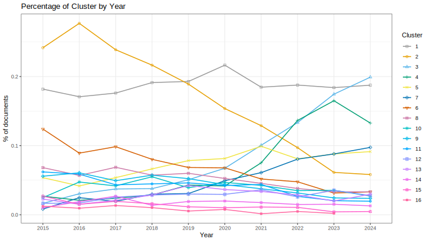
Cluster 1-1—:
Documents: 670; Ave. Year: 2018.9; Ave. Citations: 44
The main common topic across these texts is the relationship between corporate environmental, social and governance (ESG) practices and disclosures, and firm financial performance and valuation.
Step 1: The texts discuss various aspects of how companies’ ESG activities, reporting and disclosures impact their financial results, stock market performance, and overall valuation by investors.
Step 2: Common keywords across the texts related to nature finance and natural capital include: environmental performance, environmental management, environmental disclosure, sustainability reporting, corporate social responsibility (CSR), ESG factors, pollution, waste, toxic emissions.
Step 3: The texts examine whether stronger environmental practices, better management of environmental impacts, more comprehensive ESG/sustainability reporting, and addressing social responsibility actually lead to improved financial outcomes for companies. They analyze potential channels through which this could occur, such as cost savings, access to new markets, product differentiation, and higher perceived intangible asset value. Empirical studies testing the relationship between environmental performance metrics and stock market returns or firm valuations are discussed.
Step 4: The common topic is: The impact of corporate environmental, social and governance (ESG) practices and disclosures on firm financial performance and market valuation.
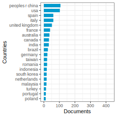
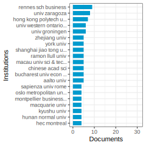
Articles: This research examines how corporate social responsibility (CSR) disclosure affects firm performance (FP) of Spanish-listed companies, with a focus on the mediating role of the economic dimension. Evidence suggests that aligning social and environmental actions with economic standards can enhance firm performance. (Escamilla-Solano et al. 2024) degree: 18 citations: 1
European and Hungarian banks’ compliance with ESG reporting guidelines during the socio-economic crisis period was examined, revealing no significant differences in general scores but notable variations at the aspect level, indicating a need for improved sustainability disclosure practices in the Hungarian banking sector compared to their European counterparts. (Tozser et al. 2024) degree: 21 citations: 0
Businesses face growing pressures from governments and consumers to enhance their environmental performance, prompting the development of win-win-win strategies that benefit companies, customers, and the environment, including the rise of corporate environmental reporting. (ELKINGTON 1994) degree: 96 citations: 1923
Strong environmental management is linked to improved financial performance, as evidenced by positive stock market returns for firms with environmental performance awards and negative returns for those experiencing environmental crises, indicating the financial market’s valuation of such events, with first-time awards associated with greater market valuation increases. (Klassen and McLaughlin 1996) degree: 185 citations: 1683
Improving environmental performance can enhance economic performance for firms by providing better access to markets and differentiating products, challenging the notion that environmental protection necessarily increases costs and reduces global competitiveness. (Ambec and Lanoie 2008) degree: 148 citations: 1097
A study on S&P 500 firms shows that poor environmental performance is linked to lower intangible asset value, with a 10% decrease in toxic emissions leading to a $34 million market value increase, highlighting the significant impact of legally emitted toxic chemicals on the financial standing of publicly traded companies. (Konar and Cohen 2001) degree: 146 citations: 801
Consideration of ESG factors can enhance business sustainability and performance through environmental, economic, and social aspects. The impacts of factors such as governance structure, ESG disclosure, and the global pandemic on business sustainability are thoroughly reviewed, highlighting the importance of adopting ESG policies for innovation and financial performance. (Ahmad, Yaqub, and Lee 2024) degree: 25 citations: 25
Cluster 1-2—:
Documents: 590; Ave. Year: 2018.9; Ave. Citations: 40.4
Based on the texts provided, the common topic appears to be the relationship between corporate environmental disclosure and environmental performance, and how this relationship is influenced by various factors such as corporate governance, regulatory requirements, and legitimacy concerns.
Step 1: Main topics of each text - Determinants of climate change disclosure and its impact on firm value - Selective disclosure and decoupling in sustainability reporting - Impact of corporate governance diversity on carbon emissions under mandatory reporting regulations - Revisiting the relationship between environmental performance and environmental disclosure - Interrelations among environmental disclosure, environmental performance, and economic performance - The role of environmental disclosures as tools for legitimacy
Step 2: Common keywords related to nature finance and nature capital - Climate change disclosure, environmental disclosure, sustainability reporting - Environmental performance, carbon emissions - Corporate governance (board diversity, board independence, board size) - Mandatory reporting regulations, regulatory requirements - Firm value, economic performance - Legitimacy concerns
Step 3: Summary paragraph The texts explore the intricate relationship between corporate environmental disclosure practices and actual environmental performance. They examine how factors such as corporate governance characteristics (e.g., board diversity, independence, and size), regulatory requirements (e.g., mandatory non-financial reporting), and legitimacy concerns influence the extent and quality of environmental disclosures made by companies. The studies also investigate the impact of environmental disclosures on firm value and economic performance, as well as the potential for selective disclosure or decoupling, where disclosures may not accurately reflect actual environmental practices.
Step 4: Common topic name The common topic shared by these texts can be summarized as “The Interplay between Corporate Environmental Disclosure, Environmental Performance, and Influencing Factors.”
Articles: In Sri Lanka, factors such as firm size, board composition, and CEO duality influence climate change disclosure, with good governance practices enhancing transparency and accountability, ultimately leading to increased firm value. (Pradhan et al. 2024) degree: 29 citations: 0
The study examines selective disclosure in corporate sustainability reporting, finding a prevalence of decoupling through vague disclosure, avoidance, and hypocrisy, particularly in labor rights/supply chain and human rights/community areas, and highlights the need for a shift towards a more dialogic accounting approach. (Roszkowska-Menkes, Aluchna, and Kaminski 2024) degree: 26 citations: 0
This study explores the impact of corporate governance diversity on carbon emissions under environmental policy via mandatory nonfinancial reporting regulations, finding that board gender diversity and independence enhance a firm’s environmental performance, whereas larger board sizes can lead to poorer environmental outcomes, contributing valuable insights for countries considering similar regulations. (Muktadir-Al-Mukit and Bhaiyat 2024) degree: 26 citations: 0
This study examines the relationship between corporate environmental performance and environmental disclosures by analyzing purely discretionary disclosures based on Global Reporting Initiative guidelines, finding a positive association, supporting economics-based disclosure theories over socio-political theories, while also acknowledging the latter’s explanatory power for certain data patterns. (Clarkson et al. 2008) degree: 633 citations: 1760
This study examines the interconnectedness of environmental disclosure, environmental performance, and economic performance, finding that strong environmental performance is linked to positive economic performance and detailed environmental disclosures. (Al-Tuwaijri, Christensen, and Hughes 2004) degree: 345 citations: 1186
Environmental disclosures in financial reports are analyzed in relation to environmental performance, with a focus on monetary and non-monetary components, revealing differences in disclosure practices among industry groups, supporting the idea of companies using disclosure for legitimacy. (Cho and Patten 2007) degree: 365 citations: 1109
Cluster 1-3—:
Documents: 578; Ave. Year: 2019.9; Ave. Citations: 32
Based on the texts provided, the common topic appears to be sustainability reporting and disclosure practices by companies, especially in relation to environmental and social impacts. The key points are:
The determinants and factors that influence the extent and quality of sustainability reporting by companies, such as firm size, industry, profitability, foreign ownership, stock listing, environmental certification, etc.
The role of integrated reporting frameworks like the International
Framework and the Global Reporting Initiative (GRI) standards in shaping sustainability disclosure, including the concept of double materiality (financial and impact materiality). The assurance and credibility aspects of sustainability reports, including the use of external assurance providers.
Trends and patterns in sustainability reporting across countries, industries (e.g. mining), time periods, and different disclosure media.
Theoretical perspectives like legitimacy theory, stakeholder theory, signaling theory, etc. used to explain sustainability reporting practices.
The common topic that ties these texts together can be summarized as “Determinants and Trends in Corporate Sustainability Reporting and Disclosure Practices”.
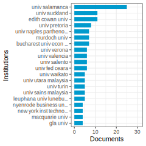
Articles: Portuguese companies have been increasingly disclosing environmental information in response to various internal and external factors, with factors such as firm size and stock market listing positively influencing the extent of environmental disclosure, as revealed by empirical research on 109 large firms in Portugal from 2002-04. (Monteiro and Aibar-Guzm’an 2010) degree: 115 citations: 256
This study investigates the impact of the Integrated Reporting Framework on the disclosure of financial- and impact-material sustainability-related information in integrated reports, finding that while sustainability disclosures remained consistent, impact-material disclosures were more prominent, especially in environmental aspects, highlighting the potential for companies to balance financial and societal concerns in their reporting. (Setia et al. 2024) degree: 25 citations: 1
The study investigates how large Romanian enterprises conduct materiality assessments and disclose impacts, risks, and opportunities in preparation for sustainability reports, revealing a focus on social impacts over financial materiality, with limited engagement with financial capital providers and a need for clearer guidelines on the double materiality concept under the Corporate Sustainability Reporting Directive 2022/2464 in the EU. (Dragomir et al. 2024) degree: 27 citations: 0
This study explores the influence of corporate characteristics on climate governance disclosure among 100 of the world’s largest companies in 2020, emphasizing variables such as location, size, profitability, board diversity, reporting guidelines adherence, sustainability initiatives, and environmental ratings. Positive correlations were found between climate governance and factors like climate transition plans, ESG ratings, and sustainability executive presence, with developed country companies demonstrating stronger climate change governance. These insights are essential for stakeholders navigating the evolving landscape of climate reporting. (Dilling, Harris, and Caykoylu 2024) degree: 32 citations: 0
This paper reviews 178 articles on sustainability reporting from 1999 to 2011, highlighting determinants such as adoption, extent, and quality of reporting, and suggesting future research themes in regulation, governance, and stakeholder perception. (Hahn and Kühnen 2013) degree: 223 citations: 831
Companies globally are increasingly publishing non-financial sustainability reports, with a study analyzing factors influencing the voluntary purchase of assurance among 2,113 companies from 31 countries between 2002-2004, highlighting the importance of credibility enhancement and stakeholder orientation in the choice of assurance provider. (Simnett, Vanstraelen, and Chua 2009) degree: 155 citations: 801
This paper examines the trends in social and environmental disclosure within the global mining industry, highlighting the growing importance of justifying corporate existence through the reporting of impacts. It categorizes companies as ‘leaders’ and ‘laggards,’ emphasizing the need for collaboration to enhance industry-wide transparency. (Jenkins and Yakovleva 2006) degree: 69 citations: 610
Cluster 1-4—:
Documents: 571; Ave. Year: 2020; Ave. Citations: 26
The main topic of the given cluster is “Corporate Environmental Disclosure and Its Determinants”.
Step 1: Understanding the main topic of each text - The texts discuss various aspects related to corporate environmental information disclosure (EID), such as the impact of ownership structure, environmental liability insurance, audit committee attributes, determinant factors, and the relationship between EID and firm value/financial performance.
Step 2: Finding common keywords across the texts relevant to nature finance and nature capital - Environmental information disclosure, ownership structure, institutional ownership, managerial ownership, state ownership, environmental liability insurance, audit committee attributes, determinant factors, firm value, financial performance.
Step 3: Summarizing the texts in a single paragraph The texts in the cluster primarily focus on examining the determinants and implications of corporate environmental information disclosure (EID). Several studies investigate how factors like ownership structure (e.g., ownership concentration, institutional ownership, managerial ownership, state ownership), environmental liability insurance, and audit committee attributes influence the extent and quality of EID. Other studies explore the relationship between EID and firm value, financial performance, and economic growth. The overall theme revolves around understanding the drivers and consequences of corporate environmental disclosure practices.
Step 4: Concluding with a name for the common topic Based on the analysis, a suitable name for the common topic shared by the articles is “Corporate Environmental Disclosure and Its Determinants”.
Articles: Ownership structure in Chinese firms influences environmental information disclosure, with managerial ownership positively associated, and institutional and state ownership negatively associated, showing stronger effects in low-regulated industries and varying by firm size. (MD. Wei, Wang, and Giamporcaro 2024) degree: 30 citations: 1
This study examines the impact of environmental liability insurance on corporate environmental disclosure for Chinese listed firms, finding that it can enhance the quality of disclosure through legitimacy pressure, particularly for firms with significant environmental compliance gaps. (YC. Hu, Fan, and Du 2024) degree: 28 citations: 0
This study examines how audit committee attributes influence energy disclosure in Nigerian nonfinancial firms, with board independence moderating the relationship, providing practical implications for firms aligning with sustainable development goals. (Jibril et al. 2024) degree: 28 citations: 0
This paper examines the factors influencing corporate environmental information disclosure among Chinese listed companies, finding that disclosure levels are currently low, with companies primarily responding to government environmental concerns rather than stakeholder pressures. Companies in economically developed regions and with better financial performance are more likely to disclose environmental data. (XB. Liu and Anbumozhi 2009) degree: 208 citations: 482
This study explores the relationship between voluntary environmental disclosure quality and firm value, finding that such quality is associated with firm value through cash flow and cost of equity components, with the type and nature of disclosures playing an important role in establishing these relations. (Plumlee et al. 2015) degree: 194 citations: 470
This paper explores the relationship between a firm’s environmental and social disclosures and its financial performance, finding that social disclosures, rather than environmental disclosures, are associated with higher market values due to increased expected growth rates in cash flows, supporting the resource-based view of the firm and voluntary disclosure theory. (Qiu, Shaukat, and Tharyan 2016) degree: 170 citations: 448
Authoritarian regimes’ legislatures, whether binding or nonbinding, impact economic growth and investment differently, with binding legislatures positively affecting growth and investment in regimes reliant on domestic investment, and nonbinding legislatures negatively impacting growth, particularly in regimes dependent on natural resource revenue. (Wright 2008) degree: 1 citations: 465
Cluster 1-5—:
Documents: 426; Ave. Year: 2020.6; Ave. Citations: 25.2
The main topic of the given cluster is the relationship between environmental factors and firms’ environmental investment and performance.
Common keywords across the texts related to nature finance and nature capital:
- Environmental, Social, and Governance (ESG) performance
- Green investment
- Environmental regulation
- Environmental legitimacy
- Green innovation
- Carbon disclosure
- Public environmental concern
- Sustainable development
Summary:
The texts explore various aspects of how environmental factors influence firms’ environmental practices, investments, and overall performance. Several studies examine the impact of government environmental attention, regulations, and public concerns on firms’ ESG performance, green investment, carbon disclosure, and adoption of green innovations. Other papers investigate the determinants and outcomes of corporate environmental investment, such as improved financial performance, reduced environmental violations, and competitive advantage. The role of internal factors like executive incentives, board characteristics, and firm ownership is also discussed. Overall, the texts highlight the interplay between external environmental pressures, internal firm dynamics, and their impact on environmental sustainability efforts and outcomes.
Common Topic Name: Environmental Drivers of Corporate Environmental Investment and Performance
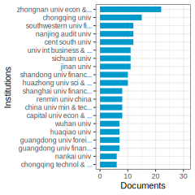

Articles: Government environmental attention positively influences firms’ ESG performance in China, as evidenced by the increase in ESG performance due to greater government focus on environmental issues, which in turn affects firm behaviors such as green investment and technology innovation. (XQ. Liu et al. 2024) degree: 22 citations: 11
This paper explores the impact of green investment on energy firm performance using micro-level data from listed energy firms in China from 2008 to 2017, finding a significant positive correlation between green investment and financial performance, with long-term benefits including improved environmental performance and reduced violations, suggesting firms should prioritize environmental investment for long-term success. (YF. Chen and Ma 2021) degree: 86 citations: 121
This study explores the determinants of corporate environmental investment using a machine learning approach, finding that sales performance, CEO tenure, board characteristics, and company internationalization significantly impact environmental investment decisions, with the XGBoost model demonstrating high accuracy. (F. Liu et al. 2024) degree: 22 citations: 0
This paper investigates how negative environmental feedback influences substantive green innovation, finding that it stimulates such innovation, especially in private firms, with external regulations and internal incentives playing moderating roles, ultimately providing insights and policy recommendations for fostering sustainable development. (ZY. Sun, Sun, and Dong 2024) degree: 18 citations: 0
The level of paradigm development in organizational science affects resource acquisition, collaborative research, and overall field advancement, with the emphasis on inclusiveness and diversity potentially hindering scientific progress and competition with other social sciences for resources. (PFEFFER 1993) degree: 2 citations: 897
Proactive corporations invest in sustainability initiatives to generate public benefits and profits, with different firms benefiting from resource utilization improvements, ISO 14001 certification, or eco-labeled products for competitive advantage, requiring a tailored strategy to optimize economic returns and competitive advantage from environmental investments. (Orsato 2006) degree: 67 citations: 440
Legal enforceability influences the use of contracts versus relational reliability in safeguarding market exchanges amidst hazards, as demonstrated in a study on 399 buyer-supplier transactions in China, highlighting the importance of prior experience and the changing role of contracts under varying legal conditions. (KZ. Zhou and Poppo 2010) degree: 4 citations: 383
The study examines the impact of environmental legitimacy and green innovation on corporate carbon disclosure, finding that environmental legitimacy negatively influences disclosure, with green process innovation mediating this relationship, highlighting the importance of both internal and external mechanisms for sustainable practices in firms. (DY. Li et al. 2018) degree: 104 citations: 344
Public appeal positively influences green investment in China, with factors such as industry structure, population, and regional GDP also playing significant roles, while carbon markets and Foreign Direct Investment have negative effects, underscoring the importance of public engagement in promoting environmentally-friendly policies and practices. (XC. Liao and Shi 2018) degree: 98 citations: 260
Cluster 1-6—:
Documents: 371; Ave. Year: 2020.6; Ave. Citations: 27.7
Based on the texts provided, the common topic appears to be:
Corporate Governance and Environmental/Sustainability Reporting and Disclosures
The key points that support this topic are:
Several texts discuss the role of corporate governance mechanisms like board gender diversity, ownership structure, leverage etc. in influencing firms’ environmental/sustainability reporting practices.
Common keywords across the texts include corporate governance, environmental disclosure, sustainability reporting, ESG (environmental, social, governance), carbon disclosure, climate change disclosure etc.
The texts analyze the determinants, extent, quality and trends in corporate environmental/sustainability reporting and disclosures from a corporate governance perspective.
Some texts review the literature on the relationship between corporate governance factors and environmental/sustainability reporting.
The overarching theme is understanding how corporate governance structures and practices shape firms’ transparency and accountability on environmental and sustainability issues through reporting and disclosures.
In summary, the cluster of texts commonly explores the intersection of corporate governance practices and firms’ environmental/sustainability reporting behavior and performance from various angles.
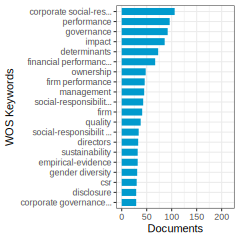
Articles: Research on corporate environmental disclosure has shown conflicting results regarding governance determinants, highlighting the need for more effective monitoring and incentive mechanisms to enhance corporate transparency and accountability in the face of growing sustainability challenges, necessitating further exploration in this area. (Aluchna, Roszkowska-Menkes, and Khan 2023) degree: 116 citations: 1
This paper conducts a strategic mapping of ESG research, identifying key themes and their evolution over time, categorizing ESG literature into clusters, highlighting areas for diversification, and emphasizing the interplay with sustainability, emerging markets, and green financing. (Thomas, Jayachandran, and Biju 2024) degree: 38 citations: 0
The paper analyzes ESG literature, identifying thematic clusters such as ESG disclosure impacts, sustainability, accounting, and responsible investments, discussing research streams, methodologies, and future directions to advance knowledge in the field. (De Falco et al. 2024) degree: 29 citations: 0
Debt capital providers significantly influence firms’ sustainability reporting (SR) practices, particularly in terms of adoption and extent, but not quality, highlighting the need for greater engagement and advocacy to encourage more meaningful SR practices, as revealed by a comprehensive meta-analysis of 112 studies involving 32,953 firms from 1989 to 2022. (Chadha and Singhania 2024) degree: 33 citations: 0
This study explores the impact of board gender diversity on corporate response to climate change reporting, using data from Canadian firms during 2008-2014, and finds a positive correlation between female board representation and voluntary disclosure of climate-related information. (Ben-Amar, Chang, and McIlkenny 2017) degree: 97 citations: 498
This study analyzes voluntary environmental disclosures of large UK companies, finding that firm characteristics such as size, debt levels, and ownership structure influence the likelihood of making such disclosures, with larger companies and those with greater environmental impact showing higher disclosure quality, while variations exist across sectors in determining participation and disclosure quality. (Brammer and Pavelin 2006) degree: 140 citations: 453
This paper investigates the relationship between corporate governance and sustainability, focusing on the importance of both concepts for the continuing operation of corporations, particularly through an exploration of FTSE100 companies, identifying strengths and weaknesses and highlighting the need for further research to enhance understanding. (Aras and Crowther 2008) degree: 30 citations: 267
Cluster 1-99—:
Documents: 196; Ave. Year: 2019.4; Ave. Citations: 24.2
The main topic of the given cluster is the relationship between corporate environmental disclosure/performance and its impact on various stakeholders, particularly financial analysts, institutional investors, and the overall corporate legitimacy and reputation.
Step 1: Understanding the main topic of each text - The texts discuss topics like environmental disclosure strategies, biodiversity disclosure, corporate environmental performance, and their effects on analysts’ forecasts, institutional investors’ interests, corporate legitimacy, information asymmetry, and market valuation.
Step 2: Common keywords related to nature finance and nature capital - Environmental disclosure, biodiversity disclosure, corporate environmental performance, natural capital, ecosystem services, greenhouse gas emissions, water consumption, waste generation, pollution abatement, environmental capital expenditure.
Step 3: Summarizing the texts in a single paragraph The texts explore the relationship between corporate environmental disclosure and performance, and their impact on various stakeholders. They analyze how environmental disclosure influences analysts’ forecasts, institutional investors’ interests, and corporate legitimacy. The studies also examine the effects of corporate environmental performance, such as greenhouse gas emissions, water consumption, and waste generation, on biodiversity reporting decisions and market valuation. Additionally, the role of sustainable boards, NGO directors, and environmental capital expenditures in promoting environmental disclosure and reducing information asymmetry is discussed.
Step 4: Naming the common topic The common topic shared by the articles can be named “The Impact of Corporate Environmental Disclosure and Performance on Stakeholders and Firm Valuation.”

Articles: Firms face a tension between financial market demands and community legitimacy in environmental disclosure strategies, with disclosure enhancing analysts’ information quality, improving forecast accuracy, and bolstering overall stakeholder legitimacy. (Cormier and Magnan 2015) degree: 115 citations: 230
Institutional investors, particularly those with a long-term investment horizon, are increasingly focused on companies’ biodiversity commitments and their disclosure of relevant information on nature capital assets and ecosystem services, influencing corporate policies and rewarding transparency in this area. (Ali et al. 2024) degree: 16 citations: 1
This study examines the impact of sustainable board characteristics and NGO directors on biodiversity disclosure among S&P 500 companies, finding a positive correlation between sustainable board structures and biodiversity disclosure, with NGO directors playing a moderating role in enhancing this relationship. (Toukabri and Alwadai 2024) degree: 24 citations: 0
This study examines the relationship between corporate biodiversity reporting decision (CBRD) and corporate environmental performance (CEP) in 34 listed Finnish companies over 13 years, finding that firms with higher propensity to consume water and generate waste are more likely to disclose biodiversity-related information, supporting legitimacy theory. The results have implications for policy makers, corporate managers, and investors interested in eco-friendly practices. (Dutta and Dutta 2024) degree: 19 citations: 0
This study investigates the relationship between corporate social responsibility (CSR) and information asymmetry, finding an inverse association between CSR engagement and information asymmetry proxies in U.S. firms, suggesting that CSR can be a tool for building and maintaining firm reputation and improving the information environment. (J. Cui, Jo, and Na 2018) degree: 50 citations: 366
This study examines the market valuation of environmental capital expenditure investment in the pulp and paper industry, finding that low-polluting firms benefit economically from such investments, while high-polluting firms face future abatement spending obligations that can affect their market capitalization significantly. (Clarkson, Li, and Richardson 2004) degree: 84 citations: 290
Cluster 10-1—:
Documents: 104; Ave. Year: 2018.6; Ave. Citations: 27.2
The main topic that ties together all these texts is “Green Investment”. The common keywords and themes across the texts relate to investing in environmentally-friendly or sustainable projects, technologies, and practices, often referred to as “green investment”.
The texts cover various aspects of green investment, including:
- Defining and analyzing trends and determinants of green investment across countries (Text 1)
- Managers’ motivations and disclosure practices related to green investments, and investors’ reactions (Text 2)
- The environmental effects of outward green foreign direct investment by countries like China (Text 3)
- Factors influencing individual investors’ intentions towards green investment (Text 4)
- Game theory models analyzing stakeholder behavior and government subsidies for adopting green technologies in supply chains (Text 5)
- The role of communication and conversations in driving intentional change like green investment in organizations (Text 6)
- A review identifying the key drivers that influence organizations’ decisions to implement green investments (Text 7)
In summary, the common topic tying these texts together is “Green Investment” and the various factors, stakeholders, policies, trends, and impacts associated with investing in environmentally sustainable projects and technologies from the perspective of nature finance and natural capital.
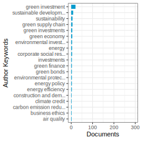

Articles: This paper examines the trends and determinants of green investment in renewable energy over the past decade, highlighting its significance as a driver of the energy sector, particularly led by China. Factors such as economic growth, a robust financial system with low interest rates, high fuel prices, and specific policy interventions like carbon pricing schemes have been found to positively influence green investment, while biofuel support shows no significant impact. (Eyraud, Clements, and Wane 2013) degree: 105 citations: 173
Managers’ green investments, although not affecting future cash flows, elicit positive investor responses when disclosed emphasizing societal benefits over costs, showcasing a tradeoff between wealth and societal value in corporate decision-making. (Martin and Moser 2016) degree: 72 citations: 175
This study examines the environmental effects of China’s green outward foreign direct investment (OFDI) in ASEAN countries, finding that the impact on carbon emissions varies with investment sector, enterprise ownership type, and environmental policy, with implications for promoting green OFDI and carbon emission reduction in host countries. (JJ. Zhao et al. 2024) degree: 14 citations: 1
This study explores motivating factors influencing individual investors’ behavioral intentions toward green investment (BIGI) in Egypt, finding that attitude, subjective norm (SN), and perceived behavioral control (PBC) significantly impact such intentions, with social media platforms moderating the relationship between SN, PBC, and BIGI. The research underscores the importance of green investment within the context of the theory of planned behavior, offering valuable insights for investment and service providers, as well as policymakers, in the era of digital transformation. (Hemdan and Zhang 2024) degree: 11 citations: 0
The study focuses on the interaction between manufacturers, consumers, and the government in promoting green technology adoption in supply chains through government subsidies, highlighting the positive impact of subsidies on incentivizing green investments and consumer behavior, with a stronger effect observed when subsidies target consumers directly. (LB. Guo et al. 2024) degree: 7 citations: 0
Intentional change in organizations is driven by communication, particularly through four types of conversations, highlighting the linguistic basis of change and the role of intentional communication in facilitating intentional change. (FORD and FORD 1995) degree: 1 citations: 522
The study explores the importance of green investments for organizations and identifies key drivers influencing decisions, showing a recent increase in interest and highlighting internal and external factors shaping companies’ engagement in green investments, suggesting future research directions to further understand and promote such investments for positive environmental impacts. (Chitimiea et al. 2021) degree: 71 citations: 28
Cluster 10-2—:
Documents: 88; Ave. Year: 2021.2; Ave. Citations: 19
The main topic of the given cluster is “Sustainable Inventory Management with Carbon Emissions Control”.
Step 1: Understanding the main topic of each text All the texts discuss inventory management models that incorporate strategies to reduce carbon emissions and promote environmental sustainability. They consider factors like carbon tax, cap-and-trade policies, green technology investment, preservation technology, and waste reduction.
Step 2: Finding common keywords across the texts relevant to nature finance and nature capital Common keywords include carbon emissions, green technology, sustainable inventory management, carbon tax, cap-and-trade, emission constraints, waste reduction, preservation technology, and environmental regulations.
Step 3: Summarizing the texts in a single paragraph The texts explore various inventory management models that aim to reduce carbon emissions and promote sustainability in supply chains. They incorporate strategies such as carbon tax, cap-and-trade policies, green technology investment, preservation technology, waste utilization, and bioplastic packaging. The models optimize inventory levels, technology investments, and other decisions while considering emission constraints, environmental regulations, and economic objectives.
Step 4: Concluding with a name for the common topic Based on the common themes and keywords, the overarching topic shared by the articles can be named “Sustainable Inventory Management with Carbon Emissions Control”.

Articles: A study presents a sustainable economic production model incorporating carbon tax and cap policies to control emissions, with a focus on green technology investments and inventory shortages, showing that the model with partial backlogging yields the highest profit with specific operational parameters. (U. Mishra, Wu, and Sarkar 2020) degree: 33 citations: 149
This study develops a carbon cap and tax-regulated sustainable inventory management model for a buyer facing linear and non-linear price-dependent demand, focusing on the impact of carbon emissions from a greenhouse farm on lot sizing decisions, providing optimal strategies for preservation and green technology investments to achieve sustainable economic order quantity. (U. Mishra, Wu, and Sarkar 2021) degree: 24 citations: 116
This paper explores the interplay between trade credit, inventory management, and environmental regulations, focusing on how the length of credit period and carbon emission constraints impact the retailer’s strategies, with numerical examples provided to demonstrate the model’s features and implications. (Dye and Yang 2015) degree: 19 citations: 116
This study examines the impact of carbon policies and green technologies on integrated inventory management in a two-echelon supply chain, aiming to minimize costs while considering carbon emissions in production, transportation, and storage, providing insights for firms to optimize production, delivery, and green investment decisions under different carbon policies, and highlighting the importance of balancing environmental protection and economic growth through appropriate government regulations, particularly emphasizing the preference for efficient green technology under carbon tax policies and the significant effects of production-related and transportation-related carbon emissions on inventory management decisions. (YS. Huang, Fang, and Lin 2020) degree: 35 citations: 97
This study develops three models to optimize inventory levels and technology investments under various carbon regulations, showing that profit and emission reduction are tied to green technology investment, with the carbon price significantly impacting total profit under a carbon tax system. (Hasan et al. 2021) degree: 28 citations: 78
This study develops a sustainable three-layer tuna fish supply chain model incorporating green technology, integrated multi-trophic aquaculture methods, fish waste utilization, seaweed bioplastic packaging, and blockchain traceability to address the urgent need for sustainable alternatives in the tuna fish aquaculture industry. (John and Mishra 2024) degree: 11 citations: 1
This study introduces a sustainable inventory model incorporating green technology to control carbon emissions, optimize profit, and maximize shelf-life of perishable products through investment in preservation technology, with theoretical and analytical solutions demonstrating its effectiveness and profitability compared to existing models. (Pervin 2024) degree: 9 citations: 0
The paper presents a bi-objective inventory model incorporating source-based emissions, plan-based green investments, inflation, and the present value of money, using cap-and-trade policy to address carbon emissions, determining Pareto optimal solutions through the epsilon-constraint method, highlighting the benefits of green investments for both the firm and the environment. (Datta, Datta, and Goswami 2024) degree: 11 citations: 0
Cluster 10-3—:
Documents: 78; Ave. Year: 2020.7; Ave. Citations: 25.5
The main topic of the given cluster is “Green Supply Chain Management and Sustainable Product Development”.
Step 1: Understanding the main topic of each text - The texts discuss concepts like cleaner production, green product development, environmental subsidies, green investment decisions, sustainable packaging strategies, and sustainability investment under emission regulations.
Step 2: Finding common keywords across texts relevant to nature finance and nature capital - Common keywords include green/sustainable products, environmental concerns, carbon emissions, green investment, supply chain coordination, eco-friendly packaging, emission abatement technologies.
Step 3: Summarizing the texts in a single paragraph The texts explore various aspects of integrating environmental sustainability into supply chain operations and product development. Topics covered include incentivizing green product design through subsidies or regulations, assessing the impact of consumer environmental preferences, optimizing green investment decisions by manufacturers or retailers, adopting sustainable packaging solutions, and coordinating green efforts across the supply chain through contracts or centralized decision-making. The common thread is utilizing strategies that reduce environmental impact, such as lowering carbon emissions, while maintaining economic viability.
Step 4: Giving a name for the common topic Based on the summary, a suitable name for the common topic would be “Green Supply Chain Management and Sustainable Product Development”.
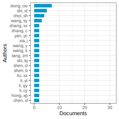

Articles: This paper discusses the Norwegian Cleaner Production method, emphasizing quantifiable environmental benefits and the importance of integrating CP into all business activities to enhance sustainability and address the needs of developing countries, with a focus on financial mechanisms and expanding the concept to create job opportunities and improve quality of life. (Kjaerheim 2005) degree: 3 citations: 141
Investing in green product development in the supply chain, particularly by the manufacturer, leads to increased profits and cost savings on environmental taxes, with potential price decreases in the second period but consistently lower demand for green products compared to non-green products. (CW. Dong, Liu, and Shen 2019) degree: 25 citations: 126
This paper examines the impact of environmental subsidies on investment in emission-reducing technologies in manufacturing, focusing on consumer versus manufacturer subsidies, finding that consumer subsidies lead to lower abatement and higher consumption, resulting in higher emissions but also higher social welfare due to increased supply and profits for manufacturers. (Bian, Zhang, and Zhou 2020) degree: 25 citations: 120
This paper explores green and ordinary product pricing and green decision-making under chain-to-chain competition by considering consumers’ multiple preferences, finding that consumer green preference incentivizes the green supply chain and competition improves product sustainability and supply chain performance. (SJ. Wang et al. 2024) degree: 3 citations: 1
The study examines factors influencing packaging carbon reduction levels and fees in the take-out industry, finding that green competition can reduce E-packaging’s carbon reduction level, while price competition may increase it; unit manufacturing cost of N-packaging and cost coefficient of carbon reduction are crucial in firms’ package-type decisions. (SF. Du et al. 2024) degree: 4 citations: 0
This paper explores the joint optimization of green investment and contract design for sustainable supply chains, considering fairness concerns among members. The study reveals that the superiority of green investment between manufacturer and retailer varies based on investment efficiency and fairness concern intensity, influencing profits under different contract types. (L. Chen et al. 2024) degree: 10 citations: 0
This paper explores sustainability investment in sustainable products under cap-and-trade regulation, analyzing decentralized and centralized supply chains to determine optimal order or production quantities and sustainability investments, highlighting the impact of sustainability investment efficiency on optimal solutions and the role of revenue sharing contracts in achieving supply chain coordination. (CW. Dong et al. 2016) degree: 47 citations: 274
Cluster 10-99—:
Documents: 419; Ave. Year: 2019.1; Ave. Citations: 33.9
The common topic across these texts is the analysis of strategies and policies for promoting green technologies, reducing carbon emissions, and achieving environmental sustainability in supply chains and business operations.
Some key points:
The texts discuss various mechanisms like carbon cap-and-trade, government subsidies, green technology investment, product recycling, and supply chain coordination to reduce emissions.
They analyze the impacts of these green strategies on supply chain decisions like pricing, production quantities, technology selection, and profit under different market structures (monopoly, oligopoly, competition).
Several texts focus on modeling the tradeoffs between economic objectives (cost, profit) and environmental objectives (emission reduction) using multi-objective optimization.
The role of pressures from customers, regulations, and competition in driving firms to adopt environmental innovations is also examined.
Case studies are presented for industries like manufacturing, energy, consumer products to demonstrate the applicability of the models.
In summary, the overarching theme is the integration of environmental sustainability considerations, particularly carbon emission reduction, into supply chain management and business strategy using analytical models and policy instruments like carbon pricing, subsidies and regulations.
Articles: This study examines the impact of carbon emission reduction on a supply chain with vendor-managed deteriorating product inventory, proposing a revenue-sharing contract to enhance profit and emissions in the decentralized system, demonstrating the potential for perfect coordination based on demand factors and operational decisions. (QG. Bai et al. 2019) degree: 28 citations: 161
Government subsidies under cap-and-trade mechanisms influence green technology investment and supply chain coordination, with fixed cost subsidies favoring manufacturers in emission reduction, while emission reduction-based subsidies drive retailer profit and green production efforts. (ZM. Li et al. 2021) degree: 29 citations: 113
Low-carbon mergers and acquisitions increase energy efficiency in high-energy consuming companies, particularly through environmental responsibility, innovation, and investment, but can also hinder efficiency due to increased costs and pressure, with state-owned and eastern enterprises benefitting more from such strategies. (Lu, Li, and Guo 2024) degree: 8 citations: 1
This study explores a closed-loop green supply chain model with retailers’ competition and product recycling in a green environment under cap-and-trade policies, highlighting the importance of product recycling for sustainable development in a resource-scarce world and the role of environmental policies in shaping supply chain dynamics and profitability. (Pal, Mandal, and Sana 2024) degree: 9 citations: 0
This paper explores green technology investment decisions in a competitive environment, utilizing a two-sided matching mechanism to analyze the effects of carbon price and green improvement coefficient on product pricing, profits, and environmental performance, finding that higher carbon prices lead to increased product prices and improved environmental outcomes. (L. Liu et al. 2024) degree: 10 citations: 0
This study explores the challenges green consumers face in translating their environmental concerns into purchasing behavior, particularly in the consumer technology sector, suggesting the need for incentives and simplified labeling to bridge the gap between values and actions. (Young et al. 2010) degree: 13 citations: 929
China has implemented a national circular economy (CE) indicator system to address the depletion of its natural capital and environment, providing valuable metrics for policymakers and decision-makers, although improvements are needed to include a more comprehensive set of sustainability indicators and address implementation barriers, with potential lessons for other nations. (Geng et al. 2012) degree: 16 citations: 545
This paper presents a multi-objective optimization model for green supply chain network design, focusing on environmental investments decisions to balance total cost and environmental impact, demonstrating its effectiveness in strategic planning for green supply chains through numerical experiments and sensitivity analysis for managerial insights. (F. Wang, Lai, and Shi 2011) degree: 21 citations: 489
Consumer, regulatory, and competitive pressures influence firms’ investments in environmentally friendly practices, with subsidies potentially being a more effective alternative for firms with high emission levels. (Yalabik and Fairchild 2011) degree: 47 citations: 338
Cluster 11-1—:
Documents: 128; Ave. Year: 2019.2; Ave. Citations: 20.4
The main topic of the given cluster is the financial sustainability and outreach of microfinance institutions (MFIs).
Common keywords across the texts related to nature finance and nature capital: - Financial sustainability - Outreach to poor borrowers - Capital structure (sources of financing like equity, debt, deposits, grants) - Operational self-sufficiency - Financial self-sufficiency - Depth of outreach - Impact and social objectives
Summary: The texts discuss the trade-off between financial sustainability and outreach of microfinance programs aimed at providing credit to poor households. They analyze how different sources of financing like equity, debt, deposits, and grants impact the operational and financial self-sufficiency of MFIs. The studies find that equity and deposit financing generally enhance financial sustainability, while debt and donation financing may have an inverse relationship. However, the effects vary based on the type of MFI (NGO, bank, etc.) and the specific measure of sustainability used. The texts also explore the role of external governance, macroeconomic factors, and regulations in influencing the sustainability and outreach of MFIs.
Common topic name: Balancing financial sustainability and social outreach in microfinance institutions
Articles: Recent research on microfinance has focused on understanding joint liability group lending and its impact on reducing information asymmetries, as well as exploring the trade-off between financial sustainability and outreach of microfinance programs through novel empirical contributions. (Hermes and Lensink 2007) degree: 21 citations: 229
In microfinance, organizations face a contract design challenge to optimize impact, outreach, and financial sustainability when lending to poor populations, with tradeoffs influenced by monitoring costs and agency relationships, leading sustainable MFOs targeting poorer borrowers to have higher interest rates, staff costs, and lower leverage ratios, as evidenced by data from 72 MFOs. (Conning 1999) degree: 27 citations: 190
Financial sustainability of Microfinance Institutions (MFIs) is crucial for social welfare, as demonstrated by a study of 702 MFIs in 83 countries showing a positive link between financial sustainability and outreach depth. (Quayes 2012) degree: 48 citations: 153
This study investigates the impact of capital structure on the sustainability and efficiency of microfinance institutions, revealing that a higher reliance on grants by larger MFIs leads to a decrease in operational self-sufficiency. (Bogan 2012) degree: 29 citations: 121
This study examines the relationship between microfinance institutions’ self-sustainability and financing sources, revealing that retained earnings and equity positively impact self-sustainability, with good governance enhancing this effect, providing valuable insights for MFIs seeking to improve sustainability. (Ahamad et al. 2024) degree: 8 citations: 0
This meta-analysis explores the impact of different sources of finance on the financial sustainability of microfinance institutions (MFIs), finding that equity and deposit financing enhance sustainability, while debt and donation financing have a negative effect, with variations based on MFI charters and financial sustainability proxies. (Dirse and Japee 2024) degree: 9 citations: 0
This study examines the relationship between social and financial sustainability in the European microfinance sector, finding that MFIs prioritizing social objectives tend to be more financially sustainable, except in cases of providing small-scale loans to the poorest. Larger MFIs in countries with strict financial regulations show a competitive advantage, but regulatory restrictions on interest rates can hinder financial sustainability. (Dalla Pellegrina et al. 2024) degree: 13 citations: 0
Country-level macroeconomic and macro-institutional features significantly impact the performance of microfinance institutions, with evidence of complementarity and substitutability effects, highlighting the importance of considering the broader economic context for accurate MFI evaluation and positioning within the realm of economic development. (Ahlin, Lin, and Maio 2011) degree: 23 citations: 244
Cluster 11-2—:
Documents: 88; Ave. Year: 2018.5; Ave. Citations: 11.5
Based on the texts provided, the common topic appears to be “Financial Sustainability of Local Governments”.
Step 1: Understanding the main topic of each text - The texts discuss financial sustainability, with a focus on local governments and municipalities. - Several texts analyze factors influencing financial sustainability of local governments. - Some texts examine the relationship between size/amalgamation of local governments and financial sustainability.
Step 2: Common keywords related to nature finance and nature capital - Financial sustainability - Local governments - Municipalities - Debt - Revenue - Public services - Socio-demographic factors - Economic factors
Step 3: Summary paragraph The texts collectively explore the concept of financial sustainability in the context of local governments and municipalities. They analyze various factors that influence the financial sustainability of these entities, such as debt levels, revenue sources, socio-demographic factors (e.g., population, unemployment), and economic factors. Some studies investigate the relationship between the size or amalgamation of local governments and their financial sustainability, challenging the assumption that larger entities are more sustainable. The texts also discuss the importance of measuring and managing financial sustainability for local governments to ensure the provision of public services.
Step 4: Common topic name “Financial Sustainability of Local Governments”
Articles: This annotated bibliography on financial sustainability synthesizes literature across sectors, highlighting key dimensions such as covering costs from internal resources, debt repayment capacity, and sectorial analyses focusing on public entities, particularly in European countries like Spain, Italy, and England. Key research areas, variables, and analytical tools are identified to guide future studies in this field. (Kakati and Roy 2021) degree: 48 citations: 5
This study examines the impact of financial sustainability on the ability of local governments to achieve the United Nations’ 17 Sustainable Development Goals (SDGs), revealing that municipalities with stronger financial conditions are more dedicated to advancing goals related to the biosphere, social, and economic development, potentially encouraging efforts to combat tax evasion and boost available resources. (Bisogno et al. 2024) degree: 7 citations: 0
The assumption that larger local governments are more financially sustainable is commonly held but has seldom been empirically tested, with findings indicating that larger local governments are actually less financially sustainable, urging a re-evaluation of policies concerning local government size and financial viability. (Drew, Miyazak, and McQuestin 2024) degree: 5 citations: 0
This study examines the risk factors and drivers impacting the financial sustainability of local governments, highlighting variables such as unemployment, population demographics, and budgetary outcomes as crucial considerations for decision-making by managers and policymakers in the face of the ongoing public finance crisis. (Bol’ıvar et al. 2016) degree: 24 citations: 66
Analyzing German local governments’ financial sustainability, our study focuses on adjusted income determinants, highlighting the influence of external factors such as debt levels and population size as risk factors, while identifying own taxes and grants as drivers of financial sustainability, offering insights for policymakers and public managers. (Frintrup and Hilgers 2024) degree: 5 citations: 0
The study evaluates the impact of metropolitan amalgamations in Sydney on municipal financial sustainability, finding that proposed amalgamations will not improve financial sustainability in Greater Sydney local government. (Drew and Dollery 2014) degree: 13 citations: 56
This article examines the measurement and management of financial sustainability in local governments, focusing on income statement evolution and its influential factors, using an empirical study of Spanish municipalities to test the relationship with revenues, debt, and services, finding that the income statement is effective in assessing financial sustainability and identifying potential sustainability issues in public services. (Navarro-Galera et al. 2016) degree: 34 citations: 50
This review highlights the challenges faced by nuclear power in achieving sustainability, emphasizing the need for technical innovations to address environmental impacts, equity considerations for current and future generations, improved efficiency and technology to reduce greenhouse gas emissions, enhanced safety measures to eliminate risks and gain market acceptance, and rebuilding public trust to remain competitive amid advancing renewable energy technologies. (Pearce 2012) degree: 1 citations: 55
Cluster 11-99—:
Documents: 430; Ave. Year: 2017.5; Ave. Citations: 27.4
The main topic of the given cluster is “Financial Sustainability of Organizations and Initiatives”.
Step 1: Understanding the main topic of each text - The texts cover topics related to factors affecting the financial sustainability of various types of organizations and initiatives like community-managed handpumps, biobanks, football clubs, universities, higher education institutions, social enterprises, and databases like TAIR.
Step 2: Common keywords across texts relevant to nature finance and nature capital - Financial sustainability, economic sustainability, cost recovery, funding models, commercialization, business models, entrepreneurship, investment, governance, regulations.
Step 3: Summarizing the texts in a single paragraph The texts explore the challenges and strategies for achieving financial sustainability across different types of organizations and initiatives. They analyze factors like system age, location, governance, regulations, entrepreneurship, commercialization, business models, and funding sources that impact the ability to generate revenue and recover costs. The importance of aligning organizational design, management practices, and strategic plans with the dual goals of financial viability and social/environmental mission is emphasized, especially for hybrid organizations like social enterprises and non-profits.
Step 4: Naming the common topic Based on the common themes of achieving long-term financial viability, revenue generation, cost recovery, and sustainable funding models across various types of organizations and initiatives, the common topic can be named “Financial Sustainability of Organizations and Initiatives”.
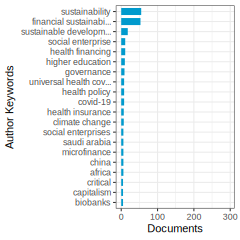
Articles: This paper analyzes predictors of sustainability for community-managed handpumps in Sub-Saharan Africa using logistic regression on a large dataset, highlighting operational, technical, institutional, financial, and environmental factors impacting functionality in Liberia, Sierra Leone, and Uganda, with system age and distance from district/county capital being significant risk factors for nonfunctionality. (Foster 2013) degree: 15 citations: 150
The concept of nature capital refers to the world’s stock of natural resources that provide ecosystem services benefiting humans. (Fetter 1907) degree: 2 citations: 5
This literature review on the business and economics of biobanking highlights the niche focus within the broader biobanking literature, emphasizing the need for equitable benefit sharing and sustainable operating models due to heavy public sector subsidies and underutilization of specimens in many biobanks. (Bal’az, Jeck, and Balog 2022) degree: 15 citations: 5
The study focused on examining economic sustainability in football clubs during economic crises, emphasizing factors like media, entrepreneurship, commercialization, privatization, and financial management that contribute to their financial performance and sustainability. (Atghia and Nazarian 2024) degree: 7 citations: 1
This paper examines the U-shaped impact of administrative intensity on financial sustainability in Australian universities, highlighting significant differences between university categories. (Tran, Dollery, and Fellows 2024) degree: 5 citations: 0
Efficiently managing resources is crucial for higher education institutions to achieve financial sustainability, with interconnected strategic enablers, such as regulations and governance practices, playing key roles as revealed by an integrated Decision-Making Trial and Evaluation Laboratory-Interpretive Structural Modeling approach. (Makki and Al-Filali 2024) degree: 11 citations: 0
Scholarly interest in social enterprises has shifted towards understanding hybrid organizations that pursue both financial sustainability and social purpose, with a focus on the impacts of this dual mission on management, resource acquisition, and human mobilization, suggesting future research directions in this field. (Doherty, Haugh, and Lyon 2014) degree: 30 citations: 972
TAIR, a leading genetic and molecular biology database for Arabidopsis thaliana, provides centralized access to data for over 30,000 genes, utilizing curated experimental data and community contributions to enhance understanding of Arabidopsis gene function and sustainability through a subscription-based funding model. (Berardini et al. 2015) degree: 1 citations: 746
Hybrid social enterprises balancing social missions and commercial models require specific management strategies to avoid mission drift and enhance financial sustainability, with this article presenting a typology of social business hybrids for effective organizational design. (Santos, Pache, and Birkholz 2015) degree: 11 citations: 314
Cluster 12-1—:
Documents: 83; Ave. Year: 2022.5; Ave. Citations: 28.5
The main topic of this cluster is the role of green intellectual capital and related concepts like green innovation, green human resource management, and environmental regulations in driving sustainable performance and competitive advantage, especially for manufacturing small and medium enterprises (SMEs).
Some common keywords across the texts relevant to nature finance and nature capital are:
- Green intellectual capital
- Green innovation
- Green human resource management
- Sustainable performance
- Environmental performance
- Competitive advantage
- Environmental regulations
- Natural resource-based view (NRBV)
- Absorptive capacity
- Green technology adoption
The texts explore how firms, particularly SMEs in the manufacturing sector, can leverage their green intellectual capital (knowledge, skills, experience related to environmental sustainability) along with green innovation practices, green HR policies, absorptive capacity for new green technologies, and by aligning with environmental regulations to improve their sustainable performance across economic, environmental and social dimensions. This, in turn, can help them achieve a competitive advantage in the market.
The common topic that emerges from this cluster is: “Leveraging Green Intellectual Capital for Sustainable Competitiveness in Manufacturing SMEs”
Articles: This study explores the impact of absorptive capacity on green innovation adoption in SMEs, revealing that absorptive capacity strongly predicts sustainable capabilities and green innovation adoption, with sustainable orientation and collaboration playing key mediating roles, while sustainable human capital does not significantly influence green innovation adoption. (Aboelmaged and Hashem 2019) degree: 38 citations: 231
This pioneering study explored the link between green intellectual capital and green human resource management in large manufacturing firms in Malaysia, finding that green human capital and green relational capital impacted green HR management, while green structural capital did not, with no similar global evidence found in existing literature. (Yong et al. 2019) degree: 87 citations: 225
This study explores the impact of green intellectual capital on sustainable performance, revealing a positive influence on economic, environmental, and social aspects, offering valuable insights for green manufacturing firms to leverage intangible resources for competitive advantage and enhanced cleaner production capabilities. (Yusliza et al. 2020) degree: 103 citations: 148
This study explores the relationship between dimensions of green intellectual capital (green human capital, green structural capital, green relational capital) and business sustainability in Malaysian SMEs, finding that green structural and relational capital positively impact sustainability, while green human capital does not. (Yusoff et al. 2019) degree: 83 citations: 118
This study introduces a mediation-moderation framework in the context of natural resource-based view (NRBV) to analyze the impact of green intellectual capital (GIC) on green innovation and environmental performance, highlighting positive relationships and the moderating role of green innovation climate. (Akhtar et al. 2024) degree: 31 citations: 1
This study explores the relationship between green intellectual capital, green information systems, green management initiatives, and sustainable performance in the context of natural resource-orchestration theory. Findings indicate that these factors significantly influence green technology adoption and, in turn, sustainable performance, with digital transformation strategy playing a key moderating role. (Riaz et al. 2024) degree: 24 citations: 0
The study explores how green intellectual capital drives green innovation and absorptive capacity in SMEs, leading to sustainable competitive advantage within the manufacturing sector, emphasizing the importance of environmental regulations in shaping this relationship. (Sohu et al. 2024) degree: 23 citations: 0
Green innovation mediates the relationship between green intellectual capital, green human resource management, and environmental performance in large manufacturing firms, with environmental strategies moderating the impact of green innovation on environmental performance, as supported by a study on 244 firms. (SU. Rehman et al. 2021) degree: 64 citations: 284
Cluster 12-2—:
Documents: 76; Ave. Year: 2020.5; Ave. Citations: 20.6
The main topic of the given cluster is “Green Intellectual Capital and Its Impact on Firm Performance and Competitiveness”.
Step 1: Understanding the main topic of each text - The texts discuss the concept of green intellectual capital, which refers to the knowledge, skills, and capabilities related to environmental sustainability and green practices within an organization. - They explore the determinants and components of green intellectual capital, such as green human capital, green structural capital, and green relational capital. - The texts examine the impact of green intellectual capital on firm performance, competitive advantage, and sustainability.
Step 2: Common keywords across the texts relevant to nature finance and nature capital - Green intellectual capital, environmental consciousness, corporate social responsibility, green management, competitive advantage, sustainability, firm performance.
Step 3: Summarizing the texts in a single paragraph The texts in the cluster focus on the concept of green intellectual capital, which encompasses the knowledge, skills, and capabilities related to environmental sustainability and green practices within an organization. They explore the determinants of green intellectual capital, such as corporate social responsibility and environmental consciousness, and its components, including green human capital, green structural capital, and green relational capital. The studies investigate the positive impact of green intellectual capital on firm performance, competitive advantage, and sustainability, highlighting its importance for organizations to meet environmental regulations, consumer demands, and achieve long-term success.
Step 4: Naming the common topic Based on the analysis, the common topic shared by the articles can be named “Green Intellectual Capital and Its Impact on Firm Performance and Competitiveness”.
Articles: This study develops a framework of green intellectual capital, demonstrating the positive impact of corporate social responsibility (CSR) on green intellectual capital through environmental consciousness, using structural equation modeling to analyze the relationships and classify Taiwanese manufacturing companies based on their ethical practices. (Chang and Chen 2012) degree: 83 citations: 127
This study examines how environmental consciousness influences competitive advantage through the mediation of green intellectual capital in Taiwan’s manufacturing industry, providing insights for firms developing environmental policies and contributing to the field of green management. (CL. Huang and Kung 2011) degree: 71 citations: 104
This study explores how green intellectual capital (GIC) affects competitive advantage (CA) in Chinese listed firms during COVID-19, with corporate philanthropy types (cash, in-kind, both) moderating the relationship between GIC and CA, finding that all types of GIC positively influence CA, with in-kind philanthropy showing the strongest moderation effect. (Naseem et al. 2024) degree: 15 citations: 1
This study explores the influence mechanisms behind undergraduate students’ green innovation behavior, finding that proenvironmental mentors, green intellectual capital, and emotional intelligence play significant roles in fostering innovative green behaviors among college students, offering valuable insights for cultivating green innovation in academic settings. (JQ. Liu et al. 2024) degree: 7 citations: 0
This study examines the impact of green intellectual capital on the sustainability business performance of manufacturing SMEs in Malaysia, finding a positive significant relationship and highlighting the importance of green customer, technological, and spiritual capital for maximizing benefits and achieving sustainable outcomes in organizations. (Hina et al. 2024) degree: 18 citations: 0
This study introduces the concept of green intellectual capital, comprising green human capital, green structural capital, and green relational capital, and demonstrates their positive impact on firms’ competitive advantages, particularly noting the prevalence of green relational capital and the disparities between SMEs and large enterprises in Taiwan’s information and electronics industry, emphasizing the importance of investing in green intellectual capital for companies to align with environmental regulations and consumer preferences and gain competitive advantages. (YS. Chen 2008) degree: 157 citations: 425
Cluster 12-99—:
Documents: 377; Ave. Year: 2019.2; Ave. Citations: 39.3
Based on the texts provided, the common topic appears to be:
Green Intellectual Capital and Sustainability
Step 1: Understanding the main topic of each text - The texts discuss concepts like sustainable intellectual capital, green intellectual capital, green R&D for eco-innovation, environmental sustainability, and the role of green IT capital in improving environmental performance and business competitiveness.
Step 2: Finding common keywords across texts relevant to nature finance and nature capital - Common keywords include: intellectual capital, green capital, environmental sustainability, eco-innovation, green technology, environmental performance, business competitiveness.
Step 3: Summarizing the texts in a single paragraph The texts explore the concept of green or sustainable intellectual capital, which encompasses human, structural, and relational capital geared towards environmental sustainability. They examine how investing in green R&D, eco-innovation, and green technologies like blockchain can improve a firm’s environmental performance and competitiveness. The role of green IT capital in mediating the relationship between environmental corporate social responsibility, environmental performance, and business competitiveness is also discussed.
Step 4: Giving a name for the common topic Based on the common themes and keywords, the topic that ties these texts together is “Green Intellectual Capital and Sustainability”.
Articles: This paper explores how sustainable intellectual capital, encompassing human, structural, and relational aspects, enhances environmental management systems in firms, as demonstrated through a multiple case study of environmentally proactive Spanish companies, revealing the significance of knowledge accumulation, technology enhancement, and stakeholder engagement in achieving sustainability goals. (L’opez-Gamero et al. 2011) degree: 49 citations: 86
Green intellectual capital (GIC) significantly influences the implementation of blockchain technology, which in turn impacts green manufacturing and business sustainability, offering valuable insights for managers and policymakers seeking to integrate green practices into their operations. (M. Umar et al. 2024) degree: 20 citations: 1
This study explores the impact of financial performance and sustainable green intellectual capital on sustainable competitive advantage in the Indonesian energy and mining sector from 2016 to 2020, finding that efficiency performance positively influences sustainable competitive advantage while unique green intangible assets do not affect it significantly. (Sumaryo. et al. 2024) degree: 16 citations: 0
The systematic literature review on sustainable intellectual capital (SIC) reveals a recent surge in publications, predominantly quantitative, focusing on manufacturing companies in developing countries like Taiwan, Thailand, and China, with Taiwan being a noteworthy case, indicating a growing interest and emphasis on SIC in these regions. (Mart’ınez-Falc’o et al. 2024) degree: 16 citations: 0
This paper examines the concept of environmental sustainability, emphasizing the importance of maintaining natural resources to sustain a growing global population while avoiding environmental degradation. (GOODLAND 1995) degree: 31 citations: 796
This study examines the impact of green research and development investment on environmental and financial performance in Japanese manufacturing firms, revealing a negative relationship between green R&D and carbon emissions, and a positive relationship with financial performance, supporting the importance of unique resources and capabilities for superior corporate outcomes. (KH. Lee and Min 2015) degree: 107 citations: 587
The study assesses Industry 4.0 technologies from a sustainability perspective, introducing a measures framework based on the UN Sustainable Development Goals and a decision method to evaluate their sustainable performance, finding that mobile technology has the greatest impact on sustainability across industries. (CG. Bai et al. 2020) degree: 7 citations: 441
This study investigates the impact of Environmental Corporate Social Responsibility (ECSR) on green Information Technology (IT) capital, which in turn influences environmental performance and business competitiveness, revealing positive relationships and partial mediating effects among these variables in Taiwanese manufacturing companies. (Chuang and Huang 2018) degree: 45 citations: 244
Cluster 13-1—:
Documents: 106; Ave. Year: 2020.2; Ave. Citations: 16.4
The main topic of the given cluster is the evaluation of sustainable banking practices and their impact on financial performance and stability.
Common keywords across the texts related to nature finance and natural capital:
- Sustainable development strategies
- Environmental regulation
- Sustainable business models
- Environmental financing
- Sustainable finance
- Sustainability performance
- ESG (Environmental, Social, and Governance) disclosures
- Corporate social responsibility (CSR)
Summary: The texts in the cluster discuss various aspects of sustainable banking practices, including sustainable development strategies, sustainable business models, environmental financing, and the integration of environmental, social, and governance (ESG) factors into banking operations. The studies examine the impact of these sustainable practices on financial performance, stability, and risk management of banks. Several texts explore the role of financial technology (Fintech) and its potential to moderate the relationship between sustainability initiatives and financial stability. The cluster also highlights the importance of regulatory frameworks, supervisory guidelines, and customer receptiveness in promoting sustainable banking practices.
Common Topic: The common topic shared by the articles is “Sustainable Banking Practices and Their Impact on Financial Performance and Stability.”
Articles: This paper introduces the non-additive fuzzy integral as an effective method for evaluating fuzzy MCDM problems in the context of sustainable fishing development strategies, illustrating its application in assessing sustainable development strategies for aquatic product processors in Taiwan using triangular fuzzy numbers to capture decision makers’ subjective preferences on various criteria. (Chiou, Tzeng, and Cheng 2005) degree: 1 citations: 183
This paper explores sustainable business model archetypes in the banking industry, focusing on customer receptiveness in Hong Kong, with “Substitute with digital processes,” “adopt a stewardship role,” and “encourage sufficiency” being the most welcomed by customers, providing insights for achieving sustainability in banking. (Yip and Bocken 2018) degree: 64 citations: 173
This study investigates the relationship between access to finance and environmental financing on the financial performance of 713 banks globally from 2013-2015, finding that access to finance positively impacts financial performance through loan growth and management quality, particularly benefiting banks with total assets less than USD 2 billion. (Nizam et al. 2019) degree: 62 citations: 127
This bibliometric review on sustainable finance highlights the integration of social, environmental, and climate change considerations into financial institutions’ strategies, emphasizing the need for regulatory, political, structural, theoretical, and relational shifts for a sustainable transition, with a focus on research trends, major research centers, and key research themes. (Kashi and Shah 2023) degree: 85 citations: 4
Italian banks are urged to integrate ESG factors into their operations to meet regulatory requirements; a study evaluates the sustainability of Italian banks against national standards, highlighting progress in sustainable lending despite incomplete compliance. (La Torre et al. 2024) degree: 14 citations: 1
Examining the interaction between liquidity creation, bank stability, and ESG disclosures in the Asia-Pacific region reveals that higher liquidity creation positively impacts bank stability, with ESG disclosures enhancing this relationship, especially in banks with higher ESG scores, suggesting the importance of integrating ESG practices for financial soundness. (Gupta and Kashiramka 2024) degree: 9 citations: 0
This study explores the moderating role of financial technology (Fintech) in the relationship between corporate social responsibility (CSR) and banks’ financial stability in the MENAT region from 2010 to 2021, finding that Fintech positively influences this relationship across various quantiles, emphasizing the significance of integrating technological innovation and responsible practices for enhancing bank stability and achieving sustainable development goals. (Mahdi, Bouaziz, and Abbes 2024) degree: 9 citations: 0
Cluster 13-2—:
Documents: 86; Ave. Year: 2021.3; Ave. Citations: 13.6
The main topic of the given cluster of texts is “Green Banking Practices and Their Impact”.
Here are the steps I followed:
Step 1: Understanding the main topic of each text - The texts discuss various aspects of green banking practices adopted by banks, such as disclosure, initiatives, adoption by customers, impact on environmental performance, challenges and benefits.
Step 2: Finding common keywords across texts relevant to nature finance and nature capital - Green banking, environmental performance, sustainability, green financing, green initiatives, green disclosure
Step 3: Summarizing the texts in a single paragraph The texts explore green banking practices adopted by banks, such as disclosure of green banking activities, initiatives to promote green banking, adoption by customers, and the impact of these practices on environmental performance and sustainability. They examine factors influencing green banking adoption, challenges faced, and benefits realized. The role of green financing as a mediator between green banking activities and environmental performance is also discussed.
Step 4: Giving a name for the common topic Based on the common themes and keywords across the texts, the overarching topic can be summarized as “Green Banking Practices and Their Impact”.
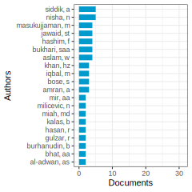
Articles: Regulatory guidance from the Central Bank of Bangladesh positively influences green banking disclosure in Bangladeshi commercial banks, alongside corporate governance mechanisms, with implications for policymakers. (Bose et al. 2018) degree: 54 citations: 88
The study explores the impact of corporate social responsibility (CSR) on green consumer loyalty in the banking industry of Pakistan, finding that CSR enhances consumer loyalty, with co-creation partially mediating this relationship, and green banking initiatives strengthening it further. (HD. Sun et al. 2020) degree: 32 citations: 82
Mobile banking in developing economies, particularly in India, presents an opportunity for financial inclusion by adopting a customer-centric approach, emphasizing the importance of involving end-users to design a sustainable joint bank-telecom led model preferred by the urban poor for its security, accessibility, and efficiency. (V. Mishra and Bisht 2013) degree: 1 citations: 86
This study examines the impact of green banking practices on the environmental performance of banks in India, highlighting the significant positive effects of green financing and operational features while suggesting limited direct influence from employee-related practices, policies, and customer engagement, with implications for advancing environmental sustainability in the banking sector. (Gulzar et al. 2024) degree: 22 citations: 2
This study analyzes the impact of green banking disclosure on firms’ sustainable growth, finding a negative effect indicating that resource allocation for green banking disclosures may hinder growth, with firm size and age not significantly influencing this relationship, except for state-owned banks where firm age strengthens it. (Firmansyah and Kartiko 2024) degree: 29 citations: 0
Green banking adoption in Pakistan is examined using the UTAUT model augmented with green consumption values, environmental concerns, and collectivist culture, finding that facilitating conditions and performance expectancy are key drivers, with little influence from collectivist culture. (Majeed and Rasheed 2024) degree: 21 citations: 0
This study explores the impact of green finance dimensions on the sustainability performance of financial institutions in Bangladesh, emphasizing the significant contribution of private commercial banks to green financing and the positive relationship between green finance dimensions and the economic, social, and environmental aspects of Sustainable Development Goals. (Zheng et al. 2021) degree: 130 citations: 59
This study examines how green banking activities impact green financing and the environmental performance of private commercial banks in Bangladesh, highlighting the mediating role of green financing. It found a positive relationship between green banking activities, green financing sources, and banks’ environmental performance, as well as identified challenges and benefits of green banking development in Bangladesh. (X. Zhang et al. 2022) degree: 57 citations: 40
Cluster 13-99—:
Documents: 323; Ave. Year: 2018.2; Ave. Citations: 19.1
Based on the texts provided, the common topic appears to be “Sustainable Banking and Green Finance Practices”.
Here are the key steps I followed:
Step 1: Understand the main topic of each text - The texts discuss topics like environmental risk management in banks, sustainability performance of banks, green finance and fintech adoption, impact of green tax/financing on corporate social responsibility (CSR), environmental/social/governance (ESG) disclosure in sustainability reports of banks, environmental practices in small/medium enterprises (SMEs), cost efficiency of banks, and trade credit as substitute for bank lending.
Step 2: Find common keywords across texts relevant to nature finance and nature capital - Common keywords include environmental risks, sustainability, green finance, green credit policy, sustainable finance, fintech adoption, green tax, corporate social responsibility (CSR), ESG disclosure, environmental practices, banking reform.
Step 3: Summarize the texts in a single paragraph The texts collectively examine how banks and financial institutions are integrating environmental, social and governance (ESG) factors into their operations, lending practices, and risk management frameworks. This includes adopting green finance initiatives, sustainable banking policies, disclosing ESG performance, and assessing environmental credit risks. The role of regulations, fintech adoption, and their impact on financial performance and CSR are also discussed.
Step 4: Give a name for the common topic Based on the summary, a suitable name for the common topic would be “Sustainable Banking and Green Finance Practices”.
Articles: Canadian banks excel in integrating environmental risks into corporate lending, surpassing global peers by systematically assessing environmental risks for credits, loans, and mortgages, thereby showcasing proactive environmental examination practices and emphasizing the necessity for enhanced accountancy-related reporting on environmental risk management in financial institutions to evaluate integration costs and benefits. (Weber 2012) degree: 59 citations: 129
This study examines the relationship between sustainability performance and financial indicators of Chinese banks, finding a positive correlation and a bi-directional causality between the two, potentially influenced by the Chinese Green Credit Policy, suggesting that investing in corporate sustainability can enhance financial success and support greener economic practices. (Weber 2017) degree: 71 citations: 125
This systematic review analyzes sustainable finance, focusing on sub-themes like climate finance and sustainable banking, revealing a growing interest in academia and industry towards financing for sustainability. (Jayaram and Singh 2020) degree: 64 citations: 6
This study explores the impact of green finance on Fintech adoption and banking sustainability in the Croatian banking industry, highlighting the mediating role of digital awareness and emphasizing the importance of integrating green finance principles and enhancing digital awareness for sustainable banking practices. (Serdarusic, Pancic, and Zavisic 2024) degree: 18 citations: 0
This study examines how green financing and green tax influence corporate social responsibility (CSR) through various dimensions, finding positive and significant impacts on CSR through customer, employee, and community aspects. The research utilizes PLS-SEM to analyze the complex relationships, providing strategic insights for businesses and policymakers to promote environmentally responsible practices. (Deb, Rahman, and Haseeb 2024) degree: 27 citations: 0
This study assesses the level of environmental, social, and governance (ESG) disclosure in sustainability reports within the Indian banking sector, highlighting the predominance of environmental indicators over social and governance aspects, and showcasing the superior ESG disclosure performance of private banks compared to public ones. (P. Mishra and Sant 2024) degree: 19 citations: 0
This study explores how stakeholder influence impacts environmental awareness and actions in SMEs, finding that legislation raises environmental awareness and drives operational changes, yet businesses often lack awareness of cost-saving benefits from eco-friendly practices, despite demonstrating commitments through voluntary contributions to environmental organizations. (Gadenne, Kennedy, and McKeiver 2009) degree: 34 citations: 499
The study on the cost efficiency of banks in transition in post-communist countries reveals that banking systems with higher foreign-owned bank assets have lower costs, highlighting a non-linear relationship between banking reform progress and cost efficiency, where early reform stages lower costs, but costs increase in advanced stages, with privatised banks with majority foreign ownership being the most efficient. (Fries and Taci 2005) degree: 12 citations: 428
The study examines how small and large firms adjust their loan growth during monetary contractions, finding that small firms increase trade credit as an alternative to bank loans, supporting the bank lending channel theory, while large firms also increase trade credit due to financial reasons, revealing broader credit constraints than previously assumed. (Nilsen 2002) degree: 8 citations: 333
Cluster 14-0—:
Documents: 280; Ave. Year: 2019.9; Ave. Citations: 21
The main topic of the given texts is financial resilience and its importance across different contexts.
Common keywords related to nature finance and nature capital: - Financial literacy - Savings and emergency funds - Income sources (wages, self-employment, agriculture) - Access to financial services - Coping with financial shocks and adversity - Adaptation and resilience to economic disruptions
Summary: The texts discuss the concept of financial resilience, which refers to the ability of individuals, households, and communities to withstand and recover from financial shocks or adverse economic events. Financial resilience is influenced by various factors such as financial literacy, access to financial services, income sources, savings, and emergency funds. The texts highlight the importance of financial resilience in different contexts, including developing countries, urban areas, and specific sectors like tourism and the gig economy. Financial resilience is crucial for mitigating the impacts of economic crises, natural disasters, and other shocks, and it plays a role in poverty reduction, gender equality, and overall well-being. The texts emphasize the need for policies and programs that promote financial literacy, social protection, and access to financial resources to enhance the financial resilience of vulnerable populations.
Proposed topic name: “Enhancing Financial Resilience for Sustainable Livelihoods and Nature-Based Economies”
Articles: Globally, financial literacy is lacking, with only one-third of adults understanding key financial concepts, leading to increased risks in consumer and financial markets, especially among women, the poor, and the less educated, necessitating policies to mitigate risks and promote savings. (Klapper and Lusardi 2020) degree: 18 citations: 146
This study explored financial resilience in African countries during the COVID-19 pandemic, identifying two profiles of financial resilience that influenced the duration of social control policies, highlighting the importance of social protection programs for population well-being in the face of crises. (Okumu et al. 2024) degree: 6 citations: 2
This article examines how local governments in Austria, England, and Italy develop organizational capacities to respond to financial shocks, focusing on patterns of financial resilience through a multiple-case analysis of 12 European local governments. (Barbera et al. 2017) degree: 22 citations: 74
Stringency measures during the COVID-19 pandemic have a negative impact on the performance of tourism and hospitality firms globally, with larger, established firms and those with high sustainable growth or low financial constraints showing greater resilience, emphasizing the importance of tailored government support for businesses during crises. (Siddique et al. 2024) degree: 4 citations: 0
Malaysian gig workers exhibit low financial resilience due to factors such as lack of social protection and insurance, with financial literacy, income level, and age being key determinants, highlighting the need for targeted support programs and regulatory improvements in the gig economy. (Daud et al. 2024) degree: 7 citations: 0
This paper advocates for a comprehensive approach to improve financial wellbeing by focusing on individuals’ financial resilience, defined as their ability to bounce back from adverse financial events, and proposes a methodology for measuring it using survey data from Australia, revealing significant levels of financial vulnerability among adults. (Salignac et al. 2019) degree: 38 citations: 67
This article presents a framework for urban climate resilience, emphasizing the importance of climate adaptation in Asian cities and providing a practical approach for planning practitioners by integrating theoretical and empirical knowledge into operational strategies demonstrated in resilience planning activities across Asia. (Tyler and Moench 2012) degree: 9 citations: 434
Access to the Kenyan mobile money system M-PESA has had significant poverty reduction impacts, particularly benefiting female-headed households by increasing financial resilience, saving, and facilitating a shift from agriculture to business, ultimately lifting 2% of Kenyan households out of poverty. (Suri and Jack 2016) degree: 8 citations: 417
Confident entrepreneurs, drawing on cognitive and emotional resilience, are more likely to succeed in subsequent ventures due to their overconfidence in capabilities persisting and pervading among them. (Hayward et al. 2010) degree: 2 citations: 288
Cluster 15-0—:
Documents: 224; Ave. Year: 2016.9; Ave. Citations: 38.1
The main topic of this cluster is financially sustainable management of water and wastewater infrastructure systems using system dynamics modeling.
Key points:
The articles discuss the need for water utilities to achieve full cost recovery and financial self-sustainability for providing water and wastewater services, driven by new regulations.
They propose using system dynamics modeling to capture the complex interconnections, feedbacks and dynamics involved in managing water/wastewater networks from a financial sustainability perspective.
Several articles develop novel causal loop diagrams and system dynamics models for water distribution networks, wastewater collection networks, and integrated urban solid waste management systems.
These models aim to help utilities evaluate different financing strategies, management policies, and their impacts on financial indicators like user fees, affordability, revenue collection etc.
The models incorporate physical infrastructure characteristics (e.g. pipe deterioration, leaks), financial aspects (cash reserves, borrowing), and consumer behavior.
The common theme is using system dynamics as a decision support tool for achieving financially sustainable management of municipal water/wastewater/solid waste systems in an integrated manner.
The overarching topic tying these articles together is “System Dynamics Modeling for Financially Sustainable Urban Water/Wastewater Infrastructure Management.”
Articles: This study introduces a novel System Dynamics approach to assist water utilities in achieving financial self-sustainability by developing a demonstration model for water and wastewater network management, highlighting the importance of proactive rehabilitation strategies to avoid substantial user fee increases for financial sustainability. (Rehan et al. 2011) degree: 23 citations: 102
This research focused on identifying factors influencing financial efficiency and receivable collection in the water sector, highlighting the positive impact of prepaid meters, water continuity, dunning actions, tariff compliance, and varied payment methods on receivables collection, while noting their negative effect on financial efficiency, which could enhance water providers’ financial position and performance. (Murrar et al. 2024) degree: 3 citations: 0
This article explores the intersection of capital investment in housing within the context of the Capitalocene, emphasizing the importance of environmental education and sustainable living principles, particularly focusing on the Australian curriculum and innovative approaches like 3D printing for affordable and eco-friendly housing solutions. (Cole and Baghi 2024) degree: 2 citations: 0
This study aims to identify barriers affecting the financial sustainability of Integrated Management Systems of Urban Solid Waste (IMUSW) through a systematic analysis of 48 articles, highlighting research gaps and providing valuable insights for planning and implementing IMUSW systems in cities. (Brumatti, Chaves, and Siman 2024) degree: 6 citations: 0
This paper presents a novel system dynamics model for financially sustainable management of urban water distribution networks, incorporating unique characteristics and feedback loops for self-sustaining networks, with a focus on the watermains network, consumer, and finance sectors, offering policy levers to evaluate financing strategies’ impact on sustainability and affordability for households. (Rehan et al. 2013) degree: 20 citations: 64
This review highlights the importance of life cycle assessment (LCA) in the construction industry for achieving sustainability by optimizing social, economic, and environmental aspects from raw material extraction to waste disposal, emphasizing the need for stakeholders to understand and apply LCA to improve environmental processes and services in building and construction. (Ortiz, Castells, and Sonnemann 2009) degree: 11 citations: 885
The paper discusses the growing number of tools and approaches for sustainability, emphasizing their complementary nature when used within a systemic context of sustainability, showcasing how they can be synergistically applied for strategic sustainable development by mapping essential elements and their interrelationships. (Rob‘ert et al. 2002) degree: 8 citations: 446
This paper conducts a comparative analysis of solid waste management in 20 cities worldwide through the integrated and sustainable waste management (ISWM) approach, emphasizing the importance of data, governance, and leveraging existing city strengths, such as the informal sector’s significant role in waste management cost savings and recycling rates. (Wilson et al. 2012) degree: 17 citations: 286
A novel system dynamics model incorporating causal loop diagrams is developed to support financially sustainable management of urban wastewater collection infrastructure, addressing complex interactions among physical, financial, and social sectors and providing a quantitative simulation for decision-making on financing and rehabilitation strategies in the system. (Rehan et al. 2014) degree: 18 citations: 47
Cluster 16-0—:
Documents: 138; Ave. Year: 2013.8; Ave. Citations: 26.2
Based on the texts provided, the common topic appears to be “The Role of Investment Climate and Foreign Direct Investment (FDI) for Sustainable Development in Developing Countries”.
Here are the key points that support this topic:
Several texts discuss the importance of a favorable investment climate (infrastructure, financing, institutions, etc.) in attracting foreign direct investment to developing countries.
There is an analysis of how constraints related to investment climate hamper FDI inflows, especially in African and South Asian countries.
The relationship between FDI and sustainability (economic, environmental and social pillars) is explored, particularly in sub-Saharan African countries.
The impact of enterprise agglomeration and FDI on economic growth in Northeast China is examined, highlighting the need for sustainable development policies.
The role of host country reforms (taxes, tariffs, capital controls, contract enforcement, etc.) in influencing FDI inflows to less developed countries is investigated.
The future of small farms and the importance of institutional innovations and a favorable rural investment climate for agricultural development in developing countries is discussed.
In summary, the common theme revolves around understanding how improving the investment climate through policies and reforms can attract more FDI, which in turn can drive sustainable economic growth and development in developing nations, especially in the agricultural and rural sectors.

Articles: The workshop in Wye, United Kingdom in 2005 discussed the feasibility and importance of small farm development for poverty reduction and agricultural growth, especially in the context of evolving supply chains and demanding buyers, emphasizing the need for tailored institutional innovations and measures to stimulate the rural nonfarm economy as key for the future of smallholders. (Wiggins, Kirsten, and Llamb’ı 2010) degree: 2 citations: 214
The study examines how the investment climate impacts firm performance in developing economies, highlighting the significance of nature finance and nature capital in shaping economic outcomes. (Dollar, Hallward-Driemeier, and Mengistae 2005) degree: 48 citations: 169
This study, analyzing firm-level data from 77 developing countries, reveals that constraints in investment climate, such as physical infrastructure, financing, and institutional issues, negatively impact Foreign Direct Investment (FDI), with exporter foreign firms facing more hurdles than those supplying the domestic market. (Kinda 2010) degree: 19 citations: 129
This study examines the relationship between foreign direct investment (FDI) and sustainability in sub-Saharan African countries, finding a positive correlation between environmental and economic pillars of the triple bottom line, but no significant influence of FDI on sustainability indicators, suggesting potential implications for foreign investment regulations in the region. (Martins et al. 2023) degree: 5 citations: 3
The research investigates enterprise spatial agglomeration in Northeast China and its impact on urban productivity, finding a significant negative effect on economic efficiency, particularly in comparison to other regions in the country, emphasizing the need for measures to address this issue for sustainable development. (MZ. Zhang et al. 2023) degree: 2 citations: 1
This paper examines the relationship between investment climate, international integration, and infrastructure bottlenecks using firm-level surveys across several countries, highlighting the impact on firms’ export and foreign investment probabilities, with China generally experiencing lower obstacles compared to South Asian and Latin American countries. (Dollar, Hallward-Driemeier, and Mengistae 2006) degree: 22 citations: 76
This study examines the impact of investment climate on foreign direct investment (FDI) in Africa from 2000 to 2018, finding that a favorable investment climate is crucial for FDI in resource-rich countries and those with developed financial markets, highlighting the need for policies to strengthen the investment climate in less developed and landlocked countries to attract FDI effectively. (Beri and Nubong 2023) degree: 7 citations: 0
This study analyzes the impact of host country policies on foreign direct investment (FDI) flows using eclectic theory, finding that policy reforms can significantly influence FDI inflows through location advantages, highlighting the importance of a comprehensive approach to creating a favorable investment climate. (Gastanaga, Nugent, and Pashamova 1998) degree: 4 citations: 296
In the context of today’s globalized world and changing factors such as the rise of supermarkets and environmental challenges, smallholder development remains crucial for many low-income countries, necessitating a shift in policy priorities towards addressing market failures through institutional innovation in agriculture. (Hazell et al. 2010) degree: 2 citations: 281
Cluster 2-1—:
Documents: 349; Ave. Year: 2015.8; Ave. Citations: 104.5
Based on the texts provided, the main common topic appears to be the economic valuation of ecosystem services and natural capital.
Step 1: Understanding the main topic of each text - The first text discusses payment for ecosystem services (PES) schemes, particularly in the context of Indigenous communities in Australia. - The second text presents a global synthesis of economic values for ecosystem services across different biomes. - The third text estimates the economic value of the remnant natural capital in the Magdalena-Cauca basin in Colombia. - The fourth and fifth texts provide global estimates of the economic value of ecosystem services and natural capital, and how these values have changed over time due to land use changes. - The sixth text discusses mapping the supply and demand of ecosystem services.
Step 2: Common keywords related to nature finance and natural capital - Ecosystem services - Economic valuation - Natural capital - Payment for ecosystem services (PES) - Biomes - Land use change
Step 3: Summary paragraph These texts collectively explore the concept of assigning economic values to the services provided by natural ecosystems, collectively known as ecosystem services or natural capital. They present global syntheses, case studies, and methodologies for quantifying and mapping the economic value of services like carbon sequestration, water regulation, and biodiversity conservation across different biomes and regions. Several texts highlight the importance of considering land use changes and their impact on the supply and value of ecosystem services. The texts also discuss mechanisms like payment for ecosystem services (PES) schemes as potential ways to incentivize the conservation of natural capital.
Step 4: Common topic name The common topic shared by these texts is “Economic Valuation of Ecosystem Services and Natural Capital.”
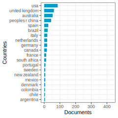
Articles: This paper explores the status and opportunities for Payment for Ecosystem Services (PES) arrangements in Australia, focusing on Indigenous perspectives and highlighting the importance of incorporating Indigenous values in nature-based solutions for achieving biodiversity and climate change outcomes. (Sangha et al. 2024) degree: 5 citations: 1
This paper provides a global synthesis of economic values for ecosystem services across 15 terrestrial and marine biomes, highlighting the need for targeted valuation research to improve certainty, comparability, and fill knowledge gaps in the valuation of nature finance and nature capital. (Brander et al. 2024) degree: 3 citations: 0
The Magdalena-Cauca basin, covering 24% of Colombian territory and home to 80% of the population, faces significant ecosystem loss and socio-environmental issues, with an estimated annual natural capital loss of 1.5 trillion Int.$2020, highlighting the critical importance of preserving its remaining natural capital worth 469 billion Int.$2020. (Ruiz-Agudelo and Guti’errez-Bonilla 2024) degree: 18 citations: 0
The economic value of the world’s ecosystem services and natural capital is estimated to range from US$16-54 trillion per year, surpassing the global gross national product of US$18 trillion per year, highlighting their critical role in supporting human welfare and the Earth’s life-support system. (Costanza et al. 1997) degree: 574 citations: 17381
The global value of ecosystem services increased significantly from $33 trillion/yr in 1995 to an estimated $125-145 trillion/yr in 2011, factoring in updated unit values and land use changes, highlighting the importance of valuing nature finance and capital for sustainable management. (Costanza et al. 2014) degree: 217 citations: 4032
Human activities affect ecosystems’ ability to provide goods and services, impacting society’s demand. Mapping ecosystem service supply and demand using indicators and data helps achieve sustainable use of natural capital, revealing human activities, ecosystem capacities, and service locations. Visualization through maps aids in understanding complex phenomena and guiding decision-making for sustainable resource management. (Burkhard et al. 2012) degree: 51 citations: 1482
Cluster 2-10—:
Documents: 129; Ave. Year: 2017.2; Ave. Citations: 107.2
The main topic of this cluster is assessing and financing nature-based solutions for water security and freshwater biodiversity conservation.
The key points are:
Water security and freshwater biodiversity are under threat from multiple stressors like climate change, pollution, overexploitation, etc.
Nature-based solutions like watershed conservation, catchment restoration, environmental flows etc. can help address these threats.
Financing mechanisms like water funds, water tariffs, private investments etc. are being explored to fund these nature-based solutions.
There is a need for standardized frameworks to evaluate the effectiveness and impacts of such investments in securing water resources and conserving freshwater biodiversity.
Geospatial data and analysis can play a key role in environmental scoring for ESG ratings and assessing localized vs global impacts of economic activities.
The common theme tying these texts together is the financial, policy and scientific approaches being discussed to leverage nature-based solutions and natural capital for ensuring long-term water security while also protecting freshwater ecosystems and biodiversity.
Articles: The article discusses Pakistan’s efforts towards achieving sustainable water management under the UN Sustainable Development Goal 6, emphasizing the importance of addressing challenges such as population growth, climate change, and inadequate water governance through policy recommendations, community engagement, and efficient water pricing mechanisms. (Mujtaba et al. 2024) degree: 1 citations: 4
The study assesses 16 water funds within the Latin American Water Funds Partnership, highlighting diverse investment approaches tailored to specific environmental, social, and political contexts, with a focus on securing water quality, quantity, and co-benefits for local livelihoods and biodiversity while facing challenges in monitoring and funding. (Bremer et al. 2016) degree: 13 citations: 89
Households in South African metropolitan municipalities show willingness to pay more for water, with potential to fund catchment restoration through water tariffs, contingent on institutional trust and municipal satisfaction. (Du Plessis, Turpie, and Letley 2024) degree: 5 citations: 0
This paper discusses the importance of incorporating geospatial data into ESG assessments to address the divergence in ESG ratings, proposing a framework that evaluates environmental impacts at both local and global levels, with potential for enhancing accuracy and promoting informed decision-making in financial institutions. (Rossi, Byrne, and Christiaen 2024) degree: 4 citations: 0
Nearly 80% of the global population faces high levels of threat to water security, with disparities in investment in water technology between wealthy and less wealthy nations posing risks to both human water security and river biodiversity, highlighting the need for preventative measures to address threats at their source. (Vörösmarty et al. 2010) degree: 47 citations: 5125
The biodiversity crisis in freshwater ecosystems has worsened since 2006, with emerging threats such as changing climates, e-commerce invasions, and microplastic pollution, necessitating novel conservation strategies to address the decline of animal species and ecosystem-level impacts. (Reid et al. 2019) degree: 13 citations: 1636
A call for empirical evaluation of investments in biodiversity conservation to ensure effective use of nature capital in financial decisions. (Ferraro and Pattanayak 2006) degree: 30 citations: 904
Cluster 2-11—:
Documents: 113; Ave. Year: 2015.4; Ave. Citations: 37.6
Based on the texts provided, the common topic appears to be “Natural Capital Assessment and Valuation for Sustainable Development”.
Here are the key steps I followed:
Step 1: Understand the main topic of each text - The texts cover topics like assessing the value of natural capital stocks (e.g. marine ecosystems, rangelands), ecosystem services, environmental accounting models, and the importance of maintaining natural capital for sustainable development.
Step 2: Find common keywords across texts relevant to nature finance and nature capital - Common keywords include natural capital, ecosystem services, environmental accounting, emergy analysis, sustainability, marine ecosystems, rangelands.
Step 3: Summarize the texts in a single paragraph The texts discuss various methods and case studies for assessing and valuing the stocks of natural capital (like marine habitats, rangelands) and the flows of ecosystem services they provide. Environmental accounting approaches like emergy analysis are used to quantify the biophysical and monetary value of natural capital. The key premise is that maintaining natural capital stocks is crucial for sustainable development and human well-being given the vital services ecosystems provide.
Step 4: Give a name for the common topic Natural Capital Assessment and Valuation for Sustainable Development
Articles: This overview delves into the geography of the Monte Desert biome in Argentina, examining its boundaries, ecotones, and socio-economic characteristics, with a focus on a case study in Mendoza, analyzing ecological-economic issues, sustainable investment policies, and comparing it with other arid biomes in South America and North America, emphasizing the need for further research at a mesoscale level to address gaps in knowledge and enhance understanding of ecosystem differentiation and socio-ecological dynamics. (Abraham et al. 2009) degree: 2 citations: 161
This paper provides a review of definitions, classifications, and approaches for assessing and valuing natural capital and ecosystem services, proposing a conceptual framework that integrates environmental accounting to investigate sustained costs, received benefits, and generated impacts, emphasizing the importance of an ecological-economic systems perspective in understanding ecosystem benefits and costs. (Häyhä and Franzese 2014) degree: 33 citations: 143
Assessing the natural capital value of Posidonia oceanica meadows in Italian seas through an Environmental Accounting Model, integrated with a Habitat Suitability Model, revealed spatially explicit information crucial for ecosystem management and policy-making. (Catucci et al. 2023) degree: 20 citations: 4
The study assesses natural capital and environmental flows in the Ligurian Sea, a Mediterranean biodiversity hotspot, using emergy analysis to quantify values in both biophysical (solar emergy joules) and monetary (emergy euro) terms, providing insights for stakeholders and policymakers to maintain and manage ecosystem services effectively. Total natural capital value is 2.11 billion emeuro, with greater values in protected areas, emphasizing the importance of conservation measures. (Bordoni et al. 2023) degree: 16 citations: 1
Human activities impact natural ecosystems, leading to the emergence of natural capital and ecosystem services concepts; a biophysical and trophodynamic model was developed to assess the value of natural capital in marine protected areas, converting the biophysical value into monetary units for better communication and understanding in socio-economic contexts. (Vassallo et al. 2017) degree: 43 citations: 70
This study conducted the first high-resolution marine natural capital mapping in the coastal waters of mainland China, estimating China’s marine natural capital at 3.29E+24 sej/yr, with an annual economic value of approximately 8817.42 billion yuan/yr, revealing regional disparities in natural capital values and emphasizing the importance of sustainable marine resource exploitation. (YW. Zhang et al. 2024) degree: 8 citations: 0
Maintaining total natural capital stock at or above current levels is crucial for sustainability, with the “constancy of total natural capital” rule serving as a prudent minimum condition, emphasizing the importance of quantifying ecosystem services, differentiating growth from development, revising economic well-being measures, and implementing policies to ensure sustainable development amidst technological optimists and skeptics. (COSTANZA and DALY 1992) degree: 216 citations: 1011
Humanity’s impact on the biosphere necessitates a shift towards reconnecting human development to the capacity of nature and essential ecosystem services, highlighting the need for new governance approaches and a global sustainability agenda. (Folke et al. 2011) degree: 19 citations: 439
Cluster 2-12—:
Documents: 106; Ave. Year: 2013.5; Ave. Citations: 35.2
Based on the texts provided, the common topic appears to be “Restoring and Investing in Natural Capital for Sustainability”.
The key points are:
Many ecosystems have been degraded by human activities, and ecological restoration offers an opportunity to recover ecosystem services and natural capital benefits.
There are various motivations for restoring ecosystems, including technocratic, biotic, heuristic, idealistic, and pragmatic rationales. The pragmatic rationale of recovering natural services that economies depend on is gaining importance.
Reforestation projects aimed at carbon sequestration should also prioritize biodiversity goals by planting diverse native species mixtures.
A co-crediting system is proposed that provides tradable credits for both carbon sequestration and biodiversity conservation based on soil and environmental DNA monitoring.
Economic models suggest investing in developing energy/mineral resources, non-energy resources, and protecting natural resources in balanced ways for sustainable growth.
Restoring natural capital through sustainable land management and reversing degradation is a key strategy, along with sustainable technologies and revised behaviors, for transitioning to sustainability.
The Land Degradation Neutrality framework provides a scientific approach to planning, implementing and monitoring the maintenance or enhancement of land-based natural capital.
In summary, the articles highlight the importance of restoring degraded ecosystems and investing in natural capital through various policy mechanisms and economic strategies to achieve sustainability goals.
Articles: A meta-analysis of 1,582 papers from leading scientific journals between 2000-2008 reveals a lack of explicit recognition in restoration projects of the societal and policy benefits related to natural capital, underscoring a gap in demonstrating the value of ecological restoration as a beneficial investment for society. (Aronson, Blignaut, Milton, et al. 2010) degree: 24 citations: 216
Ecosystem restoration is driven by five rationales - technocratic, biotic, heuristic, idealistic, and pragmatic - with the pragmatic rationale, focused on the economic value of nature capital, emerging as crucial for recognizing the full benefits of restoration efforts. (Clewell and Aronson 2006) degree: 11 citations: 157
Biodiverse reforestation is crucial for climate change mitigation and biodiversity conservation, yet diverse stakeholders often lack a clear understanding of biodiversity and struggle to set explicit restoration goals, highlighting the importance of integrating biodiversity objectives into reforestation projects for meaningful outcomes and incentive payments. (Andres et al. 2023) degree: 8 citations: 6
This article proposes a co-crediting system for carbon and biodiversity through a scheme that offers tradable credits for combined aboveground and soil carbon and biodiversity, aiming to enhance the quality of carbon projects and provide funding for the Kunming-Montreal Global Biodiversity Framework, promoting socially and environmentally sustainable land stewardship. (Tedersoo et al. 2024) degree: 2 citations: 1
This study focuses on identifying effective natural capital investment strategies for sustained economic growth, categorizing investments into energy and mineral resources, non-energy and mineral resources, and natural resource protection, and integrating these strategies into economic growth models, highlighting the importance of aligning growth rates and optimizing investment balance for stable economic growth. (LP. Wu et al. 2024) degree: 10 citations: 0
Investing in the restoration of natural capital is a crucial yet underexplored strategy for transitioning towards sustainability, with evidence suggesting its ecological and economic benefits, including high benefit-cost ratios across various ecosystems, offering a promising alternative to current unsustainable practices. (Blignaut, Aronson, and De Groot 2014) degree: 28 citations: 55
The Scientific Conceptual Framework for Land Degradation Neutrality aims to maintain or enhance land-based natural capital and ecosystem services through a scientific approach developed by the UNCCD, focusing on processes like sustainable land management and restoration to achieve no net loss of natural capital, with monitoring based on land cover, productivity, and carbon stocks. (Cowie et al. 2018) degree: 9 citations: 304
The urgency of moving towards sustainable use of Earth’s limited natural capital is hindered by three major divides - ideological, economic development, and information - which hinder effective responses to environmental stress, with the potential for bridging these gaps lying in the restoration of natural capital (RNC). (Aronson, Blignaut, De Groot, et al. 2010) degree: 21 citations: 24
Cluster 2-13—:
Documents: 105; Ave. Year: 2019.8; Ave. Citations: 32.2
Based on the texts provided, the common topic appears to be “Natural Capital and Ecosystem Services Assessment”.
The key points are:
The texts discuss the importance of assessing and monitoring natural capital assets (geology, soils, air, water, living organisms) and the ecosystem services they provide to human well-being.
Several approaches and frameworks are proposed for assessing the status, trends and risks to natural capital assets and the benefits/services they provide, such as risk registers, indicator frameworks, and models like InVEST.
The assessments aim to inform decision-making, policies, and management strategies related to natural resources, urban planning, biodiversity conservation, and sustainable development.
The challenges highlighted include data gaps, limited understanding of asset-benefit relationships, accounting for cumulative pressures, and adapting assessment methods to marine and urban environments.
The overall goal is to integrate the value of natural capital and ecosystem services into decision-making processes to achieve sustainability and resilience.
In summary, the common topic revolves around developing and applying methodologies to assess, monitor, and manage natural capital assets and the ecosystem services they provide, in order to support informed decision-making and sustainable use of natural resources.
Articles: This study examines the impact of neighborhood characteristics, including green space, on socioeconomic health inequalities in mental well-being among urban residents. (Mitchell et al. 2015) degree: 4 citations: 179
A risk register for natural capital assets in the UK, based on asset-benefit relationships for various benefits across different habitat types, highlights certain assets at high risk, such as those in freshwater, mountain, moors, and heathland habitats, emphasizing the importance of directed data gathering to enhance monitoring and management efforts. (Mace et al. 2015) degree: 57 citations: 94
This study examines ecosystem services provided by marine natural capital in the Northern Baltic Sea, identifying service linkages for habitats and mobile species, highlighting the importance of marine habitats for regulating services and mobile species for provisioning and cultural services, providing valuable insights for ecosystem accounting and marine spatial planning in the region. (Jernberg et al. 2024) degree: 3 citations: 1
The study in Adama City, Ethiopia, utilized the InVEST-UFRM model to quantify flood risk and assess mitigation strategies, emphasizing the model’s effectiveness in analyzing urban watersheds and highlighting the importance of integrating natural capital assessment tools in urban planning for sustainable development and flood resilience. (Leta and Adugna 2024) degree: 4 citations: 0
Failure to include the ‘value’ of natural capital in decision-making has led to degradation of ecosystem services, particularly in remote ocean regions like the South East Atlantic, where uncertainty in quantifying the relationship between natural assets and societal benefits hinders effective resource management and governance, emphasizing the need for a systems-based framework to protect marine natural capital and its benefits for society. (Niner et al. 2024) degree: 5 citations: 0
An indicator framework for ecosystem services under the EU Biodiversity Strategy 2020 ensures consistent approaches for assessing ecosystem services, with potential for an EU-wide assessment pending creative data integration and resolution of existing data gaps. (Maes et al. 2016) degree: 28 citations: 402
The EU is prioritizing Nature-Based Solutions to address social, economic, and environmental challenges, aiming to optimize synergies between nature, society, and the economy through innovative approaches and large-scale demonstration projects to create a greener, more sustainable, and competitive economy. (Faivre et al. 2017) degree: 14 citations: 335
The application of natural capital approach to decision making for the marine environment faces challenges due to unfulfilled aspirations, lack of tested methods, and inadequacy of terrestrial-based methodologies for the dynamic marine ecosystem, highlighting the need for interdisciplinary, cross-sectoral efforts to develop marine-specific methodologies. (Hooper et al. 2019) degree: 23 citations: 32
Cluster 2-14—:
Documents: 104; Ave. Year: 2016.8; Ave. Citations: 52.7
Based on the texts provided, the common topic appears to be “Sustainable Intensification in Agriculture and its Impacts on Natural Capital”.
Step 1: Understanding the main topic of each text - The texts discuss various aspects of sustainable agricultural practices, their impacts on the environment and natural resources, and the concept of sustainable intensification in agriculture.
Step 2: Common keywords across the texts relevant to nature finance and natural capital - Sustainable agriculture, natural capital, ecological management, renewable resources, environmental goods and services, biodiversity, ecosystem services, sustainable intensification, agricultural productivity, natural resource management.
Step 3: Summary paragraph considering common keywords and themes The texts highlight the importance of sustainable agricultural practices that increase productivity while minimizing adverse environmental impacts and preserving natural capital. The concept of sustainable intensification is discussed, which aims to increase agricultural yields without converting additional non-agricultural land or depleting natural resources. The texts emphasize the need for ecological management, conservation of biodiversity, and efficient use of renewable resources in agricultural systems. They also discuss the potential benefits of sustainable intensification, such as improved food productivity, reduced pesticide use, and positive impacts on natural capital assets like soil, water, and biodiversity.
Step 4: Concluding with a name for the common topic “Sustainable Intensification in Agriculture and its Impacts on Natural Capital”

Articles: Human capital positively impacts farming efficiency by enhancing technical efficiency in food-crop production, as evidenced by a meta-analysis of 268 studies, highlighting the importance of farmer beliefs, institutional trust, and land accumulation. (Hoang-Khac et al. 2022) degree: 14 citations: 16
Urban green and blue infrastructure (GBI) in cities can mitigate the adverse effects of urban heat islands by providing cooling benefits, resulting in economic gains, as demonstrated in a study evaluating the economic value of hot-day cooling in eleven City Regions in Great Britain over a ten-year period, with London showing the highest economic benefit due to its exposure to hot days and strong economic contribution. (L. Jones et al. 2024) degree: 2 citations: 1
The paper explores the interplay between natural resource growth, green economy development, and energy efficiency to achieve sustainable economic growth in Asian countries, emphasizing the importance of integrating renewable energy sources, optimizing natural resource utilization, and implementing innovative financial instruments to address environmental degradation and climate change challenges. (BR. Liu and Pan 2024) degree: 3 citations: 0
Policies play a central role in governing the anthropogenic assets involved in the co-production of nature’s contributions to people (NCP) in forests, focusing mainly on material and regulating NCP through hierarchical and scientific-technical modes of governance across different levels, as revealed by a policy document analysis. (Isaac et al. 2024) degree: 2 citations: 0
Agricultural sustainability requires integrating biological and ecological processes, minimizing non-renewable inputs, and leveraging farmers’ knowledge and collective capacities to enhance natural, social, human, physical, and financial capital assets, ultimately leading to improved food productivity and environmental preservation. (Pretty 2008) degree: 22 citations: 1015
Sustainable intensification in agricultural systems aims to increase yields without harming the environment, emphasizing positive impacts on natural, social, and human capital, while addressing resource constraints and promoting transitions towards greener economies. (Pretty and Bharucha 2014) degree: 14 citations: 539
Sustainable intensification of agricultural systems is progressing globally through the redesign of farming practices, with a significant number of farms adopting various sustainable intensification sub-types on a substantial amount of agricultural land, indicating the potential for transformative change. (Pretty et al. 2018) degree: 7 citations: 382
Cluster 2-15—:
Documents: 77; Ave. Year: 2016.5; Ave. Citations: 33.7
The main topic of the given cluster is “Integrating Biodiversity and Ecosystem Services into Financial Decision-Making”.
Step 1: Understanding the main topic of each text - The first text discusses the challenges and principles for integrating biodiversity considerations into financial decision-making. - The second text examines the impact of marine pollution on business failure probability in a coastal area. - The third text reviews recent public and private sector efforts to address the biodiversity finance gap. - The fourth text introduces the choice experiment approach for environmental valuation. - The fifth text estimates the economic value of the world’s ecosystem services and natural capital. - The sixth text analyzes the increasing impacts of land use on biodiversity and carbon sequestration due to population and economic growth.
Step 2: Common keywords across texts relevant to nature finance and nature capital - Biodiversity, ecosystem services, financial decision-making, environmental valuation, natural capital, economic value, land use impacts, population growth, economic growth.
Step 3: Summarizing the texts in a single paragraph The texts highlight the importance of integrating biodiversity and ecosystem services considerations into financial decision-making processes. They discuss the challenges and principles for achieving this integration, such as setting regulations, evaluating local biodiversity risks, scaling up biodiversity finance, and involving financial decision-makers. The texts also explore methods for valuing environmental assets, estimating the economic value of ecosystem services, and analyzing the impacts of land use, population growth, and economic growth on biodiversity and carbon sequestration.
Step 4: Concluding with a common topic name The common topic shared by the articles is “Integrating Biodiversity and Ecosystem Services into Financial Decision-Making”.
Articles: The article addresses the challenges in integrating biodiversity into financial decision-making, highlighting the failure to address biodiversity risks and propose four principles to enhance nature-positive finance, emphasizing the importance of regulation, local risk evaluation, scaling biodiversity finance, and financial decision-makers’ leadership. (Nedopil 2023) degree: 14 citations: 5
This study examines the impact of chlorophyll a concentration in the Mar Menor coastal waters on the probability of business failure for firms in the area, revealing opposing geographical impacts and identifying economic sectors most affected by pollution, emphasizing the need for tailored environmental regulations to preserve coastal areas worldwide. (Mat’e-S’anchez-Val and Aparicio-Serrano 2023) degree: 6 citations: 4
The text reviews recent efforts in biodiversity and ecosystem services finance, emphasizing the need to address the significant finance gap through various public and private sector solutions, highlighting the importance of innovative finance mechanisms and future research priorities to achieve the goals outlined in the Kunming-Montreal Global Biodiversity Framework by 2030. (Seidl et al. 2024) degree: 15 citations: 0
This paper introduces the “choice experiment” approach for valuing environmental assets, such as forests and rivers, by estimating marginal values through pair-wise choices to determine the asset’s overall value, highlighting its advantages over other valuation methods and addressing unresolved design issues. (Hanley, Wright, and Adamowicz 1998) degree: 13 citations: 668
The ecosystem services and natural capital of the world, essential for Earth’s life-support system and human welfare, are estimated to have an economic value of approximately US$16-54 trillion per year, significantly surpassing the global gross national product of around US$18 trillion per year. (Costanza et al. 1998) degree: 18 citations: 409
Growing global population and economic expansion are increasing land-use impacts on biodiversity and carbon sequestration, with significant biodiversity losses in Central and Southern America, Africa, and Asia driven by international trade and consumption in other regions, highlighting the need for governments to promote sustainable economic activities to mitigate biodiversity impacts. (Marques et al. 2019) degree: 15 citations: 251
Cluster 2-16—:
Documents: 74; Ave. Year: 2013.7; Ave. Citations: 50.8
Based on the texts provided, the common topic appears to be “Natural Capital Accounting and Indicators for Environmental Sustainability”.
Step 1: Main topics of each text: - Corporate natural capital accounting and its purposes - Substitutability of natural capital and sustainability considerations
- Environmental sustainability in the context of age-friendly cities (less relevant) - Importance of environmental indicators for consumer food purchases - Accounting perspective on reformulating natural capital concept for ecological approach - Framework for indicators of sustainable development in industry
- Defining and measuring environmental sustainability - Review of achievements and gaps in sustainability indicators
Step 2: Common keywords across texts relevant to nature finance and natural capital: - Natural capital, natural capital accounting, environmental sustainability, sustainability indicators, sustainable development
Step 3: Summary paragraph: The texts discuss the concept of natural capital and the need for accounting frameworks and indicators to measure corporate and national performance in conserving natural resources and achieving environmental sustainability. Key points include the purposes of natural capital accounting, limitations of substituting natural capital with human-made capital, the role of accounting in reframing natural capital from an ecological perspective, proposed indicator frameworks for sustainable industry practices and national-level environmental assessments, and the achievements and gaps in developing comprehensive sustainability indicators.
Step 4: Common topic name: Natural Capital Accounting and Indicators for Environmental Sustainability
Articles: Corporate natural capital accounting is crucial for holding corporations accountable for their impact on natural resources, but current efforts are limited due to unclear purpose and inadequate institutional support, highlighting the need for dual-focused accounting systems to address both shareholder needs and conservation goals. (Barker 2019) degree: 15 citations: 17
Substitutability of natural capital by human-made capital is limited, with long-lasting negative impacts on natural capital and justice between generations; conservation efforts focus on retaining non-renewable resources and reducing negative impacts of substitutions, while ensuring the integrity of natural capital for future generations. (Reijnders 2021) degree: 15 citations: 5
Older individuals are increasingly prioritizing environmental sustainability due to financial constraints, highlighting the intersection of nature finance and capital in age-friendly urban environments. (Van Hoof 2024) degree: 2 citations: 4
This study examines how environmental indicators influence consumer purchasing decisions in the food industry, highlighting the significance of factors such as environmental management systems, pro-environmental investments, waste management, and water conservation in meeting consumer expectations for sustainability. (Paliwoda, Matuszak-Flejszman, and Ankiel 2024) degree: 1 citations: 0
This study proposes a new approach to understanding Natural Capital by integrating accounting theory, highlighting the need to shift from a capitalist economic perspective to an ecological one, and suggesting the extension of traditional accounting practices to align with ecological principles. (Rambaud 2024) degree: 9 citations: 0
This paper emphasizes the importance of addressing sustainability in industry by proposing a general framework with comprehensive indicators covering environmental, economic, and social aspects, aiming to guide decision-makers in adopting more sustainable practices and improving performance towards sustainable development goals. (Azapagic and Perdan 2000) degree: 13 citations: 359
The text discusses the importance of environmental sustainability, distinguishing between social, economic, and environmental sustainability, emphasizing the scarcity of natural capital and the need for intergenerational equity, with a focus on keeping wastes within assimilative capacities and harvesting renewable resources sustainably. (Goodland and Daly 1996) degree: 20 citations: 373
In a world facing climate change, economic instability, and resource limits, urgent need exists for improved indicators to measure progress towards sustainability both nationally and globally, including addressing dynamic systems, setting sustainability targets, and incorporating values-based indicators to guide the transition. (Dahl 2012) degree: 9 citations: 275
Cluster 2-2—:
Documents: 312; Ave. Year: 2017.6; Ave. Citations: 30.2
The main topic of this cluster is the assessment and measurement of natural capital and ecosystem services, and their importance for sustainable development and human well-being.
The key points are:
Natural capital refers to the stock of natural resources (geology, soils, air, water, living organisms) that provide ecosystem services benefiting humans.
Several studies highlight the need to account for natural capital and ecosystem service values in decision-making for sustainable development.
Frameworks and methodologies are proposed to measure and monitor changes in natural capital and ecosystem services over time at national and regional levels.
Case studies are presented applying these frameworks, e.g. in the Brazilian Pantanal, China’s national ecosystem assessment, and for select countries like the US, China, Brazil, India and Venezuela.
The impacts of climate change and human activities on natural capital and ecosystem service values are assessed, showing unequal distribution of losses across countries.
Maintaining and investing in natural capital is crucial for sustaining human well-being over time, especially for poorer nations more reliant on natural resources.
In summary, the common topic is “Measuring and Accounting for Natural Capital and Ecosystem Services for Sustainable Development”.
Articles: The study applied the natural capital indicator framework (NCIF) for the first time in Brazil’s Pantanal biome, evaluating industries like cattle ranching, soy agriculture, fishing, and nature-based tourism, revealing gaps in data on biome condition, economic value, human investment, emissions, and ecosystem services. Leveraging existing initiatives can enhance natural capital reporting for informed decision-making in the region. (Fairbrass et al. 2024) degree: 9 citations: 0
Climate change-induced shifts in terrestrial vegetation cover will lead to a 9.2% reduction in global non-market ecosystem benefits and a -1.3% change in GDP by 2100, disproportionately affecting lower-income countries that rely more on natural capital. (Bastien-Olvera et al. 2024) degree: 7 citations: 0
The study explores the genuine savings hypothesis by analyzing comprehensive measures of technical change in Ireland. (McGrath, Hynes, and Mchale 2024) degree: 12 citations: 0
China’s significant investments in protecting and restoring natural capital from 2000 to 2010 led to overall improvements in ecosystem services, with the exception of habitat provision, highlighting the impact of national conservation policies on enhancing ecosystem services. (Ouyang et al. 2016) degree: 45 citations: 1264
Incorporating natural capital and ecosystem services into decision-making is crucial for addressing the 21st century challenge of sustainable development, despite progress in awareness and scientific understanding, successful implementation remains a nascent stage due to the lack of fundamental changes in decision-making processes. (Guerry et al. 2015) degree: 129 citations: 735
This paper explores the concept of excessive consumption through intertemporal utility-maximization and sustainability criteria, finding that some regions are failing to meet sustainability standards due to the depletion of natural capital. (K. Arrow et al. 2004) degree: 78 citations: 493
A theoretical framework focusing on wealth, including natural capital, technological change, and health improvements, is applied to assess sustainability and economic growth in five countries, revealing the significant impact of these factors on achieving long-term wellbeing. (KJ. Arrow et al. 2012) degree: 106 citations: 379
Cluster 2-3—:
Documents: 231; Ave. Year: 2017.1; Ave. Citations: 50.8
Based on the texts provided, the common topic appears to be “Measuring and Analyzing Natural Capital Using the Ecological Footprint Concept”.
The key points are:
Several studies utilize the ecological footprint model, which measures human demand on natural capital/biocapacity, to assess sustainability at different scales (regional, national, global).
The ecological footprint quantifies the biologically productive areas required to support human consumption and absorb waste. It allows comparing human demand against nature’s supply.
The studies apply the ecological footprint to measure natural capital use, identify ecological deficits/reserves, analyze driving factors, and evaluate policies aimed at sustainable development.
The ecological footprint is proposed as a biophysical accounting tool to directly measure stocks and flows of natural capital, overcoming limitations of monetary valuations.
The concept of critical natural capital, which must be maintained for environmental sustainability, is discussed along with a framework to identify it.
Barriers to investing in natural capital replenishment, such as economic rationality and market failures, are examined through the ecological footprint lens.
In summary, the common theme is using the ecological footprint methodology to comprehensively measure, analyze and manage natural capital towards achieving sustainable development goals and wellbeing.
Articles: This study measured and decomposed natural capital use in Xinjiang from 2005 to 2020, revealing an increasing per capita ecological deficit driven by energy consumption, regional disparities in ecological carrying capacity, and the importance of factors like industrial efficiency and environmental protection in shaping resource utilization, offering insights for promoting sustainable development in the region. (Jin et al. 2024) degree: 10 citations: 0
This study conducted a multi-scale analysis of sustainability using the Ecological Footprint model in the Yangtze River Delta region, revealing an unsustainable trend from 2014 to 2021, with Anhui Province demonstrating the highest sustainability and Shanghai City the lowest, and identified primary industry output value and population as key factors affecting sustainability. (ZL. Wang et al. 2024) degree: 18 citations: 0
This paper examines the impact of sustainable development planning on natural capital in resource-based cities in China, finding that the Sustainable Development Plan for Resource-based Cities (SDPRC) significantly increases the Normalized Difference Vegetation Index (NDVI), especially in counties with better economic performance and larger scale, emphasizing the importance of policies promoting sustainable development to enhance natural capital. (HS. Ai and Tan 2024) degree: 14 citations: 0
The recognition heuristic is an adaptive strategy that leverages the capacity for recognition to make inferences from patterns of missing knowledge, demonstrating a less-is-more effect in specific conditions. (Goldstein and Gigerenzer 2002) degree: 2 citations: 929
Sustainability relies on maintaining natural capital, but the ability to measure progress has been limited, leading to the need for assessment frameworks. This study introduces a national and global natural capital accounting framework, exemplified by Italy, tracking energy and resource throughput in biologically productive areas, allowing for comparisons of human consumption and natural capital production worldwide. (Wackernagel et al. 1999) degree: 84 citations: 1385
This paper introduces a methodology for identifying critical natural capital (CNC) essential for environmental sustainability, outlining a framework to assess sustainability gaps, prioritize actions, and inform policies to achieve environmental sustainability. (Ekins et al. 2003) degree: 125 citations: 541
This paper explores methods to link the UN Sustainable Development Goals (SDGs) with a Sustainable Wellbeing Index (SWI) to drive global societal change, discussing construction options, consensus-building, and integration with a systems dynamics model for future projections under varying policy scenarios. (Costanza et al. 2016) degree: 47 citations: 394
Investing in natural capital is hindered by perceptual and economic barriers, which accelerate its depletion; this paper advocates for biophysical measurements like the ecological footprint to assess and address these challenges, highlighting the need to invest in natural capital to offset losses and emphasizing the importance of sustainable development. (Wackernagel and Rees 1997) degree: 43 citations: 569
Cluster 2-4—:
Documents: 225; Ave. Year: 2016.5; Ave. Citations: 56.8
The common topic across these texts is the application of the ecosystem services and natural capital concepts for sustainable landscape management, conservation, and decision-making.
The key points are:
Ecological Product Value Realization (EPVR) is proposed as a way to integrate natural capital valuation into landscape sustainability science and practice.
Case studies demonstrate how corporate investments in natural capital can provide high returns in terms of nature’s contributions to people (NCP).
The ecosystem services (ES) concept is examined as a conceptual framework for framing human-nature relationships, with a focus on its application in research, policy, and practice related to ecosystem management and conservation.
Progress in ES research is reviewed, highlighting key themes like biodiversity conservation, landscape planning, economic valuation, and conceptual frameworks.
A strategic plan is proposed for mainstreaming ES and natural capital accounting into decision-making by individuals, communities, corporations, and governments.
Methods for classifying and valuing urban ecosystem services and disservices are synthesized to inform urban planning.
Challenges and opportunities are discussed for advancing the science, policy, finance, and implementation of ES and natural capital approaches.
The overarching topic is the operationalization of the ecosystem services and natural capital concepts as tools for sustainable management of landscapes, ecosystems, and natural resources through valuation, accounting, and integration into decision-making processes across different sectors and scales.
Articles: Integrating Ecological Product Value Realization (EPVR) with landscape sustainability science can advance sustainable landscapes by providing economic solutions, research perspectives, and dynamic mechanisms that enhance ecosystem services and biodiversity while optimizing landscape sustainability evaluation. (QR. Chen et al. 2024) degree: 5 citations: 0
This study explores the financial gains of corporate investments in natural capital by examining the case of a waste management company in Portugal that converted a dumpsite into an Urban Green Space, revealing a positive cost-benefit ratio of 14 over two decades, underscoring the potential for businesses to generate high returns from well-targeted investments in nature. (Pinto et al. 2024) degree: 8 citations: 0
This paper explores the application of the ecosystem services concept in ecosystem management and biodiversity conservation in Ireland, highlighting the importance of conceptual innovation and the need to address power dynamics and inequities in the process. (Flood, Mahon, and McDonagh 2024) degree: 2 citations: 0
This paper presents a structured process for reviewing key themes and approaches in ecosystem services research over the past 40 years, highlighting conservation of biodiversity, landscape planning, economic valuation, and conceptual frameworks as active areas of interest, ultimately offering a guide for scholars and practitioners in incorporating ecosystem services into their research domains. (Torres, Tiwari, and Atkinson 2021) degree: 63 citations: 58
Efforts to promote the valuation and protection of ecosystem services as a means to mainstream conservation and enhance human well-being have faced challenges in integrating natural capital into large-scale resource and land-use decisions, necessitating the development of a scientific basis and policy and finance mechanisms. (Daily et al. 2009) degree: 88 citations: 1559
This paper explores the significance of ecosystem services in urban planning, emphasizing the increasing demands on natural capital and ecosystem services in urbanized environments. The study categorizes and values ecosystem services, highlighting their role in enhancing urban resilience and quality of life, while addressing challenges and knowledge gaps in this field. (G’omez-Baggethun and Barton 2013) degree: 46 citations: 1159
Leaders worldwide are recognizing ecosystems as valuable natural capital assets that provide essential life-support services, requiring advancements in ecosystem science, finance, policy, and governance to facilitate wise investments in natural capital on a large scale. (Daily and Matson 2008) degree: 47 citations: 648
Understanding natural capital and ecosystem services is crucial for valuing the world’s stock of natural resources and the benefits they provide to humans. (. 2011) degree: 58 citations: 480
Cluster 2-5—:
Documents: 186; Ave. Year: 2018.5; Ave. Citations: 24.9
Based on the texts provided, the common topic appears to be “Natural Capital Accounting and Valuation of Ecosystem Services”.
Here are the key steps I followed:
Step 1: Understand the main topic of each text - The texts discuss concepts like natural capital, ecosystem services, valuing nature’s contributions to human well-being, accounting frameworks to track changes in natural assets, challenges in implementing natural capital accounting, and the importance of conserving ecosystems.
Step 2: Find common keywords across texts relevant to nature finance and nature capital - Common keywords include natural capital, ecosystem services, accounting, valuation, sustainability, biodiversity, ecosystems.
Step 3: Summarize the texts in a single paragraph The texts highlight the importance of properly accounting for and valuing the services and capital provided by natural ecosystems like forests, wetlands, lakes etc. They discuss frameworks like the UN System of Environmental-Economic Accounting (SEEA) aimed at monitoring changes in natural capital stocks and flows of ecosystem services. Valuing these in monetary and non-monetary terms is crucial for sustainable management. However, there are conceptual and methodological challenges in implementation that need to be addressed through research.
Step 4: Give a name for the common topic Based on the summary, a suitable name for the common topic would be “Natural Capital Accounting and Valuation of Ecosystem Services”.
Articles: Salt lakes are vital components of inland aquatic ecosystems facing extensive human-induced damage, threatening their values and biodiversity by 2025, necessitating increased awareness, management, and conservation efforts, as exemplified by Mono Lake. (Williams 2002) degree: 2 citations: 210
Valuing natural capital and ecosystem services is essential for sustainable human wellbeing, requiring an integrated approach to assessment and valuation focusing on efficiency, fairness, and sustainability within the context of interdependencies between humans and nature. (Costanza 2020) degree: 28 citations: 176
A systematic literature review on ecosystem accounting highlights the diversity in frameworks, ecosystems studied, and valuation methods used, with the United Nations System of Environmental-Economic Accounting (SEEA) being the most prevalent framework, emphasizing a shift towards addressing implementation challenges for future research in natural capital accounting. (Comte et al. 2022) degree: 45 citations: 12
Global statistical standards are being developed to advance natural capital accounting for ecosystems. (Hein et al. 2020) degree: 61 citations: 135
This paper addresses challenges in integrating ecosystem services and capital into national accounts, proposing a novel accounting approach that considers human influence on ecosystems, suggests methods for defining services, allocating them to sectors, addressing degradation, and valuing services in line with System of National Accounts principles. (Edens and Hein 2013) degree: 38 citations: 99
This study focuses on integrating agroforestry ecosystem assets (AEA) to enhance ecosystem services, with a growing research trend globally, particularly in Europe and Asia, emphasizing the importance of evaluating and leveraging ecosystem assets for sustainable agroforestry practices and ecosystem service provision. (YT. Huang, Xiong, and Xiao 2024) degree: 27 citations: 0
This paper addresses the strategic challenge for multinational firms in developing a robust accounting framework for natural capital, emphasizing the importance of avoiding intangible liabilities from bad practices and outlining future research directions. The study uses a mixed-method approach to analyze the current state of knowledge and propose ways to assist companies in accounting for their interactions with natural capital, highlighting the need for incorporating ecosystem services and biodiversity into accounting practices for the preservation of natural capital and firm reputation. (Garc’ıa-L’opez and P’erez-Hern’andez 2024) degree: 23 citations: 0
Private benefits of natural capital on farms in a critically endangered ecoregion, particularly associated with native woodland and bird biodiversity, show significant heterogeneity across farmland value quantiles, with potential for fostering greater adoption of conservation practices through targeted investment and policy mechanisms. (Clayton et al. 2024) degree: 8 citations: 0
Access to reliable forecasts of ecosystem state, ecosystem services, and natural capital is essential for improving planning and decision-making, with advancements in data, computation, and interdisciplinary collaboration enhancing our ability to forecast ecosystem change. (JS. Clark et al. 2001) degree: 4 citations: 782
Cluster 2-6—:
Documents: 172; Ave. Year: 2009.3; Ave. Citations: 37.9
Based on the texts provided, the common topic appears to be “Assessing and Valuing Natural Capital and Ecosystem Services”.
Step 1: The main topics of each text are: - Urban transformation and land use changes in major Chinese cities - The concept of critical natural capital and its relation to ecological resilience - Socio-cultural perspectives on critical natural capital - Determining criticality of natural capital based on importance and threat - Green agricultural production decisions by cooperatives under government subsidies - Land consumption neutrality and enhancing natural capital at urban landscape scale - Interplay of sustainability, investments, economic indicators and natural capital - Function analysis and valuation for assessing land use conflicts in sustainable landscapes - Mapping community values for natural capital and ecosystem services
Step 2: Common keywords across texts relevant to nature finance and natural capital: Natural capital, ecosystem services, critical natural capital, ecological resilience, land use, sustainability, valuation, landscape analysis, community values
Step 3: Summary paragraph: The texts explore various aspects of assessing, valuing and managing natural capital and the ecosystem services it provides. They discuss concepts like critical natural capital, ecological resilience, and the importance of considering socio-cultural values alongside ecological and economic values. Several texts focus on methods for valuing natural capital, such as function analysis, mapping community values, and assessing land use impacts. The role of sustainable land use planning, urban development, and economic factors like investments and subsidies in preserving natural capital is also examined.
Step 4: The common topic is “Assessing and Valuing Natural Capital and Ecosystem Services”.
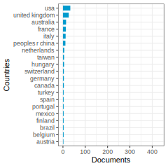
Articles: China’s urban transformation is reshaping the cities of Beijing, Shanghai, and Guangzhou, reflecting the country’s evolving economic, social, and political landscape through changes in urban form, land use, circulation, building height, planning processes, urban renewal, and real estate market privatization. (Gaubatz 1999) degree: 1 citations: 242
This article revisits the concept of critical natural capital, highlighting its importance in sustainable development and proposing that ecological resilience can help determine the ‘ecological criticality’ of specific renewable parts of natural capital by assessing the degree of threat ecosystems face. (Brand 2009) degree: 44 citations: 205
Critical natural capital (CNC) encompasses vital natural functions often overlooked in traditional natural science assessments, emphasizing the socio-cultural importance of nature’s diverse values for human well-being and advocating for the integration of ecology, sociology, and economics to enhance environmental planning and decision-making. (Chiesura and De Groot 2003) degree: 44 citations: 196
This paper presents guidelines for determining the criticality of natural capital based on the importance and threat factors, emphasizing the need to consider both criteria simultaneously, with the aim of developing a natural capital index for Europe. (De Groot et al. 2003) degree: 44 citations: 125
This study focuses on green agricultural production decision-making by agricultural cooperatives under government subsidies in China, highlighting the effectiveness of subsidies in promoting the production of green agricultural products and providing valuable insights for sustainable development in the green produce industry. (Xin, Xu, and Zheng 2024) degree: 1 citations: 1
This research aims to assess and mitigate urban land consumption to enhance natural capital flow provision through a multi-temporal landscape spatial analysis approach, highlighting the need for sustainable strategic planning choices to achieve land consumption neutrality and natural capital enhancement by 2030. (Valente et al. 2023) degree: 8 citations: 1
This research delves into the interplay of sustainability, investments, and economic indicators, highlighting the significance of natural capital in strong sustainability. It examines the impact of factors like industrial concentration, human development, and GDP on sustainability indices using econometric analysis. (Chahu’an-Jim’enez et al. 2024) degree: 7 citations: 0
This paper introduces a framework for assessing the ecological, socio-cultural, and economic values of landscapes through function-analysis, function valuation, and conflict analysis, aiming to guide sustainable land use planning by evaluating the total value of ecosystem goods and services and analyzing trade-offs between land use options. (De Groot 2006) degree: 29 citations: 649
Community values for natural capital and ecosystem services in the South Australian Murray-Darling Basin region were quantified and mapped through a method that linked local perceptions of place to broader environmental values, highlighting water and biota assets as highly valued for cultural, regulating, and provisioning services, with recreation and tourism, bequest, and intrinsic services being the most valued ecosystem services. (Raymond et al. 2009) degree: 33 citations: 514
Cluster 2-7—:
Documents: 154; Ave. Year: 2013.1; Ave. Citations: 34.3
The common topic across these texts is the relationship between natural capital (the world’s stock of natural resources like geology, soils, air, water, and living organisms) and various aspects of human well-being and economic development.
The key points are:
Natural capital, along with other forms of capital like human, social, and built capital, contributes to life satisfaction and quality of life at individual and national levels.
The concept of “weak sustainability” questions whether man-made capital can fully substitute for depleting natural capital in pursuit of economic growth.
Community-based approaches like ecotourism attempt to derive economic benefits from natural capital while conserving it, but their effectiveness is limited.
Green infrastructure investment can help reduce urban carbon emissions by leveraging natural capital.
There is a need to integrate natural capital into economic models and decision-making for long-term sustainability.
In summary, the common topic is “The Role of Natural Capital in Human Well-being, Quality of Life, and Sustainable Economic Development.”
Articles: This paper examines the impact of human, social, built, and natural capital on life satisfaction at the country level using data from the World Values Survey and various sources, finding that the UN Human Development Index and the value of ecosystem services per km(2) significantly influence life satisfaction, while limitations in data hinder the identification of a significant predictor for social capital. (Vemuri and Costanza 2006) degree: 82 citations: 201
This paper explores the connections between growth theory with exhaustible resources and weak sustainability, analyzing its underlying assumptions and questioning the efficacy of the weak sustainability index in measuring sustainable development within the context of nature finance and nature capital. (Gutes 1996) degree: 19 citations: 122
This review evaluates the progress of community-based vulnerability assessments in integrating spatial and temporal interactions and multiple exposures, focusing on the Sustainable Livelihoods Framework and IPCC AR4 Framework from 2014 to 2023, highlighting the need for less siloed approaches and addressing limitations in considering spatial scale, future temporal scale, and exposure to multiple shocks and stressors. (B. Smith and Diedrich 2024) degree: 2 citations: 1
Deurbanization, through migration from urban to rural areas, can enhance quality of life by leveraging various forms of rural capital, such as natural (farmland, natural sites), built (infrastructure), and financial (employment), as evidenced in a study of Hokuto City, Japan. (Takahashi et al. 2024) degree: 6 citations: 1
Green infrastructure investment in Chinese cities has been found to significantly reduce urban carbon emissions through various mechanisms, particularly in eastern and southern cities with stronger environmental focuses and larger populations. (KP. Ai and Yan 2024) degree: 4 citations: 0
Enhancing Quality of Life (QOL) involves integrating measures of human needs with subjective well-being, drawing from multiple disciplines to propose a multi-scale concept that incorporates objective and subjective elements, emphasizing the role of natural capital and policy options in maximizing QOL at various scales. (Costanza et al. 2007) degree: 19 citations: 603
Community-based ecotourism (CBET) is a promising but limited tool for biodiversity conservation and local economic development due to factors such as small scale, limited earnings, weak linkages to commercial success, and dependence on external support, highlighting the need for rigorous analysis and long-term funding commitment to assess its effectiveness and sustainability. (Kiss 2004) degree: 10 citations: 472
Preserving natural capital is essential for sustainable economic development, as neglecting the biosphere in favor of man-made capital in the short-term will hinder long-term economic growth. (Daly 2005) degree: 20 citations: 275
Cluster 2-8—:
Documents: 137; Ave. Year: 2016.2; Ave. Citations: 32.8
Based on the texts provided, the common topic appears to be the economic valuation and financing of green infrastructure investments in urban areas.
The key points are:
Quantifying the economic benefits of green infrastructure like green roofs, urban forests, parks etc. in terms of stormwater management, energy savings, air pollution reduction, amenity value etc.
Using techniques like contingent valuation, willingness-to-pay surveys to estimate the monetary value people place on urban green spaces.
Exploring different financing mechanisms like developer fees, taxes, community funding etc. to fund urban greening and green infrastructure projects.
Assessing the cost-effectiveness and financial feasibility of investing in sustainable rainwater harvesting, green roofs and other decentralized green infrastructure.
Understanding public perceptions and preferences towards different types of green infrastructure development scenarios.
The common theme tying these texts together is evaluating the economic rationale and financing options for promoting urban green infrastructure investments from the perspective of nature capital and ecosystem services provided by urban natural assets.

Articles: This paper quantitatively integrates stormwater, energy, and air pollution benefits of green roofs into an economic model, demonstrating that the net present value of a green roof can be up to 25.2% less than that of a conventional roof over 40 years, with potential annual benefits of $895-3392 for a 2000 square meter vegetated roof, suggesting the potential for green roofs to mitigate urban environmental problems and reduce costs. (C. Clark, Adriaens, and Talbot 2008) degree: 4 citations: 204
The text highlights the importance of economic valuation in promoting green infrastructure investments in urban areas, emphasizing the positive impact of green spaces on urban residents and the need for a clear and replicable method to assess their economic value. (Vandermeulen et al. 2011) degree: 12 citations: 165
The VALUE project in Manchester, UK assessed the economic value of green infrastructure investments through a contingent valuation survey, finding that willingness to pay is influenced by the size and greenness of the investment, with respondents showing a preference for larger and greener options, indicating the importance of considering both specific and broader values of green infrastructure resources in future policy-making. (Mell et al. 2013) degree: 17 citations: 104
This paper assesses the financial aspects of different rainwater management designs for a small-scale urban housing community in Lublin, Poland, highlighting the economic feasibility and cost-efficiency of the systems, with only above-ground rainwater reservoir designs proving to be economically profitable, suggesting a need for financial support for sustainable rainwater management. (Musz-Pomorska, Widomski, and Golebiowska 2024) degree: 5 citations: 0
The paper presents the results of a study on the economic value of urban green infrastructure investments in Sheffield, indicating that individuals are willing to pay more for high-quality green environments, with younger age groups and lower educational attainment showing higher willingness to pay, ultimately supporting the economic benefits of investing in visibly greener urban spaces. (Mell et al. 2016) degree: 16 citations: 61
This study evaluates people’s environmental preferences for future development scenarios in Ishikawa Prefecture, Japan, revealing preference heterogeneity and potential conflicts among four hypothetical scenarios, with participants generally favoring the natural capital-based and dispersed society scenario. (Kyoi, Kuriyama, and Hashimoto 2023) degree: 5 citations: 0
Public perceptions and support for green infrastructure funding mechanisms were explored in the Oxford-Cambridge Arc, revealing a preference for developer-covered funding and opposition towards citizen financial obligations, with support influenced by altruistic values, pro-environmental behavior, and government trust, offering policymakers crucial insights for sustainable funding streams. (Steadman et al. 2023) degree: 8 citations: 0
The text discusses the transition towards Water Sensitive Cities to enhance urban water resilience through diverse water sources, ecosystem services, and socio-political capital, showcasing leading examples from Australia and Singapore. (Wong and Brown 2009) degree: 6 citations: 361
This study in Guangzhou, China assessed the recreational value of urban greenspaces using contingent valuation, revealing high willingness-to-pay among residents, indicating the importance of outdoor recreation as a leisure activity and suggesting the need for increased investment in urban greenspace development and management for sustainable cities. (Jim and Chen 2006) degree: 11 citations: 322
Cluster 2-9—:
Documents: 130; Ave. Year: 2016.4; Ave. Citations: 58.9
Based on the texts provided, the common topic appears to be:
The Role of Natural Capital, Particularly Soils, in Ecosystem Services and Sustainable Development
Step 1: The texts discuss the importance of natural capital, especially soils, in providing ecosystem services that benefit humans. They cover topics like the role of natural and human-derived capital in ecosystem services, the impact of renewable energy exclusion zones on ecosystem services, the value of soil health in agroforestry systems, and the pressures of global change on soils.
Step 2: Common keywords across the texts relevant to nature finance and nature capital include: natural capital, ecosystem services, soil health, agroforestry, renewable energy, exclusion zones, economic valuation, sustainable development, and global change pressures.
Step 3: The texts collectively highlight the critical role that natural capital, particularly soils, plays in underpinning various ecosystem services that are essential for human well-being and sustainable development. They discuss the importance of recognizing and valuing the contributions of natural capital, such as soil health, in decision-making processes related to land use, energy production, and environmental protection. The texts also explore the pressures and challenges posed by global change drivers, such as land-use change and pollution, on the functioning of soils and the ecosystem services they provide.
Step 4: The common topic shared by the articles is “The Role of Natural Capital, Particularly Soils, in Ecosystem Services and Sustainable Development.”
Articles: Growing interest exists in the role of natural and human-derived capital in ecosystem services, with differences in conceptualization persisting; a stocks and flows systems approach demonstrates the necessity of both natural capital and human-derived capital at various stages of ecosystem service delivery, highlighting the importance of identifying critical forms of capital for sustainable management. (L. Jones et al. 2016) degree: 35 citations: 168
Exclusion zones imposed to protect land for nature conservation and food production in Great Britain incur costs of up to 0.63B, 19.17B, and 1.33B pounds for solar, wind, and bioenergy pathways, respectively, indicating the value placed on safeguarding these areas while also revealing the need for a more flexible approach to meet net zero goals. (Delafield, Smith, Day, Holland, and Lovett 2024b) degree: 2 citations: 3
Agroforestry systems, particularly cacao agroforestry, enhance soil health, supporting essential ecosystem services, with soil carbon and nitrogen contributing significantly to the indirect use value (IUV) of soil, highlighting the importance of integrating soil health considerations into sustainable land management practices. (Kristanto et al. 2024) degree: 7 citations: 0
The study explores the impacts of excluding renewable energy development in certain zones on both financial and environmental aspects, emphasizing the importance of considering nature finance and nature capital in decision-making processes. (Delafield, Smith, Day, Holland, and Lovett 2024a) degree: 1 citations: 0
Cultural ecosystem services are not yet fully defined within the ecosystem services framework, but opportunities exist to integrate them operationally through socioecological models, facilitating communication between scientists and stakeholders and enabling evaluation of tradeoffs and synergies involving cultural ecosystem services. (Daniel et al. 2012) degree: 39 citations: 1046
This paper introduces a framework to classify and quantify the natural capital and ecosystem services of soils, emphasizing the interconnected components of soil natural capital, formation processes, drivers, ecosystem services, and human benefits. (Dominati, Patterson, and Mackay 2010) degree: 73 citations: 686
Human activities, including land use change and management, directly and indirectly impact soils globally, necessitating greater recognition of the role of soils in supporting ecosystems and natural capital to minimize adverse environmental impacts and promote sustainable development. (P. Smith et al. 2016) degree: 7 citations: 572
Cluster 2-99—:
Documents: 247; Ave. Year: 2016.7; Ave. Citations: 41
Based on the texts provided, the common topic appears to be evaluating the sustainability and environmental impacts of economic activities and systems using thermodynamic concepts like exergy, emergy, and natural capital accounting.
Key points:
Several texts discuss using thermodynamic metrics like cumulative exergy/emergy consumption to account for the natural resources and ecological impacts embodied in economic production.
There is discussion around defining and measuring ecosystem services, natural capital, and incorporating abiotic natural flows beyond just biodiversity.
Frameworks are proposed for evaluating the sustainability of economic sectors, technologies, and conservation projects based on their renewable vs non-renewable resource use.
Indices based on emergy/exergy flows are suggested as ways to monitor patterns of sustainability by tracking the dependence on local renewable inputs versus purchased non-renewable inputs.
The role of agri-environmental schemes in conserving biodiversity and ecosystem services on farmlands across Europe is analyzed.
In summary, the overarching topic is the use of thermodynamic accounting methods and natural capital frameworks to assess the environmental sustainability of human economic activities and guide sustainable development aligned with ecological limits.
The common topic could be named: “Thermodynamic Approaches for Evaluating Environmental Sustainability of Economic Systems”
Articles: This paper presents a thermodynamic input-output model for the 1997 United States economy, incorporating industrial cumulative exergy consumption (ICEC) and ecological cumulative exergy consumption (ECEC) to evaluate the flow of exergy in natural resources and ecosystems, offering potential insights into the environmental impact of economic sectors. (Ukidwe and Bakshi 2007) degree: 21 citations: 130
Chen et al. (2023) propose defining ecosystem services to avoid an overly inclusive concept, emphasizing the importance of natural capital, ecosystems, and geodiversity for societal benefits, suggesting a shift towards a holistic approach that includes abiotic nature in ecosystem and non-ecosystem services. (Gray et al. 2024) degree: 6 citations: 0
The text discusses the significance of ocean ecosystems to human wellbeing, highlighting the challenges posed by open-access resources and the importance of sustainable stewardship through Common Asset Trusts (CATs) for blue commons at various spatial scales. (Hern’andez-Blanco et al. 2024) degree: 5 citations: 0
Investments in conservation are essential to counteract ecosystem degradation caused by human resource consumption, with a challenge being the alignment of financing solutions with conservation projects; a new framework is proposed to match viable financing mechanisms with specific project conditions, illustrated through various conservation case studies. (Plantinga et al. 2024) degree: 7 citations: 0
A conceptual framework was developed to clarify the meanings of urban ecosystem services (UES), linking them to natural and human-derived capital and proposing normative propositions to guide their application, emphasizing holistic integration of natural capital components, reduced dependence on non-renewable resources, and enhancement through technology. (PY. Tan et al. 2020) degree: 20 citations: 71
Humanity’s impact on the biosphere underscores the shift towards viewing it as essential for social justice, economic development, and sustainability, emphasizing the interconnectedness of social-ecological systems and the critical need for biosphere stewardship for long-term human well-being and development. (Folke et al. 2016) degree: 34 citations: 719
Agri-environment schemes play a crucial role in conserving farmland biodiversity in Europe, with studies showing an overall increase in biodiversity in response to these schemes, especially in areas out of production. Further research is needed to determine their impact on ecosystem services and cost-effectiveness compared to protected areas. (Bat’ary et al. 2015) degree: 20 citations: 642
Analyzing emergy flows in ecosystems and human systems provides valuable insights into sustainability, efficiency, and interactions with the environment, offering a new index to assess and monitor patterns of sustainability in economic systems. (Ulgiati and Brown 1998) degree: 17 citations: 389
Cluster 3-1—:
Documents: 270; Ave. Year: 2020.7; Ave. Citations: 38.2
The common topic across these texts is the relationship between economic factors (trade, investment, financial development, economic growth) and environmental sustainability, with a focus on carbon emissions and the role of renewable energy.
Step 1: Main topics of each text 1) Impact of trade balance, investment, energy use, finance, urbanization on environmental sustainability in BRICS countries. 2) Effect of financial development on CO2 emissions in Oman. 3) Influence of green technology, economic growth, FDI on sustainable development, with renewable energy as a mediator. 4) Relationship between financial development, CO2 emissions, trade and economic growth in MENA countries. 5) Nonlinear correlation between FDI and environmental degradation across income groups. 6) Relationship between public-private energy investment, technological innovations and CO2 emissions in China.
Step 2: Common keywords Trade, investment (FDI, green investment), financial development, economic growth, energy use/consumption, CO2 emissions, environmental sustainability/degradation, renewable energy.
Step 3: Summary paragraph The texts analyze the impact of various economic factors like trade, investment (FDI, public-private partnerships), financial development, and economic growth on environmental sustainability, primarily measured by carbon emissions or environmental degradation. They explore the role of renewable energy, green technology, and innovations in mediating this relationship. Some find evidence of the environmental Kuznets curve, while others highlight the pollution haven hypothesis. The focus is on understanding these linkages in different country groups (BRICS, MENA, income levels) to inform policymaking for sustainable development.
Step 4: Common topic name The impact of economic activities and policies on environmental sustainability, with a focus on carbon emissions and the potential of renewable energy.
Articles: Increasing the export-to-import ratio can lead to environmental sustainability and improved living standards in BRICS countries, with green field investment and financial development also playing key roles, while energy use, urbanization, and economic growth have negative impacts on environmental sustainability. (Rahman and Halim 2024) degree: 11 citations: 7
Private financial development in Oman has a significant positive impact on CO2 emissions, along with energy consumption and GDP, according to a Markov-switching model analysis spanning 1989-2020, highlighting the need for policymakers to carefully consider trade-offs between economic growth and carbon emission reduction. (Saboori, Cifuentes-Faura, and Bagheri 2024) degree: 17 citations: 0
The study examines the impact of green technology innovation, economic growth, foreign direct investment, renewable energy consumption, and government initiatives on sustainable development in 126 nations (2001-2019), highlighting the importance of targeted policies and green finance for improving environmental performance amidst increasing energy use and FDI. (Mehroush et al. 2024) degree: 13 citations: 0
This paper investigates the relationship between financial development, CO2 emissions, trade, and economic growth in MENA countries, finding bidirectional causality between CO2 emissions and economic growth, as well as interrelatedness between economic growth and trade openness, validating the feedback hypothesis between trade openness and financial development, and identifying unidirectional causality from financial development to economic growth and from trade openness to CO2 emissions, while also confirming the environmental Kuznets curve. (Omri et al. 2015) degree: 58 citations: 487
This paper examines the relationship between foreign direct investment, environmental degradation, economic growth, and energy consumption across high-, middle-, and low-income countries, finding evidence supporting the pollution haven hypothesis and the presence of an environmental Kuznets curve. (Shahbaz et al. 2015) degree: 62 citations: 400
This paper investigates the impact of public-private partnerships investment and technological innovations on CO2 emissions in China, finding that public-private partnerships investment in energy increases carbon emissions while technological innovations have a negative effect, suggesting policy directions for enhancing environmental quality in China. (Shahbaz et al. 2020) degree: 49 citations: 358
Cluster 3-10—:
Documents: 73; Ave. Year: 2021.1; Ave. Citations: 29.6
Based on the texts provided, the common topic appears to be “Financing Renewable Energy Transition in Africa and Developing Economies”.
Step 1: Understanding the main topic of each text - The texts discuss financing renewable energy in Africa, the transition from fossil fuels to renewable energy sources, the role of financial development and foreign direct investment in promoting renewable energy, and the challenges and determinants of renewable energy growth in developing economies.
Step 2: Common keywords related to nature finance and nature capital - Renewable energy, sustainable development, circular economy, financial development, environmental taxation, energy transition, green finance, green investments.
Step 3: Summary paragraph The texts highlight the importance of financing and promoting renewable energy sources in Africa and other developing economies to achieve sustainable development goals and address climate change concerns. They discuss the potential of financial development, environmental taxation, and foreign direct investment in facilitating the transition from fossil fuels to renewable energy sources. The circular economy principles and green finance initiatives are also mentioned as enablers for this energy transition. However, the texts also acknowledge the challenges faced by developing economies, such as limited financial resources, political instability, and inadequate regulatory frameworks, in adopting renewable energy technologies.
Step 4: Common topic name “Financing Renewable Energy Transition in Africa and Developing Economies”
Articles: Efforts to finance renewable energy in Africa align with Sustainable Development Goals, highlighting the social costs of fossil fuels and the potential for inclusive and sustainable growth through renewable energy investments. (Schwerhoff and Sy 2017) degree: 24 citations: 144
The study reviewed Africa’s transition from fossil fuels to renewable energy using circular economy principles, emphasizing the continent’s increasing energy demand, current reliance on renewable sources, and the potential for a circular economy approach to facilitate a sustainable energy transition with support from regional finance institutions and governments. (Mutezo and Mulopo 2021) degree: 11 citations: 134
This study examines how a country’s financial capital influences its energy transitions, finding that greater financial capital supports shifts towards more capital-intensive energy sources, with high-income countries transitioning to modern renewables like wind, while lower-income countries tend to move towards fossil fuels such as coal. (Best 2017) degree: 26 citations: 129
This study assesses the impact of insurance market development on environmental quality in the UAE using a bootstrap ARDL test, finding that renewable energy consumption positively influences environmental quality in the short and long term, with insurance market development also having a positive effect. Recommendations are made for policymakers to bolster sustainability of insurance markets to reduce environmental pollution. (Samour et al. 2024) degree: 6 citations: 7
Financial development, FDI, and economic growth significantly increase renewable energy consumption in the UAE, highlighting the importance of promoting financial development, green finance, and investments in green energy for sustainable energy development in the region. (Samour, Baskaya, and Tursoy 2022) degree: 22 citations: 106
Financial development positively impacts renewable energy transition in low-income countries in sub-Saharan Africa, highlighting the importance of innovative financial products and trade policies to support clean energy investments and sustainable economic growth. (Mugume and Bulime 2024) degree: 5 citations: 0
The study investigates the role of financial development, environmental taxation, and political stability in promoting renewable energy adoption in developing economies, finding that environmental taxes incentivize adoption, while political stability and financial development provide a conducive environment for sustainable energy transitions. (A. Rehman et al. 2024) degree: 11 citations: 0
Factors influencing country-level renewable energy growth were investigated using FEVD and PCSE estimation methods in a comprehensive global sample analysis from 1990 to 2010, including major economies like Brazil, Russia, India, China, and South Africa, revealing that certain government-backed energy policies and weak voluntary approaches may impede renewable energy investments due to policy design failures and uncertainty. (Aguirre and Ibikunle 2014) degree: 18 citations: 310
Cluster 3-2—:
Documents: 257; Ave. Year: 2022.4; Ave. Citations: 34.4
The main topic of the given cluster is “The Impact of Natural Resources, Green Finance, Fintech, Urbanization and Human Capital on Environmental Sustainability and Ecological Footprint”.
Step 1: Understanding the main topic of each text - The texts discuss the impact of factors like natural resource use, green finance, fintech, urbanization, human capital, and economic growth on environmental sustainability and ecological footprint across different countries and regions like BRICS, resource-abundant economies, G7 countries, China, and the United States.
Step 2: Common keywords across texts relevant to nature finance and nature capital - Natural resources, green finance, fintech, urbanization, human capital, ecological footprint, environmental sustainability, CO2 emissions, energy transition, sustainable development goals (SDGs).
Step 3: Summarizing the texts in a single paragraph The texts analyze the role of natural resource extraction, green finance initiatives, financial technologies (fintech), urbanization levels, and human capital development on environmental sustainability indicators like ecological footprint, CO2 emissions, and energy transition. They examine the impact of these factors on achieving sustainable development goals (SDGs) across different country groups, including BRICS, resource-abundant economies, G7 nations, China, and the United States. The studies employ various econometric techniques to establish the relationships between these variables and provide policy recommendations for promoting sustainable development.
Step 4: Concluding with a common topic name The common topic shared by the articles is “The Impact of Natural Resources, Green Finance, Fintech, Urbanization and Human Capital on Environmental Sustainability and Ecological Footprint”.
Articles: This study investigates the impact of Fintech, Natural Resources, Green Finance, and Green Growth on environmental sustainability in BRICS countries, highlighting the potential of Fintech to support green projects, the harmful effects of continued natural resource use, and the importance of Green Finance and Green Growth in enhancing sustainability. (HQ. Wei, Yue, and Khan 2024) degree: 20 citations: 1
This study examines the impact of natural resources, green technologies, and financial technologies on energy transition and CO2 emissions in resource-rich countries, finding that green technologies and fintech have a significant negative effect on CO2 emissions and a positive effect on energy transition, while natural resources have a positive effect on both CO2 emissions and energy transition. The study suggests that governments should focus on investing in research and development in green technologies and fintech to drive innovation. (Lv et al. 2024) degree: 26 citations: 0
Natural capital is crucial for achieving sustainable socio-economic goals, with its impact varying across countries and income levels, influencing factors such as poverty rates, gender equality, and overall well-being, emphasizing the need for policies that protect and enhance natural wealth to prevent depletion. (YT. Dai et al. 2024) degree: 28 citations: 0
This study explores the impact of natural resource abundance, human capital, and urbanization on China’s ecological footprint, finding that natural resource rent increases environmental degradation while human capital mitigates it, with urbanization playing a significant role in environmental deterioration, and proposing policy measures for improving environmental quality. (Z. Ahmed, Asghar, et al. 2020) degree: 122 citations: 655
This study investigates the impact of natural resources, human capital, and foreign direct investment on the ecological footprint in the United States from 1970 to 2015, finding that economic growth and energy consumption are negatively related to the ecological footprint, while natural resources, human capital, and FDI play a role in reducing it. (Zafar et al. 2019) degree: 92 citations: 472
The study investigates the impact of urbanization and human capital on the ecological footprint in G7 countries, finding that urbanization increases the ecological footprint while human capital reduces it, with unidirectional causality from human capital and urbanization to the ecological footprint and bi-directional causality between urbanization, human capital, and economic growth, providing policy recommendations to address environmental challenges in these nations. (Z. Ahmed, Zafar, et al. 2020) degree: 51 citations: 384
Cluster 3-3—:
Documents: 249; Ave. Year: 2022.2; Ave. Citations: 23
Based on the texts provided, the common topic appears to be “Green Finance for Sustainable Development and Climate Change Mitigation”.
Step 1: Understanding the main topic of each text - The texts discuss various aspects of green finance, renewable energy, and their role in sustainable development and mitigating climate change.
Step 2: Common keywords across texts relevant to nature finance and nature capital - Green finance, renewable energy, climate change mitigation, sustainable development, carbon emissions, energy efficiency, public spending, research and development (R&D), natural resources.
Step 3: Summarizing the texts in a single paragraph The texts explore the challenges and solutions for financing green energy and renewable energy projects, as well as the nexus between green finance and climate change mitigation in emerging economies. They analyze the role of renewable energy consumption, green finance, and political stability in achieving sustainable development goals, particularly related to climate change. The studies also examine the impact of green finance, natural resources, and carbon emissions on sustainable urban development in China, and the potential of green finance and blockchain technology for climate change mitigation. Additionally, the texts investigate the mediating role of green finance in the relationship between public spending on research and development (R&D) and green economic growth in the Belt and Road Initiative (BRI) region.
Step 4: Concluding with a name for the common topic The common topic shared by the articles is “Green Finance for Sustainable Development and Climate Change Mitigation”.

Articles: Challenges in green financing for renewable energy projects, such as lack of long-term financing and low returns, can be addressed through strategies like involving public financial institutions, utilizing spillover taxes, and establishing green credit guarantee schemes to mitigate risks and encourage investment in sustainable solutions. (Taghizadeh-Hesary and Yoshino 2020) degree: 135 citations: 218
This study evaluates the impact of green finance on climate change mitigation in N-11 and BRICS countries using the difference in differences (DID) approach, finding significant factors such as renewable energy consumption, population, FDI, CO2 emissions, and investment in the energy sector influencing green financing and climate change mitigation. Matching analysis yielded mixed results, showing no significant difference among countries. (Nawaz et al. 2021) degree: 124 citations: 184
This study examines the interplay of renewable energy, green finance, and political stability in reducing CO2 emissions to achieve sustainable development goal 13 in emerging economies, highlighting the significant roles of renewable energy and green finance in mitigating emissions, while emphasizing the need for stronger political systems to promote these initiatives. (Behera, Behera, and Sethi 2024) degree: 39 citations: 13
This study examines the impact of green finance and technological innovations on sustainable urban development in Chinese mega-cities, highlighting the interplay between natural resources, carbon emissions, and economic sustainability through a Difference-in-Difference analysis of data from 270 Chinese cities from 2002 to 2022. Results show that financial considerations related to carbon emissions significantly influence China’s green economy, with short-term growth benefiting from both natural resource utilization and the development of green financial markets, suggesting a linear relationship between carbon emissions, economic growth, and natural resource use, offering valuable insights for policymakers to enhance the efficient utilization of natural resources for long-term sustainability and green growth in China. (J. Li et al. 2024) degree: 49 citations: 0
This study examines the potential of green finance in conjunction with blockchain technology to enhance climate change mitigation efforts in China’s blockchain industry, highlighting the synergies and challenges of this intersection to inform more sustainable financing decisions for environmental preservation. (JM. Dong and Yu 2024) degree: 54 citations: 0
This study examines the impact of public spending on research and development (R&D) on green economic growth in Belt and Road Initiative (BRI) member countries from 2008 to 2018 using the GMM method and DEA, finding fluctuating growth due to inadequate government policies and varied effects based on GDP per capita levels and technological investments in green energy. (DY. Zhang et al. 2021) degree: 219 citations: 429
Cluster 3-4—:
Documents: 188; Ave. Year: 2021; Ave. Citations: 32.9
The common topic across these texts appears to be the relationship between sustainable development, green finance, technological innovation, and environmental protection, particularly in the context of reducing carbon emissions and transitioning towards cleaner energy sources.
Some key points:
Several studies examine the impact of public-private partnerships, green finance initiatives, environmental policies, and technological innovation on reducing consumption-based carbon emissions and promoting sustainable economic growth across different countries/regions.
There is analysis of the “resource curse” hypothesis, where abundant natural resources can inhibit economic growth unless mitigated by factors like human capital development, financial development, industrialization, and trade.
The role of green finance, environmental taxes, economic complexity, and globalization in facilitating the transition to cleaner, more efficient energy systems is explored.
The heterogeneous effects of energy transition policies, environmental regulations, and green financial policies on ecological footprints and environmental sustainability across different countries are investigated.
The importance of financial development, risk management, green innovation, and human capital for balancing economic prosperity with environmental protection, especially in the context of COP27 goals, is highlighted.
Based on these common themes around sustainable finance, green policies, innovation and their environmental impacts, a potential topic name could be:
“The Role of Green Finance, Innovation and Policy in Promoting Sustainable Development and Environmental Protection”
Articles: The study examines the impact of public-private partnership investment and technological innovation on consumption-based carbon emissions in China from 1990 to 2017, finding that exports, renewable energy consumption, and technological innovation contribute to reducing carbon emissions. (Z. Khan et al. 2020) degree: 26 citations: 212
Human capital development, financial development, industrialization, technological progress, and international trade positively influence economic growth in Next Eleven countries, with human capital playing a crucial role in mitigating the negative impacts of natural resource abundance on economic growth. (Rahim et al. 2021) degree: 34 citations: 183
This paper analyzes the financing options for the transition to low-carbon energy in Europe, finding that the necessary funds are available but face reluctance from institutional investors due to policy uncertainties, highlighting the need for more venture capital and household investments for early-stage projects in innovative clean energy technologies. (Polzin and Sanders 2020) degree: 62 citations: 94
This paper examines the financial performance of green funds compared to traditional energy funds in twenty-seven emerging markets, finding that traditional energy funds outperform renewable funds and suggesting the need for regulatory interventions to promote a sustainable financial system amidst the Covid-19 pandemic. (Naqvi et al. 2021) degree: 59 citations: 91
This study highlights the importance of green finance and innovation in reducing trade-adjusted CO2 emissions in OECD economies, noting a significant negative relationship between green finance, green innovation, and carbon emissions, with a greater impact at higher quantiles, emphasizing the need for policymakers to prioritize these factors for sustainable development. (M. Umar and Safi 2023) degree: 64 citations: 82
This study explores the impacts of green financial policy, environmental tax, economic complexity, and globalization on energy transition using data from 32 high-income countries from 2000 to 2020, revealing beneficial effects of green financial policy, environmental tax, and globalization, while economic complexity shows a U-shaped impact in the first half distribution and an inverted U-shaped impact in the second half distribution. It provides valuable insights for designing schemes to achieve environmental sustainability goals. (Chu 2024) degree: 21 citations: 1
This study explores the diverse impacts of energy transition, environmental policies, and green financial policies on the ecological footprint of OECD nations, revealing that energy transition has varying effects depending on a country’s ecological quality, while environmental and green financial policies play a crucial role in reducing ecological footprint across nations. (Dao et al. 2024) degree: 22 citations: 0
This study explores the impact of financial development, financial risk, green finance, and innovation on carbon emissions in G7 economies, highlighting the importance of efficient resource allocation, improved financial systems, and green innovation for emission mitigation and sustainable economic development, with implications for policymakers and climate policy discussions at COP-27. (Sajjad et al. 2024) degree: 19 citations: 0
Variations in economic growth post-1965 have shown an inverse relationship with the proportion of natural capital in national wealth, with discussions highlighting four key pathways linking abundant natural resources to hindered economic development. (Gylfason 2001) degree: 42 citations: 1048
Cluster 3-5—:
Documents: 179; Ave. Year: 2022.5; Ave. Citations: 20.3
The main topic of the given cluster is the role of green finance and green technologies in promoting sustainable development, renewable energy transition, and mitigating climate change.
Common keywords across the texts relevant to nature finance and nature capital: - Green finance - Renewable energy - Sustainable development - Climate change mitigation - Low-carbon transition - Green technological innovation - Circular economy - Carbon footprint - Natural resource efficiency
Summary paragraph: The texts in the cluster discuss the importance of green finance and green technological innovations in facilitating the transition towards sustainable development, renewable energy sources, and reducing carbon emissions. They highlight the potential of green finance instruments, such as investments in low-carbon infrastructure and renewable energy projects, in mitigating climate change and promoting a circular economy. The studies also explore the impact of factors like economic growth, energy consumption, trade, and foreign direct investment on carbon footprints. Additionally, the role of fiscal policies, institutional quality, and international cooperation in enabling green growth and natural resource efficiency is examined. The cluster emphasizes the need for a comprehensive approach involving green finance, technological advancements, and policy interventions to achieve a low-carbon energy transition and sustainable development goals in the post-COVID-19 era.
Common topic name: Green Finance and Green Technologies for Sustainable Development and Climate Change Mitigation

Articles: The study investigates how green financing and renewable energy sources in China impact sustainable development, utilizing panel cointegration and causality modelling to show the positive effects of green finance development and private sector involvement on the growth of renewable energy sources from 2005 to 2020. (CZ. Li and Umair 2023) degree: 92 citations: 216
This paper introduces a low carbon finance index to attract investment in low-carbon energy, revealing variations in scores among countries, with Nepal and Iceland leading, and Singapore and Israel lagging, suggesting developing nations could benefit from targeted policies and investments in renewables. (Mohsin et al. 2021) degree: 73 citations: 193
This study examines the impact of green finance, renewable energy investment, and technological innovation on reducing CO2 emissions, while also highlighting the need for policymakers to promote these measures and create a carbon-trading market for sustainable development in the face of financial resource shortages. (D. Zhang, Mohsin, and Taghizadeh-Hesary 2022) degree: 78 citations: 120
This study examines the interplay between energy transition, circular economy, and international trade in reducing carbon footprints for a sustainable future, emphasizing the importance of addressing natural resource loss through improved waste management and transitioning to a circular economy to mitigate greenhouse gas emissions across key emitting countries. (YK. Cao, Cai, and Liu 2024) degree: 21 citations: 0
The study explores the positive effects of green technological innovation (GTI) and green finance (GF) on green growth in China, highlighting regional heterogeneity and asymmetry in their impacts, as well as the significant synergistic effect of GTI and GF, leading to policy recommendations for achieving green growth. (XM. Zhao et al. 2024) degree: 31 citations: 0
This study explores the link between fiscal policy and natural resource efficiency, recommending the establishment of fiscal restrictions under specific conditions to enhance profitability, especially in resource-rich countries with weak institutions, where IMF-imposed fiscal constraints could help mitigate the resource curse. (Kong and Gao 2024) degree: 20 citations: 0
Limited academic attention has been given to the implications of COVID-19 on global energy transition, prompting this study to comprehensively analyze the dynamics and propose a low-carbon energy transition roadmap post-pandemic, focusing on challenges, opportunities, and strategies for green recovery. (Tian et al. 2022) degree: 39 citations: 230
Cluster 3-6—:
Documents: 148; Ave. Year: 2021.4; Ave. Citations: 25.9
Based on the texts provided, the common topic appears to be:
The Impact of Green Investment on Environmental Sustainability in China
Here are the key steps that led to this topic:
Step 1: Understanding the main topics - The texts discuss the role of green investment/innovation in reducing environmental pollution/carbon emissions in China. - They analyze the effects of green investment along with other factors like energy use, natural resource extraction, financial development, etc. on environmental degradation.
Step 2: Common keywords - Green investment, environmental pollution, carbon emissions, sustainability, natural resources, energy consumption, financial development
Step 3: Summary paragraph The texts collectively examine how promoting green investment and innovation in environmentally-friendly technologies can help mitigate environmental degradation and carbon emissions in China. They assess the impact of green investment, along with other factors like natural resource extraction, energy use, financial development, and institutional quality, on environmental sustainability indicators like air pollution and CO2 emissions across different provinces and regions of China. The findings generally suggest that green investment plays a positive role in reducing emissions and enhancing environmental quality.
Step 4: Common topic name The Impact of Green Investment on Environmental Sustainability in China

Articles: This study examines the impact of green innovation and investment in China’s energy sector on CO2 emissions using provincial data from 1995 to 2017, finding a long-term relationship between CO2 emissions and its determinants, supporting the transition to sustainable energy sources to mitigate environmental degradation. (JJ. Guo et al. 2021) degree: 44 citations: 186
Green investment in China has a significant negative impact on local environmental pollution, with effects varying based on institutional quality and regional factors, highlighting the importance of green investment in achieving sustainable development. (SY. Ren, Hao, and Wu 2022) degree: 71 citations: 131
This study examines the relationship between green investment, digital financial inclusion, and environmental sustainability in China, revealing a positive interrelation across various quantiles and emphasizing the importance of strategic investments in eco-friendly innovations and the financial sector for sustainable development. (W. Zhang, Bakhsh, et al. 2024) degree: 21 citations: 3
This study examines the impact of green investment on environmental quality in Vietnam, finding that green investment can improve environmental conditions in the short and medium term, with a bidirectional causality observed across different time and frequency domains. The research highlights the importance of economic growth, financial globalization, and fossil fuel energy consumption in influencing the relationship between green investment and carbon dioxide emissions, providing valuable insights for policymakers and governments aiming to promote sustainable development and mitigate environmental degradation. (Xuan and Hung 2024) degree: 22 citations: 0
This study explores the impact of resource rent and institutional quality on green investment, finding that resource rent hinders green investment while factors such as political stability and regulatory quality promote it, emphasizing the importance of improving institutional quality and reducing dependence on fossil fuel revenues to foster green investment. (Alsagr and Ozturk 2024) degree: 32 citations: 0
This study examines the impact of natural resources rent, green investment, financial development, and energy consumption on carbon emissions in China from 1995 to 2017, finding that energy consumption and financial development positively affect carbon emissions, while green investment has a negative impact, and national natural resources rent is positively associated with carbon emissions, suggesting the need for environmental-friendly policies to control emissions. (Shen et al. 2021) degree: 162 citations: 405
This study investigates the impact of green investments and other macroeconomic factors on carbon emissions in China, finding that investments in green projects can reduce short- and long-term carbon emission levels, while natural resource extraction, financial sector development, and energy investments contribute to increased emissions. (ZZ. Li et al. 2021) degree: 87 citations: 226
Cluster 3-7—:
Documents: 148; Ave. Year: 2022.6; Ave. Citations: 17.1
The main topic that ties together these texts is the role of green finance instruments, particularly green bonds, in promoting resource efficiency, renewable energy development, and reducing environmental impacts like CO2 emissions.
Some common keywords across the texts related to nature finance and natural capital:
- Green bonds
- Green finance
- Resource efficiency
- Renewable energy
- CO2 emissions
- Natural resources utilization
- Sustainable development
In summary, the articles explore how financial tools like green bonds can drive investment towards renewable energy projects, improve efficiency in utilizing natural resources, and mitigate environmental degradation from activities like mineral extraction or fossil fuel use. Several studies find positive impacts of green bond issuance on renewable energy adoption, resource/energy efficiency, and reducing CO2 emissions across different countries and regions. The articles also discuss other factors like economic growth, technological innovation, and policy measures that interplay with green finance in achieving sustainable development goals related to energy and the environment.
The common topic that emerges is: The role of green finance, especially green bonds, in enhancing resource efficiency, renewable energy development, and environmental sustainability.
Articles: This study utilizes Bayesian total error analysis methodology to decompose predictive uncertainty in hydrological modeling by developing probability models for uncertainties in rainfall and runoff data, demonstrating the dominance of structural errors in the total predictive uncertainty and highlighting the importance of independent data quality estimates for accurate decomposition. (Renard et al. 2011) degree: 1 citations: 182
Efficient natural resource utilization positively impacts green economic growth in BRICS countries, with a unidirectional causal relationship from resource efficiency to economic growth, supporting the implementation of green FDI, green financing, and 3Rs principles for sustainable development. (LH. Zhao and Rasoulinezhad 2023) degree: 68 citations: 121
This study assesses the impact of green bonds on the efficiency of renewable resource utilization in 15 Asia-Pacific countries from 2012 to 2021, finding that green bonds have a positive and statistically significant effect on resource efficiency in both short and long terms, with urbanization showing differing effects in the short and long term, and inflation rate negatively affecting resource efficiency. Recommendations include developing the green bonds market and promoting green foreign direct investment. (Ye and Rasoulinezhad 2023) degree: 70 citations: 87
This study explores China’s green development journey, emphasizing the impact of green finance and resource rent optimization on sustainable development from 1988 to 2021, highlighting the significance of tailored financial mechanisms in promoting green investments and sustainable economic growth amidst challenges from conventional Foreign Direct Investment (FDI) and economic uncertainty. (XJ. Dai and Zhang 2024) degree: 20 citations: 0
This study examines the relationship between green finance tools and sustainability in minerals extraction for Electric Vehicles (EVs) in ten APEC countries, finding that the issuance of green bonds plays a significant role in reducing CO2 emissions, with practical policy recommendations outlined for enhancing environmental sustainability in the mining sector. (XW. Ma, Liu, and Zhang 2024) degree: 21 citations: 0
This paper presents a CAD/CAA tool using linear programming to optimize hybrid wind-solar power systems for cost-effective electricity production while considering environmental factors, such as emission reduction in grid-linked systems and environmental credit in autonomous systems. A controller is designed to monitor system operation and provide relevant energy and cost details. (Chedid and Rahman 1997) degree: 1 citations: 274
Green finance, particularly through green bonds, is crucial for promoting green energy projects and reducing CO2 emissions in top economies, emphasizing the need for long-term supportive policies to boost private investment in sustainable energy for environmental issues, especially during and post-COVID-19 times. (Rasoulinezhad and Taghizadeh-Hesary 2022) degree: 189 citations: 254
This research examines the relationship between green bond issuance and resource efficiency in Asian economies from 2015 to 2022, finding a positive association between green bonds and resource efficiency, as well as highlighting the impact of renewable power generation on enhancing resource efficiency while addressing challenges related to poverty ratios and consumer price indices. (Cheng et al. 2024) degree: 28 citations: 22
Cluster 3-8—:
Documents: 120; Ave. Year: 2021.9; Ave. Citations: 23.5
The main topic of the given cluster is “The Role of Green Finance, Green Innovation, and Other Factors in Promoting Green Growth and Environmental Sustainability”.
The key points are:
The articles discuss the importance of green finance, green technological innovation, environmental regulations, human capital, and digital finance in driving green growth, reducing environmental degradation, and achieving sustainable development goals (SDGs).
Several studies analyze the impact of these factors on green total factor productivity, carbon emissions reduction, and firm-level green innovation in China and other OECD countries.
The findings suggest that green finance, green innovation, environmental taxes, and skilled human capital positively contribute to green growth and environmental sustainability.
However, factors like globalization, geopolitical risks, and overinvestment in certain sectors can hinder progress towards a green economy.
The articles provide policy implications for governments to promote green finance instruments, differentiated innovation policies, environmental decentralization, and digital finance adoption to foster a sustainable society.
In summary, the common theme revolves around evaluating and leveraging various policy tools, particularly green finance and innovation, to transition towards an environmentally sustainable and low-carbon economy.

Articles: The study investigates the impact of green finance, financial development, and green technology innovation on green total factor productivity in Chinese provinces, finding that green finance significantly enhances green productivity, with financial development and technological innovation also playing significant roles, suggesting policy implications for environmental and green finance planning in China. (Jiakui et al. 2023) degree: 87 citations: 182
This study examines the relationship between green innovation, financial development, and economic growth in Chinese provinces from 2000 to 2018, highlighting the role of green technological innovation in driving green financial development and its impact on regional economies. It finds that research-based education systems contribute to green innovation, with financial development leading to environmental policy improvements and reduced emissions, ultimately enhancing human resource quality and increasing renewable energy investment productivity. (Hsu et al. 2021) degree: 76 citations: 184
Ammonia and hydrogen show promise as carbon-free fuels for internal combustion engines, with ammonia standing out due to its efficient energy delivery, high energy density, and established infrastructure, making it a potential sustainable fuel solution for power generation and transportation sectors, albeit facing challenges like pure ammonia combustion constraints and the need for advanced understanding and modeling. (Cardoso et al. 2021) degree: 1 citations: 175
The study explores the significance of green finance in promoting sustainable entrepreneurship and environmental corporate social responsibility, particularly in Southeast Asia during COVID-19, emphasizing the potential for green restoration plans to drive green bankable investment opportunities for both public and private sectors. Advanced methodologies like ARDL and PMG are employed to analyze the relationship between creativity, sustainable development, and corporate social responsibility, highlighting the importance of integrating environmentally friendly technologies into business practices to achieve economic growth, environmental sustainability, and social justice in the post-pandemic era. Governments are encouraged to leverage diverse capital sources to support recovery efforts and enact policies that align with climate targets and sustainable development goals, signaling an opportunity to enhance financial instruments for a more resilient and sustainable future. (Sadiq et al. 2022) degree: 44 citations: 106
Research explores the impact of green finance and human capital on green growth, finding a positive relationship between green finance and green growth, as well as a positive association between human capital and green growth while noting that globalization and GDP growth may hinder green growth. (Tufail, Song, and Khan 2024) degree: 33 citations: 0
Digital finance, green human capital, and environmental decentralization significantly impact green technological innovation in Chinese manufacturing firms, fostering a sustainable society through eco-friendly practices and economically resilient initiatives. (Abbas and Najam 2024) degree: 24 citations: 0
Green finance, green innovation, and environmental tax are effective strategies for reducing environmental degradation in China, while geopolitical risks can hinder progress; research suggests these factors have long-term causal relationships impacting environmental sustainability and offers policy recommendations to support China in achieving its environmental goals. (Mehboob et al. 2024) degree: 24 citations: 0
Cluster 3-9—:
Documents: 83; Ave. Year: 2021.2; Ave. Citations: 33.2
The main topic of the given cluster is “Natural Resource Efficiency, Green Economy, and Sustainable Development”.
Step 1: Understanding the main topic of each text - The texts cover topics such as energy investment and environmental sustainability, mineral rents and ecological footprint, green technology and innovation, natural resource efficiency and green economy, resource depletion and conservation, and the role of entrepreneurship and experimentation in sustainable development.
Step 2: Common keywords across texts relevant to nature finance and nature capital - Energy investment, environmental sustainability, mineral rents, natural resource depletion, ecological footprint, green technology, innovation, natural resource efficiency, green economy, resource conservation, green recovery, sustainable development.
Step 3: Summarizing the texts in a single paragraph The texts explore the relationship between various factors such as energy investments, mineral rents, natural resource depletion, green technology, innovation, and environmental taxes, and their impact on environmental sustainability, ecological footprint, and the attainment of a green economy. They highlight the importance of promoting natural resource efficiency, renewable energy sources, sustainable land use practices, and adopting green technologies to ensure sustainable development and green growth. The role of financial development, international trade, and entrepreneurship in fostering innovation and experimentation for sustainable practices is also discussed.
Step 4: Naming the common topic Based on the common keywords and themes, the overarching topic shared by the articles can be named “Natural Resource Efficiency, Green Economy, and Sustainable Development”.
Articles: This study explores the relationship between energy investment, economic growth, international trade, and environmental sustainability in China from 1980 to 2018, finding positive associations between energy investment and economic growth, while international trade has a negative impact on ecological footprints. The results highlight the importance of promoting cleaner energy infrastructure through private sector involvement and the need for environmental provisions in trade agreements to enhance policy coherence. (Lyu et al. 2022) degree: 23 citations: 85
Mineral rents and natural resource depletion impact the ecological footprint in high emitting countries, with government expenditure and resource depletion contributing to environmental deterioration, while mineral rents and exports of goods and services have a positive effect on the environment, suggesting the need for levying mineral rents to ensure environmental sustainability. (YD. He, Wang, and Chen 2024) degree: 12 citations: 2
This research explores the impacts of ICT, innovation, and eco-taxes on ecological sustainability, revealing a beneficial relationship between ICT progress and ecological restoration, as well as the potential of green finance and environmental technology in achieving global climate targets and reducing carbon emissions. (YP. Wang, Qamruzzaman, and Kor 2023) degree: 27 citations: 1
This paper investigates natural resource efficiency and the green economy in BRICS countries, highlighting challenges such as limited financing for green initiatives and the need for sustainable consumption and production patterns to promote a green economy through the efficient use of natural resources and green technologies. (Fan and Wang 2024) degree: 8 citations: 1
This study examines the impact of emissions on mineral resource output in 32 Chinese regions from 2000 to 2021, suggesting strategies to enhance mineral resource efficiency through Environmental Impact Assessment regulations, green financing initiatives, and industrial green technology indicators despite challenges from carbon emissions and Green Recovery Policies. (FJ. Chen et al. 2024) degree: 6 citations: 0
Financial sector deregulation can impact economic growth through innovation by young, private firms, with intrastate banking deregulation decreasing innovation while interstate banking deregulation increases it, highlighting the importance of the nature of deregulation on the economy. (Chava et al. 2013) degree: 11 citations: 309
This study examines energy subsidies in China, finding them to total 1.43% of GDP in 2007, with subsidies for oil products being the largest. Energy subsidy reforms could reduce energy demand and emissions, but may have negative macroeconomic effects, suggesting a need for offsetting policies to support sustainable development. (Lin and Jiang 2011) degree: 4 citations: 269
This study examines the connection between Sustainable Development Goals (SDGs), energy efficiency, and sustainable economic and financial development in 20 Asian and Pacific countries from 2000 to 2018, using Data Envelopment Analysis (DEA) and Panel Correction Standard Error (PCSE) estimates to show a positive relationship between these factors. Further analysis confirms the positive impact of green innovation on energy efficiency, with recommendations for policies promoting sustainable economic and financial development. (Zakari et al. 2022) degree: 42 citations: 245
Entrepreneurship research highlights the experimental nature of entrepreneurship, with low and unpredictable success rates, impacting innovation and economic outcomes at both macro and micro levels. (Kerr, Nanda, and Rhodes-Kropf 2014) degree: 2 citations: 279
Cluster 3-99—:
Documents: 191; Ave. Year: 2021.2; Ave. Citations: 26
The common topic across these texts is the relationship between green finance, clean energy, and environmental sustainability.
The key points are:
Green financing mechanisms like green bonds can help fund clean energy projects and promote energy efficiency, contributing to economic growth and environmental sustainability (texts 2, 3, 5).
Volatility in green financing, clean energy adoption, and green economic practices impacts sustainable development measured through environmental, social, and governance (ESG) indicators (text 3).
Spatial analysis shows green finance can help reduce carbon emissions regionally, supporting sustainable development goals (text 4).
Protecting natural resources, promoting financial inclusion, and energy innovation are strategies for high-income countries to enhance environmental sustainability (text 6).
For resource-rich developing countries, the impact of democracy on foreign direct investment (FDI) depends on their reliance on natural resource exports (text 7).
While financial inclusion leads to higher CO2 emissions in Asia currently, integrating it with climate strategies is important for sustainability (text 8).
In summary, the common topic is analyzing the linkages between green finance instruments, transition to clean energy, and achieving environmental sustainability goals across countries and regions.
Articles: The study proposes green energy strategies for sustainable development, deriving parameters such as green energy impact ratio and green energy-based sustainability ratio, which highlight the importance of sectoral impact ratio in green energy policy implementation and the positive effects of sustainable energy strategies on industrial and social developments. (Midilli, Dincer, and Ay 2006) degree: 12 citations: 245
This study examines the impact of green-bond financing on energy efficiency investments, revealing that green bonds serve as a primary funding source for energy efficiency projects, leading to a 4.9% boost in economic growth and potentially increasing green economic recovery by 17% annually, highlighting the significance of green bonds in promoting energy efficiency finance and green growth. (LH. Zhao et al. 2022) degree: 52 citations: 98
This study examines how green financing, clean energy, and green economic practices impact sustainable performance through ESG indicators in G7 countries from 2010 to 2018, finding that these factors positively contribute to sustainable development goals and are significant in promoting sustainable practices. (Q. Yang et al. 2022) degree: 45 citations: 90
This study analyzes the evolution of green finance and carbon emissions in the Pearl River Delta region from 2012 to 2021, finding an increasing trend in green finance and decreasing carbon emissions, with spatial patterns indicating potential for inhibiting carbon emissions through improved green finance. (CQ. Wang et al. 2024) degree: 14 citations: 1
This paper conducts a comprehensive bibliometric analysis of research on the interplay between green energy and green investment, identifying key countries, authors, and scientific clusters contributing to the understanding of how to reduce ecological impact while maintaining economic and social well-being. (Kwilinski 2024) degree: 25 citations: 0
This study examines the impact of natural resource protection, financial inclusion, and energy innovation on environmental sustainability in high-income countries, finding positive effects and emphasizing the importance of implementing strategies to foster a green transition and reduce land degradation. (Regmi, Zhang, and Zhang 2024) degree: 14 citations: 0
This paper investigates how natural resources in host countries influence the relationship between democracy and foreign direct investment (FDI), finding that democracy promotes FDI only when the share of minerals and oil in total exports is below a critical threshold. (Asiedu and Lien 2011) degree: 15 citations: 327
This study investigates the impact of financial inclusion on CO2 emissions in 31 Asian countries from 2004 to 2014, finding that increased financial inclusion, alongside factors like income, energy consumption, and industrialization, tends to lead to higher CO2 emissions, suggesting a need to integrate financial inclusion into climate change adaptation strategies. (Le, Le, and Taghizadeh-Hesary 2020) degree: 80 citations: 272
Cluster 4-1—:
Documents: 474; Ave. Year: 2021.8; Ave. Citations: 23.3
The main topic of the given cluster is the role of green finance in promoting sustainable economic development and environmental protection.
Step 1: Understanding the main topic of each text - Text 1 examines research trends and patterns in energy transition and green finance using bibliometric analysis. - Text 2 develops a model to identify growth-accelerating factors for green finance in developing economies like India. - Text 3 investigates the impact of China’s green finance policy on ESG (environmental, social, and governance) disclosure of listed companies. - Text 4 explores how green finance policies can resolve financing constraints for green innovation in Chinese firms. - Text 5 proposes frameworks to induce private participation in green finance and investment through green credit guarantee schemes and tax incentives. - Text 6 examines the impact of green finance on economic development and environmental quality in China using provincial panel data.
Step 2: Common keywords related to nature finance and nature capital - Green finance, energy transition, sustainable development, environmental protection, ESG disclosure, green innovation, financing constraints, economic growth, environmental quality.
Step 3: Summary paragraph The cluster focuses on the role of green finance in promoting sustainable economic development while protecting the environment. It explores various aspects, including research trends, growth-accelerating factors, the impact of green finance policies on ESG disclosure and green innovation, frameworks to encourage private participation, and the effects of green finance on economic growth and environmental quality. The studies highlight the potential of green finance to resolve financing constraints, induce green investments, and create a win-win situation for economic development and environmental protection.
Step 4: Common topic name The common topic shared by the articles is “The Role of Green Finance in Sustainable Economic Development and Environmental Protection.”
Articles: This study conducts a bibliometric analysis of 328 scholarly articles on energy transition and green finance, identifying influential publications, mapping research trends, and forecasting future domains through co-citation and co-word analyses, highlighting the need for further comprehensive research in this rapidly expanding field. (JH. Xu et al. 2024) degree: 50 citations: 1
This study utilizes Total Interpretive Structural Modelling (TISM) and the Matrice d’Impacts Croisés Appliquée Aaun Classement (MICMAC) approach to identify and analyze growth-accelerating factors of green finance in developing economies, highlighting the importance of political environment and information and communication technology (ICT) as key drivers towards enhancing green financing through effective policies and regulatory frameworks. (Kharb, Shri, and Saini 2024) degree: 59 citations: 0
The study investigates how China’s green finance policy, specifically the Guidance on Building a Green Financial System issued in 2016, impacts the ESG disclosure practices of A-share listed companies on the Shanghai and Shenzhen Stock Exchanges from 2006 to 2022, revealing a positive correlation between the Guidance and improved ESG disclosure quality, particularly in industries with high pollution levels, state-owned enterprises, and economically developed regions. (CJ. Zhang et al. 2024) degree: 54 citations: 0
This study examines the impact of financing constraints on green innovation in Chinese listed firms from 2001 to 2017, finding that green finance policies can alleviate these constraints but may not equally benefit privately owned enterprises, suggesting the need for targeted government support and enhanced transparency in green finance practices. (Yu et al. 2021) degree: 270 citations: 444
This paper proposes the establishment of green credit guarantee schemes and returning tax revenue from green energy to investors to enhance private participation in green finance, while also highlighting the potential of distributed ledger technologies to improve transparency in green investments. (Taghizadeh-Hesary and Yoshino 2019) degree: 266 citations: 369
This study explores the impact of green finance on economic development and environmental quality in China, finding that green finance positively influences both economic growth and environmental improvement, with varying effects based on different levels of economic development. (XG. Zhou, Tang, and Zhang 2020) degree: 265 citations: 295
Cluster 4-2—:
Documents: 462; Ave. Year: 2021.8; Ave. Citations: 21.3
The main topic of the given cluster is the impact of green credit policies on firms’ environmental performance, green investment, and innovation in China.
Common keywords across the texts: - Green credit policy - Environmental/green investment - Green innovation - Environmental performance - Heavily polluting enterprises - Financing constraints
Summary: The texts analyze the effects of China’s green credit policies, particularly the Green Credit Guidelines issued in 2012, on various aspects of firms’ environmental practices. Several studies find that the green credit policy improved the environmental, social, and governance (ESG) performance of heavily polluting enterprises by aggravating their financing constraints. However, the policy also decreased the green investment efficiency of such firms, as they tended to make symbolic efforts rather than substantive green investments. The impact on green innovation was positive, especially for heavily polluting firms facing higher expected costs or more competition. The effects varied across firm characteristics like size, ownership, and regions. Some studies explored the non-linear relationship between green credit, renewable energy investment, and green economic development.
Topic name: Impact of Green Credit Policies on Corporate Environmental Practices in China
Articles: This study in China examines how green credit policy influences the debt financing cost and maturity of different enterprises, finding that green credit increases the cost for polluting enterprises but reduces it for environmentally friendly ones, with implications for environmental governance and green production. (XK. Xu and Li 2020) degree: 204 citations: 225
The study analyzes the impact of China’s Green Financial System Guidelines on firms’ ESG performance, finding that the policy enhances the ESG performance of heavily polluting enterprises, although it exacerbates their financing constraints, and has a stronger effect on firms with superior governance structures. (Qian and Yu 2024) degree: 37 citations: 5
This paper investigates how green credit regulation affects corporate green investment efficiency, finding that such policies can decrease efficiency for heavily polluting firms, leading to symbolic rather than substantive green investments, especially for smaller, non-state-owned, and non-foreign-funded firms. Environmental law enforcement, financial development, and intellectual property protection can help mitigate this negative impact, highlighting the importance of genuine green investments for accelerating real green transitions in emerging economies. (Tian et al. 2024) degree: 39 citations: 2
This study explores the impact of green finance policies on firms’ environmental innovation based on life-cycle theory, finding that green credit, green bonds, and their combination positively influence environmental innovation, with stronger effects in the growth stage of firms. (ZJ. Liao, Xu, and Zhang 2024) degree: 42 citations: 0
The study examines the impact of China’s Green Credit Guidelines on green innovation in heavily polluting enterprises, finding a significant increase in green patent output, particularly in enterprises facing financial constraints, high sunk costs, competition, and state ownership, indicating the policy’s potential to drive green transformation in emerging economies. (GQ. Hu, Wang, and Wang 2021) degree: 219 citations: 340
This study analyzes the relationship between renewable energy investment and green economy development using a green economy development index and a threshold effect model with 150 listed companies in China, revealing dual threshold effects from green credit and recommending increased environmental expenditure for enhancing the green economy development index. (LY. He et al. 2019) degree: 196 citations: 297
This research examines the impact of green credit policies on the upgrade of energy-intensive enterprises in China, finding that the Green Credit Guidelines in 2012 had a negative effect on R&D intensity and total factor productivity, while the Energy Efficiency Credit Guidelines in 2015 increased bank credit and fixed asset investment without affecting R&D intensity or TFP. (Wen, Lee, and Zhou 2021) degree: 189 citations: 269
The study examines the impact of China’s Green Credit Policy on the investment and financing behavior of high-polluting enterprises, finding short-term financial incentives but long-term investment restrictions, along with positive effects on reducing emissions, especially in state-owned and large enterprises across different regions. (SL. Zhang et al. 2021) degree: 217 citations: 262
Cluster 4-3—:
Documents: 252; Ave. Year: 2022.2; Ave. Citations: 23.7
The main topic of the given cluster is the role of digital finance and environmental regulations in promoting green innovation, energy efficiency, and environmental sustainability across different regions and sectors in China and Vietnam.
Some key points:
The studies analyze how digital finance tools like mobile payments, online lending etc. can help drive green technological innovation, corporate green investment, and improve energy-environmental performance metrics.
They examine the impact of different types of environmental regulations (command-and-control, market-based, informal) on incentivizing green innovation across regions in China.
The role of foreign direct investment (FDI) inflows and outflows in facilitating or hindering green tech transfer is investigated.
Factors like environmental decentralization, manufacturing development, state vs private ownership are considered in terms of how they moderate the effectiveness of digital finance for green outcomes.
The studies aim to provide policy insights for governments to leverage digital finance, FDI, regulations etc. to meet environmental sustainability and green growth goals, especially in the context of China’s economic development.
In summary, the overarching topic is “Leveraging Digital Finance and Environmental Policy Tools to Drive Green Innovation and Sustainability” with a focus on emerging economies like China and Vietnam.

Articles: The study in Vietnam examines the causal link between natural resource abundance and green total factor productivity, finding evidence of the resource curse phenomenon negatively impacting GTFP, particularly in regions with higher green production, and recommends implementing green finance to counteract these effects. (Ngo 2024) degree: 16 citations: 2
Digital government transformation in China positively influences regional green innovation, with green financial development and green-talent gathering mediating this impact, while government policies on green development and technology research further enhance the relationship. (XR. Yang et al. 2024) degree: 16 citations: 0
This study examines the relationship between digital finance and corporate green investments in highly polluting companies, highlighting the role of institutional investors and environmental regulations in promoting sustainability, particularly in the context of the digital economy in China. (Javeed et al. 2024) degree: 27 citations: 0
Digital finance in China significantly improves energy-environmental performance by promoting green technology innovation, particularly in regions with immature credit and capital markets, highlighting the need for accelerated digitization in financial markets for energy-saving and emission-reduction effects. (SP. Cao et al. 2021) degree: 94 citations: 291
This paper examines the impact of environmental regulations and foreign direct investment on green innovation in different regions of China, finding that command-and-control and informal regulations positively affect green innovation, while market-based regulations have a negative impact. Inward foreign direct investment enhances green innovation, supporting the Pollution Halo hypothesis, while outward direct investment hinders it. Indigenous innovation input has a stronger positive effect on green innovation compared to foreign technology spillover. (YS. Luo, Salman, and Lu 2021) degree: 68 citations: 264
This paper explores the impact of digital finance on green technology innovation, finding that digital finance significantly promotes innovation, especially in small-scale enterprises and regions with higher pollutant emission intensity. The study suggests that embracing digital trends and developing differentiated innovation incentive policies can strengthen green technology innovation capacity and address environmental challenges. (Feng, Zhang, and Li 2022) degree: 86 citations: 241
Cluster 4-4—:
Documents: 145; Ave. Year: 2022.6; Ave. Citations: 16.6
The main topic of the given cluster is the impact of green finance policies and initiatives, particularly the Green Finance Reform and Innovation (GFRI) Pilot Zones, on promoting green innovation, reducing carbon emissions, and achieving sustainable development in China.
Common keywords across the texts related to nature finance and natural capital:
- Green finance
- Green innovation
- Carbon emission intensity
- Sustainable development
- Environmental protection
- Ecosystem product value realization
- Green economic transformation
- Industrial structure upgrading
- Technological innovation
Summary:
The cluster focuses on evaluating the effectiveness of China’s green finance policies, specifically the GFRI Pilot Zones, in driving green innovation, reducing carbon emissions, and promoting sustainable development across various regions and cities. The studies employ quasi-experimental methods, such as difference-in-differences and synthetic control, to assess the impact of these policies on indicators like green innovation, carbon emission intensity, ecosystem product value realization, and overall sustainable development goals. The findings generally suggest that the GFRI Pilot Zones have positively influenced green innovation, reduced carbon emissions, and contributed to sustainable development, with heterogeneous effects across regions and industries. The studies also explore the underlying mechanisms and transmission channels through which green finance policies operate, such as industrial structure upgrading, technological innovation, and financing for green projects.
Common topic name: Evaluating the Impact of Green Finance Policies on Green Innovation and Sustainable Development in China
Articles: This study investigates the impact of ESG rating events on corporate green innovation in China, exploring the mediating role of financial constraints and managers’ environmental awareness, addressing a research gap in understanding the mechanisms between ESG ratings and corporate sustainability in developing countries. (YF. Tan and Zhu 2022) degree: 40 citations: 152
The study examines the impact of Chinese green finance reform pilot zones on debt-financing costs of heavy-polluting enterprises using a quasi-natural experiment, finding a substantial decrease in costs post-implementation, attributed to a reputation insurance effect rather than innovation compensation. (Shi et al. 2022) degree: 112 citations: 104
The study investigates the impact of China’s Green Finance Pilot Zones (GFPZ) policy on ecosystem product value realization, finding that GFPZ significantly promotes the value realization of ecosystem products, particularly in central and western regions with high financial development levels, emphasizing the importance of adapting green finance policy to local circumstances for sustainable development. (GY. Wu et al. 2024) degree: 45 citations: 0
China’s green finance policy is analyzed in the context of sustainable city development, showing a positive impact on achieving Sustainable Development Goals, particularly through technological innovation and stronger effects in regions with strict environmental regulations. (Y. Liu et al. 2024) degree: 53 citations: 0
The study investigates the impact of the green finance reform and innovation (GFRI) experimental zone policy on carbon emission intensity in Chinese cities, finding that the policy significantly reduces carbon emissions, particularly in cities with substantial credit and bond finance. The study also highlights the importance of increasing financing for green projects and decreasing industry energy intensity in reducing carbon emissions, recommending that regions with high fiscal pressure focus on green finance to mitigate carbon emissions. (Y. Yang and Peng 2024) degree: 46 citations: 0
This paper analyzes the impact of green finance innovation and regional green development using provincial panel datasets from 2013 to 2017, finding that establishment of green finance pilot zones promotes regional green development through industrial structure upgrading and technological innovation, suggesting the need for expanding green finance reforms and innovation pilot zones in China to enhance overall green development capacity. (YL. Wang et al. 2021) degree: 94 citations: 54
This study examines the influence mechanism between green finance and green innovation in China, finding that green finance significantly contributes to green innovation, with policy interventions in Pilot Zones having a more pronounced effect, mediated by industrial structure, economic growth, and research and development investment. (Irfan et al. 2022) degree: 179 citations: 283
Cluster 4-5—:
Documents: 124; Ave. Year: 2022; Ave. Citations: 19.7
Based on the texts provided, the common topic appears to be:
The Role of Green Finance in Promoting Sustainable Economic Growth and Environmental Protection
Step 1: The main topics of each text are related to green finance, its impact on carbon emissions, economic growth, and environmental sustainability.
Step 2: Common keywords across the texts include green finance, carbon emissions, sustainable development, economic growth, environmental protection, and green technology investment.
Step 3: The texts discuss the importance of green finance as a tool to support environmental protection and sustainable economic growth. They explore how green finance can drive decarbonization, improve energy efficiency, promote green technology adoption, and enhance overall environmental performance. The texts also highlight the role of green finance in facilitating the transition towards a low-carbon economy and achieving carbon neutrality goals.
Step 4: The common topic that encompasses the key themes and ideas discussed in the texts is “The Role of Green Finance in Promoting Sustainable Economic Growth and Environmental Protection.”
Articles: This paper explores the role of green finance in fostering sustainable economic growth in India by integrating environmental considerations into financial decision-making to address ecological degradation from carbon emissions, highlighting trends, opportunities, and challenges in the emerging market. (Soundarrajan and Vivek 2016) degree: 114 citations: 145
This research explores optimal green technology investment and emission reduction strategies in emissions generating companies, emphasizing the role of green bonds and subsidies in addressing carbon emissions through simulation-based optimization modeling in a monopoly market setting, providing insights for government intervention and decision-makers to achieve environmental and economic goals effectively. (Hussain, Lee, and Chen 2022) degree: 42 citations: 96
Green finance agglomeration (GFA) positively impacts carbon emission performance (COP) in Chinese provinces, with significant spatial spillover effects, highlighting the importance of promoting regional GFA for optimizing green finance allocation and enhancing COP through capital formation and technological advancement. (W. Zhang, Liu, et al. 2024) degree: 29 citations: 3
Green finance positively impacts the quality of provincial export products in China, particularly technology-intensive and digital products, through pathways such as environmental regulation, green total factor productivity, and technological innovation, with secondary indicators like green insurance and carbon finance significantly influencing product quality. (D. Ma, Zhu, and Yang 2024) degree: 35 citations: 0
Research on the interplay between green finance and manufacturing sustainability outcomes in the post-COVID-19 era emphasizes the importance of manufacturing firms adopting green finance, particularly green bond issuance, to enhance sustainable recovery. The study uses DEMATEL and ISM to analyze influencing factors of green bond issuance in Nigerian manufacturing firms and highlights the critical role of institutions in facilitating green finance post-pandemic, showing its potential to strengthen manufacturing sustainability through improved waste management, technological growth, quality enhancement, and reduced carbon emissions, providing valuable insights for decision-makers in fostering a low-carbon economy. (Meng, Okwara, and Li 2024) degree: 43 citations: 0
Green finance drives decarbonization of the economy by promoting economic growth, technical innovation, and renewable energy transition, with prerequisites such as high-level openness, government support, human capital, and urbanization, and moderation by internet availability, financial level, and higher education. (CC. Lee et al. 2023) degree: 81 citations: 51
Green finance development in China significantly improves green total factor productivity, with a stronger impact in provinces with higher economic and social conditions, less public participation in environmental protection, and high pollution levels, emphasizing the importance of implementing green finance policies for enhanced outcomes. (CC. Lee and Lee 2022) degree: 289 citations: 461
Cluster 4-6—:
Documents: 96; Ave. Year: 2021.9; Ave. Citations: 21.1
The main topic of the given cluster is the role of financial technology (fintech) and green finance in promoting environmental sustainability and green economic growth.
Common keywords across the texts related to nature finance and nature capital:
- Green finance
- Fintech innovation
- Green growth/green economic growth
- Environmental sustainability
- Renewable energy
- Carbon emissions
- Environmental protection
- Green investment/green credit
Summary:
The cluster of texts explores the impact of financial technology (fintech) innovations and the development of green finance on promoting environmental sustainability, reducing carbon emissions, and fostering green economic growth. Several studies analyze how fintech can facilitate green finance instruments like green credit and green investment, thereby contributing to a transition towards a low-carbon economy and achieving climate goals. The role of green finance policies, environmental regulations, and government interventions in mediating the relationship between fintech and environmental performance is also examined. The texts highlight the potential of fintech to drive financial inclusion and sustainable development, while also discussing regional heterogeneities and the need for progressive infrastructure development to fully realize this potential.
Common Topic: The Impact of Fintech and Green Finance on Environmental Sustainability and Green Economic Growth

Articles: This study investigates the influence of fintech innovation and green finance on green growth in China, finding that both significantly promote green economic growth, with a stronger impact in eastern China compared to central and western regions, primarily through green credit and green investment, highlighting the potential of fintech to enhance green finance development and economic growth. (GY. Zhou, Zhu, and Luo 2022) degree: 141 citations: 205
FinTech drives financial inclusion, crucial for sustainable development aligned with the UN SDGs; achieving full potential requires a progressive approach focusing on four pillars: digital identity, electronic payments, government services provision, and digital financial markets. (Arner et al. 2020) degree: 35 citations: 165
This study explores the impact of fintech innovations on the environment, introducing a novel green environmental index that incorporates financial indicators alongside traditional environmental, economic, and resources indicators, revealing a positive relationship between fintech and environmental quality, particularly in Chinese regions, with green financing playing a partial mediating role. (Qin et al. 2024) degree: 27 citations: 6
Advancements in financial technologies, particularly in China, have shown potential in reducing carbon emissions and improving climate quality, with the mediating effects of green finance and natural resource volatility, further influenced by governmental interventions and environmental regulations, indicating a complex interplay in achieving environmental sustainability. (Sadiq et al. 2024) degree: 38 citations: 2
This paper investigates the impact of financial technology (FinTech) on sustainable finance globally from 2010 to 2021, finding a significant positive influence of FinTech alongside other factors like institutional quality, socioeconomic conditions, and renewable energy, emphasizing the importance of FinTech in driving the transition towards a sustainable future in various sectors of sustainable finance. (Kashif et al. 2024) degree: 36 citations: 0
This paper analyzes the impact of green finance policies in China from 2011 to 2018, finding a significant reduction in industrial gas emissions due to these policies and highlighting the positive role of Fintech in environmental protection efforts. China is positioned to lead in green finance, requiring enhanced green credit offerings and increased involvement of financial institutions in green initiatives. (Muganyi, Yan, and Sun 2021) degree: 176 citations: 227
This study explores the impact of green finance on environmental performance in developing countries, confirming the significant inhibitory effects of both green finance and renewable energy on CO2 emissions, highlighting the importance of promoting these factors to mitigate environmental impact and suggesting policy implications. (Bakry et al. 2023) degree: 63 citations: 45
Cluster 4-99—:
Documents: 71; Ave. Year: 2020.8; Ave. Citations: 25.3
Based on the texts provided, the common topic appears to be “Green Finance and Its Role in Promoting Sustainable Development and Environmental Protection.”
Step 1: Understanding the main topic of each text - The texts discuss various aspects of green finance, such as its impact on environmental innovations, its relationship with green growth and economic indicators, its role in corporate social responsibility and sustainable financial performance, its influence on public perception in host countries, its impact on green building development, and its importance in achieving carbon emission reduction targets.
Step 2: Common keywords across the texts relevant to nature finance and nature capital - Green finance, environmental innovations, sustainable economic growth, CO2 emissions, green growth, corporate social responsibility, sustainable financial performance, public perception, green building development, carbon peak, carbon neutrality.
Step 3: Summarizing the texts in a single paragraph The texts highlight the importance of green finance in promoting sustainable development and environmental protection. Green finance encompasses various financial instruments, policies, and practices that integrate environmental considerations into investment decisions and economic activities. It plays a crucial role in facilitating the adoption of environmental innovations, supporting green growth, and mitigating the negative impacts of economic activities on the environment. The texts explore the relationships between green finance, technological innovation, ethical leadership, government regulations, and their collective impact on sustainable financial performance and public perception. Additionally, the texts emphasize the significance of green finance in the development of green buildings and the achievement of carbon emission reduction targets, such as carbon peak and carbon neutrality.
Step 4: Naming the common topic “Green Finance and Its Role in Promoting Sustainable Development and Environmental Protection.”
Articles: Financial barriers significantly impact the adoption of environmental innovations in EU manufacturing SMEs, highlighting the need for policies addressing these obstacles to promote cleaner production choices and stimulate eco-innovation investment decisions crucial for achieving economic growth and environmental sustainability goals. (Ghisetti et al. 2017) degree: 38 citations: 140
This article explores the relationship between green finance and sustainable economic growth, focusing on top countries from 2010 to 2019 and emphasizing the importance of transitioning towards a low-carbon, resource-efficient economy using Power BI tools for visual analysis. (Hien and Tri 2024) degree: 9 citations: 0
The study examines the impact of corporate social responsibility (CSR), driven by technological innovation, ethical leadership, and government regulations, on the sustainable financial performance of Chinese banks, demonstrating that a combination of these factors can lead to significant improvements in financial performance and sustainability within the banking sector. (YM. Zhu et al. 2024) degree: 10 citations: 0
This study analyzes the impact of green overseas investment, specifically in Chinese energy engagement in 32 African countries, on public perception in host countries, finding that increased investment in green energy improves the overall public perception of China, highlighting the positive non-monetary returns of environmental considerations in investment decision-making. (Nedopil and Yue 2024) degree: 3 citations: 0
The study analyzes influencing factors of China’s green building development using the RBF-WINGS method, finding that science and technology input is fundamental, followed by industrial size and green financial support, offering theoretical evidence and decision-making references for government departments. (W. Wang et al. 2021) degree: 12 citations: 61
Global reserves and consumption rates of oil, gas, and coal are outlined, highlighting the need for transitioning to sustainable energy sources to address climate change, requiring significant investment and innovative technologies. (Abas, Kalair, and Khan 2015) degree: 2 citations: 724
This paper explores the concept of green finance in relation to green buildings through a systematic literature review, highlighting the potential economic benefits, regulatory challenges, and the need for clarity in defining green finance for sustainable construction projects. (Akomea-Frimpong et al. 2022) degree: 40 citations: 40
China utilizes green finance to reduce carbon emissions and achieve carbon peak and neutrality goals, with political factors identified as most crucial, followed by economic and environmental factors, emphasizing the importance of green finance for sustainable development. (CF. Li, Solangi, and Ali 2023) degree: 50 citations: 36
Cluster 5-1—:
Documents: 264; Ave. Year: 2021.4; Ave. Citations: 19
The common topic across these texts is the role of central banks and financial regulators in addressing climate change risks and promoting the transition to a low-carbon economy.
Key points:
Climate change poses risks to financial stability through physical impacts (e.g. damaging firms’ capital) and transition risks (e.g. stranded assets). This can affect banks’ loan portfolios and asset prices.
Central banks need to incorporate climate risks into their policy frameworks to safeguard financial and macroeconomic stability. This includes developing analytical tools to measure climate-related financial risks.
Central banks and regulators could use monetary policy tools (e.g. green quantitative easing, differentiated reserve requirements) and prudential regulation to incentivize lending towards low-carbon activities and manage climate risks.
There are challenges around data availability, pricing of climate risks, and uncertainty in modeling the economic impacts.
The articles discuss the mandates of central banks in relation to sustainability objectives and how climate change intersects with their core responsibilities.
In summary, the common topic is “The Role of Central Banks and Financial Regulation in Managing Climate Risks and Enabling the Low-Carbon Transition” through the lens of nature finance and natural capital considerations.
Articles: An ecological macroeconomic model is used to assess the impacts of climate change on financial stability and the potential benefits of a green quantitative easing (QE) program, highlighting the importance of climate change damages on financial assets, firm liquidity, and global economic activity. (Dafermos, Nikolaidi, and Galanis 2018) degree: 85 citations: 227
This article analyzes how central banks integrate climate-related risks and sustainability objectives into their mandates, highlighting the importance of incorporating these factors to ensure macro-financial stability. Only a small percentage of central banks have explicit sustainability mandates, indicating a need for greater focus on green finance initiatives. (Dikau and Volz 2021) degree: 123 citations: 162
This article explores the evolving role of central banks in addressing climate change risks through detailed bibliometric analysis, identifying key themes and trends while proposing future research directions to navigate the complex relationship between central bank activities and climate risks, highlighting challenges related to data availability and methodologies. (Car‘e, Fatima, and Boitan 2024) degree: 28 citations: 0
This study examines the impact of green technology adaptation in the European banking sector, finding that green banking increases profitability and reduces credit risk, green human resource enhances profitability but poses credit and liquidity risks, and green entrepreneurial innovation affects profitability based on green patents and ESG scores. (Afzal et al. 2024) degree: 40 citations: 0
This article explores how climate-related credit risk can be integrated into banks’ credit risk management through a framework that addresses drivers, tools, data, and pricing, highlighting challenges in assessing and pricing these risks and the potential role of Artificial Intelligence in improving data reliability and comparability for policymakers. (Redondo and Aracil 2024) degree: 29 citations: 0
This paper emphasizes that while carbon pricing is crucial for low-carbon investment, market failures in credit creation may hinder banks from financing such activities, suggesting the need for additional policies like modifying monetary policies and financial regulations to incentivize lending to low-carbon sectors, particularly in emerging economies. (Campiglio 2016) degree: 159 citations: 317
The growing discussion on central banks and financial regulators addressing climate-related financial risks emphasizes the need to establish a robust analytical framework to evaluate the influence of climate change on financial stability and incorporate enhanced risk measures into regulatory policies. (Campiglio et al. 2018) degree: 143 citations: 278
Cluster 5-2—:
Documents: 240; Ave. Year: 2020; Ave. Citations: 18.5
The main topic of the given cluster is “Socially Responsible Investment (SRI) and Environmental, Social, and Governance (ESG) Investing”.
Step 1: Understanding the main topic of each text - The texts discuss various aspects of socially responsible investing (SRI) and ESG investing, such as the performance of SRI/ESG funds, investor behavior towards these funds, the role of ESG metrics, and public sentiment towards ESG investing.
Step 2: Common keywords related to nature finance and nature capital - Socially responsible investment (SRI) - Environmental, social, and governance (ESG) - Sustainable investing - Green funds - ESG metrics - ESG portfolio construction
Step 3: Summarizing the texts in a single paragraph The cluster focuses on the growing trend of socially responsible investment (SRI) and environmental, social, and governance (ESG) investing. It explores the performance of SRI/ESG funds, investor behavior towards these funds, and the role of ESG metrics in evaluating companies’ sustainability performance. The texts also discuss the heterogeneity within the SRI movement, public sentiment towards ESG investing, and the construction of optimal ESG portfolios. Overall, the cluster highlights the increasing importance of incorporating non-financial factors, such as environmental and social considerations, into investment decisions.
Step 4: Concluding with a common topic name The common topic shared by the articles is “Socially Responsible Investment (SRI) and Environmental, Social, and Governance (ESG) Investing”.


Articles: Ethical money flows into socially responsible investment (SRI) funds are influenced by nonfinancial attributes such as environmental screens and in-house SRI research, rather than past fund performance, indicating heterogeneity among investor clienteles within SRI funds without a discernible smart money effect on fund performance. (Renneboog, Ter Horst, and Zhang 2011) degree: 61 citations: 221
This article explores the heterogeneity of socially responsible investment (SRI) by examining terminological, definitional, strategic, and practical levels, proposing cultural, ideological, and market factors as explanations, and questioning the desirability and feasibility of standardization in the SRI market. (Sandberg et al. 2009) degree: 60 citations: 202
The study highlights a significant focus on financial aspects over ethical considerations in socially responsible investment literature, emphasizing the critical role of environmental, social, and governance (ESG) metrics as indicators of sustainability performance and key drivers of the SRI market, despite challenges related to transparency and convergence. (Widyawati 2020) degree: 70 citations: 145
US environmental mutual funds have shown mixed performance compared to conventional funds but have achieved similar returns to other socially responsible investing mutual funds in recent years. (Climent and Soriano 2011) degree: 73 citations: 179
This paper introduces a multi-objective minimax-based portfolio optimization model to address limitations in traditional frameworks, aiming to maximize risk performance of ESG investment objectives while incorporating controversy dimensions, demonstrating superior risk-adjusted returns in empirical testing on major stock indices. (Xidonas and Essner 2024) degree: 7 citations: 4
This study utilizes machine learning to analyze Twitter data on ESG investing, revealing key themes such as climate change risks and positive shifts in public sentiment, providing a novel framework for sentiment analysis and topic modeling in the field. (Jaiswal, Gupta, and Tiwari 2024) degree: 15 citations: 0
The study analyzes the impact of ESG ratings on the performance and flow of European equity mutual funds, finding that low-rated ESG funds outperform, exhibit positive performance persistence, and have a weaker flow-performance relationship, despite investor preferences shifting towards sustainable assets during the COVID-19 pandemic. (Papathanasiou and Koutsokostas 2024) degree: 7 citations: 0
Cluster 5-3—:
Documents: 180; Ave. Year: 2021.8; Ave. Citations: 15.4
The common topic across these texts is sustainable and responsible investing, with a focus on environmental, social, and governance (ESG) factors and their integration into financial markets and investment decisions.
Step 1: Main topics of each text - Climate finance and pricing climate risks in various asset classes - Determinants of climate change beliefs/attitudes and support for climate policies across countries - Impact of ESG information and preference elicitation on sustainable investment decisions - Regulation on providing ESG information to retail investors for the European Green Deal - Drivers for adoption of advanced sustainable and responsible investment (SRI) practices by asset managers - Investor valuation of sustainability and its impact on mutual fund flows - Equilibrium model of sustainable investing considering ESG criteria and its social impact
Step 2: Common keywords - Climate change, climate risk, environmental values, ESG (environmental, social, governance), sustainable investing, responsible investing, green assets/investments, retail investors, investment decisions, financial markets, asset pricing
Step 3: Summary paragraph These texts explore various aspects of sustainable and responsible investing, which considers environmental, social, and governance (ESG) factors alongside financial returns. They discuss pricing climate risks in financial markets, determinants of climate change beliefs and support for climate policies, the impact of ESG information on investment decisions, regulations for providing ESG information to retail investors, drivers for asset managers to adopt advanced ESG practices, investor valuation of sustainability and its effect on fund flows, and equilibrium models of sustainable investing capturing ESG preferences and social impact.
Step 4: Common topic name Integration of Environmental, Social, and Governance (ESG) Factors in Sustainable and Responsible Investing
Articles: The article reviews interactions between climate change and financial markets, focusing on incorporating climate risk in macrofinance models, exploring the pricing of climate risks across asset classes, and proposing future research directions in climate finance. (Giglio, Kelly, and Stroebel 2021) degree: 50 citations: 131
This paper analyzes climate change beliefs and attitudes in the USA, Germany, and China, finding that environmental values, measured by the NEP scale, are the primary determinants across all countries, overshadowing the influence of political orientation, with significant implications for communication strategies to address skepticism and increase support for climate policies. (Ziegler 2017) degree: 6 citations: 133
Information provision on financial returns and ESG impacts influences sustainable investment decisions, with no significant difference between providing both types of information versus one alone, and the mode of ESG preference elicitation does not impact investment decisions or satisfaction. (Seifert et al. 2024) degree: 15 citations: 0
The article discusses how the European Green Deal aims to direct capital towards sustainable investments to address environmental and social challenges, but highlights concerns that such investments may yield lower long-term returns, emphasizing the need for clear and accessible information on ESG aspects to aid retail investors in decision-making. (Horn 2024) degree: 14 citations: 0
This study investigates the main drivers for asset management companies in Europe to adopt advanced sustainable and responsible investment practices, with societal pressures and a formal corporate social responsibility policy identified as key factors. (Folqu’e, Escrig-Olmedo, and Santamar’ıa 2024) degree: 17 citations: 0
Investors value sustainability in the U.S. mutual fund market, as shown by a significant net inflow of over $24 billion for funds categorized as high sustainability, contrasting with a net outflow of more than $12 billion for low sustainability funds, indicating a positive perception of sustainable funds despite no proven outperformance. (Hartzmark and Sussman 2019) degree: 130 citations: 396
In sustainable investing, green assets typically have lower expected returns due to investor preferences and climate risk, but outperform during positive ESG shocks, as shown in a two-factor model pricing assets based on ESG and market portfolio, with the ESG industry thriving when investor preferences vary, ultimately leading to a positive social impact by promoting greener firms and investments. (P’astor, Stambaugh, and Taylor 2021) degree: 136 citations: 360
Cluster 5-4—:
Documents: 97; Ave. Year: 2018.3; Ave. Citations: 21.7
The common topic across these texts is the role of venture capital and private equity in promoting sustainable innovation and businesses.
Step 1: Understanding the main topic of each text - The texts discuss topics like sustainable venture capital, technology roadmapping for sustainable product development, the effects of venture capital on green innovation in industries like new energy vehicles, the relationship between venture capital investments and environmental pressure/CO2 emissions, the role of government venture capital in alternative energy innovation, the impact of leveraged buyouts (a type of private equity investment) on long-term innovation, and methods for measuring the sustainability of investment funds.
Step 2: Common keywords across texts relevant to nature finance and nature capital - Venture capital, private equity, sustainable businesses, green/environmental innovation, new energy vehicles, alternative energy, CO2 emissions, sustainable finance, impact measurement
Step 3: Summarizing the texts in a single paragraph These texts explore how venture capital and private equity investments can drive sustainable innovation and the development of environmentally-friendly businesses, particularly in sectors like renewable energy and clean technologies. They examine the positive effects of VC/PE funding on green patenting, adoption of eco-efficient technologies, and reducing environmental impacts like CO2 emissions. The role of government VC in promoting alternative energy innovation is also discussed. Additionally, some texts look at measuring the real-world sustainability impacts of investment funds and developing robust assessment frameworks.
Step 4: Naming the common topic The common topic is “The Role of Venture Capital and Private Equity in Promoting Sustainable Innovation and Businesses”.

Articles: Venture capital plays a crucial role in supporting the development of sustainable start-ups, with a focus on triple bottom line results and business model innovation, as research in sustainable venture capital is still evolving and more insight is needed on how venture capitalists can contribute to the success of sustainable businesses. (Bocken 2015) degree: 30 citations: 202
Firms can enhance sustainable new product development decisions by adopting a heuristic approach focusing on technology roadmapping, information technology, and supply chain management, which allows for longer-term planning and greater returns on investments compared to traditional finance-based methods. (Petrick and Echols 2004) degree: 1 citations: 150
This study examines the impact of venture capital (VC) on green technology innovation in China’s new energy vehicle (NEV) industry from 2010 to 2018, finding that VC intervention positively influences green technological innovation, particularly in private and foreign NEV enterprises, and syndicated and non-local VC have a more significant impact compared to independent and local VC, with no incubating effect observed from high-reputation VC. (Jiang and Liu 2024) degree: 3 citations: 5
This study examines the global relationship between venture capital investments and environmental pressure, finding a significant negative correlation between VC investments and CO2 intensity, particularly in the Asia-Pacific region and emerging economies, suggesting a potential impact on green technology development in less regulated areas. (Cappellari and Gucciardi 2024) degree: 10 citations: 0
Government venture capital has an inverted U-shaped effect on alternative energy production innovation, with environmental regulation strengthening this effect and capital market activity alleviating it, impacting R&D investment. (QY. Du et al. 2024) degree: 9 citations: 0
Leveraged buyouts (LBOs) do not compromise long-term investments in innovation, as evidenced by increased citation of LBO firm patents and their concentration in vital areas of companies’ innovative portfolios in a study of 472 LBO transactions. (Lerner, Sorensen, and Strömberg 2011) degree: 2 citations: 302
Investors demand sustainable performance measurement in investment funds to avoid greenwashing; current methods like carbon footprints and ESG ratings are insufficient, suggesting a shift towards open-source, science-based assessments focusing on positive impact creation and life cycle perspective, while prioritizing forward-looking and additionality assessment in future research. (Popescu, Hitaj, and Benetto 2021) degree: 43 citations: 44
The article addresses challenges in traditional finance methods posed by sustainable finance, highlighting qualitative changes and a contradiction in social ontology, proposing methodological avenues for a realist and pluralist approach to finance research in the 21st century. (Lagoarde-Segot 2019) degree: 33 citations: 45
Cluster 5-5—:
Documents: 80; Ave. Year: 2020.6; Ave. Citations: 13.9
The common topic across these texts is climate-related financial risks and disclosures.
Step 1: The texts cover topics like the need for negative emissions to limit climate change impacts, climate change litigation against corporations, demand for climate analytics by businesses, assessing firms’ climate risk maturity, using synthetic data for climate finance, climate stress testing in finance, and disclosure of climate-related financial information.
Step 2: Common keywords across texts include climate change, financial risks, emissions, litigation, climate analytics, risk assessment, climate maturity, synthetic data, stress testing, financial disclosures.
Step 3: The texts discuss the growing recognition of climate change posing financial risks to businesses, investors and the overall economy. They highlight the need for better climate data, risk assessment methods, disclosure standards and regulations to help organizations manage and report these risks. Specific topics covered include using climate litigation, analytics, synthetic data and stress testing for risk management, assessing organizational climate risk maturity, and improving transparency through standardized climate-related financial disclosures.
Step 4: The common topic tying these texts together is climate-related financial risks and disclosures, referring to the financial implications of climate change that organizations need to assess, manage and report.
Articles: To ensure shorelines remain stable, global temperature must be kept within or close to its preindustrial Holocene range; exceeding this range leads to increased sea levels, with negative CO2 emissions required to mitigate further warming and irreversible climate impacts, posing a financial burden on future generations. (Hansen et al. 2017) degree: 3 citations: 173
Private climate litigation against corporations is evolving, presenting new opportunities for legal accountability and shaping climate change as a legal and financial risk, despite past challenges in meeting judicial thresholds. (Ganguly, Setzer, and Heyvaert 2018) degree: 14 citations: 112
Understanding future climate-related financial risk for businesses requires integrating climate change knowledge into financial decision-making, highlighting the current need for appropriate use of climate science in assessing climate impacts on financial risk. (Fiedler et al. 2021) degree: 16 citations: 79
Assessing the climate maturity of listed companies in Thailand reveals low readiness for climate risk, with the energy sector showing better performance; key factors for enhancing climate mitigation and adaptation include climate strategy and metrics, leading to a proposed climate policy for increased maturity. (Tilokavichai and Sae-Lim 2024) degree: 4 citations: 0
This paper explores the growing importance of synthetic data in sustainable finance, particularly in addressing risk management, regulatory compliance, and innovation of financial products, while emphasizing its potential in modeling environmental uncertainties, enhancing data availability, and safeguarding confidentiality, with a focus on the unique data requirements of green finance and associated risks from generative AI, input quality, and ethical concerns. (Tkachenko 2024) degree: 9 citations: 0
Research on climate stress testing in the financial industry highlights the importance of using sustainable finance risk management tools, such as stress testing, to address the significant financial impacts of climate change on equity and loan portfolios, emphasizing the need for further research to ensure reliable and standardized climate-related stress testing. (Weber 2024) degree: 5 citations: 0
The study conducted a systematic literature review and bibliometric analysis on financial information disclosure regarding climate risks, revealing recent dissemination of knowledge and highlighting the lack of standardization in indicators and monitoring mechanisms, emphasizing the need for further research to address identified gaps and improve transparency in data disclosure for better alignment with climate-related finances. (Rossoni and Rossoni 2023a) degree: 41 citations: 0
The research reviewed literature on financial information disclosure regarding climate risks, revealing recent knowledge dissemination, lack of standardization in indicators, and gaps in risk management, information quality, investor activism, and regulation, emphasizing the need for further studies to improve methods and address challenges in aligning climate-related finances effectively. (Rossoni and Rossoni 2023b) degree: 38 citations: 0
The study reviewed literature on financial information disclosure regarding climate risks, highlighting recent developments, lack of standardization in indicators, and gaps in regulation, emphasizing the need for further research to address transparency, risk management, information quality, investor activism, and regulation in the context of nature finance and nature capital. (Rossoni and Rossoni 2023c) degree: 41 citations: 0
Cluster 5-6—:
Documents: 80; Ave. Year: 2021.3; Ave. Citations: 23.1
The main topic of this cluster is the impact of economic factors, policies, and crises on climate change mitigation efforts and the transition to clean energy.
Key points:
The COVID-19 pandemic and economic crises like the 2008 financial crisis have had significant impacts on emissions, environmental policies, green investments, and structural changes towards decarbonization.
Fiscal recovery packages and economic stimulus measures can either accelerate or hinder progress on climate change goals depending on their design and focus areas.
Access to low-cost finance and the cost of capital are critical factors influencing the pace of the green energy transition, especially in developing economies.
Policies and investments in areas like clean infrastructure, energy efficiency, natural capital, R&D, and education can drive both economic recovery and climate mitigation.
The concept of “decoupling” economic growth from environmental impact is questioned, and GDP growth is increasingly seen as a poor proxy for societal well-being.
The common theme is the interplay between economic factors (finance, investments, crises, policies) and the ability to mitigate climate change and transition to clean energy sources, with a particular focus on the implications for developing economies.
Articles: The Covid-19 pandemic has led to global lockdowns, affecting economic activity and providing a unique opportunity to study the environmental impacts through questions related to emissions, environmental policies, economic stimuli, deglobalization, intergenerational effects, and behavioral changes. (Helm 2020) degree: 12 citations: 149
Researchers from ETH Zurich and the Potsdam Institute for Climate Impact Research focus on the role of finance in the energy transition, carbon pricing, and power market design in the context of climate change and technological advancements. (Steffen et al. 2020) degree: 15 citations: 124
The study examines the impact of trade tensions on high carbon emission sectors, emphasizing the role of trade in promoting investment in renewable sectors and proposing a framework for enhancing climate change mitigation investments through coordinated trade and investment policies. (Tewary et al. 2024) degree: 2 citations: 2
This paper examines the impact of short-termism on green investments by utilizing a dynamic portfolio model to analyze optimal portfolios over different decision horizons, finding that portfolio wealth decreases faster with higher discount rates, hyperbolic discounting, and shorter decision horizons, with implications for empirical testing and financial decision-making. (Semmler et al. 2024) degree: 3 citations: 2
The study examines how economic crises, such as the global financial crisis and COVID-19, have influenced decarbonization pathways in Spain and Germany, showing that while the global financial crisis acted as a critical juncture for reducing CO2 emissions in Spain through structural changes, it also hindered renewable energy policy progress. In contrast, Germany experienced less pronounced impacts due to pre-existing decarbonization efforts continuing post-crisis, with recovery packages showing modest effects on climate-related spending. Both countries’ policy responses to the COVID-19 crisis aimed to align short-term economic recovery with long-term decarbonization goals, emphasizing the importance of prioritizing measures supporting structural change for deep decarbonization and ensuring energy and climate policies are resilient to political and fiscal pressures post-crises. (Bersalli et al. 2024) degree: 2 citations: 1
COVID-19 recovery packages could either hinder or advance climate action, with recommendations for high-impact policies including investment in natural capital, clean infrastructure, and education, especially beneficial for lower- and middle-income countries. (Hepburn et al. 2020) degree: 54 citations: 296
The concept of decoupling GDP growth from environmental impacts is analyzed, showing that growth in GDP ultimately cannot be separated from material and energy use, leading to the suggestion of discarding GDP growth as a societal goal in favor of comprehensive measures of societal wellbeing that include natural assets. (Ward et al. 2016) degree: 15 citations: 271
Access to low-cost finance is crucial for developing economies’ transition to green energy, as disparities in the cost of capital significantly impact decarbonization pathways, with potential for earlier achievement of net-zero emissions through policy interventions reducing the cost of capital for climate-related investments. (Ameli et al. 2021) degree: 29 citations: 44
Cluster 5-7—:
Documents: 71; Ave. Year: 2020.6; Ave. Citations: 15
The common topic across these texts is the role of financial actors and institutions, particularly institutional investors and pension funds, in addressing climate change and enabling a transition away from fossil fuels towards sustainable energy sources.
Key points:
Financial actors like investors, asset managers, pension funds etc. play a crucial role in funding economic activities that impact the environment and climate through their investments in sectors like fossil fuels, mining, deforestation etc.
There is increasing focus on strategies these financial actors can employ to drive the transition to a low-carbon economy, such as fossil fuel divestment, shareholder engagement, sustainable investing etc.
The texts analyze the potential effectiveness, limitations and trade-offs of different strategies employed by financial institutions in contributing to climate goals and restricting fossil fuel supply.
Regulatory reforms, especially in the EU, aimed at promoting sustainable finance and requiring climate risk disclosures from financial firms are also discussed.
Overall, the common theme is examining the role of the finance sector as an enabler or impediment to environmental sustainability and climate change mitigation efforts.
The overarching topic that ties these texts together could be titled: “The Role of Financial Actors in Enabling the Transition to a Sustainable Low-Carbon Economy”
Articles: Financial actors have a significant impact on key biomes worldwide, affecting Earth’s climate stability, with a focus on the Amazon rainforest and boreal forests, identifying influential yet underutilized “Financial Giants” that can either support or destabilize the climate system. (Galaz et al. 2018) degree: 29 citations: 89
Institutional investors, with substantial global assets under management, have a crucial role in influencing the fossil fuel industry towards a more inclusive phase-out, with strategies such as divestment, shareholder engagement, and green investment among others, though trade-offs between financial returns and social/ecological outcomes exist. (Mcdonnell and Gupta 2024) degree: 21 citations: 1
Investment in renewable technologies must double to meet climate targets; stranding risk from climate change affects fossil fuel assets and energy generation, with studies showing potential overvaluation of carbon-intensive resources in financial portfolios, necessitating more research on risks across the investment chain. (Curtin et al. 2019) degree: 12 citations: 76
This article examines the effectiveness of the fossil fuel divestment movement in achieving a complete transition away from fossil fuels, by analyzing key arguments from both informal discussions and academic literature, aiming to inform stakeholders and guide future research in this area. (Braungardt, Van Den Bergh, and Dunlop 2019) degree: 15 citations: 77
Pension funds play a potentially significant role in climate action by engaging with fossil fuel companies, but their strategies have not aligned with rapid fossil fuel phase-out goals, indicating the need for redefining responsibilities and shareholder roles to enhance their impact on restricting fossil fuel supply. (McDonnell 2024) degree: 13 citations: 0
Supporting evidence-based policy making in sustainable banking and finance involves addressing special issues related to nature finance and nature capital. (Alessi et al. 2024) degree: 16 citations: 0
The text examines the regulatory dynamics of sustainable finance in the EU, focusing on shifts in framing sustainability and finance, and highlights contradictions and limitations in using sustainable finance for transformative sustainability reforms. (Ahlström and Monciardini 2022) degree: 26 citations: 30
Cluster 5-99—:
Documents: 383; Ave. Year: 2020; Ave. Citations: 18.1
The main topic of the given texts is financing for sustainable development goals and environmental, social and governance (ESG) factors, especially in the context of climate change mitigation and adaptation.
Common keywords across the texts related to nature finance and natural capital include:
- Sustainable Development Goals (SDGs), especially SDG 3 on health
- Environmental, Social and Governance (ESG) factors
- Climate change impacts and risks
- Energy transition and renewable energy financing
- Flood risk and disaster risk financing
- Sustainability transitions and aligning finance with sustainability goals
In summary, the texts discuss the need for increased financing to achieve the Sustainable Development Goals, particularly around health system strengthening, climate change mitigation and adaptation, managing environmental and social risks, and enabling a transition to a more sustainable economy and financial system. There is a focus on the role of finance, including banks, investment, risk management, and financial instruments, in supporting ESG factors and addressing climate-related risks and opportunities. The texts highlight challenges such as lack of standardization, data gaps, and the need for innovative financing mechanisms and policies to mobilize capital towards sustainable development.
The common topic that ties these texts together could be named: “Sustainable Finance for Climate Action and the SDGs”
Articles: Additional $274-371 billion yearly required by 2030 to progress towards SDG 3 health targets in low- and middle-income countries, with a financing gap of $20-54 billion despite projected health spending increases; strategic planning and prioritization crucial for achieving universal health coverage. (Stenberg et al. 2017) degree: 10 citations: 228
Banks in Germany struggle to offer sustainable finance products for retail customers due to high transaction costs and lack of information, highlighting the need for increased transparency and standardized certifications to boost market supply in clean energy projects, with implications for global sustainability finance. (Ringel and Mjekic 2023) degree: 25 citations: 2
This study systematically maps the research landscape of environmental, social, and governance (ESG) topics and Artificial Intelligence (AI) applications in finance, identifying primary research themes and distinctive AI techniques across eight research domains, offering key insights for practitioners and researchers to navigate this complex and rapidly evolving field. (Lim 2024) degree: 49 citations: 0
This study explores the evolution and interplay of academic literature on the linkages between FinTech innovations and ESG, identifying and discussing five research clusters and highlighting future research challenges, opportunities, and directions in this field. (A. Trotta, Rania, and Strano 2024) degree: 21 citations: 0
The paper reviews the current state of literature on ESG rating methodologies and the influence of ESG factors on financial aspects, particularly credit risk and costs of equity and debt, emphasizing the need for standardized definitions of climate risk and outcomes-focused ESG strategies to enhance sustainable finance practices. (Billio et al. 2024) degree: 18 citations: 0
Flood disasters highlight the need for trans-national risk reduction mechanisms and reliable information on correlated loss probabilities to develop robust insurance schemes and adaptation funds, with potential for extreme flood losses to double by 2050, suggesting the importance of expanding risk transfer financing and investing in flood protection. (Jongman et al. 2014) degree: 8 citations: 376
This paper utilizes artificial neural networks to predict Greek long-term energy consumption, demonstrating superior accuracy compared to other methods and highlighting the importance of accurate predictions for effective energy policy implementation. (Ekonomou 2010) degree: 2 citations: 321
This paper highlights the disconnect between sustainability transitions research and finance literature in responding to global sustainability calls such as the Paris Climate Agreement. It proposes a transition demand framework and essential design features for financial systems to align with sustainability goals. (Naidoo 2020) degree: 31 citations: 33
Cluster 6-1—:
Documents: 123; Ave. Year: 2017.9; Ave. Citations: 34.2
Based on the texts provided, the common topic appears to be “Challenges and Opportunities in Climate Finance for Developing Countries”.
Here are the key points that support this topic:
Several texts discuss the challenges small island developing states (SIDS) and other vulnerable countries face in accessing multilateral climate finance for adaptation projects from funds like the Global Environment Facility and Green Climate Fund (GCF). Issues like administrative barriers, insufficient funding, and skewed allocations are highlighted.
Some texts analyze how climate finance, particularly from the GCF, can support social protection programs and integrate with national social protection systems in developing countries to build resilience.
The political economy factors influencing stakeholder perceptions and implementation of climate finance coordination mechanisms in recipient countries like Kenya are examined.
The texts also touch upon the need for conflict sensitivity and peace-responsiveness in climate finance activities, especially in conflict-affected regions where the GCF operates.
China’s challenges in providing transparent and accurate emissions data, which is crucial for global climate negotiations and burden-sharing, are discussed.
In summary, the cluster focuses on the various challenges developing countries face in accessing, coordinating, and utilizing international climate finance effectively, as well as the opportunities for integrating climate objectives with national policies and making finance conflict-sensitive. The overarching topic ties these issues together under the broader theme of climate finance for the Global South.
Articles: Multilateral adaptation finance mechanisms for Small Island Developing States (SIDS) face challenges in effectively addressing the significant financial and institutional barriers to successful climate change adaptation, calling for a reorientation towards resilience to enhance governance and accessibility for vulnerable nations. [@[anonymous]-2022-reviewing-nature] degree: 40 citations: 12
Urban green management, such as increasing tree cover and maintaining vegetation structures, positively influences bird diversity in urban areas, with coniferous trees playing a key role in maximizing bird species richness. (Fontana et al. 2011) degree: 1 citations: 151
Unlocking climate finance for social protection, particularly through multilateral climate funds like the Green Climate Fund, is crucial for integrating social protection into low- and middle-income countries’ national systems, with promising potential to support projects that align social protection mechanisms with climate change objectives. (Aleksandrova, Kuhl, and Malerba 2024) degree: 14 citations: 0
This paper analyzes stakeholder perceptions of effective climate finance coordination in Kenya, highlighting the political economy factors influencing climate policy implementation and the need to reconcile political contestations for the establishment of coordination mechanisms with ownership and legitimacy, emphasizing the importance of stakeholder engagement and consensus building. (Omala, Kioko, and Gravesen 2024) degree: 9 citations: 0
This paper examines the institutional design process of the Green Climate Fund (GCF) from 2011 to 2014, revealing how powerful entities push for neoliberal environmental governance, leading to limited outcomes and prompting alternative governance approaches due to civil society engagement. (Bracking 2015b) degree: 38 citations: 67
The study assesses the Green Climate Fund’s integration of climate-security programming, highlighting a need for improved conflict governance practices to address underestimated conflict risks and enhance project effectiveness, emphasizing the importance of incorporating conflict sensitivity in climate finance to mitigate operational and reputational risks. (Scartozzi 2024) degree: 4 citations: 0
This paper introduces an “anatomy of adaptation” framework to systematically categorize and differentiate climate change adaptations based on key questions, such as what is being adapted to, who or what is adapting, and how the adaptation occurs, emphasizing the importance of understanding the characteristics of the system in question and considering various attributes such as timing and purposefulness. (B. Smith et al. 2000) degree: 23 citations: 733
China’s CO2 emission inventories face a significant gap, with discrepancies in official energy data resulting in a 1.4 gigatonne difference for 2010, equivalent to Japan’s annual emissions, highlighting the importance of transparent and accurate data for effective climate change science and global negotiations. (Guan et al. 2012) degree: 3 citations: 464
Adaptation finance primarily benefits multilateral entities and national governments, neglecting local organizations and perpetuating inequalities; redirecting funds to the local level could enhance distributive and procedural justice, requiring improved financial intermediaries and planning systems for fairer disbursements and greater climate resilience at the community level. (Colenbrander, Dodman, and Mitlin 2018) degree: 38 citations: 45
Cluster 6-2—:
Documents: 115; Ave. Year: 2017.5; Ave. Citations: 29.5
Based on the texts provided, the common topic appears to be “Climate Finance and Environmental Policy”. Here are the key steps I followed:
Step 1: Understand the main topic of each text - The texts cover topics like the Kyoto Protocol, local sustainability initiatives, green human capital and innovation, development aid for environmental projects in authoritarian states, bibliometric analysis of environmental finance research, interaction of environmental and technology market failures, conceptual history of sustainable development, and evaluation of climate finance policies.
Step 2: Find common keywords across texts relevant to nature finance and nature capital - Common keywords include climate finance, environmental policy, sustainability, green innovation, development cooperation, climate negotiations, emissions reduction, natural capital, environmental justice.
Step 3: Summarize the texts in a single paragraph The texts discuss various aspects related to financing environmental and climate initiatives, such as international agreements like the Kyoto Protocol, local government sustainability efforts, role of donors in greening authoritarian states, market failures requiring policy interventions, conceptual evolution of sustainable development, and evaluation of specific climate finance policies like green bonds, feed-in tariffs, and national climate funds. The common thread is the need for financial mechanisms and enabling policies to address environmental challenges and promote sustainable development.
Step 4: Give a name for the common topic Based on the summary, a suitable name for the common topic would be “Climate Finance and Environmental Policy”.


Articles: The text discusses the Kyoto Protocol and the Copenhagen Accord as measures to combat climate change, highlighting challenges in achieving emission reduction targets and limited financial aid from the Copenhagen Green Climate Fund, emphasizing the need for more effective and collective efforts in global climate change mitigation. (Lau, Lee, and Mohamed 2012) degree: 2 citations: 155
This study explores how city officials define and practice sustainability in their communities based on data from sustainability leaders in over 400 U.S. cities, identifying five general orientation categories and highlighting the influence of organizational context on their conceptualizations. (Hofmeyer et al. 2024) degree: 3 citations: 0
The paper explores the relationship between green innovation, green human capital, and inequality, utilizing a theoretical framework and empirical data from 2000 companies across 21 OECD countries in 2022, with implications for policy responses amid the COVID-19 pandemic’s emphasis on green investments in recovery plans. (Crifo 2024) degree: 1 citations: 0
Donors influence green policy agenda in authoritarian states like Vietnam through funding environmental projects and knowledge sharing, yet face constraints in pushing for meaningful policy implementation, posing challenges for climate-related development finance effectiveness in environmental governance. (Gverdtsiteli 2024) degree: 3 citations: 0
The study reviews environmental finance research through bibliometric analysis, highlighting an exponential increase in publications over the past decade and identifying key research streams such as CSR, climate negotiations, and emerging topics like climate finance and green bonds, providing a future research agenda for the field. (Tao et al. 2022) degree: 74 citations: 59
Market failures in environmental pollution and technology innovation interact, necessitating public policies to promote emissions reduction and environmentally beneficial technology development, as theory and evidence show that regulatory incentives influence technological progress, which can be enhanced with economic-incentive based policies despite challenges in environmental technology policy implementation. (Jaffe, Newell, and Stavins 2005) degree: 49 citations: 921
The paper explores the evolution of the concept of ‘sustainable development’ from the Brundtland Commission in 1987 to the present day, highlighting a shift towards diverse discourses on sustainability, including a rights-based approach intertwined with neo-liberal economic agendas and a growing focus on natural and social capital. (Redclift 2005) degree: 19 citations: 584
This paper evaluates the effectiveness of various climate finance policies in mobilizing private finance, highlighting strengths and weaknesses of different approaches such as feed-in tariffs, tax credits, loan guarantees, and national development banks, while emphasizing the need for a balanced approach considering effectiveness, efficiency, integrity, and equity in policy selection. (Bhandary, Gallagher, and Zhang 2021) degree: 47 citations: 47
Cluster 6-3—:
Documents: 114; Ave. Year: 2016.9; Ave. Citations: 22.9
The main topic of the cluster is the financing and policies related to climate change adaptation and mitigation, with a focus on sustainable finance, green finance, and the equitable distribution of responsibilities and burdens among countries.
Some key points:
Several articles discuss the evolution and trends in research on sustainable finance, green finance, covering topics like socially responsible investing, green bonds, renewable energy, etc.
There is an analysis of how developed countries allocate adaptation aid to developing countries, considering factors like vulnerability, governance, and donor interests.
The ethical principles and approaches for fair burden-sharing of climate change adaptation costs among countries are examined, based on historical responsibility and capability to pay.
The impacts of climate change on gender inequality, especially in vulnerable regions like South Asia, are highlighted, advocating for gender-sensitive climate policies.
The importance of considering the spatial context and natural capital impacts when planning renewable energy infrastructure is emphasized.
There is an assessment of the inequities in the global distribution of responsibility, capability and vulnerability to climate change across sectors like food, health, coastal areas.
The evolution of green finance concept and its key enablers like regulations, financial instruments, technology etc. are analyzed through a bibliometric study.
In summary, the overarching topic is financing climate action, sustainable development and the equitable management of climate change responsibilities and impacts through policies, aid, investments and other financial mechanisms - all viewed through the lens of nature finance and natural capital.

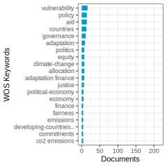
Articles: The study analyzed 3786 articles on sustainable finance from 2000 to 2021, revealing key research topics such as socially responsible investment, climate change, green finance, and the impact of COVID-19, providing valuable insights for scholars and practitioners in understanding and evaluating sustainable finance trends. (WB. Luo et al. 2022) degree: 64 citations: 6
This paper proposes ethical and political principles for a fair international burden-sharing scheme of climate change adaptation costs, suggesting a hybrid approach based on historical responsibility and capacity to pay, with Annex I countries likely bearing the majority of the financial burden. (Dellink et al. 2009) degree: 37 citations: 115
Developed countries provide increasing aid for climate change adaptation to developing countries, prioritizing “particularly vulnerable” nations but also considering good governance and donor interests in allocation, with aid distribution influenced by recipient vulnerability, merit, and donors’ economic and political objectives. (Weiler, Klöck, and Dornan 2018) degree: 71 citations: 111
The EBRD transitioned to investing in Egypt by adapting its operational approach through leveraging symbolic capital and aligning with the European development finance field’s priorities, which shifted towards sustainable investment and geo-economic considerations over democracy and poverty reduction. (Piroska and Schlett 2024) degree: 1 citations: 2
The impacts of the climate crisis on gender inequality, with a focus on South Asia, reveal that women and girls are disproportionately affected due to gender stereotypes and roles, highlighting the necessity of integrating a gender perspective into climate action and urban development policies to safeguard women and girls, including the allocation of climate funds to women-led organizations. (Castelo, Antunes, and Ashrafuzzaman 2024) degree: 1 citations: 0
This paper introduces the ADVENT-NEV model, which utilizes energy and natural capital modeling to determine optimal locations for renewable energy technologies, showing how a natural capital approach can significantly influence the spatial distribution of renewable energy infrastructure, leading to ecosystem service benefits and societal welfare gains. (Delafield, Smith, Day, Holland, Donnison, et al. 2024) degree: 2 citations: 0
This paper analyzes the global distribution of responsibility, capability, and vulnerability to climate change across various sectors, highlighting a double inequity between countries’ contributions to climate change and their vulnerability, primarily due to lower adaptive capacity in poorer nations, strengthening the argument for financial and technical assistance from more responsible countries to the most vulnerable ones. (Füssel 2010) degree: 30 citations: 238
The study explores the evolution of Green Finance (GF) through a bibliometric analysis, identifying enablers such as macroeconomic factors, regulatory structures, and technological advancements, contributing to the understanding of GF and suggesting avenues for future research in the field of nature finance and nature capital. (Bhatnagar and Sharma 2022) degree: 132 citations: 45
Cluster 6-4—:
Documents: 108; Ave. Year: 2019.2; Ave. Citations: 27.9
Based on the texts provided, the common topic appears to be “Climate Change Adaptation Finance and Its Allocation to Vulnerable Countries and Communities.”
Step 1: Main topics of each text: - Vulnerability of fishery-based livelihoods to climate change impacts in coastal Bangladesh - Attributing extreme weather events to climate change - Normative foundations and justice issues in international climate adaptation finance - Channeling loss and damage funding through national social protection systems - Distribution of international climate adaptation finance in the Marshall Islands - Gaps and future directions in addressing the climate change adaptation gap - Allocation of adaptation aid to vulnerable countries based on exposure to climate risks - Clarifying the science-policy interface for indicators of climate vulnerability and adaptive capacity
Step 2: Common keywords across texts relevant to nature finance and nature capital: - Climate change adaptation - Vulnerability - Adaptation finance - Loss and damage funding - Allocation of funds - Indicators of vulnerability - Exposure to climate risks
Step 3: Summary paragraph: The texts collectively examine the issue of financing for climate change adaptation, with a focus on how funds are allocated to vulnerable countries and communities. They discuss the normative foundations and justice considerations in providing adaptation finance, as well as the challenges in measuring vulnerability and adaptive capacity. Case studies from Bangladesh, Marshall Islands, and other vulnerable regions highlight the uneven distribution of adaptation funds and the need for better targeting based on exposure to climate risks. The texts also explore innovative approaches like channeling loss and damage funding through social protection systems and using vulnerability indicators to identify priority areas for adaptation investments.
Step 4: Common topic name: “Climate Change Adaptation Finance and Its Allocation to Vulnerable Countries and Communities”
Articles: Limited research exists on the vulnerability of fishery-based livelihood systems to climate change despite the fact that over half a billion people globally depend on fisheries for their livelihoods, with exposure to various climatic stresses and shocks affecting their ability to subsist; vulnerability is influenced by exposure to floods and cyclones, sensitivity related to reliance on small-scale marine fisheries, and lack of adaptive capacity in terms of physical, natural, and financial capital, with initiatives to reduce vulnerability needing to be multifaceted and context-specific. (Islam et al. 2014) degree: 7 citations: 158
Scientific research over the past 30 years has linked human activities to global climate change, with recent focus on attributing individual extreme weather events to human influence, presenting challenges in philosophical, epistemological, and political realms, particularly regarding climate adaptation investments, loss and damage agendas, and legal liability claims. (Hulme 2014) degree: 2 citations: 126
The text delves into the normative basis for allocating international climate adaptation finance, highlighting the importance of considering nature finance and nature capital in addressing climate change impacts. (Weikmans 2023) degree: 45 citations: 4
This article evaluates 25+ years of adaptation finance under the UNFCCC, examining the evolution of justice issues in providing, distributing, and governing climate change adaptation funds across three distinct eras, aiming to determine if adaptation finance has progressed towards more equitable governance and delivery. (M. Khan et al. 2020) degree: 47 citations: 84
Channeling funding for climate-related loss and damage through national social protection systems in climate-vulnerable countries is crucial for safeguarding development gains and enhancing adaptive capacity, resilience, and climate justice, although challenges such as gaps in coverage within and between countries need to be addressed. (Huber and Murray 2024) degree: 10 citations: 1
Research on climate adaptation finance in the Marshall Islands reveals a mismatch between international finance distribution and vulnerability, with a focus on large-scale urban projects funded by multilateral institutions while rural areas receive smaller scale projects, indicating inadequate and poorly coordinated allocation of adaptation finance. (Incerti and Barnett 2024) degree: 12 citations: 0
The text addresses the critical importance of climate change adaptation, highlighting global gaps in knowledge, capacity, and finance, with a focus on the underfinanced state of global adaptation efforts, the widening finance gap, slow progress, gender equality issues, and challenges in addressing loss and damage, offering recommendations for future actions. (Malik and Ford 2024) degree: 15 citations: 0
We analyze the allocation of aid for adaptation to climate change, finding that countries more exposed to climate change risks receive more support, indicating alignment with global commitments to prioritize aid for particularly vulnerable countries. (Betzold and Weiler 2017) degree: 52 citations: 65
The paper explores the challenges in utilizing vulnerability indicators to measure climate change impacts, highlighting a mismatch between policy demands and academic criticisms, emphasizing the need for a more specific terminology and a tailored approach to address different types of policy problems effectively. (Hinkel 2011) degree: 34 citations: 773
Cluster 6-5—:
Documents: 87; Ave. Year: 2018.9; Ave. Citations: 16.9
The common topic across these texts is the challenges and limitations in delivering climate finance, especially for adaptation and resilience-building, to local communities and developing countries through international funds and mechanisms like the Green Climate Fund (GCF) and Global Environment Facility (GEF).
Some key points:
The texts analyze how funds like the GCF and GEF, despite their mandates to support local adaptation, face barriers in actually delivering finance to the local level due to lack of clear frameworks, transparency issues, and capacity constraints of implementing entities.
There are concerns that an overemphasis on leveraging private finance may create biases towards mitigation over adaptation, undermine local ownership, and add to debt burdens of developing countries.
Institutional governance factors like political stability and corruption control influence how much climate finance countries receive.
There is a recognized need to better align innovative climate finance mechanisms with principles of climate-resilient development to ensure finance effectively supports adaptation needs of local communities.
The overarching topic could be framed as “Challenges in Localizing International Climate Finance for Adaptation and Resilience” in the context of nature finance and natural capital management.
Articles: The article critiques the Green Climate Fund’s limitations in delivering adaptation finance at the local level, highlighting three key barriers: lack of a unified framework for defining ‘local’, limited transparency in funding allocation, and Accredited Entities’ insufficient experience. Recommendations include developing a unified framework, enhancing transparency, and building Accredited Entities’ capacity for local delivery of adaptation finance. (Omukuti et al. 2022) degree: 32 citations: 13
The study examines adaptation actions financed by the Global Environment Facility to address climate change impacts, categorizing 133 projects in 70 countries into ten types of activities, revealing a focus on capacity building, policy reform, and technical measures, highlighting the need for further cost analysis and efficacy evaluation for future global adaptation strategies. (Biagini et al. 2014) degree: 19 citations: 158
Development assistance should complement, rather than substitute for, specific adaptation finance to support and enhance adaptation funding and action under the UNFCCC. (Ayers and Huq 2009) degree: 28 citations: 116
Private finance has the potential to address environmental challenges in a world where natural capital is undervalued; despite growing interest in green finance, empirical evidence on the effectiveness of climate and sustainable development projects is lacking, highlighting the need for coordinated efforts and policy reforms to incentivize long-term investments. (R. Clark, Reed, and Sunderland 2018) degree: 58 citations: 105
The Green Climate Fund (GCF) aims to leverage private finance for climate projects in the Global South but faces challenges, including limited private sector interest, tradeoffs with key principles, and a mitigation bias. Policy recommendations emphasize the need for a focus on high-impact climate projects, increased attention to climate adaptation, and alignment with development cooperation principles. (Kalinowski 2024) degree: 21 citations: 2
This study examines how institutional governance indicators influence climate financing for countries striving to achieve the target of limiting global warming to 1.5 degrees C, finding that political stability enhances climate finance inflows while corruption control deterioration hinders it, emphasizing the importance of improving governance to address climate change challenges and the need for developed economies to aid developing ones in overcoming debt stress to ensure future resilience and prosperity. (Lubinga and Mazenda 2024) degree: 13 citations: 0
This review article explores the alignment between innovative climate finance and climate-resilient development (CRD), highlighting misalignments in sourcing, governance, and allocation that fail to uphold CRD principles, and proposes an expanded, CRD-aligned approach to improve climate finance governance. (Omukuti 2024) degree: 10 citations: 0
Private-sector engagement in climate adaptation and finance in developing countries is crucial, with the domestic private sector having the potential to significantly contribute to adaptation efforts, while international private financing remains limited, emphasizing the need for clear policy frameworks to incentivize private involvement. (Pauw 2015) degree: 29 citations: 47
Cluster 6-6—:
Documents: 85; Ave. Year: 2017.5; Ave. Citations: 26
The main topic of the given texts is “Climate Finance and Sustainable Development”. The key points are:
Several texts discuss financing mechanisms, instruments and actors involved in mobilizing funds for climate change mitigation, adaptation and sustainable development goals like clean energy access.
Texts analyze the equity, fairness and feasibility aspects of climate finance, such as supporting conditional NDCs of developing countries, prioritizing vulnerable nations, and aligning finance with Paris Agreement goals.
Some texts explore how climate finance can drive organizational capacity development of donor agencies and incentivize altruistic behavior towards public goods like climate protection.
The interlinkages between climate finance, sustainable energy transition, health benefits of clean cooking and achieving multiple SDGs are also highlighted.
In summary, the common theme revolves around the role of climate finance and nature capital investments in facilitating an equitable global energy transition, enhancing resilience, and making progress towards the 2030 Sustainable Development Agenda in an integrated manner.
Articles: Clean cooking technologies using cleaner fuels like LPG have the potential to significantly improve health outcomes and contribute more effectively towards climate goals and Sustainable Development Goals than traditional biomass-burning stoves, with analytical approaches aiding in guiding energy interventions for better outcomes. (Rosenthal et al. 2018) degree: 4 citations: 192
Different societies of states develop different fundamental institutions based on their constitutional structures, shaped by shared beliefs about the moral purpose of the state, principles of sovereignty, and norms of procedural justice, which in turn influence the governance of international society. (ReusSmit 1997) degree: 1 citations: 209
This article presents a framework of procedural and distributive justice for international-level climate adaptation finance, emphasizing fairness, equity, and prioritizing the most vulnerable, and evaluates existing finance architectures based on these criteria. (Grasso 2010) degree: 33 citations: 84
A comprehensive green financial reporting framework is essential for Paris Agreement parties to account for nature finance and nature capital in their economic activities. (Sattar et al. 2024) degree: 2 citations: 0
This study examines the capacity of donor agencies for sustainable development by integrating indicators from the aid project management cycle, finding that countries like France, Finland, Belgium, and Luxembourg rank higher, with funding for climate-related projects positively influencing agency capacity. (CX. Wang and Li 2024) degree: 7 citations: 0
The text explores the challenges of mobilizing ‘green’ finance for the global energy transition, focusing on actors, instruments, and political dynamics, aiming to advance understanding and research in nature finance and capital for green transitions. (Babic 2024) degree: 30 citations: 0
The Paris Agreement’s success hinges on nations implementing their Nationally Determined Contributions (NDCs), with many developing countries making their contributions conditional on international support, posing challenges due to unclear conditions and high implementation costs, especially for Least Developed Countries and Small Island Developing States. Recommendations include strengthening cost estimates and investment plans in NDCs to ensure more equitable and feasible support allocation. (Pauw et al. 2020) degree: 30 citations: 62
Altruistic behavior in maintaining the Earth’s climate can be encouraged through public investments and expert information, as individuals tend to reward contributions to climate protection, potentially transforming altruism into personal gain and easing the “tragedy of the commons” dilemma on a larger scale in nature finance and nature capital. (Milinski et al. 2006) degree: 5 citations: 266
Cluster 6-7—:
Documents: 79; Ave. Year: 2019.3; Ave. Citations: 23.6
Based on the texts provided, the common topic appears to be “Financing for Sustainable Agriculture, Food Security, and Climate Resilience”.
Here are the key steps I followed:
Step 1: Understand the main topic of each text - The texts cover issues like carbon sequestration through forestry projects in Africa, barriers to sustainable agribusiness, climate finance governance for resilience in hazard-prone areas, vulnerability assessments for agriculture under climate change, access to landscape finance for small producers, constraints to agricultural finance in developing countries, the role of climate finance in food security, and the impact of EU funding on sustainable transport systems.
Step 2: Find common keywords across texts relevant to nature finance and nature capital - Common keywords include climate finance, sustainable agriculture/agribusiness, food security, resilience, vulnerability, small producers/farmers, developing countries, carbon sequestration, ecosystem services.
Step 3: Summarize the texts in a single paragraph The texts collectively discuss the challenges and opportunities in financing sustainable agricultural practices, climate change adaptation, and improving food security, especially in developing countries. They highlight issues like lack of access to finance for smallholders, high transaction costs, insecure land tenure, gender inequality, and the need for inclusive financing mechanisms. The role of climate finance, international funding, and good governance in promoting resilience and sustainable landscapes is also examined.
Step 4: Give a name for the common topic Based on the summary, a suitable name for the common topic could be “Financing for Sustainable Agriculture, Food Security, and Climate Resilience”.

Articles: Forestry-based carbon sequestration projects in Africa offer potential for both mitigating global warming and financing sustainable development, with East Africa being the preferred destination for carbon investors, though concerns exist regarding ecosystem harm from land use changes and challenges related to land tenure and transaction costs, necessitating stronger community institutions and simplified project guidelines to attract more investments. (Jindal, Swallow, and Kerr 2008) degree: 7 citations: 178
This study presents a systematic review identifying inadequate financial support, post-harvest loss, gender inequality, non-climate-smart policies, and weak institutional controls as major barriers to sustainable agribusiness, offering a valuable framework for addressing these challenges and guiding future research in this area. (Brenya et al. 2023) degree: 30 citations: 13
This article explores climate finance governance in Bangladesh’s hazard-prone riverine islands, emphasizing the importance of climate resilience for char dwellers. Despite a perceived role of climate finance in addressing climate change impacts, governance implementation is lacking, requiring participatory disaster management and village-level contributions for effective long-term development programs to enhance food security and livelihood resilience. (Sarker et al. 2022) degree: 10 citations: 6
This study develops a methodology to assess vulnerability of agriculture and rural livelihoods to climate change at a sub-national scale, applied in Vietnam, Uganda, and Nicaragua, identifying hotspots and driving indicators to inform climate change policies and access climate finance. (Parker et al. 2019) degree: 6 citations: 85
Access to finance is crucial for sustainable landscapes. A literature review on inclusive landscape finance for small-scale producers and local communities in the tropics highlights key factors like landscape governance, financial literacy, access to finance technology, and inclusive finance facilities, while addressing challenges such as limited financial products and perceived high risks by providers and customers. The study proposes components for financial inclusion to enhance integrated landscape finance and guide future research. (Louman et al. 2022) degree: 11 citations: 2
Agricultural finance is crucial for modernizing farming practices and enhancing food security; this study reviews constraints in underdeveloped countries, proposes a comprehensive framework using Qualitative Evidence Synthesis, and suggests a collective approach to address barriers and ensure agricultural sustainability. (FU. Khan et al. 2024) degree: 6 citations: 0
Climate finance in Sub-Saharan Africa may enhance food availability, but falls short in improving access, stability, and utilization, with factors like government readiness and foreign direct investment playing a more significant role in food security. (Phiri and Doku 2024) degree: 7 citations: 0
This research quantifies the impact of EU funds on sustainable transport systems in Romania, highlighting the positive role of European structural and investment funds in promoting regional economic development and underscoring the importance of quality regional governance in achieving sustainable growth and fostering convergence among regions. (Bocaneala et al. 2024) degree: 2 citations: 0
This paper critically examines the challenges in understanding alternative food networks (AFNs) due to inconsistent conceptualization and investigation methods, hindering progress in knowledge of these systems, and provides recommendations for future research to overcome these barriers. (Tregear 2011) degree: 2 citations: 360
Cluster 6-8—:
Documents: 73; Ave. Year: 2018.9; Ave. Citations: 15.8
The main topic of this cluster is the role of climate finance and foreign aid in mitigating carbon emissions and promoting environmental sustainability, especially in developing countries.
Key points:
Several studies analyze the impact of official development assistance (ODA), foreign aid, and dedicated climate finance flows on carbon emissions in recipient developing countries, often finding a positive relationship where more aid leads to higher emissions initially.
However, some studies find that climate finance specifically aimed at mitigation can help reduce emissions, especially when combined with policies like carbon pricing.
There is discussion around how to optimize the allocation and spending of climate finance funds like the Green Climate Fund to maximize emissions reductions and environmental benefits.
Issues like the geographic distribution of climate finance, the balance between mitigation and adaptation funding, and involving the private sector are explored.
The overall theme is assessing whether and how climate finance from developed to developing nations can support sustainable development and decarbonization pathways in recipient countries.
So in summary, the common topic tying these texts together is “The Role of Climate Finance in Promoting Environmental Sustainability and Emissions Mitigation in Developing Countries.”
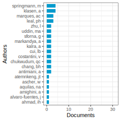
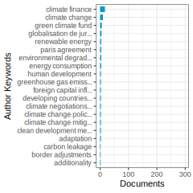
Articles: Better understanding the impact of official development assistance (ODA) on carbon emissions in low- and lower-middle-income countries through a dynamic panel threshold analysis reveals that urbanization plays a crucial role, with ODA leading to increased carbon emissions, particularly in areas with higher urbanization levels. (Q. Wang, Guo, and Li 2022) degree: 17 citations: 67
The study analyzed climate finance flows from multilateral donors to sub-Saharan African countries, identifying central and boundary funding units, highlighting a potential financial risk for countries relying solely on central units, and emphasizing the uneven distribution of climate themes, particularly adaptation finance, in the region, suggesting the establishment of region-wide funding units. (Chukwudum 2024) degree: 9 citations: 0
This research focuses on designing a low-carbon intelligent agriculture system to improve energy efficiency, employing a fixed-effect panel model to analyze farming energy savings along the Yamuna Tributary Commercial Region and highlighting the impact of factors such as workforce literacy and crop losses on energy efficiency, ultimately contributing to the advancement of smart and green technologies in agriculture. (Pydi et al. 2024) degree: 1 citations: 0
Developing artificial intelligence is crucial for reducing carbon emissions inequality, with a more significant impact observed in countries with higher levels of inequality, and further enhanced by climate finance, thus offering concrete policy implications for addressing carbon inequality. (CY. Zhao et al. 2024) degree: 4 citations: 0
CDM host countries are classified based on attractiveness for non-sink projects using cluster analysis, with indicators including mitigation potential, institutional CDM capacity, and investment climate; results show a small number of countries, primarily in Asia and Latin America, attracting most CDM investment, with policy implications discussed. (Jung 2006) degree: 6 citations: 76
This paper investigates the impact of total foreign aid and foreign energy aid on CO2 emissions in India, finding that foreign aid, globalisation, and energy consumption decrease emissions, while foreign energy aid, economic growth, FDI, and remittances increase them, suggesting a focus on total foreign aid for improving environmental quality through long-term investments in clean energy projects. (Mahalik et al. 2021) degree: 7 citations: 59
The article highlights the importance of shifting focus towards the spending side of climate finance, advocating for the adoption of price-based national policies over project-based approaches to better support international climate cooperation, incentivize cost-efficient mitigation, and align with individual country development goals in achieving the targets of the Paris Agreement. (Steckel et al. 2017) degree: 39 citations: 57
Climate finance is a key tool in promoting green growth and reducing carbon emissions, with a greater impact on mitigation than adaptation, especially benefiting small island developing states and economically advanced countries. (CC. Lee et al. 2022) degree: 38 citations: 47
The study examines the Green Climate Fund’s portfolio structure, proposing strategies to enhance its ability to attract both public and private sources of finance, thereby scaling up climate finance by funding non-bankable segments of larger projects. (Amighini, Giudici, and Ruet 2022) degree: 33 citations: 25
Cluster 6-99—:
Documents: 338; Ave. Year: 2016.7; Ave. Citations: 43.7
The main common topic across these texts is exploring ways to finance and enable adaptation to climate change impacts, particularly in developing countries facing debt burdens and biodiversity loss.
Some common keywords and themes include:
- Debt-for-nature swaps as a financing mechanism to protect biodiversity and reduce debt
- COVID-19 fiscal recovery spending and its impact (positive or negative) on climate adaptation and resilience
- Sustainable finance policies like green bonds to support climate mitigation and adaptation in emerging economies like India
- Reducing uncertainty in regional climate predictions to better inform and reduce costs of adaptation
- Projections of increasing flood risks and losses in coastal cities requiring adaptation investments
- Risks of extreme seasonal heat impacting food systems without adaptation
- Framing adaptation as part of broader societal pathways and transformations beyond just short-term responses
The common thread is analyzing different economic, financial and policy approaches to build resilience and adapt to climate change impacts, especially in the context of developing countries facing multiple environmental and fiscal challenges.
Articles: Debt-for-nature swaps can be scaled to protect biodiversity priority areas and reduce debt burden in many emerging economies, with the potential to protect a significant percentage of global biodiversity areas for a fraction of the debt, highlighting the dual benefits of such swaps for nature conservation and sovereign debt relief. (Nedopil, Yue, and Hughes 2024) degree: 6 citations: 3
COVID-19 fiscal spending had a limited impact on climate change adaptation and resilience, with a significant portion potentially benefiting adaptation but falling short of needs, highlighting missed opportunities to advance climate A&R in government policies. (Sadler et al. 2024) degree: 6 citations: 0
This paper examines sustainable finance in India, focusing on mitigating climate change risks and supporting SDGs 2030 through the transition to renewable energy sources and corporate social responsibility, with recommendations for future research on innovative sustainable financing instruments and leveraging technology for sustainability. (R. Kumar et al. 2024) degree: 31 citations: 0
Decision makers and funders in climate research seek to reduce uncertainty in regional climate predictions, with a focus on internal variability, model uncertainty, and scenario uncertainty, emphasizing the economic value of investing in climate science to enhance adaptation strategies. (Hawkins and Sutton 2009) degree: 4 citations: 1823
Growing population, assets, climate change, and subsidence are increasing flood exposure in coastal cities, with estimated average global flood losses projected to increase to US$52 billion by 2050, necessitating adaptation to avoid annual losses exceeding US$1 trillion due to climate change and subsidence. (Hallegatte et al. 2013) degree: 37 citations: 1542
Growing season temperatures are projected to exceed historical records by the end of the 21st century, posing significant risks to agricultural productivity and food security, emphasizing the urgent need for investments in adaptation. (Battisti and Naylor 2009) degree: 8 citations: 1179
Efforts to adapt to climate change have not led to substantial implementation of actions, with a focus on incremental rather than transformative measures; a reconceptualization of adaptation pathways is proposed to integrate incremental and transformative actions within societal change. (Wise et al. 2014) degree: 27 citations: 674
Cluster 7-1—:
Documents: 428; Ave. Year: 2021.7; Ave. Citations: 18.5
The common topic across these texts is the green bond market and its implications for sustainable finance and environmental, social, and governance (ESG) considerations.
Step 1: Understanding the main topic of each text - The texts discuss various aspects of green bonds, which are debt instruments used to finance environmentally friendly projects. - They cover topics like the growth of the green bond market, factors influencing green bond issuance, investor preferences for green bonds, and the impact of green bonds on issuers and shareholders.
Step 2: Common keywords related to nature finance and nature capital - Green bonds, sustainable finance, ESG (environmental, social, and governance), environmental performance, climate-friendly projects, pro-environmental preferences.
Step 3: Summary paragraph These texts explore the rapidly growing green bond market, which has emerged as a crucial financial instrument for promoting sustainable development and addressing environmental concerns. They examine factors driving the issuance of green bonds, such as geopolitical risk, investor preferences, and corporate signaling of environmental commitment. The studies also analyze the impact of green bond issuance on stock prices, institutional ownership, liquidity, and environmental performance of issuers. Overall, the texts highlight the role of green bonds in incorporating ESG considerations into investment decisions and facilitating the transition towards a more sustainable economy.
Step 4: Common topic name The common topic shared by these texts is “The Green Bond Market and its Role in Sustainable Finance and ESG Integration.”

Articles: Sustainable finance, focusing on environmental, social, and governance (ESG) considerations in investment decisions, is a vital component of sustainable development, with research highlighting key themes such as value creation shifts, green bonds, ESG ratings, and financial risks, while also identifying areas for future study. (Zairis, Liargovas, and Apostolopoulos 2024) degree: 50 citations: 0
Geopolitical risk positively influences global green bond issuance, showing nonlinearity and time delays, with all components of the risk index correlating positively with issuance, emphasizing the importance of underwriters’ networks and specific geopolitical jurisdictions in market expansion. (Mertzanis and Tebourbi 2024) degree: 63 citations: 0
This study investigates the factors influencing retail investors’ attitude and intention towards green bond investment, highlighting the importance of intrinsic factors, financial cum environmental performance, issuers’ ratings, and environmental concerns in shaping investors’ behavior, with implications for stakeholders in the green bond market. (Azad, Devi, and Mishra 2024) degree: 78 citations: 0
Corporate green bonds are increasingly used to finance climate-friendly projects, with investors showing a positive response, particularly for first-time issuers and bonds certified by third parties, leading to improved environmental performance and increased ownership by long-term and green investors, supporting a signaling argument for companies’ commitment to the environment. (Flammer 2021) degree: 322 citations: 460
Pro-environmental preferences have a small negative impact on bond prices, as evidenced by a study on green bonds from July 2013 to December 2017, indicating a -2 basis points premium for green bonds compared to conventional bonds, with a more significant effect on financial and low-rated bonds. (Zerbib 2019) degree: 342 citations: 441
The study examines the impact of green bond issuance by firms on shareholder benefits, finding that stock prices react positively to green bonds, with increased institutional ownership and improved stock liquidity, indicating benefits for existing shareholders. (Tang and Zhang 2020) degree: 290 citations: 346
Cluster 7-2—:
Documents: 268; Ave. Year: 2022.3; Ave. Citations: 25
The main topic of the given cluster is “Connectedness and Spillover Effects between Green/Clean Energy Assets and Traditional Financial Markets”.
Step 1: Understanding the main topic of each text - The texts discuss the interconnectedness, co-movement, and spillover effects between green/clean energy assets (like green bonds, clean energy stocks, carbon markets) and traditional financial assets (stocks, bonds, commodities, currencies).
Step 2: Common keywords related to nature finance and nature capital - Green bonds, clean energy stocks, carbon markets, emissions trading systems (ETS), green assets, energy commodities, connectedness, co-movement, spillover effects, diversification benefits.
Step 3: Summarizing the texts The cluster of texts examines the linkages and transmission of risks/returns between green/clean energy investments (green bonds, clean energy stocks, carbon markets) and traditional financial markets (stocks, bonds, commodities, currencies). The studies analyze the co-movement, connectedness, and spillover effects across these markets, considering different time periods, frequencies, and market conditions (normal vs. extreme). The findings suggest varying degrees of connectedness, with green bonds exhibiting stronger links with fixed-income markets than with equity or commodity markets. The studies also explore the diversification potential of green assets and the impact of economic uncertainty on market connectedness.
Step 4: Concluding with the common topic name “Connectedness and Spillover Effects between Green/Clean Energy Assets and Traditional Financial Markets”
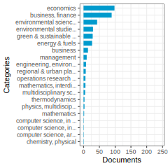
Articles: This study examines the return connectedness between clean/green and dirty energy investments, finding higher connectedness at extreme quantiles and highlighting the influence of macroeconomic conditions, with the US dollar and crude oil market uncertainty playing significant roles in driving return spillovers. (Saeed, Bouri, and Alsulami 2021) degree: 87 citations: 213
This paper analyzes the time-frequency comovement among green bonds, stocks, commodities, clean energy, and conventional bonds from 2008 to 2019, finding that green bonds offer diversification benefits due to their low or negative correlation with stocks and commodities, particularly evident post the GFC 2007-2009. (Nguyen et al. 2021) degree: 169 citations: 213
This study explores the interconnectedness of green bonds, emissions trading systems, and socially responsible investments, analyzing their relationships, predictability, and implications for risk management and market connectedness during turbulent periods, offering insights for diversification and hedging strategies. (Alqaralleh 2024) degree: 37 citations: 1
This study analyzes risk spillover between China’s green financial and energy markets, finding time-varying volatility and heterogeneity in market interactions across different quantiles, with green stock market acting as a transmitter and green bond market as a receiver, impacting risk spillovers under varying economic policy uncertainties. (Gao, Zhou, and Zhao 2024) degree: 37 citations: 0
Green bonds (GBs) show stronger correlation with traditional fixed-income markets than green assets, with short-term spillover effects being the most pronounced, indicating their potential as a safe asset in extreme downturns and normal market conditions, highlighting economic implications for investors, portfolio managers, and policymakers. (NN. Liu et al. 2024) degree: 41 citations: 0
Green bonds co-move with corporate and treasury bond markets, showing weak co-movement with stock and energy commodity markets, offering limited diversification benefits for investors in corporate and treasury markets but significant benefits for stock and energy markets, and are impacted by price spillovers from fixed income markets. (Reboredo 2018) degree: 281 citations: 332
The study examines price connectedness between the green bond market and financial markets, revealing significant spillovers from fixed-income and currency markets, while showing weaker ties to stock, energy, and high-yield corporate bond markets, with implications for environmentally conscious investors in portfolio and risk management. (Reboredo and Ugolini 2020) degree: 212 citations: 231
Cluster 7-3—:
Documents: 131; Ave. Year: 2022.5; Ave. Citations: 16.5
The main topic of the given cluster is the relationship between geopolitical risks, oil price shocks, and the green bond market.
Step 1: Understanding the main topic of each text - The texts explore the causal relationships between oil prices, geopolitical risks (like the Russia-Ukraine conflict), and the performance of green bond markets. - They analyze how factors like oil price volatility, economic policy uncertainty, and climate commitments (NDCs) impact green bond financing for renewable energy projects.
Step 2: Common keywords related to nature finance and nature capital - Green bonds, renewable energy, emissions reduction, climate commitments, geopolitical risks, oil price shocks, economic policy uncertainty.
Step 3: Summarizing the texts The cluster focuses on understanding the dynamics between geopolitical events, energy market volatility, and their impacts on the green bond market, which plays a crucial role in financing renewable energy projects and achieving emissions reduction targets. The studies employ various quantitative methods to assess causal relationships, spillover effects, and dependencies across different time scales and market conditions.
Step 4: Naming the common topic The common topic shared by the articles is “Impacts of Geopolitical Risks and Energy Market Volatility on Green Bond Financing.”
Articles: This study examines the causal links between oil price, geopolitical risks, and green bond market dynamics in the United States from 2013 to 2019, using Granger-causality in quantile analysis to reveal unidirectional causality from geopolitical risk to oil price, and bi-directional causality between oil price and green bond index, particularly at lower quantiles, highlighting the importance of understanding these relationships for policy-making to mitigate oil price shocks and geopolitical risks. (CC. Lee, Lee, and Li 2021) degree: 105 citations: 175
This study investigates the impact of Nationally Determined Contributions (NDCs) to the Paris Agreement on green bond finance for renewable energy, finding that stringent NDCs show significant positive effects on green bond allocations to renewable energy, potentially driving global emissions reductions. (Tolliver, Keeley, and Managi 2020) degree: 93 citations: 114
This study explores the interrelationship between carbon futures and green bond markets using a novel framework based on multiple time scales and market conditions, finding that carbon futures unilaterally influence green bond prices, with positive effects in the medium to long term and erratic performance in the short term, particularly pronounced in extreme market states, contributing to the understanding of eco-economy and carbon finance research. (XH. Ren et al. 2022) degree: 57 citations: 101
We study the spillover effects between oil price shocks and green bonds in developed economies, finding that the US and European green bond markets have a significant impact on return and volatility spillovers, with varying market connectedness over time, particularly during turbulent periods, suggesting potential diversification benefits. (Z. Umar et al. 2024) degree: 41 citations: 0
This study explores how Russian-Ukrainian geopolitical risks impact global green finance by analyzing quantile dependencies, finding a negative association during bearish market conditions in the short term, but a positive one during bullish conditions in the initial memory, emphasizing the need for collaborative efforts to fund green projects and prioritize long-term investments. (F. Ahmed, Islam, and Abbas 2024) degree: 36 citations: 0
This study analyzes the dynamic relationship between economic policy uncertainty (EPU) and green bond index (GBI) across different quantiles and frequencies, finding unstable linkages that change from positive to negative, emphasizing the importance of stable economic policies to boost investor confidence in the green bond market. (KH. Wang 2024) degree: 44 citations: 0
Cluster 7-4—:
Documents: 127; Ave. Year: 2020.9; Ave. Citations: 19.5
Based on the texts provided, the common topic appears to be “Sustainable Finance and Investments”. Here are the key steps I followed:
Step 1: Understand the main topic of each text - The texts discuss various aspects of sustainable/green finance and investments, including socially responsible investing, green bonds, ESG criteria, impact investing, challenges and future directions.
Step 2: Find common keywords across texts relevant to nature finance and nature capital - Common keywords include: sustainable finance, green finance, ESG, impact investing, green bonds, socially responsible investing, climate finance, carbon finance, sustainable investments.
Step 3: Summarize the texts in a single paragraph The texts explore the growing field of sustainable finance and investments, which aims to generate financial returns while also having a positive environmental and social impact. Key topics covered include socially responsible investing strategies that integrate environmental, social and governance (ESG) factors, green financial instruments like green bonds and sukuk, impact investing, challenges like greenwashing and short-term focus, and the potential for sustainable finance to drive sustainable development and address issues like climate change.
Step 4: Conclude by giving a name for the common topic The common topic that emerges from these texts is “Sustainable Finance and Investments”, which encompasses various financial approaches and instruments aimed at promoting sustainability and addressing environmental and social challenges.
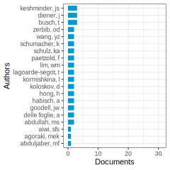
Articles: This article examines the impact of financial markets on sustainable development, emphasizing the integration of ESG criteria into investment decisions while noting a lack of significant progress in actual sustainable business practices, identifying the need for a long-term investment paradigm shift and increased reliability of ESG data to pave the way for new avenues. (Busch, Bauer, and Orlitzky 2016) degree: 78 citations: 187
This study employs big data analytics and machine learning to conduct a comprehensive review of sustainable finance research, identifying key themes, influential articles, and recommendations for future research to advance the field of nature finance and nature capital. (S. Kumar et al. 2022) degree: 94 citations: 136
This scientometric review explores sustainable investments by analyzing over 1,000 articles from 1991 to 2023, identifying key themes such as financial performance, ESG-based portfolios, and investor behavior, and highlighting emerging research areas like SDG financing and governance in sustainable investments, offering valuable insights for future research in this field. (Singhania, Bhan, and Chadha 2024) degree: 48 citations: 1
This paper provides a comprehensive review of Green Sukuk (GS), an emerging financial tool within the realms of Islamic finance, socially responsible investing, and sustainability agendas, aiming to synthesize existing knowledge into thematic clusters, identify research gaps, and offer guidelines for future studies in the field. (Alkadi 2024) degree: 19 citations: 0
This study compares the nonlinear relationship between carbon emission future price and green bonds, conventional sovereign bonds, and Islamic bonds, finding that green bonds, especially those with extra-financial screening, exhibit stronger linkages with the carbon market than other bond types, suggesting potential for detecting greenwashing in environmentally friendly assets. (Asl and Shahzad 2024) degree: 37 citations: 0
Sustainable finance and investment (SFI) is crucial for sustainable global development, with current research highlighting the fragmented nature of the SFI literature and the need for a clearer definition, player identification, and research agenda to address challenges such as under-theorization and lack of evidence on societal and environmental impacts. (Cunha, Meira, and Orsato 2021) degree: 81 citations: 62
This study examines how exclusionary ethical investing influences corporate behavior in a risk-averse setting, finding that green investors avoiding polluting firms can raise the cost of capital for those firms, potentially driving them to become socially responsible if overcomes the cost of reform. (Heinkel, Kraus, and Zechner 2001) degree: 129 citations: 555
Cluster 7-99—:
Documents: 100; Ave. Year: 2019.3; Ave. Citations: 18.2
Based on the texts provided, the common topic appears to be “Financing and Valuation of Green/Sustainable Investments and Projects in the Context of Nature Capital”.
Here are the key steps I followed:
Step 1: Understand the main topic of each text - The texts cover topics like green bonds, financing renewable energy projects, impact of economic factors on green investments, role of insurance in climate risk, and valuation methods for sustainable projects.
Step 2: Find common keywords across texts relevant to nature finance and nature capital - Green bonds, green investments, renewable energy, climate risk, environmental equities, sustainable development, valuation methods
Step 3: Summarize the texts in a single paragraph The texts discuss various financial instruments (green bonds, insurance) and valuation methods to facilitate investments in sustainable projects like renewable energy that help mitigate climate change impacts. They analyze how economic factors like the US dollar, stock markets, and energy prices influence the performance of these green investments. The role of government support and policies in de-risking and incentivizing a transition to clean energy is also examined.
Step 4: Give a name for the common topic Financing and Valuation of Green/Sustainable Investments and Projects in the Context of Nature Capital
Articles: The US dollar impacts the diversification potential of green bond investments differently across markets, with its appreciation strengthening the correlation between green and conventional bond markets while weakening the link with energy commodity and stock markets, highlighting the importance of considering currency effects in environmentally-friendly investment strategies. (Kocaarslan 2021) degree: 31 citations: 20
Governments and Multilateral organizations can de-risk green investments by supporting the issuance of green bonds, as revealed by empirical beta pricing and yield estimates, which show lower capital costs and improved performance of renewable energy firms compared to private green bonds and conventional energy bonds. (Braga, Semmler, and Grass 2021) degree: 25 citations: 19
The war in Ukraine has led to a temporary rise in prices and could drive a lasting transition towards sustainable energy, climate, and food systems. (Tollefson 2022) degree: 1 citations: 103
The text reviews current and innovative financing instruments for energy renovations in residential buildings in the EU to address barriers hindering comprehensive renovations and increase investments in building energy efficiency to align with the Paris Agreement goals for net-zero CO2 emissions by 2050. (Bertoldi et al. 2021) degree: 14 citations: 91
This study uses machine learning models to analyze the influence of major markets on the performance of U.S. municipal green bonds, finding that during the COVID-19 crisis period, stock and energy commodity markets have a greater impact compared to the conventional bond market, highlighting the interaction with macroeconomic risks. (Kocaarslan and Soytas 2023) degree: 29 citations: 4
Researchers explore the impact of social media sentiment on environmental investment during periods of crisis, finding that sentiment is a risk factor affecting asset pricing, particularly evident during the Covid-19 pandemic, emphasizing the importance of information from social networks in this context. (De Sousa-Gabriel et al. 2024) degree: 4 citations: 2
The text discusses the increasing challenges of climate change and the need for immediate measures to mitigate its effects, focusing on the potential of climate catastrophe insurance as a promising solution, and outlining future research directions in this area. (Nobanee and Nghiem 2024) degree: 6 citations: 0
Valuation is a critical financial analytical skill for general managers, with traditional approaches such as the weighted-average cost of capital (WACC) now being considered insufficient, as newer tools like adjusted present value, option pricing, and equity cash flows have proven to be more effective in addressing various valuation challenges. (Luehrman 1997) degree: 2 citations: 165
Cluster 8-1—:
Documents: 139; Ave. Year: 2020.9; Ave. Citations: 18.9
The common topic across these texts appears to be the financing and governance of climate change mitigation and adaptation efforts, particularly in urban areas. Some key points:
Several texts discuss innovative financing mechanisms like green bonds, environmental impact bonds, and urban climate finance initiatives aimed at mobilizing private capital for climate projects.
There is a focus on the spatial and geographic inequalities in how climate finance is distributed, with some regions/cities receiving more investment than others.
The texts examine the practical challenges, political concerns, and power dynamics surrounding climate finance governance structures involving public, private and blended financing models.
The persistence of colonial-era investments and their long-term impacts on regional inequalities is also explored in one text, highlighting the importance of historical context.
There are critiques of market-based, debt-financing approaches to climate action versus more public, state-led “Green New Deal” models.
In summary, the overarching topic could be framed as: “The Geographies and Governance of Urban Climate Finance” situating it within the broader context of nature finance and natural capital by examining how financial flows shape environmental outcomes and sustainability across different spaces.

Articles: This paper examines the enduring impact of colonial public investments in French West Africa on current regional inequalities, finding that early investments, particularly in education, have had significant and lasting effects on present outcomes, with regions receiving more investments in the past continuing to do so. (Huillery 2009) degree: 1 citations: 182
This paper critiques the development of eco-cities as solutions to environmental challenges, emphasizing the inequities that prevent their benefits from reaching the most vulnerable populations and calling for a closer examination of the socio-economic and environmental implications of such projects. (Caprotti 2014) degree: 5 citations: 115
This article introduces “plumbing poverty” as a concept to analyze the intersection of infrastructure, space, and social inequality in US household water insecurity, revealing spatially clustered and racially influenced patterns of plumbing incompleteness that demand prioritized attention in global measurement tools. (Deitz and Meehan 2019) degree: 1 citations: 112
This article explores geographical disparities in urban climate finance, emphasizing how uneven investments exacerbate inequalities in cities’ abilities to address climate change, focusing on Mexico’s urban landscapes to illustrate how urban climate finance initiatives shape global investment patterns in climate action. (Hilbrandt and Grafe 2024) degree: 18 citations: 3
Municipal finance in US cities significantly influences and is influenced by climate action and justice efforts, highlighting the crucial role of city fiscal decisions in shaping urban climate investments and the potential for integrating climate and justice considerations into municipal finance practices. (Diezmartinez and Gianotti 2024) degree: 25 citations: 1
Environmental impact bonds (EIBs) are innovative financial models within impact investing, gaining attention in environmental finance research, lacking complete understanding, this article presents a landscape overview, identifying challenges, research gaps, and future directions for academics in this niche. (a. Trotta 2024) degree: 19 citations: 0
Climate finance in the Green Economy raises questions about the extent to which it contributes to a fictive economy through performativity. (Bracking 2015a) degree: 49 citations: 64
This paper examines the practical and political implications of utilizing green bonds to address the global environmental crisis, emphasizing the need for further research on green finance to understand the true impact and challenges of this financial instrument. (R. Jones et al. 2020) degree: 58 citations: 58
This article critically reviews the governance of climate finance, highlighting the shift towards decentralized structures and market-oriented financing, which may pose challenges to the efficacy of climate finance, calling for further research and a return to public-authored finance and governance. (Bracking and Leffel 2021) degree: 47 citations: 34
Cluster 8-2—:
Documents: 117; Ave. Year: 2017.1; Ave. Citations: 64.6
Based on the texts provided, the common topic appears to be the financialization and commodification of nature and biodiversity conservation efforts.
Step 1: Main topics of each text - Promises and paradoxes of for-profit biodiversity conservation - Economic valuation of nature as a strategy for conservation - Climate capitalist projects and their potential for repair/reparations
- Use of metrics and indicators in sustainable finance - The rise of “prosumer capitalism” and user-generated content - Land and resource grabs driven by environmental agendas (“green grabbing”) - Commodification of nature through “green developmentalism” - Challenges in commodifying ecosystem services for markets - Financialization of environmental conservation
Step 2: Common keywords across texts related to nature finance and natural capital: Commodification, valuation, markets, capital, finance, indicators, metrics, ecosystem services, green grabbing, green developmentalism, biodiversity conservation
Step 3: Summary paragraph The texts examine the increasing trend of commodifying and financializing nature and biodiversity conservation efforts. This involves putting economic valuations on natural resources and ecosystem services, creating new environmental markets and financial instruments, and attracting investment from the private sector and financial institutions. While promoted as a way to harness market forces for conservation, critics argue this approach oversimplifies complex ecological systems, reinforces capitalist exploitation of nature, and forecloses more transformative solutions. Key concepts include for-profit conservation, economic valuation of nature, climate capitalism, sustainable finance metrics, green grabbing of land and resources, and the financialization of conservation itself.
Step 4: Common topic name The financialization and commodification of nature conservation

Articles: Despite the enthusiasm around for-profit biodiversity conservation, private capital in this sector remains limited and geographically restricted, challenging its effectiveness as a conservation financing strategy and raising questions about its impact on biodiversity loss narratives and neoliberal influences within the conservation field. (Dempsey and Suarez 2016) degree: 47 citations: 139
Advocates of economic valuation of nature argue it enhances awareness of the ecological crisis by framing nature as capital, yet this approach lacks practical application and fails to produce significant conservation results, prompting an examination of the fixation on nature valuation within conservation discussions. (Maechler and Boisvert 2024) degree: 8 citations: 3
This paper explores the reparative potentials of climate capitalist projects through two cases: financialised climate infrastructure in Jakarta and a cooperative energy provider in Australia, demonstrating how tensions and ambiguities in these projects can lead to forward-looking programs towards reparative climate futures. (Webber 2024) degree: 7 citations: 1
In sustainable finance, there is a push for metrics to align investments with sustainability goals, with a focus on bonds like green, forest, and impact bonds, highlighting the importance of ‘indicator literacy’ to understand the spatial and scalar implications of measuring outcomes. (Eyre et al. 2024) degree: 4 citations: 0
This article discusses the emergence of prosumer capitalism, where individuals engage in both production and consumption, leading to a shift towards unpaid labor, free products, and a new abundance, potentially signaling the rise of a new form of capitalism in the digital age. (Ritzer and Jurgenson 2010) degree: 1 citations: 1415
‘Green grabbing’ is a growing global phenomenon where land and resources are appropriated for environmental purposes, whether for biodiversity conservation, biocarbon sequestration, biofuels, or ecotourism, involving diverse actors and novel forms of valuation, commodification, and marketization of nature, raising questions on the implications for ecosystems, landscapes, and livelihoods. (Fairhead, Leach, and Scoones 2012) degree: 33 citations: 658
New environmental institutions like the CBD and the ‘green’ World Bank promote ‘green developmentalism’ by treating nature as a global currency, leading to market-based solutions but potentially reinforcing global elite dominance, countered by indigenous and NGO coalitions advocating for environmental justice. (McAfee 1999) degree: 39 citations: 566
Ecosystem scientists face challenges in certifying the value of ecosystem services for market commodification, with the need to translate ecological measurements into tradable commodities posing a potential crisis in expanding capital relations. (Robertson 2006) degree: 40 citations: 413
This paper explores the financialisation of environmental conservation, highlighting the trend of financiers turning to conservation as a new investment frontier, reshaping conservation practices using financial terms, and opening up a lucrative market based on tradable indicators of environmental impact. (Sullivan 2013) degree: 69 citations: 345
Cluster 8-3—:
Documents: 98; Ave. Year: 2017.3; Ave. Citations: 26
The main topic shared by these texts is “Marine Conservation Finance”.
The key steps that led to this conclusion are:
Step 1: Understanding the main topic of each text - The texts discuss various financial mechanisms and instruments aimed at funding marine conservation efforts, such as user fees, bonds, impact investments, and valuation of ecosystem services.
Step 2: Common keywords across texts relevant to nature finance and nature capital - Marine protected areas, blue carbon, blue bonds, blue finance, marine conservation funding, willingness to pay, ecosystem services, sustainable financing
Step 3: Summarizing the texts in a single paragraph These texts explore different financial approaches to support marine conservation and sustainable use of ocean resources. They cover topics like using fees, bonds, and impact investments to fund marine protected areas, coastal restoration projects, and biodiversity conservation efforts. The valuation of ecosystem services provided by marine environments is also discussed as a way to quantify the benefits and make a case for increased investment in ocean conservation.
Step 4: Giving a name to the common topic Based on the focus on financing mechanisms and instruments specifically geared towards marine and coastal conservation, the overarching topic can be summarized as “Marine Conservation Finance”.
Articles: Contingent valuation surveys conducted with foreign visitors to the Annapurna Conservation Area, Nepal, revealed a willingness to pay a higher entry fee than the current rate, with mean and median values of 69.2 and 74.3 USD, respectively, driven by factors such as bid amount, family size, satisfaction, guide use, and group size, indicating potential for increased park finance and local development through entry fee adjustments. (Baral, Stern, and Bhattarai 2008) degree: 8 citations: 180
Recommendations are provided to enhance ocean sustainability through stronger integration of sciences, improved science-policy interfaces, new partnerships, a finance system, and enhanced education, aiming to establish ocean science as a pillar of sustainability transformations. (Claudet et al. 2020) degree: 3 citations: 152
Blue bonds are emerging financial instruments aiming to fund sustainable development and conservation projects in ocean and coastal areas, with a focus on delivering positive environmental and social impacts alongside financial returns, yet there is a lack of academic scrutiny on their effectiveness, necessitating a comprehensive evaluation leveraging insights from green bonds. (Thompson 2022) degree: 27 citations: 16
This study explores the potential of user fees as sustainable financing mechanisms for marine protected areas, focusing on scuba divers’ willingness to pay in the Bonaire National Marine Park, finding that the current US$10 user fee could be substantially increased without negatively impacting tourism, providing a viable option for funding park operations. (Thur 2010) degree: 17 citations: 145
This article analyzes impact investing in biodiversity conservation through conventional bonds and impact bonds, assessing the financial and impact risks associated with projects aiming to promote forest management, sustainable agriculture, endangered species protection, ecosystem services, and nature-based climate solutions like REDD+. (Thompson 2023) degree: 20 citations: 7
The Rhino Bond, the first wildlife conservation bond dedicated to protecting the black rhinoceros, highlights the intersection of finance and biodiversity conservation, with stakeholders facing challenges in balancing financial interests with conservation goals, potentially limiting the scope of viable investment opportunities in conservation finance. (Medina and Scales 2024) degree: 4 citations: 1
Recent research in blue finance has shown progress, with a study analyzing 223 articles to identify growth phases, key countries, institutions, themes, and hotspots, providing valuable insights for advancing economic growth and ocean sustainability. (D. Wang, Zhang, and Chen 2024) degree: 19 citations: 0
This paper examines blue carbon ecosystems in Seychelles as a case study for small island developing states, highlighting the importance of accurate carbon inventories, monitoring, and sustainable financing mechanisms to harness their potential for climate change mitigation and sustainable development. (Bennett et al. 2024) degree: 3 citations: 0
This paper highlights the challenges in marine conservation funding and proposes solutions to address the inadequate finance, under-developed mechanisms, disconnect from conservation planning, environmental side-effects of economic activity, and lack of specialized expertise, emphasizing the need for multi-sector collaboration to sustain marine ecosystem services. (Bos, Pressey, and Stoeckl 2015) degree: 22 citations: 54
Cluster 8-4—:
Documents: 85; Ave. Year: 2016.8; Ave. Citations: 50
The common topic across these texts is the relationship between capitalism and the environment, particularly the commodification and marketization of nature under capitalism. Some key points:
Carbon markets and other market-based mechanisms like carbon credits and catastrophe bonds have emerged as capitalist tools for addressing environmental issues like climate change and natural disasters.
There is critique from a Marxist perspective that these market approaches do not fundamentally transform capitalist dynamics, but rather represent new modes of capital accumulation by commodifying and exploiting nature.
Advanced measurement technologies allow more “natural capital” like forest carbon to be quantified and traded as commodities.
The sustainable development paradigm is based on an economic rationality that transforms nature into an “environment” to be efficiently managed and capitalized upon.
There are debates around whether Marxist political economy approaches or actor-network theory better conceptualize the capitalist commodification of nature.
In summary, the overarching topic is the contradictions and tensions between capitalism as an economic system driven by capital accumulation, and environmental sustainability goals that aim to preserve or sustainably manage nature. The commodification and marketization of nature emerges as a central issue.
The common topic could be summarized as: “Capitalism and the Commodification of Nature: Tensions and Critiques”
Articles: The concept of carbon markets within a changing capitalist system highlights the importance of incorporating nature finance and nature capital into economic strategies to address climate change. (Bryant 2019) degree: 28 citations: 19
This paper critiques the notion that carbon markets could lead to a transformation of capitalism into a greener, more sustainable system, arguing instead that they perpetuate ecological commodification and uneven development, particularly benefiting elites in emerging economies through sub-imperial expansion. (Böhm, Misoczky, and Moog 2012) degree: 23 citations: 134
In Scotland, companies are using Advanced Measurement Technologies (AMTs) to measure forest carbon with unprecedented detail, allowing for the creation of more carbon credits by shifting knowledge practices rather than increasing actual carbon sequestration, posing a novel form of mitigation deterrence in environmental governance. (Stanley 2024) degree: 6 citations: 1
This paper presents earthquake bond pricing models incorporating inconstant event intensity and maximum strength of extreme earthquakes, offering insights for more sustainable earthquake funding by linking insurance to capital market bonds. The models simplify pricing challenges by focusing on extreme earthquakes and conducting sensitivity analyses using real earthquake data. (Ibrahim et al. 2024) degree: 1 citations: 0
Contemporary corporations navigate between shareholder expectations and sustainability imperatives, managing institutional incomplementarities by adopting sustainability as a poly-contextural organizational practice through practices such as financialization, marketization, and responsibilization. (Senge and Dabrowski 2024) degree: 1 citations: 0
Recent Marxist writings on the commodification of nature in capitalist societies are contrasted with non-Marxist perspectives, emphasizing the need for a clearer understanding of the specific impacts of capitalist commodification on ecosystems and bodies, as well as a more explicit articulation of the normative criticisms of nature’s commodification. (Castree 2003) degree: 25 citations: 603
This paper examines the economic underpinnings of sustainable development, highlighting how it transforms the perception of nature into a resource to be managed for profit, particularly impacting developing countries through the lens of biotechnology, biodiversity, and intellectual property rights. (Banerjee 2003) degree: 11 citations: 464
This paper challenges the perceived conflict between eco-Marxism and actor-network theory (ANT) in understanding society-nature relations, suggesting a nuanced approach that combines elements of both theories to critique capitalist human-nature interactions. (Castree 2002) degree: 9 citations: 353
Cluster 8-5—:
Documents: 80; Ave. Year: 2016.8; Ave. Citations: 27.9
The common topic across these texts appears to be “Green Capitalism and its Critique in Relation to Nature and Climate Change”.
The key points are:
The texts discuss the concept of “green capitalism” - attempts to address environmental issues like climate change through market-based solutions and technological innovations within a capitalist framework.
They analyze the role of corporations, entrepreneurs, financial institutions (like “green banks”) in promoting green capitalism approaches like carbon trading, renewable energy investments, environmental auditing etc.
The texts critique green capitalism from a political ecology/Marxist perspective, highlighting issues like - the drive for endless capital accumulation, commodification of nature, widening inequality, lack of systemic change etc.
Concepts like “metabolic rift”, disruption of natural cycles, ecological feedbacks are used to analyze the tensions between capitalism and environmental sustainability.
The emergence of a “corporate-environmental food regime” based on auditing and commodification of food systems is also discussed as an example of green capitalism.
The texts explore whether green capitalism can provide real solutions to environmental crises or if more radical transformations are needed in our socio-economic systems.
So in summary, the common thread is a critical examination of the concept of green capitalism from the perspective of political ecology, environmental sociology and nature-society geography.
Articles: This paper explores the emergence of environmental food auditing by large food retailers as a new governance mechanism within global food regimes, focusing on the dynamics of social legitimacy and ecological feedbacks to potentially shift towards more sustainable ‘Food from Somewhere’ relations, while acknowledging the need to address regressive ‘Food from Nowhere’ dynamics to ensure overall progress in global food relations. (Campbell 2009) degree: 2 citations: 203
Green capitalism, using free-market mechanisms to address climate change, is critiqued through a more-than-human perspective, revealing unintended consequences and proposing alternative solutions, as exemplified by the electric car. (Fox 2023) degree: 6 citations: 6
Richard Branson’s significant financial pledge to fight climate change and his investments in carbon sequestration technologies are used as a case study to critically analyze the intersection of environmentalism and capitalism, highlighting the challenges of tethering environmental goals to a growth-driven economy. (Prudham 2009) degree: 28 citations: 110
Solar geoengineering research receives funding from US financial and technological capital and billionaire philanthropists, positioning it as a potential tactic for market-driven decarbonization and a tool for class compromise between fossil and climate capital. (Surprise and Sapinski 2023) degree: 11 citations: 4
Interest in the relationship between economy and environment grew post-global financial crisis, leading to proposals like ‘Green New Deal’, ‘Green Stimulus’, and ‘Green Economy’, collectively known as ‘green capitalism’, with varying state regulation and ecological modernization models, allowing for targeted critiques and constructive debates on sustainable economies. (Tienhaara 2014) degree: 15 citations: 90
Green Banks, as hybrid institutions combining public and private logics, play a crucial role in mobilizing private investment for the transition to net zero emissions by creating value beyond financial metrics, including knowledge sharing, social equity benefits, and enhanced energy security, which are often overlooked in current evaluation approaches. (Lyons and White 2023) degree: 4 citations: 0
This article discusses the significance of incorporating Marxian value theory into nature-society geography research to understand the relationships between value, nature, and capitalism, suggesting that value can serve as a unifying analytical framework for the subfield. (Kay and Kenney-Lazar 2017) degree: 17 citations: 59
This paper explores the emergence of a corporate-environmental food regime within the restructuring of capitalism, influenced by social movements and interpretive frames, potentially widening the gap between privileged and poor consumers through the selective appropriation of demands from environmental and social movements by agrofood corporations. (Friedmann 2005) degree: 7 citations: 392
The text discusses the impact of global capitalism on the carbon cycle and climate change, emphasizing the concept of metabolic rift to understand the disruption of natural processes by human activities, particularly within the context of an expanding capitalist system. (B. Clark and York 2005) degree: 15 citations: 334
Cluster 8-99—:
Documents: 395; Ave. Year: 2017.7; Ave. Citations: 41.5
Based on the texts provided, the common topic appears to be the role of finance and economic instruments in environmental conservation and addressing climate change. The key points are:
The potential of using Islamic financial instruments like green sukuk (bonds), zakat (obligatory charity), and waqf (endowments) to fund climate finance projects in Indonesia.
The application of financial derivatives as tools for biodiversity conservation and managing environmental risks.
China’s Belt and Road Initiative and whether its “green” investments truly promote sustainable development or amount to “greenwashing”.
The contradictory effects of neoliberal policies and market-oriented restructuring on environmental governance across different geographic scales.
The limits of using biodiversity offsets and ecological restoration to compensate for environmental damage from development projects.
The need to critically examine the assumptions and evidence behind using market-based instruments for environmental goals.
Summarizing these themes, a potential topic name could be:
“The Promises and Pitfalls of Market-Based Instruments for Environmental Conservation and Climate Action”
This captures the common thread of evaluating the role of financial tools, market mechanisms, and economic policies in addressing environmental challenges, while recognizing both the opportunities and limitations of this approach.
Articles: Sustainable finance requires innovative assurance mechanisms to address the growing importance of nature capital. (Quatrini and Costanza 2024) degree: 10 citations: 1
This study explores the potential of Islamic climate finance in Indonesia, mapping Islamic finance instruments for green initiatives through document analysis and interviews, highlighting the role of green sukuk in funding eco-friendly projects and emphasizing the importance of sustainable financial practices in the country. (Faizi, Kusuma, and Widodo 2024) degree: 10 citations: 0
The paper discusses the potential of using derivatives from finance to contribute to biodiversity conservation, including the use of tools like energy and weather derivatives, despite challenges such as pricing biodiversity elements and assessing loss. (Sravan and Mishra 2024) degree: 15 citations: 0
This review article examines the Belt and Road Initiative (BRI) through a political ecology lens, emphasizing the importance of understanding the politics behind green development within the initiative and how it benefits different regions, particularly in terms of green finance, energy, and cooperation mechanisms. (Harlan 2021) degree: 18 citations: 58
This essay explores the critical geographical perspective on “actually existing neoliberalism,” focusing on the path-dependent nature of neoliberal reform projects and the strategic importance of cities in reshaping political-economic space, emphasizing the contextual embeddedness of neoliberal restructuring within various geographical scales. (Brenner and Theodore 2002) degree: 12 citations: 2412
This essay argues for historical context in understanding capitalism’s environmental crises, proposing the concept of the Capitalocene as a system of power and profit intertwined with nature, challenging the Anthropocene discourse and emphasizing the role of capitalism in shaping ecological crises throughout history. (Moore 2017) degree: 24 citations: 720
Understanding resilience is crucial for supporting individuals affected by adversity, with key factors including positive adaptation and the dynamic interaction of personal, biological, and environmental sources of resilience, emphasizing its significance in clinical and public health contexts. (Herrman et al. 2011) degree: 4 citations: 788
Biodiversity offset policies rely heavily on ecological restoration to compensate for biodiversity losses, but evidence suggests that current expectations for ‘no net loss’ are often unsupported, highlighting the need for improved policy design and closer collaboration between restoration ecologists and policymakers. (Maron et al. 2012) degree: 21 citations: 420
Cluster 9-1—:
Documents: 94; Ave. Year: 2019.7; Ave. Citations: 32.6
Based on the texts provided, the common topic appears to be “Assessing Livelihood Capitals and Their Influence on Climate Change Adaptation Strategies for Rural Communities”.
Here are the key steps I followed:
Step 1: Understand the main topic of each text - The texts discuss assessing the vulnerability and adaptive capacity of rural/farming communities to climate change impacts, particularly through the lens of the sustainable livelihood framework and different capitals (human, natural, financial, social, physical).
Step 2: Find common keywords across texts relevant to nature finance and nature capital - Livelihood capitals (human, natural, financial, social, physical) - Climate change vulnerability and adaptation - Rural/farming communities - Sustainable livelihoods
Step 3: Summarize the texts in a single paragraph The texts examine how different livelihood capitals (human, natural, financial, social, physical) influence the vulnerability and adaptive capacity of rural/farming communities to climate change impacts. They assess which capitals enable or constrain adoption of climate change adaptation strategies. The sustainable livelihood framework is commonly used to analyze these relationships between capitals, climate risks, and sustainable livelihoods.
Step 4: Conclude by giving a name for the common topic Assessing Livelihood Capitals and Their Influence on Climate Change Adaptation Strategies for Rural Communities
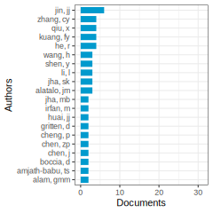

Articles: This study assessed climate change vulnerability and adaptation for Himalayan communities using Sustainable Livelihood Framework-based indicators, including the Climate Vulnerability Index (CVI) and Current Adaptive Capacity Index (CACI), revealing varying levels of vulnerability across different forms of capital and suggesting targeted measures for addressing vulnerabilities in rural livelihoods. (Pandey et al. 2017) degree: 31 citations: 177
The study assessed the livelihood status and vulnerability of farm households in coastal and non-coastal regions of Odisha, India, finding that diversified livelihood options and climate-smart innovations, supported by government assistance and strong partnerships, can enhance resilience to climate change impacts among farmers. (Das, Ansari, and Ghosh 2024) degree: 4 citations: 2
This study explores the impact of various livelihood capitals on farmers’ adoption of climate-smart agriculture practices (CSAPs) in the Jianghan Plain, China, finding that different capitals have varying effects on the adoption of specific CSAPs, with natural and physical capitals playing crucial roles in promoting certain practices. (Tong et al. 2024) degree: 10 citations: 1
Enhancing rural household livelihood sustainability in developing countries, particularly in rural China, is crucial in the face of various shocks and stressors. Previous studies have overlooked the intricate relationships between risks, livelihood capital, geographical challenges, and sustainability, which this study addresses through a conceptual framework and empirical analysis using 6752 household samples. Results show that external shocks and geographical disadvantages negatively impact financial and mental capitals but positively affect natural capital, ultimately influencing livelihood sustainability, while internal stressors positively influence various capital types, promoting productivity and enhancing sustainability. (HP. Cui, Wang, and Zheng 2024) degree: 10 citations: 0
This study examines the impact of different forms of livelihood capital on rural farmers’ adoption of climate change adaptation strategies in Wushen Banner, China, finding that natural and social capital positively influence farmers’ decisions, while human and physical capital tend to promote adaptation strategies. (Kuang et al. 2019) degree: 28 citations: 68
This study in the Nile Basin of Ethiopia investigates farmers’ adaptation methods to climate change, highlighting factors influencing their choices such as education level, gender, wealth, access to resources, and information constraints, with identified barriers including lack of information and financial constraints. (Deressa et al. 2009) degree: 57 citations: 611
This paper highlights the importance of recognizing and addressing social barriers to adaptation in the context of climate change, emphasizing the role of cognitive, normative, and institutional factors in influencing adaptive capacity, particularly for marginalized groups, and stressing the need for strategic planning and action at national and local levels. (L. Jones and Boyd 2011) degree: 11 citations: 270
Cluster 9-2—:
Documents: 93; Ave. Year: 2014.9; Ave. Citations: 48.6
Based on the texts provided, the common topic appears to be:
Social Capital and Sustainability
The key points that support this topic are:
Several texts discuss the role of social capital (trust, norms, networks) in promoting sustainable environmental management, biodiversity conservation, and resilient rural livelihoods after disasters.
Social capital is examined alongside other forms of capital like natural capital, human capital, and financial capital in relation to sustainability outcomes.
The texts analyze how building and leveraging social capital through collective action, community groups, social learning can lead to positive environmental and sustainability outcomes.
The bibliometric analysis focuses specifically on mapping the literature on social capital, human capital and their links to sustainability.
Common keywords across the texts include social capital, human capital, natural capital, sustainability, biodiversity conservation, resilience, rural livelihoods, collective action, community groups.
So in summary, the overarching topic tying these texts together is an exploration of the critical role that social capital and its interactions with other capital assets plays in achieving environmental sustainability goals across different contexts like urban tourism, rural development, biodiversity protection and disaster recovery.

Articles: This paper examines pro-environmental behaviors of tourists in urban destinations, focusing on recycling, green transport, sustainable energy/material use, and green food consumption in Melbourne, Australia. It highlights the importance of habitual behavior and available facilities in influencing these behaviors, offering policy recommendations for promoting urban tourism sustainability. (Miller, Merrilees, and Coghlan 2015) degree: 1 citations: 214
This paper explores the integration of resilient rural livelihoods (RRL) and sustainable rural livelihoods (SRL) in post-disaster community relocation, highlighting the importance of natural capital and financial capital in promoting long-term sustainability and resilience in rural households. (XM. Yang et al. 2023) degree: 6 citations: 5
This paper explores the activation of linking social capital in transitioning environmental governance in Chilean fishing communities, highlighting the importance of leadership, shared visions, and cooperation for successful governance transitions amidst environmental change. (Ebel, Burnham, and Reynolds 2023) degree: 3 citations: 2
Resource mismatch in China’s marine economy hinders total factor productivity growth, with natural capital distortion having the most significant impact, highlighting the importance of correcting resource allocation to boost output efficiency and TFP, especially in regions like Shanghai, Zhejiang, Fujian, Shandong, and Guangdong. (CZ. Sun et al. 2024) degree: 5 citations: 0
Development assistance has overlooked the impact of social and human capital on environmental outcomes, despite the significant growth of groups engaging in collective action related to natural resource management, highlighting the need for policy support. (Pretty and Ward 2001) degree: 74 citations: 1142
Acknowledging the value of local communities for biodiversity conservation, social capital, comprising trust, reciprocity, and shared norms, plays a crucial role in shaping individual actions to achieve positive outcomes, particularly in agricultural and rural conservation programs addressing agrobiodiversity, nearby nature, and protected areas. Initiatives focusing on building social capital have proven effective in enhancing rural people’s understanding of biodiversity, fostering new social norms and institutions, and promoting positive biodiversity outcomes over broad areas, underscoring the importance of investing in social capital formation and balancing biological and social aspects in conservation efforts. (Pretty and Smith 2004) degree: 20 citations: 527
This study examines the evolving academic interest in social and human capital in relation to sustainability, highlighting a lack of literature on natural capital and financial capital. Through bibliometric analysis of 635 references, it visualizes trends, impacts, and key players in the field, offering valuable insights for researchers and practitioners. (Garrigos-Simon, Botella-Carrubi, and Gonzalez-Cruz 2018) degree: 10 citations: 39
Cluster 9-3—:
Documents: 82; Ave. Year: 2017.9; Ave. Citations: 46.6
The common topic across these texts is the evaluation and measurement of livelihood assets/capital for sustainable development and poverty alleviation, especially in relation to natural resources and environmental management.
The key points are:
Several studies analyze the role of different types of livelihood assets/capital (human, natural, financial, physical, social) in shaping livelihood strategies and poverty levels, especially in rural areas dependent on natural resources like forests.
There is a focus on quantifying and measuring changes in these livelihood assets over time due to factors like community forest management programs, resettlement from dam/reservoir construction, and implementation of rural revitalization strategies.
The relationship between natural capital (forests, land, biodiversity) and poverty alleviation is examined, looking at potential synergies but also trade-offs.
Monitoring land cover changes at high resolutions is important for understanding human impacts on natural capital.
Extending datasets like GRACE that measure changes in mass distribution on Earth is valuable for assessing changes in natural capital like groundwater depletion.
So in the context of nature finance and natural capital, the overarching topic is evaluating the different components of livelihood assets, especially the role of natural capital, for achieving sustainable livelihoods and poverty reduction through environmental management policies and programs.
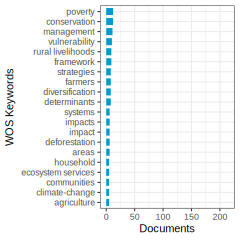
Articles: This study examines the relationship between livelihood assets and strategies in anti-poverty policies on the Eastern Tibetan Plateau, finding that human, natural, and financial assets influence livelihood strategies, with implications for local agricultural policy interventions and development strategies in similar regions. (Hua, Yan, and Zhang 2017) degree: 19 citations: 93
This study assesses livelihood assets in sustainable forest commons governance, finding an increase in total value from 0.56 to 0.71 between 2006 and 2010, with differences in asset conditions between participators and non-participators, supporting the hypotheses and emphasizing the importance of optimizing natural resource use for sustainable development. (HY. Chen et al. 2013) degree: 25 citations: 85
This study introduces the concept of regional livelihood capital to guide China’s rural revitalization strategy, focusing on the case of Diqing, where natural capital plays a foundational role, financial capital drives growth, and a comprehensive approach is needed to improve social and human capital for sustainable development. (SJ. Zhu et al. 2023) degree: 13 citations: 2
France is facing ongoing challenges in adapting to sea level rise, with progress made in coastal policies, but major issues such as chronic flooding and shoreline retreat remain unaddressed, highlighting the need for improved adaptation finance and broader connections with climate change and sustainable development goals. (Le Cozannet and Cazenave 2024) degree: 1 citations: 0
Research investigates the impact of social capital on sustainable livelihoods of reservoir migrants in China’s G Autonomous Prefecture, highlighting the importance of strengthening modern social capital to support infrastructure, living conditions, and employment opportunities in order to achieve Sustainable Development Goal targets by 2030. (HS. Zhang et al. 2024) degree: 2 citations: 0
A POK-based operational approach for global land cover mapping at 30 m resolution was developed, achieving over 80% classification accuracy, making it an effective and feasible method for future GLC products. (J. Chen et al. 2015) degree: 7 citations: 1411
This paper examines the complex relationship between poverty alleviation and tropical forests, highlighting the limited potential for synergies due to the ambiguous effects of poverty on forest loss and the challenges in significantly increasing producer benefits, consumer benefits, and employment opportunities in natural forest areas, ultimately suggesting that natural forests may not offer a strong comparative advantage for poverty alleviation efforts. (Wunder 2001) degree: 10 citations: 381
GRACE Follow-On (GRACE-FO) extends the GRACE mission’s mass change record with improved instrument performance, maintaining precision and sampling frequency, observing significant global terrestrial water variations, and successfully demonstrating satellite laser ranging interferometry. (Landerer et al. 2020) degree: 2 citations: 338
Cluster 9-4—:
Documents: 73; Ave. Year: 2020.2; Ave. Citations: 20.7
Based on the summaries provided, the common topic across these texts seems to be:
Livelihood Strategies and Capital Assets of Rural Households
The key points are:
The texts analyze the livelihood strategies (e.g. agriculture, off-farm work) adopted by rural households and how these are influenced by different types of capital assets or livelihood capitals (natural, physical, human, financial, social).
Several studies look at how sensitivity or vulnerability of livelihood strategies to factors like drought is mediated by the household’s capital assets.
Some focus on specific contexts like relocated households for poverty alleviation programs, transformed shantytowns, or different village types (plains, hills, mountains).
The role of various livelihood capitals (natural, physical, human, financial, social and in some cases cultural capital) in determining livelihood strategies and outcomes is examined empirically.
Methodologies include surveys, indices, regression models to understand the relationships between capital assets and livelihood strategy choices of rural households.
So in summary, the common topic is an analysis of the livelihood strategies adopted by rural households, especially in developing regions, and how these strategies are shaped by the households’ access to different types of capital assets or livelihood capitals in their specific local contexts.
Articles: This study investigates the relationship between rural households’ livelihood capitals and strategies in rural China, finding that human capital is most important, while natural capital is least utilized; different village types show varying sensitivities to different types of livelihood capitals, offering insights for rural development policies. (DD. Xu et al. 2019) degree: 24 citations: 95
Drought poses a significant threat to the livelihood security of rural farm families, particularly in arid regions, with the study highlighting the importance of enhancing adaptive capacity and the interplay of various capital types in mitigating vulnerability. (Keshavarz, Maleksaeidi, and Karami 2017) degree: 12 citations: 95
This study explores local perceptions of risk to livelihood in semi-arid Tanzania, highlighting the influence of natural, human, and social capital assets, as well as environmental factors, livelihood strategies, and gender on risk perception, suggesting the feasibility of risk mapping as a valuable technique for enhancing research and policy development in community resource management. (Quinn et al. 2003) degree: 1 citations: 102
Developing a Multidimensional Livelihoods Index (MLI) in Nepal reveals spatial variations in factors influencing sustainable development, advocating for a spatial approach to monitor social and environmental changes for informed decision-making and targeted resource allocation towards more sustainable development. (Donohue and Biggs 2015) degree: 17 citations: 75
Livelihood capital significantly enhances farmers’ sustainable livelihood capabilities, with natural, physical, human, financial, and social capital all positively influencing livelihood quality, and the presence of livelihood risks acting as a significant mediating factor, as evidenced by survey data from Yunnan Province. (YY. He and Li 2024) degree: 6 citations: 0
This study analyzes residents’ livelihoods in transformed shantytowns in a resource-based city in China, focusing on the impact of livelihood capital on residents’ choice of livelihood strategies post-shantytown transformation, highlighting the importance of natural capital, financial capital, and cultural capital in shaping residents’ choices. (PY. Zhao and Xu 2024) degree: 5 citations: 0
Analyzing the livelihood patterns of relocated farm households in ethnic minority areas of China revealed a shift from agriculture to non-agricultural industries, with diverse evolution pathways influenced by natural, material, human, and social capital, as well as specific factors impacting the transition between different livelihood types, leading to policy recommendations for sustainable development. (CX. Zhang et al. 2024) degree: 4 citations: 0
This study analyzes the impact of livelihood capital on land transfer among different types of farmers in Sichuan Province, China, revealing that pure farmers tend to shift towards natural capital, part-time farmers exhibit varied characteristics, and non-farmers tend to increase natural capital. Additionally, higher natural and human capital increase the probability and size of land transfers in, while financial and social capital increase land transfers out. The findings offer insights for policy-making on farmers’ land transfer considering their livelihood capital endowments. (HX. Yang et al. 2021) degree: 18 citations: 54
Cluster 9-99—:
Documents: 396; Ave. Year: 2017.9; Ave. Citations: 58.8
Based on the texts provided, the common topic appears to be the role of social capital and collective action in building resilience and enabling adaptation to climate change impacts, particularly for vulnerable communities and livelihoods dependent on natural resources.
Key points:
Several texts discuss how social capital (trust, networks, group membership) contributes to resilience of livelihoods and food security in the face of climate stressors like drought.
Collective action facilitated by social capital is highlighted as important for community-based natural resource management and adaptation to climate risks.
Case studies illustrate how social capital underpins public/private institutions and collective efforts to cope with climate extremes and manage coastal resources.
An integrated, multi-scalar approach combining resilience-building through social capital with sustainable development goals is proposed for dryland ecosystems.
Livelihoods, food security, and overall adaptive capacity are linked to sustainable management of natural assets/capitals alongside social capital.
In summary, the overarching topic could be framed as: “The Role of Social Capital and Collective Action in Enhancing Climate Resilience of Natural Resource-Dependent Livelihoods and Communities”

Articles: This study focuses on mapping poverty and livelihood assets in the Indo-Gangetic Plains of India, highlighting the importance of natural and financial capitals in reducing poverty incidence and emphasizing the necessity of cross-sectoral approaches for poverty alleviation interventions. (Erenstein, Hellin, and Chandna 2010) degree: 22 citations: 94
This study explores the impact of multiple stressors on the livelihood resilience of communities in dryland ecosystems, emphasizing the importance of sustainable management of natural resources. By analyzing global literature and proposing entry points aligned with sustainable development goals, the research aims to enhance stakeholders’ ability to address challenges and strengthen resilience in these ecosystems. (T. Li et al. 2024) degree: 5 citations: 2
This research assesses how climate change impacts livelihood choices of rural households in Vietnam from 2008 to 2018, finding that climate change influences these choices directly and indirectly through various livelihood capitals, with a shift towards wage-based and non-agricultural strategies preferred under these effects, emphasizing the importance of enhancing human and social capital for climate change adaptation in rural areas. (Chuong et al. 2024) degree: 5 citations: 1
This study examines the relationship between social capital, trust, group membership, and household resilience to food insecurity in Kyrgyzstan, finding that trust and group membership have a positive impact on resilience pillars and capacity. (Egamberdiev 2024) degree: 5 citations: 1
Understanding the principles of regulatory focus, regulatory anticipation, and regulatory reference is crucial for psychologists to delve deeper into the true nature of approach-avoidance motivation beyond the hedonic principle, particularly in the context of nature finance and nature capital. (Higgins 1997) degree: 5 citations: 4757
Climate change may disrupt progress towards global food security by impacting crop productivity, potentially leading to food availability issues and exacerbating food insecurity, emphasizing the importance of investing in a climate-resilient food system. (Wheeler and von Braun 2013) degree: 21 citations: 1898
This paper reviews research in place attachment, highlighting a disproportionate focus on the Person component over Place and Process components in the tripartite model, suggesting a need to incorporate theories of social capital, environmental aesthetics, and meaning-making processes to advance the field. (Lewicka 2011) degree: 3 citations: 1640
The article discusses the importance of social capital and collective action in adapting to climate change, emphasizing how these factors inform adaptive capacity and policy recommendations, particularly in relation to interacting with natural capital and managing climate risks through public and private institutions. (Adger 2003) degree: 63 citations: 1411
Cluster 99-0—:
Documents: 631; Ave. Year: 2016.2; Ave. Citations: 36
The main topic of this cluster is the relationship between the environment, natural resources, and economic/financial factors. The common keywords across the texts include:
- Green buildings/properties and their financing terms (green discount, interest rates, loan-to-value ratios)
- Environmental sustainability assessments of production systems using exergy analysis
- Calculating econometric factors (alpha and beta) for extended exergy accounting method
- Detecting causality in complex ecosystems
- Evaluating natural resource investments
- Health benefits of exposure to green spaces
- Economic growth models incorporating environmental quality
The texts cover various aspects of how environmental factors like green buildings, production sustainability, natural resources, green spaces, and environmental quality intersect with economic/financial considerations such as lending, investments, accounting methods, and growth models.
In summary, the common topic that ties these texts together is “Environmental and Natural Resource Economics” - analyzing the interplay between environmental/ecological factors and economic/financial systems, valuations, and decision-making.
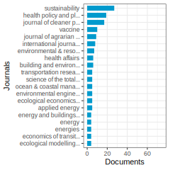

Articles: This study investigates the presence of a green discount in European commercial real estate lending, revealing that green buildings enjoy lower interest rate spreads compared to non-green counterparts, offering valuable insights for lenders and investors in the context of increasing regulations and net-zero targets in the banking sector. (Leutner, Gloria, and Bienert 2024) degree: 5 citations: 1
Integrating vaccination into national health insurance systems in Africa can significantly advance universal health coverage and contribute to sustainable financing for healthcare in the region, with practical policy recommendations provided in the paper. (Adamu et al. 2024) degree: 4 citations: 0
The study compared the ecological sustainability of mechanized and traditional systems of Damask rose production using Extended Exergy Analysis, finding that the traditional system exhibited higher ecological sustainability due to lower cumulative exergy consumption and environmental modification costs, as indicated by various extended exergy indices. Recommendations for achieving sustainable agricultural crop production systems were proposed based on the results. (Nakhaii et al. 2024) degree: 5 citations: 0
The study presents a method to calculate precise values of the econometric coefficients alpha and beta in Extended Exergy Accounting, demonstrating their dependence on consumption patterns, technological levels, and socio-economic standards, with significant variations between developed and underdeveloped countries. (Sciubba 2011) degree: 18 citations: 62
Detecting causality in complex ecosystems is crucial for informing policy and management decisions across various fields, including climate, epidemiology, and financial regulation. We propose a novel method based on nonlinear state space reconstruction to differentiate causation from correlation, even in weakly connected dynamic systems, demonstrating its effectiveness through both theoretical models and real ecological systems like the sardine-anchovy-temperature issue. (Sugihara et al. 2012) degree: 6 citations: 1447
Evaluate natural-resource investments through the lens of nature finance and nature capital to understand the value of the world’s stock of natural resources in providing ecosystem services that benefit humans. (BRENNAN and SCHWARTZ 1985) degree: 22 citations: 1300
Increased greenspace exposure is linked to various health benefits, as shown by a systematic review and meta-analysis of numerous studies, suggesting a positive influence of greenspaces on a wide range of health outcomes, supporting the importance of creating, maintaining, and improving accessible greenspaces in deprived areas. (Twohig-Bennett and Jones 2018) degree: 8 citations: 824
This article presents an overlapping generations model that explores the interplay between economic growth and environmental preservation, highlighting how short-term decisions impact long-term factor productivity and environmental quality, ultimately offering insights on the relationship between income and environmental well-being, and the potential for sustainable growth of both capital and nature resources. (JOHN and PECCHENINO 1994) degree: 21 citations: 332
References
. 2011. “Natural Capital: Theory & Practice of Mapping Ecosystem Services.” Natural Capital: Theory & Practice of Mapping Ecosystem Services, 1. https://doi.org/10.1093/acprof:oso/9780199588992.001.0001.
Abas, N., A. Kalair, and N. Khan. 2015. “Review of Fossil Fuels and Future Energy Technologies.” Futures 69: 31. https://doi.org/10.1016/j.futures.2015.03.003.
Abbas, J., and H. Najam. 2024. “Role of Environmental Decentralization, Green Human Capital, and Digital Finance in Firm Green Technological Innovation for a Sustainable Society.” Environment Development and Sustainability. https://doi.org/10.1007/s10668-024-04783-3.
Aboelmaged, M., and G. Hashem. 2019. “Absorptive Capacity and Green Innovation Adoption in Smes: The Mediating Effects of Sustainable Organisational Capabilities.” Journal of Cleaner Production 220: 853. https://doi.org/10.1016/j.jclepro.2019.02.150.
Abraham, E., HF. Del Valle, F. Roig, L. Torres, JO. Ares, F. Coronato, and R. Godagnone. 2009. “Overview of the Geography of the Monte Desert Biome (Argentina).” Journal of Arid Environments 73 (2): 144. https://doi.org/10.1016/j.jaridenv.2008.09.028.
Adamu, AA., RI. Jalo, ID. Muhammad, TA. Essoh, D. Ndwandwe, and CS. Wiysonge. 2024. “Sustainable Financing for Vaccination Towards Advancing Universal Health Coverage in the Who African Region: The Strategic Role of National Health Insurance.” Human Vaccines & Immunotherapeutics 20 (1). https://doi.org/10.1080/21645515.2024.2320505.
Afzal, A., JA. Hasnaoui, S. Firdousi, and R. Noor. 2024. “Climate Change and the European Banking Sector: The Effect of Green Technology Adaptation and Human Capital.” Review of Accounting and Finance. https://doi.org/10.1108/RAF-10-2023-0341.
Aguirre, M., and G. Ibikunle. 2014. “Determinants of Renewable Energy Growth: A Global Sample Analysis.” Energy Policy 69: 374. https://doi.org/10.1016/j.enpol.2014.02.036.
Ahamad, S., MA. Islam, MF. Bin Yusof, HA. Al-Jaifi, and KU. Ehigiamusoe. 2024. “Relationship Between Microfinance Institutions' Self-Sustainability and Financing Sources: Moderating Role of External Governance.” Annals of Public and Cooperative Economics. https://doi.org/10.1111/apce.12472.
Ahlin, C., J. Lin, and M. Maio. 2011. “Where Does Microfinance Flourish? Microfinance Institution Performance in Macroeconomic Context.” Journal of Development Economics 95 (2): 105. https://doi.org/10.1016/j.jdeveco.2010.04.004.
Ahlström, H., and D. Monciardini. 2022. “The Regulatory Dynamics of Sustainable Finance: Paradoxical Success and Limitations of Eu Reforms.” Journal of Business Ethics 177 (1): 193. https://doi.org/10.1007/s10551-021-04763-x.
Ahmed, F., MM. Islam, and S. Abbas. 2024. “Assessing the Impact of Russian-Ukrainian Geopolitical Risks on Global Green Finance: A Quantile Dependency Analysis.” Environmental Economics and Policy Studies. https://doi.org/10.1007/s10018-024-00395-3.
Ahmed, Z., MM. Asghar, MN. Malik, and K. Nawaz. 2020. “Moving Towards a Sustainable Environment: The Dynamic Linkage Between Natural Resources, Human Capital, Urbanization, Economic Growth, and Ecological Footprint in China.” Resources Policy 67. https://doi.org/10.1016/j.resourpol.2020.101677.
Ahmed, Z., MW. Zafar, S. Ali, and Danish. 2020. “Linking Urbanization, Human Capital, and the Ecological Footprint in G7 Countries: An Empirical Analysis.” Sustainable Cities and Society 55. https://doi.org/10.1016/j.scs.2020.102064.
Ai, HS., and XQ. Tan. 2024. “The Effect of Sustainable Development Planning on Natural Capital: Evidence from China.” Singapore Economic Review. https://doi.org/10.1142/S0217590823470094.
Ai, KP., and XW. Yan. 2024. “Can Green Infrastructure Investment Reduce Urban Carbon Emissions:empirical Evidence from China.” Land 13 (2). https://doi.org/10.3390/land13020226.
Akhtar, S., C. Li, JM. Sohu, Y. Rasool, MIU. Hassan, and M. Bilal. 2024. “Unlocking Green Innovation and Environmental Performance: The Mediated Moderation of Green Absorptive Capacity and Green Innovation Climate.” Environmental Science and Pollution Research 31 (3): 4547. https://doi.org/10.1007/s11356-023-31403-w.
Akomea-Frimpong, I., AS. Kukah, XH. Jin, R. Osei-Kyei, and F. Pariafsai. 2022. “Green Finance for Green Buildings: A Systematic Review and Conceptual Foundation.” Journal of Cleaner Production 356. https://doi.org/10.1016/j.jclepro.2022.131869.
Aleksandrova, M., L. Kuhl, and D. Malerba. 2024. “Unlocking Climate Finance for Social Protection: An Analysis of the Green Climate Fund.” Climate Policy. https://doi.org/10.1080/14693062.2024.2338817.
Alessi, L., TF. Cojoianu, D. French, and AGF. Hoepner. 2024. “Special Issues in Support of Evidence-Based Policy Making in Sustainable Banking & Finance.” International Review of Financial Analysis 91. https://doi.org/10.1016/j.irfa.2023.102818.
Ali, R., IM. Garcia-S’anchez, B. Aibar-Guzm’an, and RU. Rehman. 2024. “Is Biodiversity Disclosure Emerging as a Key Topic on the Agenda of Institutional Investors?” Business Strategy and the Environment 33 (3): 2116. https://doi.org/10.1002/bse.3587.
Alkadi, RS. 2024. “Towards a Sustainable Future: A Comprehensive Review of Green Sukuk.” Review of Accounting and Finance. https://doi.org/10.1108/RAF-03-2023-0105.
Alqaralleh, H. 2024. “Dynamic Connectedness Amongst Green Bonds, Pollution Allowance Policy, Social Responsibility and Uncertainty.” Journal of Risk Finance 25 (1): 80. https://doi.org/10.1108/JRF-01-2023-0015.
Alsagr, N., and I. Ozturk. 2024. “Natural Resources Rent and Green Investment: Does Institutional Quality Matter?” Resources Policy 90. https://doi.org/10.1016/j.resourpol.2024.104709.
Al-Tuwaijri, SA., TE. Christensen, and KE. Hughes. 2004. “The Relations Among Environmental Disclosures Environmental Performance, and Economic Performance: A Simultaneous Equations Approach.” Accounting Organizations and Society 29 (5-6): 447. https://doi.org/10.1016/S0361-3682(03)00032-1.
Aluchna, M., M. Roszkowska-Menkes, and S. Khan. 2023. “Corporate Governance Perspective on Environmental Reporting: Literature Review and Future Research Agenda.” Corporate Social Responsibility and Environmental Management. https://doi.org/10.1002/csr.2643.
Ambec, S., and P. Lanoie. 2008. “Does It Pay to Be Green? A Systematic Overview.” Academy of Management Perspectives 23 (4): 45. https://doi.org/10.5465/AMP.2008.35590353.
Ameli, N., O. Dessens, M. Winning, J. Cronin, H. Chenet, P. Drummond, A. Calzadilla, G. Anandarajah, and M. Grubb. 2021. “Higher Cost of Finance Exacerbates a Climate Investment Trap in Developing Economies.” Nature Communications 12 (1). https://doi.org/10.1038/s41467-021-24305-3.
Amighini, A., P. Giudici, and J. Ruet. 2022. “Green Finance: An Empirical Analysis of the Green Climate Fund Portfolio Structure.” Journal of Cleaner Production 350. https://doi.org/10.1016/j.jclepro.2022.131383.
Andres, SE., RJ. Standish, PE. Lieurance, CH. Mills, RJ. Harper, DW. Butler, VM. Adams, et al. 2023. “Defining Biodiverse Reforestation: Why It Matters for Climate Change Mitigation and Biodiversity.” Plants People Planet 5 (1): 27. https://doi.org/10.1002/ppp3.10329.
Aras, G., and D. Crowther. 2008. “Governance and Sustainability - an Investigation into the Relationship Between Corporate Governance and Corporate Sustainability.” Management Decision 46 (3-4): 433. https://doi.org/10.1108/00251740810863870.
Arner, DW., RP. Buckley, DA. Zetzsche, and R. Veidt. 2020. “Sustainability, Fintech and Financial Inclusion.” European Business Organization Law Review 21 (1): 7. https://doi.org/10.1007/s40804-020-00183-y.
Aronson, J., JN. Blignaut, RS. De Groot, A. Clewell, PP. Lowry, P. Woodworth, RM. Cowling, et al. 2010. “The Road to Sustainability Must Bridge Three Great Divides.” Ecological Economics Reviews 1185: 225. https://doi.org/10.1111/j.1749-6632.2009.05281.x.
Aronson, J., JN. Blignaut, SJ. Milton, D. Le Maitre, KJ. Esler, A. Limouzin, C. Fontaine, et al. 2010. “Are Socioeconomic Benefits of Restoration Adequately Quantified? A Meta-Analysis of Recent Papers (2000-2008) in <i>restoration Ecology</i> and 12 Other Scientific Journals.” Restoration Ecology 18 (2): 143. https://doi.org/10.1111/j.1526-100X.2009.00638.x.
Arrow, K., P. Dasgupta, L. Goulder, G. Daily, P. Ehrlich, G. Heal, S. Levin, et al. 2004. “Are We Consuming Too Much?” Journal of Economic Perspectives 18 (3): 147. https://doi.org/10.1257/0895330042162377.
Arrow, KJ., P. Dasgupta, LH. Goulder, KJ. Mumford, and K. Oleson. 2012. “Sustainability and the Measurement of Wealth.” Environment and Development Economics 17: 317. https://doi.org/10.1017/S1355770X12000137.
Asiedu, E., and D. Lien. 2011. “Democracy, Foreign Direct Investment and Natural Resources.” Journal of International Economics 84 (1): 99. https://doi.org/10.1016/j.jinteco.2010.12.001.
Asl, MG., and U. Shahzad. 2024. “How Do Conventional, Islamic and Green Bonds Idiosyncratically Differ When It Comes to Their Inherent Nonlinear Reliance on Carbon Emission Future Price? A Novel Approach to Greenwashing Detection.” Environment Development and Sustainability. https://doi.org/10.1007/s10668-023-04351-1.
Atghia, N., and a. Nazarian. 2024. “Economic Sustainability: A Solution to the Financial Problems of Football Clubs.” Sport Business and Management-an International Journal 14 (1): 56. https://doi.org/10.1108/SBM-03-2023-0024.
Ayers, JM., and S. Huq. 2009. “Supporting Adaptation to Climate Change: What Role for Official Development Assistance?” Development Policy Review 27 (6): 675. https://doi.org/10.1111/j.1467-7679.2009.00465.x.
Azad, S., SLT. Devi, and AK. Mishra. 2024. “Investing in Our Planet: Examining Retail Investors' Preference for Green Bond Investment.” Business Strategy and the Environment. https://doi.org/10.1002/bse.3743.
Azapagic, A., and S. Perdan. 2000. “Indicators of Sustainable Development for Industry: A General Framework.” Process Safety and Environmental Protection 78 (B4): 243. https://doi.org/10.1205/095758200530763.
Babic, M. 2024. “Green Finance in the Global Energy Transition: Actors, Instruments, and Politics.” Energy Research & Social Science 111. https://doi.org/10.1016/j.erss.2024.103482.
Bai, CG., P. Dallasega, G. Orzes, and J. Sarkis. 2020. “Industry 4.0 Technologies Assessment: A Sustainability Perspective.” International Journal of Production Economics 229. https://doi.org/10.1016/j.ijpe.2020.107776.
Bai, QG., YM. Gong, MZ. Jin, and XH. Xu. 2019. “Effects of Carbon Emission Reduction on Supply Chain Coordination with Vendor-Managed Deteriorating Product Inventory.” International Journal of Production Economics 208: 83. https://doi.org/10.1016/j.ijpe.2018.11.008.
Bakry, W., G. Mallik, XH. Nghiem, A. Sinha, and XV. Vo. 2023. “Is Green Finance Really ?green?? Examining the Long-Run Relationship Between Green Finance, Renewable Energy and Environmental Performance in Developing Countries.” Renewable Energy 208: 341. https://doi.org/10.1016/j.renene.2023.03.020.
Bal’az, V., T. Jeck, and M. Balog. 2022. “Economics of Biobanking: Business or Public Good? Literature Review, Structural and Thematic Analysis.” Social Sciences-Basel 11 (7). https://doi.org/10.3390/socsci11070288.
Banerjee, SB. 2003. “Who Sustains Whose Development? Sustainable Development and the Reinvention of Nature.” Organization Studies 24 (1): 143. https://doi.org/10.1177/0170840603024001341.
Baral, N., MJ. Stern, and R. Bhattarai. 2008. “Contingent Valuation of Ecotourism in Annapurna Conservation Area, Nepal: Implications for Sustainable Park Finance and Local Development.” Ecological Economics 66 (2-3): 218. https://doi.org/10.1016/j.ecolecon.2008.02.004.
Barbera, C., M. Jones, S. Korac, I. Saliterer, and I. Steccolini. 2017. “Governmental Financial Resilience Under Austerity in Austria, England and Italy: How Do Local Governments Cope with Financial Shocks?” Public Administration 95 (3): 670. https://doi.org/10.1111/padm.12350.
Barker, R. 2019. “Corporate Natural Capital Accounting.” Oxford Review of Economic Policy 35 (1): 68. https://doi.org/10.1093/oxrep/gry031.
Bastien-Olvera, BA., MN. Conte, X. Dong, T. Briceno, D. Batker, J. Emmerling, M. Tavoni, F. Granella, and FC. Moore. 2024. “Unequal Climate Impacts on Global Values of Natural Capital.” Nature 625 (7996). https://doi.org/10.1038/s41586-023-06769-z.
Bat’ary, P., LV. Dicks, D. Kleijn, and WJ. Sutherland. 2015. “The Role of Agri-Environment Schemes in Conservation and Environmental Management.” Conservation Biology 29 (4): 1006. https://doi.org/10.1111/cobi.12536.
Battisti, DS., and RL. Naylor. 2009. “Historical Warnings of Future Food Insecurity with Unprecedented Seasonal Heat.” Science 323 (5911): 240. https://doi.org/10.1126/science.1164363.
Behera, B., P. Behera, and N. Sethi. 2024. “Decoupling the Role of Renewable Energy, Green Finance and Political Stability in Achieving the Sustainable Development Goal 13: Empirical Insight from Emerging Economies.” Sustainable Development 32 (1): 119. https://doi.org/10.1002/sd.2657.
Ben-Amar, W., M. Chang, and P. McIlkenny. 2017. “Board Gender Diversity and Corporate Response to Sustainability Initiatives: Evidence from the Carbon Disclosure Project.” Journal of Business Ethics 142 (2): 369. https://doi.org/10.1007/s10551-015-2759-1.
Bennett, M., A. March, J. Raguain, and P. Failler. 2024. “Blueprint for Blue Carbon: Lessons from Seychelles for Small Island States.” Oceans-Switzerland 5 (1): 81. https://doi.org/10.3390/oceans5010006.
Berardini, TZ., L. Reiser, DH. Li, Y. Mezheritsky, R. Muller, E. Strait, and E. Huala. 2015. “The Arabidopsis Information Resource: Making and Mining the "Gold Standard" Annotated Reference Plant Genome.” Genesis 53 (8): 474. https://doi.org/10.1002/dvg.22877.
Beri, PB., and GF. Nubong. 2023. “The Impact of the Investment Climate on Foreign Direct Investment in Africa.” African Review of Economics and Finance-Aref 15 (1): 1.
Bersalli, G., T. Tröndle, L. Heckmann, and J. Lilliestam. 2024. “Economic Crises as Critical Junctures for Policy and Structural Changes Towards Decarbonization - the Cases of Spain and Germany.” Climate Policy 24 (3): 410. https://doi.org/10.1080/14693062.2024.2301750.
Bertoldi, P., M. Economidou, V. Palermo, B. Boza-Kiss, and v. Todeschi. 2021. “How to Finance Energy Renovation of Residential Buildings: Review of Current and Emerging Financing Instruments in Theeu.” Wiley Interdisciplinary Reviews-Energy and Environment 10 (1). https://doi.org/10.1002/wene.384.
Best, R. 2017. “Switching Towards Coal or Renewable Energy? The Effects of Financial Capital on Energy Transitions.” Energy Economics 63: 75. https://doi.org/10.1016/j.eneco.2017.01.019.
Betzold, C., and F. Weiler. 2017. “Allocation of Aid for Adaptation to Climate Change: Do Vulnerable Countries Receive More Support?” International Environmental Agreements-Politics Law and Economics 17 (1): 17. https://doi.org/10.1007/s10784-016-9343-8.
Bhandary, RR., KS. Gallagher, and F. Zhang. 2021. “Climate Finance Policy in Practice: A Review of the Evidence.” Climate Policy 21 (4): 529. https://doi.org/10.1080/14693062.2020.1871313.
Bhatnagar, S., and D. Sharma. 2022. “Evolution of Green Finance and Its Enablers: A Bibliometric Analysis.” Renewable & Sustainable Energy Reviews 162. https://doi.org/10.1016/j.rser.2022.112405.
Biagini, B., R. Bierbaum, M. Stults, S. Dobardzic, and SM. McNeeley. 2014. “A Typology of Adaptation Actions: A Global Look at Climate Adaptation Actions Financed Through the Global Environment Facility.” Global Environmental Change-Human and Policy Dimensions 25: 97. https://doi.org/10.1016/j.gloenvcha.2014.01.003.
Bian, JS., GQ. Zhang, and GH. Zhou. 2020. “Manufacturer Vs. Consumer Subsidy with Green Technology Investment and Environmental Concern.” European Journal of Operational Research 287 (3): 832. https://doi.org/10.1016/j.ejor.2020.05.014.
Billio, M., M. Costola, I. Hristova, C. Latino, and L. Pelizzon. 2024. “Sustainable Finance: A Journey Toward Esg and Climate Risk.” International Review of Environmental and Resource Economics 18 (1-2): 1. https://doi.org/10.1561/101.00000156.
Bisogno, M., B. Cuadrado-Ballesteros, F. Manes-Rossi, and N. Peña-Miguel. 2024. “Financial Sustainability and Sustainable Development in Local Governments: Empirical Insights.” Public Performance & Management Review. https://doi.org/10.1080/15309576.2024.2340116.
Blignaut, J., J. Aronson, and R. De Groot. 2014. “Restoration of Natural Capital: A Key Strategy on the Path to Sustainability.” Ecological Engineering 65: 54. https://doi.org/10.1016/j.ecoleng.2013.09.003.
Bocaneala, AM., DS. Manole, EA. Gherasim, B. Motorga, and LC. Iliescu. 2024. “European Funding for Sustainable Transport Systems-Influencing Factor of Regional Economic Development in Romania.” Economies 12 (3). https://doi.org/10.3390/economies12030051.
Bocken, NMP. 2015. “Sustainable Venture Capital - Catalyst for Sustainable Start-up Success?” Journal of Cleaner Production 108: 647. https://doi.org/10.1016/j.jclepro.2015.05.079.
Bogan, VL. 2012. “Capital Structure and Sustainability: An Empirical Study of Microfinance Institutions.” Review of Economics and Statistics 94 (4): 1045. https://doi.org/10.1162/REST_a_00223.
Böhm, S., MC. Misoczky, and S. Moog. 2012. “Greening Capitalism? A Marxist Critique of Carbon Markets.” Organization Studies 33 (11): 1617. https://doi.org/10.1177/0170840612463326.
Bol’ıvar, MPR., AN. Galera, LA. Muñoz, and MDL. Subir’es. 2016. “Risk Factors and Drivers of Financial Sustainability in Local Government: An Empirical Study.” Local Government Studies 42 (1): 29. https://doi.org/10.1080/03003930.2015.1061506.
Bordoni, R., I. Rigo, G. Dapueto, P. Povero, P. Vassallo, and C. Paoli. 2023. “Assessment of Natural Capital and Environmental Flows Distribution: A Mediterranean Case Study.” Journal of Cleaner Production 409. https://doi.org/10.1016/j.jclepro.2023.137228.
Bos, M., RL. Pressey, and N. Stoeckl. 2015. “Marine Conservation Finance: The Need for and Scope of an Emerging Field.” Ocean & Coastal Management 114: 116. https://doi.org/10.1016/j.ocecoaman.2015.06.021.
Bose, S., HZ. Khan, A. Rashid, and S. Islam. 2018. “What Drives Green Banking Disclosure? An Institutional and Corporate Governance Perspective.” Asia Pacific Journal of Management 35 (2): 501. https://doi.org/10.1007/s10490-017-9528-x.
Bracking, S. 2015a. “Performativity in the Green Economy: How Far Does Climate Finance Create a Fictive Economy?” Third World Quarterly 36 (12): 2337.
———. 2015b. “The Anti-Politics of Climate Finance: The Creation and Performativity of the Green Climate Fund.” Antipode 47 (2): 281. https://doi.org/10.1111/anti.12123.
Bracking, S., and B. Leffel. 2021. “Climate Finance Governance: Fit for Purpose?” Wiley Interdisciplinary Reviews-Climate Change 12 (4). https://doi.org/10.1002/wcc.709.
Braga, JP., W. Semmler, and D. Grass. 2021. “De-Risking of Green Investments Through a Green Bond Market - Empirics and a Dynamic Model.” Journal of Economic Dynamics & Control 131. https://doi.org/10.1016/j.jedc.2021.104201.
Brammer, S., and S. Pavelin. 2006. “Voluntary Environmental Disclosures by Large Uk Companies.” Journal of Business Finance & Accounting 33 (7-8): 1168. https://doi.org/10.1111/j.1468-5957.2006.00598.x.
Brand, F. 2009. “Critical Natural Capital Revisited: Ecological Resilience and Sustainable Development.” Ecological Economics 68 (3): 605. https://doi.org/10.1016/j.ecolecon.2008.09.013.
Brander, LM., R. De Groot, JP. Schägner, V. Guisado-Goñi, V. Van’t Hoff, S. Solomonides, A. McVittie, et al. 2024. “Economic Values for Ecosystem Services: A Global Synthesis and Way Forward.” Ecosystem Services 66. https://doi.org/10.1016/j.ecoser.2024.101606.
Braungardt, S., J. Van Den Bergh, and T. Dunlop. 2019. “Fossil Fuel Divestment and Climate Change: Reviewing Contested Arguments.” Energy Research & Social Science 50: 191. https://doi.org/10.1016/j.erss.2018.12.004.
Bremer, LL., DA. Auerbach, JH. Goldstein, AL. Vogl, D. Shemie, T. Kroeger, JL. Nelson, et al. 2016. “One Size Does Not Fit All: Natural Infrastructure Investments Within the Latin American Water Funds Partnership.” Ecosystem Services 17: 217. https://doi.org/10.1016/j.ecoser.2015.12.006.
BRENNAN, MJ., and ES. SCHWARTZ. 1985. “Evaluating Natural-Resource Investments.” Journal of Business 58 (2): 135. https://doi.org/10.1086/296288.
Brenner, N., and N. Theodore. 2002. “Cities and the Geographies of "Actually Existing Neoliberalism".” Antipode 34 (3): 349. https://doi.org/10.1111/1467-8330.00246.
Brenya, R., I. Akomea-Frimpong, D. Ofosu, and D. Adeabah. 2023. “Barriers to Sustainable Agribusiness: A Systematic Review and Conceptual Framework.” Journal of Agribusiness in Developing and Emerging Economies 13 (4): 570. https://doi.org/10.1108/JADEE-08-2021-0191.
Brumatti, DV., GDD. Chaves, and RR. Siman. 2024. “Barriers That Affect the Financial Sustainability of Integrated Management Systems of Urban Solid Waste.” Urbe-Revista Brasileira De Gestao Urbana 16. https://doi.org/10.1590/2175-3369.016.e20230020.
Bryant, G. 2019. “Carbon Markets in a Climate-Changing Capitalism.” Carbon Markets in a Climate-Changing Capitalism, 1. https://doi.org/10.1017/9781108377591.
Burkhard, B., F. Kroll, S. Nedkov, and F. Müller. 2012. “Mapping Ecosystem Service Supply, Demand and Budgets.” Ecological Indicators 21: 17. https://doi.org/10.1016/j.ecolind.2011.06.019.
Busch, T., R. Bauer, and M. Orlitzky. 2016. “Sustainable Development and Financial Markets: Old Paths and New Avenues.” Business & Society 55 (3): 303. https://doi.org/10.1177/0007650315570701.
Campbell, H. 2009. “Breaking New Ground in Food Regime Theory: Corporate Environmentalism, Ecological Feedbacks and the ’Food from Somewhere’ Regime?” Agriculture and Human Values 26 (4): 309. https://doi.org/10.1007/s10460-009-9215-8.
Campiglio, E. 2016. “Beyond Carbon Pricing: The Role of Banking and Monetary Policy in Financing the Transition to a Low-Carbon Economy.” Ecological Economics 121: 220. https://doi.org/10.1016/j.ecolecon.2015.03.020.
Campiglio, E., Y. Dafermos, P. Monnin, J. Ryan-Collins, G. Schotten, and M. Tanaka. 2018. “Climate Change Challenges for Central Banks and Financial Regulators.” Nature Climate Change 8 (6): 462. https://doi.org/10.1038/s41558-018-0175-0.
Cao, SP., L. Nie, HP. Sun, WF. Sun, and F. Taghizadeh-Hesary. 2021. “Digital Finance, Green Technological Innovation and Energy-Environmental Performance: Evidence from China’s Regional Economies.” Journal of Cleaner Production 327. https://doi.org/10.1016/j.jclepro.2021.129458.
Cao, YK., JXN. Cai, and XY. Liu. 2024. “Advancing Toward a Sustainable Future: Assessing the Impact of Energy Transition, Circular Economy, and International Trade on Carbon Footprint.” Economic Change and Restructuring 57 (2). https://doi.org/10.1007/s10644-024-09621-0.
Cappellari, T., and G. Gucciardi. 2024. “Equity Investments and Environmental Pressure: The Role of Venture Capital.” Sustainability 16 (1). https://doi.org/10.3390/su16010241.
Caprotti, F. 2014. “Eco-Urbanism and the Eco-City, or, Denying the Right to the City?” Antipode 46 (5): 1285. https://doi.org/10.1111/anti.12087.
Cardoso, JS., V. Silva, RC. Rocha, MJ. Hall, M. Costa, and D. Eus’ebio. 2021. “Ammonia as an Energy Vector: Current and Future Prospects for Low-Carbon Fuel Applications in Internal Combustion Engines.” Journal of Cleaner Production 296. https://doi.org/10.1016/j.jclepro.2021.126562.
Car‘e, R., R. Fatima, and IA. Boitan. 2024. “Central Banks and Climate Risks: Where We Are and Where We Are Going?” International Review of Economics & Finance 92: 1200. https://doi.org/10.1016/j.iref.2024.01.057.
Castelo, S., L. Antunes, and M. Ashrafuzzaman. 2024. “The Impact of the Climate Crisis on Gender Inequality. Looking to the Frontlines in Search of Priorities for Policy.” Frontiers in Sustainable Cities 6. https://doi.org/10.3389/frsc.2024.1304535.
Castree, N. 2002. “False Antitheses? Marxism, Nature and Actor-Networks.” Antipode 34 (1): 111. https://doi.org/10.1111/1467-8330.00228.
———. 2003. “Commodifying What Nature?” Progress in Human Geography 27 (3): 273. https://doi.org/10.1191/0309132503ph428oa.
Catucci, E., E. Buonocore, PP. Franzese, and M. Scardi. 2023. “Assessing the Natural Capital Value of <i>posidonia Oceanica</i> Meadows in the Italian Seas by Integrating Habitat Suitability and Environmental Accounting Models.” Ices Journal of Marine Science 80 (4): 739. https://doi.org/10.1093/icesjms/fsac034.
Chadha, G., and M. Singhania. 2024. “Demystifying the Influence of Debt Providers’ Preferences on Sustainability Reporting: A Firm-Level Meta-Analytical Inquiry.” Environmental Science and Pollution Research. https://doi.org/10.1007/s11356-023-31552-y.
Chahu’an-Jim’enez, K., R. Rubilar-Torrealba, H. De La Fuente-Mella, and C. El’ortegui-G’omez. 2024. “Unraveling the Complex Interplay of Sustainability, Investments, and Economic Indicators.” Sustainability 16 (1). https://doi.org/10.3390/su16010003.
Chang, CH., and YS. Chen. 2012. “The Determinants of Green Intellectual Capital.” Management Decision 50 (1-2): 74. https://doi.org/10.1108/00251741211194886.
Chava, S., A. Oettl, A. Subramanian, and KV. Subramanian. 2013. “Banking Deregulation and Innovation.” Journal of Financial Economics 109 (3): 759. https://doi.org/10.1016/j.jfineco.2013.03.015.
Chedid, R., and S. Rahman. 1997. “Unit Sizing and Control of Hybrid Wind-Solar Power Systems.” Ieee Transactions on Energy Conversion 12 (1): 79. https://doi.org/10.1109/60.577284.
Chen, FJ., WY. She, F. Zeng, MB. Gao, C. Wen, GX. Liu, LX. Wu, Y. Wu, and C. Zhang. 2024. “Resource Depletion and Conservation: Balancing Demands on Resources for Green Recovery and Sustainability.” Resources Policy 89. https://doi.org/10.1016/j.resourpol.2023.104544.
Chen, HY., T. Zhu, M. Krott, JF. Calvo, SP. Ganesh, and I. Makoto. 2013. “Measurement and Evaluation of Livelihood Assets in Sustainable Forest Commons Governance.” Land Use Policy 30 (1): 908. https://doi.org/10.1016/j.landusepol.2012.06.009.
Chen, J., J. Chen, AP. Liao, X. Cao, LJ. Chen, XH. Chen, CY. He, et al. 2015. “Global Land Cover Mapping at 30 m Resolution: A Pok-Based Operational Approach.” Isprs Journal of Photogrammetry and Remote Sensing 103: 7. https://doi.org/10.1016/j.isprsjprs.2014.09.002.
Chen, L., H. Shen, QR. Liu, CJ. Rao, J. Li, and M. Goh. 2024. “Joint Optimization on Green Investment and Contract Design for Sustainable Supply Chains with Fairness Concern.” Annals of Operations Research. https://doi.org/10.1007/s10479-024-05880-2.
Chen, QR., ZY. Li, HL. Xie, MY. Wu, YH. Pan, and SL. Luo. 2024. “How Can Ecological Product Value Realization Contribute to Landscape Sustainability?” Landscape Ecology 39 (2). https://doi.org/10.1007/s10980-024-01802-6.
Chen, YF., and YB. Ma. 2021. “Does Green Investment Improve Energy Firm Performance?” Energy Policy 153. https://doi.org/10.1016/j.enpol.2021.112252.
Chen, YS. 2008. “The Positive Effect of Green Intellectual Capital on Competitive Advantages of Firms.” Journal of Business Ethics 77 (3): 271. https://doi.org/10.1007/s10551-006-9349-1.
Cheng, XM., CN. Yan, KT. Ye, and KX. Chen. 2024. “Enhancing Resource Efficiency Through the Utilization of the Green Bond Market: An Empirical Analysis of Asian Economies.” Resources Policy 89. https://doi.org/10.1016/j.resourpol.2023.104623.
Chiesura, A., and R. De Groot. 2003. “Critical Natural Capital: A Socio-Cultural Perspective.” Ecological Economics 44 (2-3): 219. https://doi.org/10.1016/S0921-8009(02)00275-6.
Chiou, HK., GH. Tzeng, and DC. Cheng. 2005. “Evaluating Sustainable Fishing Development Strategies Using Fuzzy Mcdm Approach.” Omega-International Journal of Management Science 33 (3): 223. https://doi.org/10.1016/j.omega.2004.04.011.
Chitimiea, A., M. Minciu, AM. Manta, CN. Ciocoiu, and C. Veith. 2021. “The Drivers of Green Investment: A Bibliometric and Systematic Review.” Sustainability 13 (6). https://doi.org/10.3390/su13063507.
Cho, CH., and DM. Patten. 2007. “The Role of Environmental Disclosures as Tools of Legitimacy: A Research Note.” Accounting Organizations and Society 32 (7-8): 639. https://doi.org/10.1016/j.aos.2006.09.009.
Chu, LK. 2024. “Towards Achieving Energy Transition Goal: How Do Green Financial Policy, Environmental Tax, Economic Complexity, and Globalization Matter?” Renewable Energy 222. https://doi.org/10.1016/j.renene.2023.119933.
Chuang, SP., and SJ. Huang. 2018. “The Effect of Environmental Corporate Social Responsibility on Environmental Performance and Business Competitiveness: The Mediation of Green Information Technology Capital.” Journal of Business Ethics 150 (4): 991. https://doi.org/10.1007/s10551-016-3167-x.
Chukwudum, QC. 2024. “Climate Finance Across Sub-Saharan Africa: Decision Trees and Network Flows.” South African Journal of Science 120 (3-4). https://doi.org/10.17159/sajs.2024/15837.
Chuong, HN., TT. Loc, TLT. Tuyen, and BH. Ngoc. 2024. “Livelihood Transitions in Rural Vietnam Under Climate Change Effects in the Period of 2008-2018.” Discover Sustainability 5 (1). https://doi.org/10.1007/s43621-023-00178-y.
Clark, B., and R. York. 2005. “Carbon Metabolism: Global Capitalism, Climate Change, and the Biospheric Rift.” Theory and Society 34 (4): 391. https://doi.org/10.1007/s11186-005-1993-4.
Clark, C., P. Adriaens, and FB. Talbot. 2008. “Green Roof Valuation: A Probabilistic Economic Analysis of Environmental Benefits.” Environmental Science & Technology 42 (6): 2155. https://doi.org/10.1021/es0706652.
Clark, JS., SR. Carpenter, M. Barber, S. Collins, A. Dobson, JA. Foley, DM. Lodge, et al. 2001. “Ecological Forecasts: An Emerging Imperative.” Science 293 (5530): 657. https://doi.org/10.1126/science.293.5530.657.
Clark, R., J. Reed, and T. Sunderland. 2018. “Bridging Funding Gaps for Climate and Sustainable Development: Pitfalls, Progress and Potential of Private Finance.” Land Use Policy 71: 335. https://doi.org/10.1016/j.landusepol.2017.12.013.
Clarkson, PM., Y. Li, and GD. Richardson. 2004. “The Market Valuation of Environmental Capital Expenditures by Pulp and Paper Companies.” Accounting Review 79 (2): 329. https://doi.org/10.2308/accr.2004.79.2.329.
Clarkson, PM., Y. Li, GD. Richardson, and FP. Vasvari. 2008. “Revisiting the Relation Between Environmental Performance and Environmental Disclosure: An Empirical Analysis.” Accounting Organizations and Society 33 (4-5): 303. https://doi.org/10.1016/j.aos.2007.05.003.
Claudet, J., L. Bopp, WWL. Cheung, R. Devillers, E. Escobar-Briones, P. Haugan, JJ. Heymans, et al. 2020. “A Roadmap for Using the Un Decade of Ocean Science for Sustainable Development in Support of Science, Policy, and Action.” One Earth 2 (1): 34. https://doi.org/10.1016/j.oneear.2019.10.012.
Clayton, H., KL. Hingee, W. Chancellor, D. Lindenmayer, A. Van Dijk, M. Vardon, and C. Boult. 2024. “Private Benefits of Natural Capital on Farms Across an Endangered Ecoregion.” Ecological Economics 218. https://doi.org/10.1016/j.ecolecon.2024.108116.
Clewell, AF., and J. Aronson. 2006. “Motivations for the Restoration of Ecosystems.” Conservation Biology 20 (2): 420. https://doi.org/10.1111/j.1523-1739.2006.00340.x.
Climent, F., and P. Soriano. 2011. “Green and Good? The Investment Performance of Us Environmental Mutual Funds.” Journal of Business Ethics 103 (2): 275. https://doi.org/10.1007/s10551-011-0865-2.
Cole, DR., and Y. Baghi. 2024. “<I>housing in the Capitalocene</i>: Environmental Education and Sustainable Living.” Journal of Environmental Education 55 (1): 13. https://doi.org/10.1080/00958964.2023.2259842.
Colenbrander, S., D. Dodman, and D. Mitlin. 2018. “Using Climate Finance to Advance Climate Justice: The Politics and Practice of Channelling Resources to the Local Level.” Climate Policy 18 (7): 902. https://doi.org/10.1080/14693062.2017.1388212.
Comte, A., CS. Campagne, S. Lange, AG. Bruz’on, L. Hein, F. Santos-Mart’ın, and H. Levrel. 2022. “Ecosystem Accounting: Past Scientific Developments and Future Challenges.” Ecosystem Services 58. https://doi.org/10.1016/j.ecoser.2022.101486.
Conning, J. 1999. “Outreach, Sustainability and Leverage in Monitored and Peer-Monitored Lending.” Journal of Development Economics 60 (1): 51. https://doi.org/10.1016/S0304-3878(99)00036-X.
Cormier, D., and M. Magnan. 2015. “The Economic Relevance of Environmental Disclosure and Its Impact on Corporate Legitimacy: An Empirical Investigation.” Business Strategy and the Environment 24 (6): 431. https://doi.org/10.1002/bse.1829.
Costanza, R. 2020. “Valuing Natural Capital and Ecosystem Services Toward the Goals of Efficiency, Fairness, and Sustainability.” Ecosystem Services 43. https://doi.org/10.1016/j.ecoser.2020.101096.
Costanza, R., R. d’Arge, R. De Groot, S. Farber, M. Grasso, B. Hannon, K. Limburg, et al. 1998. “The Value of the World’s Ecosystem Services and Natural Capital (Reprinted from Nature, Vol 387, Pg 253, 1997).” Ecological Economics 25 (1): 3. https://doi.org/10.1016/S0921-8009(98)00020-2.
COSTANZA, R., and HE. DALY. 1992. “Natural Capital and Sustainable Development.” Conservation Biology 6 (1): 37. https://doi.org/10.1046/j.1523-1739.1992.610037.x.
Costanza, R., L. Daly, L. Fioramonti, E. Giovannini, I. Kubiszewski, LF. Mortensen, KE. Pickett, KV. Ragnarsdottir, R. De Vogli, and R. Wilkinson. 2016. “Modelling and Measuring Sustainable Wellbeing in Connection with the Un Sustainable Development Goals.” Ecological Economics 130: 350. https://doi.org/10.1016/j.ecolecon.2016.07.009.
Costanza, R., R. dArge, R. deGroot, S. Farber, M. Grasso, B. Hannon, K. Limburg, et al. 1997. “The Value of the World’s Ecosystem Services and Natural Capital.” Nature 387 (6630): 253. https://doi.org/10.1038/387253a0.
Costanza, R., R. De Groot, P. Sutton, S. Van Der Ploeg, SJ. Anderson, I. Kubiszewski, S. Farber, and RK. Turner. 2014. “Changes in the Global Value of Ecosystem Services.” Global Environmental Change-Human and Policy Dimensions 26: 152. https://doi.org/10.1016/j.gloenvcha.2014.04.002.
Costanza, R., B. Fisher, S. Ali, C. Beer, L. Bond, R. Boumans, NL. Danigelis, et al. 2007. “Quality of Life: An Approach Integrating Opportunities, Human Needs, and Subjective Well-Being.” Ecological Economics 61 (2-3): 267. https://doi.org/10.1016/j.ecolecon.2006.02.023.
Cowie, AL., BJ. Orr, VMC. Sanchez, P. Chasek, ND. Crossman, A. Erlewein, G. Louwagie, et al. 2018. “Land in Balance: The Scientific Conceptual Framework for Land Degradation Neutrality.” Environmental Science & Policy 79: 25. https://doi.org/10.1016/j.envsci.2017.10.011.
Crifo, P. 2024. “Green Human Capital, Innovation and Growth.” Environmental Modeling & Assessment 29 (1): 1. https://doi.org/10.1007/s10666-023-09948-4.
Cui, HP., Y. Wang, and L. Zheng. 2024. “Livelihood Sustainability of Rural Households in Response to External Shocks, Internal Stressors and Geographical Disadvantages: Empirical Evidence from Rural China.” Environment Development and Sustainability. https://doi.org/10.1007/s10668-024-04666-7.
Cui, J., H. Jo, and H. Na. 2018. “Does Corporate Social Responsibility Affect Information Asymmetry?” Journal of Business Ethics 148 (3): 549. https://doi.org/10.1007/s10551-015-3003-8.
Cunha, FAFD., E. Meira, and RJ. Orsato. 2021. “Sustainable Finance and Investment: Review and Research Agenda.” Business Strategy and the Environment 30 (8): 3821. https://doi.org/10.1002/bse.2842.
Curtin, J., C. McInerney, BO. Gallach’oir, C. Hickey, P. Deane, and P. Deeney. 2019. “Quantifying Stranding Risk for Fossil Fuel Assets and Implications for Renewable Energy Investment: A Review of the Literature.” Renewable & Sustainable Energy Reviews 116. https://doi.org/10.1016/j.rser.2019.109402.
Dafermos, Y., M. Nikolaidi, and G. Galanis. 2018. “Climate Change, Financial Stability and Monetary Policy.” Ecological Economics 152: 219. https://doi.org/10.1016/j.ecolecon.2018.05.011.
Dahl, AL. 2012. “Achievements and Gaps in Indicators for Sustainability.” Ecological Indicators 17: 14. https://doi.org/10.1016/j.ecolind.2011.04.032.
Dai, XJ., and JJ. Zhang. 2024. “China’s Green Development Journey Through Resource Rent Optimization and Green Finance Policies.” Resources Policy 90. https://doi.org/10.1016/j.resourpol.2024.104768.
Dai, YT., YZ. Ding, SY. Fu, LX. Zhang, J. Cheng, and DL. Zhu. 2024. “Analyzing the Impact of Natural Capital on Socio- Economic Objectives Under the Framework of Sustainable Development Goals.” Environmental Impact Assessment Review 104. https://doi.org/10.1016/j.eiar.2023.107322.
Daily, GC., and PA. Matson. 2008. “Ecosystem Services: From Theory to Implementation.” Proceedings of the National Academy of Sciences of the United States of America 105 (28): 9455. https://doi.org/10.1073/pnas.0804960105.
Daily, GC., S. Polasky, J. Goldstein, PM. Kareiva, HA. Mooney, L. Pejchar, TH. Ricketts, J. Salzman, and R. Shallenberger. 2009. “Ecosystem Services in Decision Making: Time to Deliver.” Frontiers in Ecology and the Environment 7 (1): 21. https://doi.org/10.1890/080025.
Dalla Pellegrina, L., D. Diriker, P. Landoni, D. Moro, and M. Wijesiri. 2024. “Financial and Social Sustainability in the European Microfinance Sector.” Small Business Economics. https://doi.org/10.1007/s11187-023-00850-7.
Daly, HE. 2005. “Economics in a Full World.” Scientific American 293 (3): 100. https://doi.org/10.1038/scientificamerican0905-100.
Daniel, TC., A. Muhar, A. Arnberger, O. Aznar, JW. Boyd, KMA. Chan, R. Costanza, et al. 2012. “Contributions of Cultural Services to the Ecosystem Services Agenda.” Proceedings of the National Academy of Sciences of the United States of America 109 (23): 8812. https://doi.org/10.1073/pnas.1114773109.
Dao, NB., HHD. Truong, M. Shahbaz, LK. Chu, and DP. Hoang. 2024. “The Heterogeneous Effect of Energy Transition, Environmental Policies and Green Financial Policies on Ecological Footprint: An Oecd Perspective.” Environmental Modeling & Assessment. https://doi.org/10.1007/s10666-024-09968-8.
Das, U., MA. Ansari, and S. Ghosh. 2024. “Measures of Livelihoods and Their Effect on Vulnerability of Farmers to Climate Change: Evidence from Coastal and Non-Coastal Regions in India.” Environment Development and Sustainability 26 (2): 4801. https://doi.org/10.1007/s10668-023-02911-z.
Datta, TK., S. Datta, and a. Goswami. 2024. “A Sustainable Bi-Objective Inventory Model with Source-Based Emissions and Plan-Based Green Investments Under Inflation and the Present Value of Money.” Operations Research and Decisions 34 (1): 91. https://doi.org/10.37190/ord240105.
Daud, SNM., Z. Osman, S. Samsudin, and IG. Phang. 2024. “Adapting to the Gig Economy: Determinants of Financial Resilience Among "Giggers".” Economic Analysis and Policy 81: 756. https://doi.org/10.1016/j.eap.2024.01.002.
De Falco, SE., R. Montera, S. Leo, F. Laviola, P. Vito, D. Sardanelli, G. Basile, G. Nevi, and R. Alaia. 2024. “Trends and Patterns in Esg Research: A Bibliometric Odyssey and Research Agenda.” Corporate Social Responsibility and Environmental Management. https://doi.org/10.1002/csr.2744.
De Groot, R. 2006. “Function-Analysis and Valuation as a Tool to Assess Land Use Conflicts in Planning for Sustainable, Multi-Functional Landscapes.” Landscape and Urban Planning 75 (3-4): 175. https://doi.org/10.1016/j.landurbplan.2005.02.016.
De Groot, R., J. Van Der Perk, A. Chiesura, and a. Van Vliet. 2003. “Importance and Threat as Determining Factors for Criticality of Natural Capital.” Ecological Economics 44 (2-3): 187. https://doi.org/10.1016/S0921-8009(02)00273-2.
De Sousa-Gabriel, VM., MB. Lozano-Garc’ıa, MFLI. Matias, ME. Neves, and J. Mart’ınez-Ferrero. 2024. “Global Environmental Equities and Investor Sentiment: The Role of Social Media and Covid-19 Pandemic Crisis.” Review of Managerial Science 18 (1): 105. https://doi.org/10.1007/s11846-022-00614-9.
Deb, BC., MM. Rahman, and M. Haseeb. 2024. “Unveiling the Impact on Corporate Social Responsibility Through Green Tax and Green Financing: A Pls-Sem Approach.” Environmental Science and Pollution Research 31 (1): 1504. https://doi.org/10.1007/s11356-023-31150-y.
Deitz, S., and K. Meehan. 2019. “Plumbing Poverty: Mapping Hot Spots of Racial and Geographic Inequality in Us Household Water Insecurity.” Annals of the American Association of Geographers 109 (4): 1092. https://doi.org/10.1080/24694452.2018.1530587.
Delafield, G., GS. Smith, B. Day, RA. Holland, C. Donnison, A. Hastings, G. Taylor, N. Owen, and a. Lovett. 2024. “Spatial Context Matters: Assessing How Future Renewable Energy Pathways Will Impact Nature and Society.” Renewable Energy 220. https://doi.org/10.1016/j.renene.2023.119385.
Delafield, G., GS. Smith, B. Day, R. Holland, and a. Lovett. 2024a. “Correction to: The Financial and Environmental Consequences of Renewable Energy Exclusion Zones ( 10.1007/S10640-022-00749-z, 2022).” Environmental & Resource Economics 87 (2): 399. https://doi.org/10.1007/s10640-023-00760-y.
———. 2024b. “The Financial and Environmental Consequences of Renewable Energy Exclusion Zones.” Environmental & Resource Economics 87 (2): 369. https://doi.org/10.1007/s10640-022-00749-z.
Dellink, R., M. Den Elzen, H. Aiking, E. Bergsma, F. Berkhout, T. Dekker, and J. Gupta. 2009. “Sharing the Burden of Financing Adaptation to Climate Change.” Global Environmental Change-Human and Policy Dimensions 19 (4): 411. https://doi.org/10.1016/j.gloenvcha.2009.07.009.
Dempsey, J., and DC. Suarez. 2016. “Arrested Development? The Promises and Paradoxes of "Selling Nature to Save It".” Annals of the American Association of Geographers 106 (3): 653. https://doi.org/10.1080/24694452.2016.1140018.
Deressa, TT., RM. Hassan, C. Ringler, T. Alemu, and M. Yesuf. 2009. “Determinants of Farmers’ Choice of Adaptation Methods to Climate Change in the Nile Basin of Ethiopia.” Global Environmental Change-Human and Policy Dimensions 19 (2): 248. https://doi.org/10.1016/j.gloenvcha.2009.01.002.
Diezmartinez, CV., and AGS. Gianotti. 2024. “Municipal Finance Shapes Urban Climate Action and Justice.” Nature Climate Change. https://doi.org/10.1038/s41558-024-01924-4.
Dikau, S., and U. Volz. 2021. “Central Bank Mandates, Sustainability Objectives and the Promotion of Green Finance.” Ecological Economics 184. https://doi.org/10.1016/j.ecolecon.2021.107022.
Dilling, PFA., P. Harris, and S. Caykoylu. 2024. “The Impact of Corporate Characteristics on Climate Governance Disclosure.” Sustainability 16 (5). https://doi.org/10.3390/su16051962.
Dirse, MT., and GP. Japee. 2024. “The Effect of Capital Structure on the Financial Sustainability of Microfinance Institutions: A Meta-Analysis.” Review of Development Economics. https://doi.org/10.1111/rode.13088.
Dollar, D., M. Hallward-Driemeier, and T. Mengistae. 2005. “Investment Climate and Firm Performance in Developing Economies.” Economic Development and Cultural Change 54 (1): 1. https://doi.org/10.1086/431262.
———. 2006. “Investment Climate and International Integration.” World Development 34 (9): 1498. https://doi.org/10.1016/j.worlddev.2006.05.001.
Dominati, E., M. Patterson, and a. Mackay. 2010. “A Framework for Classifying and Quantifying the Natural Capital and Ecosystem Services of Soils.” Ecological Economics 69 (9): 1858. https://doi.org/10.1016/j.ecolecon.2010.05.002.
Dong, CW., QY. Liu, and B. Shen. 2019. “To Be or Not to Be Green? Strategic Investment for Green Product Development in a Supply Chain.” Transportation Research Part e-Logistics and Transportation Review 131: 193. https://doi.org/10.1016/j.tre.2019.09.010.
Dong, CW., B. Shen, PS. Chow, L. Yang, and CT. Ng. 2016. “Sustainability Investment Under Cap-and-Trade Regulation.” Annals of Operations Research 240 (2): 509. https://doi.org/10.1007/s10479-013-1514-1.
Dong, JM., and SC. Yu. 2024. “Exploring Role of Green Financing in Blockchain Markets for Climate Change Mitigation in China.” Environmental Science and Pollution Research 31 (3): 3614. https://doi.org/10.1007/s11356-023-31124-0.
Donohue, C., and E. Biggs. 2015. “Monitoring Socio-Environmental Change for Sustainable Development: Developing a Multidimensional Livelihoods Index (Mli).” Applied Geography 62: 391. https://doi.org/10.1016/j.apgeog.2015.05.006.
Dragomir, VD., M. Dumitru, IC. Chersan, C. Gorgan, and M. Paunescu. 2024. “Double Materiality Disclosure as an Emerging Practice: The Assessment Process, Impacts, Risks, and Opportunities.” Accounting in Europe. https://doi.org/10.1080/17449480.2024.2339264.
Drew, J., and B. Dollery. 2014. “The Impact of Metropolitan Amalgamations in Sydney on Municipal Financial Sustainability.” Public Money & Management 34 (4): 281. https://doi.org/10.1080/09540962.2014.920201.
Drew, J., M. Miyazak, and D. McQuestin. 2024. “Is ’More’ Better? Testing the Assumption That Larger Local Governments Are More Sustainable.” Australian Journal of Public Administration 83 (1): 106. https://doi.org/10.1111/1467-8500.12627.
Du Plessis, NS., JK. Turpie, and GK. Letley. 2024. “Feasibility of Financing Nature-Based Solutions for Water Security Through Water Tariffs: Evidence from South Africa.” Aqua-Water Infrastructure Ecosystems and Society 73 (2): 152. https://doi.org/10.2166/aqua.2024.221.
Du, QY., ZY. Li, M. Du, and TL. Yang. 2024. “Government Venture Capital and Innovation Performance in Alternative Energy Production: The Moderating Role of Environmental Regulation and Capital Market Activity.” Energy Economics 129. https://doi.org/10.1016/j.eneco.2023.107196.
Du, SF., MJ. Liu, TF. Nie, and YG. Zhu. 2024. “Package-Type Strategies and Packaging's Carbon Reduction Decisions in the Take-Out Industry.” International Journal of Production Research. https://doi.org/10.1080/00207543.2024.2321594.
Dutta, P., and a. Dutta. 2024. “Does Corporate Environmental Performance Affect Corporate Biodiversity Reporting Decision? The Finnish Evidence.” Journal of Applied Accounting Research 25 (1): 24. https://doi.org/10.1108/JAAR-06-2022-0148.
Dye, CY., and CT. Yang. 2015. “Sustainable Trade Credit and Replenishment Decisions with Credit-Linked Demand Under Carbon Emission Constraints.” European Journal of Operational Research 244 (1): 187. https://doi.org/10.1016/j.ejor.2015.01.026.
Ebel, SA., M. Burnham, and J. Reynolds. 2023. “Examining the Conditions That Activate Linking Social Capital to Transition Environmental Governance: Empirical Insights from Chile’s Coast.” Regional Environmental Change 23 (1). https://doi.org/10.1007/s10113-022-01992-2.
Edens, B., and L. Hein. 2013. “Towards a Consistent Approach for Ecosystem Accounting.” Ecological Economics 90: 41. https://doi.org/10.1016/j.ecolecon.2013.03.003.
Ekins, P., S. Simon, L. Deutsch, C. Folke, and R. De Groot. 2003. “A Framework for the Practical Application of the Concepts of Critical Natural Capital and Strong Sustainability.” Ecological Economics 44 (2-3): 165. https://doi.org/10.1016/S0921-8009(02)00272-0.
Ekonomou, L. 2010. “Greek Long-Term Energy Consumption Prediction Using Artificial Neural Networks.” Energy 35 (2): 512. https://doi.org/10.1016/j.energy.2009.10.018.
ELKINGTON, J. 1994. “Towards the Sustainable Corporation - Win-Win-Win Business Strategies for Sustainable Development.” California Management Review 36 (2): 90. https://doi.org/10.2307/41165746.
Erenstein, O., J. Hellin, and P. Chandna. 2010. “Poverty Mapping Based on Livelihood Assets: A Meso-Level Application in the Indo-Gangetic Plains, India.” Applied Geography 30 (1): 112. https://doi.org/10.1016/j.apgeog.2009.05.001.
Eyraud, L., B. Clements, and a. Wane. 2013. “Green Investment: Trends and Determinants.” Energy Policy 60: 852. https://doi.org/10.1016/j.enpol.2013.04.039.
Eyre, B., O. Bonilla, M. Brightman, and S. Voicu. 2024. “Beyond the ’Tyranny of Metrics’? Indicator Literacy in Sustainable Finance.” Tijdschrift Voor Economische En Sociale Geografie. https://doi.org/10.1111/tesg.12625.
Fairbrass, AJ., V. Moretti, E. Quaresma, C. Ribeiro, FD. Roque, C. Oller, and J. Tomei. 2024. “Indicator-Based Natural Capital Reporting to Inform Decision-Making in the Brazilian Pantanal.” Conservation Science and Practice. https://doi.org/10.1111/csp2.13115.
Fairhead, J., M. Leach, and I. Scoones. 2012. “Green Grabbing: A New Appropriation of Nature?” Journal of Peasant Studies 39 (2): 237. https://doi.org/10.1080/03066150.2012.671770.
Faivre, N., M. Fritz, T. Freitas, B. De Boissezon, and S. Vandewoestijne. 2017. “Nature-Based Solutions in the Eu: Innovating with Nature to Address Social, Economic and Environmental Challenges.” Environmental Research 159: 509. https://doi.org/10.1016/j.envres.2017.08.032.
Faizi, F., AS. Kusuma, and P. Widodo. 2024. “Islamic Green Finance: Mapping the Climate Funding Landscape in Indonesia.” International Journal of Ethics and Systems. https://doi.org/10.1108/IJOES-08-2023-0189.
Fan, LL., and DW. Wang. 2024. “Natural Resource Efficiency and Green Economy: Key Takeaways on Clean Energy, Globalization, and Innovations in Brics Countries.” Resources Policy 88. https://doi.org/10.1016/j.resourpol.2023.104382.
Feng, SL., R. Zhang, and GX. Li. 2022. “Environmental Decentralization, Digital Finance and Green Technology Innovation.” Structural Change and Economic Dynamics 61: 70. https://doi.org/10.1016/j.strueco.2022.02.008.
Ferraro, PJ., and SK. Pattanayak. 2006. “Money for Nothing? A Call for Empirical Evaluation of Biodiversity Conservation Investments.” Plos Biology 4 (4): 482. https://doi.org/10.1371/journal.pbio.0040105.
Fetter, FA. 1907. “The Nature of Capital and Income.” Journal of Political Economy 15 (3): 129. https://doi.org/10.1086/251299.
Fiedler, T., AJ. Pitman, K. Mackenzie, N. Wood, C. Jakob, and SE. Perkins-Kirkpatrick. 2021. “Business Risk and the Emergence of Climate Analytics.” Nature Climate Change 11 (2): 87. https://doi.org/10.1038/s41558-020-00984-6.
Firmansyah, A., and ND. Kartiko. 2024. “Exploring the Association of Green Banking Disclosure and Corporate Sustainable Growth: The Moderating Role of Firm Size and Firm Age.” Cogent Business & Management 11 (1). https://doi.org/10.1080/23311975.2024.2312967.
Flammer, C. 2021. “Corporate Green Bonds.” Journal of Financial Economics 142 (2): 499. https://doi.org/10.1016/j.jfineco.2021.01.010.
Flood, K., M. Mahon, and J. McDonagh. 2024. “A Process Perspective of Conceptual Innovation: Integrating Equity in Applications of the Ecosystem Services Concept in Ireland.” Ecosystem Services 65. https://doi.org/10.1016/j.ecoser.2023.101582.
Folke, C., Å. Jansson, J. Rockström, P. Olsson, SR. Carpenter, FS. Chapin, AS. Cr’epin, et al. 2011. “Reconnecting to the Biosphere.” Ambio 40 (7): 719. https://doi.org/10.1007/s13280-011-0184-y.
Folqu’e, M., E. Escrig-Olmedo, and TC. Santamar’ıa. 2024. “Integration of Advanced Sri Practices into the European Asset Management Industry: A Survey of Drivers.” Sage Open 14 (1). https://doi.org/10.1177/21582440241237893.
Fontana, S., T. Sattler, F. Bontadina, and M. Moretti. 2011. “How to Manage the Urban Green to Improve Bird Diversity and Community Structure.” Landscape and Urban Planning 101 (3): 278. https://doi.org/10.1016/j.landurbplan.2011.02.033.
FORD, JD., and LW. FORD. 1995. “The Role of Conversations in Producing Intentional Change in Organizations.” Academy of Management Review 20 (3): 541. https://doi.org/10.2307/258787.
Foster, T. 2013. “Predictors of Sustainability for Community-Managed Handpumps in Sub-Saharan Africa: Evidence from Liberia, Sierra Leone, and Uganda.” Environmental Science & Technology 47 (21): 12037. https://doi.org/10.1021/es402086n.
Fox, NJ. 2023. “Green Capitalism, Climate Change and the Technological Fix: A More-Than-Human Assessment.” Sociological Review 71 (5): 1115. https://doi.org/10.1177/00380261221121232.
Friedmann, H. 2005. “From Colonialism to Green Capitalism: Social Movements and Emergence of Food Regimes.” New Directions in the Sociology of Global Development 11: 227. https://doi.org/10.1016/S1057-1922(05)11009-9.
Fries, S., and a. Taci. 2005. “Cost Efficiency of Banks in Transition: Evidence from 289 Banks in 15 Post-Communist Countries.” Journal of Banking & Finance 29 (1): 55. https://doi.org/10.1016/j.jbankfin.2004.06.016.
Frintrup, M., and D. Hilgers. 2024. “Drivers and Risk Factors of German Local Financial Sustainability Focusing on Adjusted Income.” International Review of Administrative Sciences 90 (1): 29. https://doi.org/10.1177/00208523221143289.
Füssel, HM. 2010. “How Inequitable Is the Global Distribution of Responsibility, Capability, and Vulnerability to Climate Change: A Comprehensive Indicator-Based Assessment.” Global Environmental Change-Human and Policy Dimensions 20 (4): 597. https://doi.org/10.1016/j.gloenvcha.2010.07.009.
G’omez-Baggethun, E., and DN. Barton. 2013. “Classifying and Valuing Ecosystem Services for Urban Planning.” Ecological Economics 86: 235. https://doi.org/10.1016/j.ecolecon.2012.08.019.
Gadenne, D., J. Kennedy, and C. McKeiver. 2009. “An Empirical Study of Environmental Awareness and Practices in Smes.” Journal of Business Ethics 84 (1): 45. https://doi.org/10.1007/s10551-008-9672-9.
Galaz, V., B. Crona, A. Dauriach, B. Scholtens, and W. Steffen. 2018. “Finance and the Earth System - Exploring the Links Between Financial Actors and Non-Linear Changes in the Climate System.” Global Environmental Change-Human and Policy Dimensions 53: 296. https://doi.org/10.1016/j.gloenvcha.2018.09.008.
Ganguly, G., J. Setzer, and v. Heyvaert. 2018. “If at First You Don’t Succeed: Suing Corporations for Climate Change.” Oxford Journal of Legal Studies 38 (4): 841. https://doi.org/10.1093/ojls/gqy029.
Gao, Y., YY. Zhou, and LF. Zhao. 2024. “Quantile Interdependence and Network Connectedness Between China’s Green Financial and Energy Markets.” Economic Analysis and Policy 81: 1148. https://doi.org/10.1016/j.eap.2024.02.011.
Garc’ıa-L’opez, MJ., and F. P’erez-Hern’andez. 2024. “Mapping Research on Natural Capital Accounting: A Strategic Challenge for Multinational Firms.” Administrative Sciences 14 (2). https://doi.org/10.3390/admsci14020028.
Gastanaga, VM., JB. Nugent, and B. Pashamova. 1998. “Host Country Reforms and Fdi Inflows: How Much Difference Do They Make?” World Development 26 (7): 1299. https://doi.org/10.1016/S0305-750X(98)00049-7.
Gaubatz, P. 1999. “China’s Urban Transformation: Patterns and Processes of Morphological Change in Beijing, Shanghai and Guangzhou.” Urban Studies 36 (9): 1495. https://doi.org/10.1080/0042098992890.
Geng, Y., J. Fu, J. Sarkis, and B. Xue. 2012. “Towards a National Circular Economy Indicator System in China: An Evaluation and Critical Analysis.” Journal of Cleaner Production 23 (1): 216. https://doi.org/10.1016/j.jclepro.2011.07.005.
Ghisetti, C., S. Mancinelli, M. Mazzanti, and M. Zoli. 2017. “Financial Barriers and Environmental Innovations: Evidence from Eu Manufacturing Firms.” Climate Policy 17: S131. https://doi.org/10.1080/14693062.2016.1242057.
Giglio, S., B. Kelly, and J. Stroebel. 2021. “Climate Finance.” Annual Review of Financial Economics, Vol 13, 2021 13: 15. https://doi.org/10.1146/annurev-financial-102620-103311.
Goldstein, DG., and G. Gigerenzer. 2002. “Models of Ecological Rationality: The Recognition Heuristic.” Psychological Review 109 (1): 75. https://doi.org/10.1037//0033-295X.109.1.75.
GOODLAND, R. 1995. “The Concept of Environmental Sustainability.” Annual Review of Ecology and Systematics 26: 1. https://doi.org/10.1146/annurev.es.26.110195.000245.
Goodland, R., and H. Daly. 1996. “Environmental Sustainability: Universal and Non-Negotiable.” Ecological Applications 6 (4): 1002. https://doi.org/10.2307/2269583.
Grasso, M. 2010. “An Ethical Approach to Climate Adaptation Finance.” Global Environmental Change-Human and Policy Dimensions 20 (1): 74. https://doi.org/10.1016/j.gloenvcha.2009.10.006.
Gray, M., N. Fox, JE. Gordon, J. Brilha, A. Charkraborty, MD. Garcia, J. Hjort, L. Kubal’ıkov’a, AC. Seijmonsbergen, and J. Urban. 2024. “Boundary of Ecosystem Services: A Response to Chen Et Al. (2023).” Journal of Environmental Management 351. https://doi.org/10.1016/j.jenvman.2023.119666.
Guan, DB., Z. Liu, Y. Geng, S. Lindner, and K. Hubacek. 2012. “The Gigatonne Gap in China’s Carbon Dioxide Inventories.” Nature Climate Change 2 (9): 672. https://doi.org/10.1038/NCLIMATE1560.
Guerry, AD., S. Polasky, J. Lubchenco, R. Chaplin-Kramer, GC. Daily, R. Griffin, M. Ruckelshaus, et al. 2015. “Natural Capital and Ecosystem Services Informing Decisions: From Promise to Practice.” Proceedings of the National Academy of Sciences of the United States of America 112 (24): 7348. https://doi.org/10.1073/pnas.1503751112.
Gulzar, R., AA. Bhat, AA. Mir, SA. Athar, and as. Al-Adwan. 2024. “Green Banking Practices and Environmental Performance: Navigating Sustainability in Banks.” Environmental Science and Pollution Research. https://doi.org/10.1007/s11356-024-32418-7.
Guo, JJ., Y. Zhou, S. Ali, U. Shahzad, and LB. Cui. 2021. “Exploring the Role of Green Innovation and Investment in Energy for Environmental Quality: An Empirical Appraisal from Provincial Data of China.” Journal of Environmental Management 292. https://doi.org/10.1016/j.jenvman.2021.112779.
Guo, LB., QQ. Zhang, J. Wu, and EDRS. Gonzalez. 2024. “An Evolutionary Game Model of Manufacturers and Consumers’ Behavior Strategies for Green Technology and Government Subsidy in Supply Chain Platform.” Computers & Industrial Engineering 189. https://doi.org/10.1016/j.cie.2024.109918.
Gupta, J., and S. Kashiramka. 2024. “Examining the Impact of Liquidity Creation on Bank Stability in the Asia Pacific Region: Do Esg Disclosures Play a Moderating Role?” Journal of International Financial Markets Institutions & Money 91. https://doi.org/10.1016/j.intfin.2024.101955.
Gutes, MC. 1996. “The Concept of Weak Sustainability.” Ecological Economics 17 (3): 147.
Gverdtsiteli, G. 2024. “Can Donors Encourage Authoritarian States to Go Green? Evidence from Vietnamese-German Development Cooperation.” Journal of Environment & Development 33 (1): 29. https://doi.org/10.1177/10704965231211593.
Gylfason, T. 2001. “Natural Resources, Education, and Economic Development.” European Economic Review 45 (4-6): 847. https://doi.org/10.1016/S0014-2921(01)00127-1.
Hahn, R., and M. Kühnen. 2013. “Determinants of Sustainability Reporting: A Review of Results, Trends, Theory, and Opportunities in an Expanding Field of Research.” Journal of Cleaner Production 59: 5. https://doi.org/10.1016/j.jclepro.2013.07.005.
Hallegatte, S., C. Green, RJ. Nicholls, and J. Corfee-Morlot. 2013. “Future Flood Losses in Major Coastal Cities.” Nature Climate Change 3 (9): 802. https://doi.org/10.1038/NCLIMATE1979.
Hanley, N., RE. Wright, and v. Adamowicz. 1998. “Using Choice Experiments to Value the Environment - Design Issues, Current Experience and Future Prospects.” Environmental & Resource Economics 11 (3-4): 413. https://doi.org/10.1023/A:1008287310583.
Hansen, J., M. Sato, P. Kharecha, K. von Schuckmann, DJ. Beerling, JJ. Cao, S. Marcott, et al. 2017. “Young People’s Burden: Requirement of Negative Co<sub>2</Sub> Emissions.” Earth System Dynamics 8 (3): 577. https://doi.org/10.5194/esd-8-577-2017.
Harlan, T. 2021. “Green Development or Greenwashing? A Political Ecology Perspective on China’s Green Beltand Road.” Eurasian Geography and Economics 62 (2): 202. https://doi.org/10.1080/15387216.2020.1795700.
Hartzmark, SM., and AB. Sussman. 2019. “Do Investors Value Sustainability? A Natural Experiment Examining Ranking and Fund Flows.” Journal of Finance 74 (6): 2789. https://doi.org/10.1111/jofi.12841.
Hasan, MR., TC. Roy, Y. Daryanto, and HM. Wee. 2021. “Optimizing Inventory Level and Technology Investment Under a Carbon Tax, Cap-and-Trade and Strict Carbon Limit Regulations.” Sustainable Production and Consumption 25: 604. https://doi.org/10.1016/j.spc.2020.12.005.
Hawkins, E., and R. Sutton. 2009. “The Potential to Narrow Uncertainty in Regional Climate Predictions.” Bulletin of the American Meteorological Society 90 (8): 1095. https://doi.org/10.1175/2009BAMS2607.1.
Häyhä, T., and PP. Franzese. 2014. “Ecosystem Services Assessment: A Review Under an Ecological-Economic and Systems Perspective.” Ecological Modelling 289: 124. https://doi.org/10.1016/j.ecolmodel.2014.07.002.
Hayward, MLA., WR. Forster, SD. Sarasvathy, and BL. Fredrickson. 2010. “Beyond Hubris: How Highly Confident Entrepreneurs Rebound to Venture Again.” Journal of Business Venturing 25 (6): 569. https://doi.org/10.1016/j.jbusvent.2009.03.002.
Hazell, P., C. Poulton, S. Wiggins, and a. Dorward. 2010. “The Future of Small Farms: Trajectories and Policy Priorities.” World Development 38 (10): 1349. https://doi.org/10.1016/j.worlddev.2009.06.012.
He, LY., LH. Zhang, ZQ. Zhong, DQ. Wang, and F. Wang. 2019. “Green Credit, Renewable Energy Investment and Green Economy Development: Empirical Analysis Based on 150 Listed Companies of China.” Journal of Cleaner Production 208: 363. https://doi.org/10.1016/j.jclepro.2018.10.119.
He, YD., S. Wang, and N. Chen. 2024. “Mineral Rents, Natural Resources Depletion, and Ecological Footprint Nexus in High Emitting Countries: Panel Glm Analysis.” Resources Policy 89. https://doi.org/10.1016/j.resourpol.2023.104472.
He, YY., and WH. Li. 2024. “The Impact of Livelihood Capital on Sustainable Livelihood Capacity of Farmers: Evidence from Yunnan Province, China.” Applied Economics Letters. https://doi.org/10.1080/13504851.2024.2332536.
Hein, L., KJ. Bagstad, C. Obst, B. Edens, S. Schenau, G. Castillo, F. Soulard, et al. 2020. “Progress in Natural Capital Accounting for Ecosystems Global Statistical Standards Are Being Developed.” Science 367 (6477): 514. https://doi.org/10.1126/science.aaz8901.
Heinkel, R., A. Kraus, and J. Zechner. 2001. “The Effect of Green Investment on Corporate Behavior.” Journal of Financial and Quantitative Analysis 36 (4): 431. https://doi.org/10.2307/2676219.
Helm, D. 2020. “The Environmental Impacts of the Coronavirus.” Environmental & Resource Economics 76 (1): 21. https://doi.org/10.1007/s10640-020-00426-z.
Hemdan, W., and J. Zhang. 2024. “Investors’ Intention Toward Green Investment: An Extension of the Theory of Planned Behavior.” International Journal of Emerging Markets. https://doi.org/10.1108/IJOEM-06-2023-0874.
Hepburn, C., B. O’Callaghan, N. Stern, J. Stiglitz, and D. Zenghelis. 2020. “Will Covid-19 Fiscal Recovery Packages Accelerate or Retard Progress on Climate Change?” Oxford Review of Economic Policy 36: S359. https://doi.org/10.1093/oxrep/graa015.
Hermes, N., and R. Lensink. 2007. “The Empirics of Microfinance: What Do We Know?” Economic Journal 117 (517): F1. https://doi.org/10.1111/j.1468-0297.2007.02013.x.
Hern’andez-Blanco, M., R. Costanza, T. Agardy, J. Farley, E. Fulton, I. Kubiszewski, and R. Rasheed. 2024. “Common Asset Trusts for Blue Commons Stewardship.” Marine Policy 159. https://doi.org/10.1016/j.marpol.2023.105957.
Herrman, H., DE. Stewart, N. Diaz-Granados, EL. Berger, B. Jackson, and T. Yuen. 2011. “What Is Resilience?” Canadian Journal of Psychiatry-Revue Canadienne De Psychiatrie 56 (5): 258. https://doi.org/10.1177/070674371105600504.
Hien, TTL., and HT. Tri. 2024. “Visualizing Green Finance and Green Growth Relationships with Power Bi Tools.” Electronic Journal of Applied Statistical Analysis 17 (1). https://doi.org/10.1285/i20705948v17n1p34.
Higgins, ET. 1997. “Beyond Pleasure and Pain.” American Psychologist 52 (12): 1280. https://doi.org/10.1037/0003-066X.52.12.1280.
Hilbrandt, H., and FJ. Grafe. 2024. “Thinking Topologically about Urban Climate Finance: Geographical Inequalities and Mexico’s Urban Landscapes of Infrastructure Investment.” Urban Geography 45 (3): 332. https://doi.org/10.1080/02723638.2023.2176599.
Hina, K., M. Khalique, SJA. Nassir, S. Abu Mansor, S. Kashmeeri, and MR. Bin Yaacob. 2024. “Nexus Between Green Intellectual Capital and the Sustainability Business Performance of Manufacturing Smes in Malaysia.” Journal of Intellectual Capital. https://doi.org/10.1108/JIC-11-2022-0226.
Hinkel, J. 2011. “"Indicators of Vulnerability and Adaptive Capacity": Towards a Clarification of the Science-Policy Interface.” Global Environmental Change-Human and Policy Dimensions 21 (1): 198. https://doi.org/10.1016/j.gloenvcha.2010.08.002.
Hoang-Khac, L., T. Tiet, N. to-The, and T. Nguyen-Anh. 2022. “Impact of Human Capital on Technical Efficiency in Sustainable Food Crop Production: A Meta-Analysis.” International Journal of Agricultural Sustainability 20 (4): 521. https://doi.org/10.1080/14735903.2021.1949880.
Hofmeyer, SL., CV. Hawkins, RM. Krause, and a. Park. 2024. “How Do Local Officials Conceptualize Sustainability as Practiced in Their Communities?” Journal of the American Planning Association. https://doi.org/10.1080/01944363.2024.2312941.
Hooper, T., T. Börger, O. Langmead, O. Marcone, SE. Rees, O. Rendon, N. Beaumont, MJ. Attrill, and M. Austen. 2019. “Applying the Natural Capital Approach to Decision Making for the Marine Environment.” Ecosystem Services 38. https://doi.org/10.1016/j.ecoser.2019.100947.
Horn, M. 2024. “The European Green Deal, Retail Investors and Sustainable Investments: A Perspective Article Covering Economic, Behavioral, and Regulatory Insights.” Current Research in Environmental Sustainability 7. https://doi.org/10.1016/j.crsust.2024.100241.
Hsu, CC., N. Quang-Thanh, FS. Chien, L. Li, and M. Mohsin. 2021. “Evaluating Green Innovation and Performance of Financial Development: Mediating Concerns of Environmental Regulation.” Environmental Science and Pollution Research 28 (40): 57386. https://doi.org/10.1007/s11356-021-14499-w.
Hu, GQ., XQ. Wang, and Y. Wang. 2021. “Can the Green Credit Policy Stimulate Green Innovation in Heavily Polluting Enterprises? Evidence from a Quasi-Natural Experiment in China.” Energy Economics 98. https://doi.org/10.1016/j.eneco.2021.105134.
Hu, YC., SS. Fan, and L. Du. 2024. “Does Environmental Liability Insurance Matter for Firms’ Environmental Disclosure?” Journal of Environmental Planning and Management. https://doi.org/10.1080/09640568.2024.2324137.
Hua, XB., JZ. Yan, and YL. Zhang. 2017. “Evaluating the Role of Livelihood Assets in Suitable Livelihood Strategies: Protocol for Anti-Poverty Policy in the Eastern Tibetan Plateau, China.” Ecological Indicators 78: 62. https://doi.org/10.1016/j.ecolind.2017.03.009.
Huang, CL., and FH. Kung. 2011. “Environmental Consciousness and Intellectual Capital Management Evidence from Taiwan’s Manufacturing Industry.” Management Decision 49 (9-10): 1405. https://doi.org/10.1108/00251741111173916.
Huang, YS., CC. Fang, and YA. Lin. 2020. “Inventory Management in Supply Chains with Consideration of Logistics, Green Investment and Different Carbon Emissions Policies.” Computers & Industrial Engineering 139. https://doi.org/10.1016/j.cie.2019.106207.
Huang, YT., KN. Xiong, and J. Xiao. 2024. “To Achieve a Win-Win Situation: Reorganizing and Enhancing Agroforestry Ecosystem Assets and Productivity to Inform Karst Desertification Control.” Forests 15 (3). https://doi.org/10.3390/f15030502.
Huber, J., and U. Murray. 2024. “Turning Climate Justice into Practice? Channeling Loss and Damage Funding Through National Social Protection Systems in Climate-Vulnerable Countries.” Wiley Interdisciplinary Reviews-Climate Change 15 (2). https://doi.org/10.1002/wcc.867.
Huillery, E. 2009. “History Matters: The Long-Term Impact of Colonial Public Investments in French West Africa.” American Economic Journal-Applied Economics 1 (2): 176. https://doi.org/10.1257/app.1.2.176.
Hulme, M. 2014. “Attributing Weather Extremes to ’Climate Change’: A Review.” Progress in Physical Geography-Earth and Environment 38 (4): 499. https://doi.org/10.1177/0309133314538644.
Hussain, J., CC. Lee, and YX. Chen. 2022. “Optimal Green Technology Investment and Emission Reduction in Emissions Generating Companies Under the Support of Green Bond and Subsidy.” Technological Forecasting and Social Change 183. https://doi.org/10.1016/j.techfore.2022.121952.
Ibrahim, RA., Sukono., H. Napitupulu, and RI. Ibrahim. 2024. “Earthquake Bond Pricing Model Involving the Inconstant Event Intensity and Maximum Strength.” Mathematics 12 (6). https://doi.org/10.3390/math12060786.
Incerti, N., and J. Barnett. 2024. “Following the Money: Climate Adaptation Finance in the Marshall Islands.” Environmental Research Letters 19 (5). https://doi.org/10.1088/1748-9326/ad383e.
Irfan, M., A. Razzaq, A. Sharif, and XD. Yang. 2022. “Influence Mechanism Between Green Finance and Green Innovation: Exploring Regional Policy Intervention Effects in China.” Technological Forecasting and Social Change 182. https://doi.org/10.1016/j.techfore.2022.121882.
Isaac, R., J. Hofmann, J. Koegst, C. Schleyer, and B. Mart’ın-L’opez. 2024. “Governing Anthropogenic Assets for Nature’s Contributions to People in Forests: A Policy Document Analysis.” Environmental Science & Policy 152. https://doi.org/10.1016/j.envsci.2023.103657.
Islam, MM., S. Sallu, K. Hubacek, and J. Paavola. 2014. “Vulnerability of Fishery-Based Livelihoods to the Impacts of Climate Variability and Change: Insights from Coastal Bangladesh.” Regional Environmental Change 14 (1): 281. https://doi.org/10.1007/s10113-013-0487-6.
Jaffe, AB., RG. Newell, and RN. Stavins. 2005. “A Tale of Two Market Failures: Technology and Environmental Policy.” Ecological Economics 54 (2-3): 164. https://doi.org/10.1016/j.ecolecon.2004.12.027.
Jaiswal, R., S. Gupta, and AK. Tiwari. 2024. “Decoding Mood of the Twitterverse on Esg Investing: Opinion Mining and Key Themes Using Machine Learning.” Management Research Review. https://doi.org/10.1108/MRR-07-2023-0526.
Javeed, SA., R. Latief, X. Cai, and T. San Ong. 2024. “Digital Finance and Corporate Green Investment: A Perspective from Institutional Investors and Environmental Regulations.” Journal of Cleaner Production 446. https://doi.org/10.1016/j.jclepro.2024.141367.
Jayaram, R., and S. Singh. 2020. “Sustainable Finance: A Systematic Review.” International Journal of Indian Culture and Business Management 21 (3): 317. https://doi.org/10.1504/IJICBM.2020.110452.
Jernberg, S., H. Kuosa, C. Boström, D. Burdon, F. Haavisto, AS. Heiskanen, S. Kiviluoto, et al. 2024. “Linking Natural Capital Stocks with Ecosystem Services in the Northern Baltic Sea.” Ecosystem Services 65. https://doi.org/10.1016/j.ecoser.2023.101585.
Jiakui, C., J. Abbas, H. Najam, JN. Liu, and J. Abbas. 2023. “Green Technological Innovation, Green Finance, and Financial Development and Their Role in Green Total Factor Productivity: Empirical Insights from China.” Journal of Cleaner Production 382. https://doi.org/10.1016/j.jclepro.2022.135131.
Jiang, CL., and DH. Liu. 2024. “Effects of Venture Capital on Green Technology Innovation in New Energy Vehicle Industry in China.” Energy & Environment 35 (1): 418. https://doi.org/10.1177/0958305X221130135.
Jibril, RS., MA. Isa, ZS. Maigoshi, and KT. Hamid. 2024. “Audit Committee Attributes, Board of Director’s Independence and Energy Disclosure for Environmental Sustainability in Nigeria.” International Journal of Innovation Science 16 (2): 391. https://doi.org/10.1108/IJIS-08-2022-0149.
Jim, CY., and WY. Chen. 2006. “Recreation-Amenity Use and Contingent Valuation of Urban Greenspaces in Guangzhou, China.” Landscape and Urban Planning 75 (1-2): 81. https://doi.org/10.1016/j.landurbplan.2004.08.008.
Jin, MT., P. Guo, Q. Xu, YJ. Ba, and X. Wang. 2024. “Measuring and Decomposing Natural Capital Use in Xinjiang from a Regional-Industry Perspective.” Heliyon 10 (4). https://doi.org/10.1016/j.heliyon.2024.e26499.
Jindal, R., B. Swallow, and J. Kerr. 2008. “Forestry-Based Carbon Sequestration Projects in Africa: Potential Benefits and Challenges.” Natural Resources Forum 32 (2): 116. https://doi.org/10.1111/j.1477-8947.2008.00176.x.
JOHN, A., and R. PECCHENINO. 1994. “An Overlapping Generations Model of Growth and the Environment.” Economic Journal 104 (427): 1393. https://doi.org/10.2307/2235455.
John, EP., and U. Mishra. 2024. “Integrated Multitrophic Aquaculture Supply Chain Fish Traceability with Blockchain Technology, Valorisation of Fish Waste and Plastic Pollution Reduction by Seaweed Bioplastic: A Study in Tuna Fish Aquaculture Industry.” Journal of Cleaner Production 434. https://doi.org/10.1016/j.jclepro.2023.140056.
Jones, L., D. Fletcher, A. Fitch, J. Kuyer, and I. Dickie. 2024. “Economic Value of the Hot-Day Cooling Provided by Urban Green and Blue Space.” Urban Forestry & Urban Greening 93. https://doi.org/10.1016/j.ufug.2024.128212.
Jones, L., L. Norton, Z. Austin, AL. Browne, D. Donovan, BA. Emmett, ZJ. Grabowski, et al. 2016. “Stocks and Flows of Natural and Human-Derived Capital in Ecosystem Services.” Land Use Policy 52: 151. https://doi.org/10.1016/j.landusepol.2015.12.014.
Jones, R., T. Baker, K. Huet, L. Murphy, and N. Lewis. 2020. “Treating Ecological Deficit with Debt: The Practical and Political Concerns with Green Bonds.” Geoforum 114: 49. https://doi.org/10.1016/j.geoforum.2020.05.014.
Jongman, B., S. Hochrainer-Stigler, L. Feyen, JCJH. Aerts, R. Mechler, WJW. Botzen, LM. Bouwer, G. Pflug, R. Rojas, and PJ. Ward. 2014. “Increasing Stress on Disaster-Risk Finance Due to Large Floods.” Nature Climate Change 4 (4): 264. https://doi.org/10.1038/NCLIMATE2124.
Jung, M. 2006. “Host Country Attractiveness for Cdm Non-Sink Projects.” Energy Policy 34 (15): 2173. https://doi.org/10.1016/j.enpol.2005.03.014.
Kakati, S., and a. Roy. 2021. “Financial Sustainability: An Annotated Bibliography.” Economics and Business Review 7 (3): 35. https://doi.org/10.18559/ebr.2021.3.4.
Kalinowski, T. 2024. “The Green Climate Fund and Private Sector Climate Finance in the Global South.” Climate Policy 24 (3): 281. https://doi.org/10.1080/14693062.2023.2276857.
Kashi, A., and ME. Shah. 2023. “Bibliometric Review on Sustainable Finance.” Sustainability 15 (9). https://doi.org/10.3390/su15097119.
Kashif, M., C. Pinglu, S. Ullah, and M. Zaman. 2024. “Evaluating the Influence of Financial Technology (Fintech) on Sustainable Finance: A Comprehensive Global Analysis.” Financial Markets and Portfolio Management 38 (1): 123. https://doi.org/10.1007/s11408-023-00439-w.
Kay, K., and M. Kenney-Lazar. 2017. “Value in Capitalist Natures: An Emerging Framework.” Dialogues in Human Geography 7 (3): 295. https://doi.org/10.1177/2043820617736584.
Kerr, WR., R. Nanda, and M. Rhodes-Kropf. 2014. “Entrepreneurship as Experimentation.” Journal of Economic Perspectives 28 (3): 25. https://doi.org/10.1257/jep.28.3.25.
Keshavarz, M., H. Maleksaeidi, and E. Karami. 2017. “Livelihood Vulnerability to Drought: A Case of Rural Iran.” International Journal of Disaster Risk Reduction 21: 223. https://doi.org/10.1016/j.ijdrr.2016.12.012.
Khan, FU., M. Nouman, L. Negrut, J. Abban, LM. Cismas, and MF. Siddiqi. 2024. “Constraints to Agricultural Finance in Underdeveloped and Developing Countries: A Systematic Literature Review.” International Journal of Agricultural Sustainability 22 (1). https://doi.org/10.1080/14735903.2024.2329388.
Khan, M., SA. Robinson, R. Weikmans, D. Ciplet, and JT. Roberts. 2020. “Twenty-Five Years of Adaptation Finance Through a Climate Justice Lens.” Climatic Change 161 (2): 251. https://doi.org/10.1007/s10584-019-02563-x.
Khan, Z., M. Ali, D. Kirikkaleli, S. Wahab, and ZL. Jiao. 2020. “The Impact of Technological Innovation and Public-Private Partnership Investment on Sustainable Environment in China: Consumption-Based Carbon Emissions Analysis.” Sustainable Development 28 (5): 1317. https://doi.org/10.1002/sd.2086.
Kharb, R., C. Shri, and N. Saini. 2024. “Growth-Accelerating Factors of Green Finance for Green Growth: A Study Using Tism.” Kybernetes. https://doi.org/10.1108/K-07-2023-1202.
Kinda, T. 2010. “Investment Climate and Fdi in Developing Countries: Firm-Level Evidence.” World Development 38 (4): 498. https://doi.org/10.1016/j.worlddev.2009.12.001.
Kiss, a. 2004. “Is Community-Based Ecotourism a Good Use of Biodiversity Conservation Funds?” Trends in Ecology & Evolution 19 (5): 232. https://doi.org/10.1016/j.tree.2004.03.010.
Kjaerheim, G. 2005. “Cleaner Production and Sustainability.” Journal of Cleaner Production 13 (4): 329. https://doi.org/10.1016/S0959-6526(03)00119-7.
Klapper, L., and a. Lusardi. 2020. “Financial Literacy and Financial Resilience: Evidence from Around the World.” Financial Management 49 (3): 589. https://doi.org/10.1111/fima.12283.
Klassen, RD., and CP. McLaughlin. 1996. “The Impact of Environmental Management on Firm Performance.” Management Science 42 (8): 1199. https://doi.org/10.1287/mnsc.42.8.1199.
Kocaarslan, B. 2021. “How Does the Reserve Currency (Us Dollar) Affect the Diversification Capacity of Green Bond Investments?” Journal of Cleaner Production 307. https://doi.org/10.1016/j.jclepro.2021.127275.
Kocaarslan, B., and U. Soytas. 2023. “The Role of Major Markets in Predicting the Us Municipal Green Bond Market Performance: New Evidence from Machine Learning Models.” Technological Forecasting and Social Change 196. https://doi.org/10.1016/j.techfore.2023.122820.
Konar, S., and RA. Cohen. 2001. “Does the Market Value Environmental Performance?” Review of Economics and Statistics 83 (2): 281. https://doi.org/10.1162/00346530151143815.
Kong, JW., and MX. Gao. 2024. “Sustainable Strategies for Boosting Profitability: Unveiling the Connection Between Fiscal Policy and Natural Resource Efficiency.” Resources Policy 88. https://doi.org/10.1016/j.resourpol.2023.104474.
Kristanto, Y., S. Tarigan, T. June, B. Sulistyantara, and P. Wijayanti. 2024. “Indirect Use Value of Improved Soil Health as Natural Capital That Supports Essential Ecosystem Services: A Case Study of Cacao Agroforestry.” Agricultural Economics-Zemedelska Ekonomika 70 (3): 137. https://doi.org/10.17221/281/2023-AGRICECON.
Kuang, FY., JJ. Jin, R. He, XY. Wan, and J. Ning. 2019. “Influence of of Livelihood Capital on Adaptation Strategies: Evidence from Rural Households in Wushen Banner, China.” Land Use Policy 89. https://doi.org/10.1016/j.landusepol.2019.104228.
Kumar, R., R. Goel, T. Singh, SM. Mohanty, D. Gupta, A. Alkhayyat, and R. Khanna. 2024. “Sustainable Finance Factors in Indian Economy: Analysis on Policy of Climate Change and Energy Sector.” Fluctuation and Noise Letters 23 (02). https://doi.org/10.1142/S0219477524400042.
Kumar, S., D. Sharma, SD. Rao, WM. Lim, and SK. Mangla. 2022. “Past, Present, and Future of Sustainable Finance: Insights from Big Data Analytics Through Machine Learning of Scholarly Research.” Annals of Operations Research. https://doi.org/10.1007/s10479-021-04410-8.
Kwilinski, a. 2024. “Mapping Global Research on Green Energy and Green Investment: A Comprehensive Bibliometric Study.” Energies 17 (5). https://doi.org/10.3390/en17051119.
Kyoi, S., K. Kuriyama, and S. Hashimoto. 2023. “People’s Heterogeneous Preferences for Future Development Scenarios: A Case Study of Ishikawa Prefecture, Japan.” Sustainability Science 18 (4): 1907. https://doi.org/10.1007/s11625-023-01334-z.
L’opez-Gamero, MD., P. Zaragoza-S’aez, E. Claver-Cort’es, and JF. Molina-Azor’ın. 2011. “Sustainable Development and Intangibles: Building Sustainable Intellectual Capital.” Business Strategy and the Environment 20 (1): 18. https://doi.org/10.1002/bse.666.
La Torre, M., L. Bittucci, C. Paccione, and a. Palma. 2024. “Evaluating the Sustainability Profile of Banks: A Comprehensive Benchmarking Analysis in the Italian Context.” Business Strategy and the Environment. https://doi.org/10.1002/bse.3673.
Lagoarde-Segot, T. 2019. “Sustainable Finance. A Critical Realist Perspective.” Research in International Business and Finance 47: 1. https://doi.org/10.1016/j.ribaf.2018.04.010.
Landerer, FW., FM. Flechtner, H. Save, FH. Webb, T. Bandikova, WI. Bertiger, SV. Bettadpur, et al. 2020. “Extending the Global Mass Change Data Record: Grace Follow-on Instrument and Science Data Performance.” Geophysical Research Letters 47 (12). https://doi.org/10.1029/2020GL088306.
Lau, LC., KT. Lee, and AR. Mohamed. 2012. “Global Warming Mitigation and Renewable Energy Policy Development from the Kyoto Protocol to the Copenhagen Accord-a Comment.” Renewable & Sustainable Energy Reviews 16 (7): 5280. https://doi.org/10.1016/j.rser.2012.04.006.
Le Cozannet, G., and a. Cazenave. 2024. “Adaptation to Sea Level Rise in France.” Rendiconti Lincei-Scienze Fisiche e Naturali. https://doi.org/10.1007/s12210-024-01225-0.
Le, TH., HC. Le, and F. Taghizadeh-Hesary. 2020. “Does Financial Inclusion Impact Co<sub>2</Sub> Emissions? Evidence from Asia.” Finance Research Letters 34. https://doi.org/10.1016/j.frl.2020.101451.
Lee, CC., and CC. Lee. 2022. “How Does Green Finance Affect Green Total Factor Productivity? Evidence from China.” Energy Economics 107. https://doi.org/10.1016/j.eneco.2022.105863.
Lee, CC., CC. Lee, and YY. Li. 2021. “Oil Price Shocks, Geopolitical Risks, and Green Bond Market Dynamics.” North American Journal of Economics and Finance 55. https://doi.org/10.1016/j.najef.2020.101309.
Lee, CC., XR. Li, CH. Yu, and JS. Zhao. 2022. “The Contribution of Climate Finance Toward Environmental Sustainability: New Global Evidence.” Energy Economics 111. https://doi.org/10.1016/j.eneco.2022.106072.
Lee, CC., FH. Wang, RC. Lou, and KY. Wang. 2023. “How Does Green Finance Drive the Decarbonization of the Economy? Empirical Evidence from China.” Renewable Energy 204: 671. https://doi.org/10.1016/j.renene.2023.01.058.
Lee, KH., and B. Min. 2015. “Green r&d for Eco-Innovation and Its Impact on Carbon Emissions and Firm Performance.” Journal of Cleaner Production 108: 534. https://doi.org/10.1016/j.jclepro.2015.05.114.
Lerner, J., M. Sorensen, and P. Strömberg. 2011. “Private Equity and Long-Run Investment: The Case of Innovation.” Journal of Finance 66 (2): 445. https://doi.org/10.1111/j.1540-6261.2010.01639.x.
Leta, BM., and D. Adugna. 2024. “Quantifying Flood Risk Using Invest-Ufrm Model and Mitigation Strategies: The Case of Adama City, Ethiopia.” Modeling Earth Systems and Environment. https://doi.org/10.1007/s40808-024-01956-x.
Leutner, S., B. Gloria, and S. Bienert. 2024. “Is There a Green Discount in Commercial Real Estate Lending?” Journal of Property Investment & Finance. https://doi.org/10.1108/JPIF-11-2023-0102.
Lewicka, M. 2011. “Place Attachment: How Far Have We Come in the Last 40 Years?” Journal of Environmental Psychology 31 (3): 207. https://doi.org/10.1016/j.jenvp.2010.10.001.
Li, CF., YA. Solangi, and S. Ali. 2023. “Evaluating the Factors of Green Finance to Achieve Carbon Peak and Carbon Neutrality Targets in China: A Delphi and Fuzzy Ahp Approach.” Sustainability 15 (3). https://doi.org/10.3390/su15032721.
Li, CZ., and M. Umair. 2023. “Does Green Finance Development Goals Affects Renewable Energy in China.” Renewable Energy 203: 898. https://doi.org/10.1016/j.renene.2022.12.066.
Li, DY., M. Huang, SG. Ren, XH. Chen, and LT. Ning. 2018. “Environmental Legitimacy, Green Innovation, and Corporate Carbon Disclosure: Evidence from Cdp China 100.” Journal of Business Ethics 150 (4): 1089. https://doi.org/10.1007/s10551-016-3187-6.
Li, J., XY. Gu, TLG. Han, and C. Juan. 2024. “Leveraging Green Finance and Technological Innovations for Sustainable Urban Development: A Comparative Study of Chinese Mega-Cities.” Heliyon 10 (5). https://doi.org/10.1016/j.heliyon.2024.e26457.
Li, T., RK. Singh, LZ. Cui, ZH. Xu, R. Pandey, YX. Liu, XY. Cui, et al. 2024. “Managing Multiple Stressors for Sustainable Livelihoods in Dryland Ecosystems: Insights and Entry Points for Resource Management.” Land Degradation & Development 35 (3): 968. https://doi.org/10.1002/ldr.4964.
Li, ZM., YC. Pan, W. Yang, JH. Ma, and M. Zhou. 2021. “Effects of Government Subsidies on Green Technology Investment and Green Marketing Coordination of Supply Chain Under the Cap-and-Trade Mechanism.” Energy Economics 101. https://doi.org/10.1016/j.eneco.2021.105426.
Li, ZZ., RYM. Li, MY. Malik, M. Murshed, Z. Khan, and M. Umar. 2021. “Determinants of Carbon Emission in China: How Good Is Green Investment?” Sustainable Production and Consumption 27: 392. https://doi.org/10.1016/j.spc.2020.11.008.
Liao, XC., and XP. Shi. 2018. “Public Appeal, Environmental Regulation and Green Investment: Evidence from China.” Energy Policy 119: 554. https://doi.org/10.1016/j.enpol.2018.05.020.
Liao, ZJ., LJ. Xu, and MN. Zhang. 2024. “Green Finance Policy Instrument Mix and Firms' Environmental Innovation: Does Firm Life-Cycle Stage Matter?” Sustainable Development. https://doi.org/10.1002/sd.2926.
Lin, BQ., and ZJ. Jiang. 2011. “Estimates of Energy Subsidies in China and Impact of Energy Subsidy Reform.” Energy Economics 33 (2): 273. https://doi.org/10.1016/j.eneco.2010.07.005.
Liu, BR., and XT. Pan. 2024. “Green Finance, Energy Transition, and Natural Resources of Real Estate Sector: Driving Eco-Sustainability and Sustainable Economic Growth.” Economic Change and Restructuring 57 (2). https://doi.org/10.1007/s10644-024-09602-3.
Liu, F., RX. Wu, S. Liu, CX. Liu, and M. Su. 2024. “Assessing the Determinants of Corporate Environmental Investment: A Machine Learning Approach.” Environmental Science and Pollution Research 31 (11): 17417. https://doi.org/10.1007/s11356-024-32158-8.
Liu, JQ., HT. Wen, R. Wen, WJ. Zhang, Y. Cui, and H. Wang. 2024. “Influence Mechanism of Undergraduate Students’ Green Innovation Behavior: Amo Perspective and Multilevel Empirical Study.” International Journal of Sustainability in Higher Education. https://doi.org/10.1108/IJSHE-02-2023-0067.
Liu, L., C. Zhang, Z. Wang, and YY. Liu. 2024. “Green Technology Investment Selection with Carbon Price and Competition: One-to-Many Matching Structure.” Journal of Cleaner Production 434. https://doi.org/10.1016/j.jclepro.2023.139893.
Liu, NN., HR. Wang, J. Chu, RJ. Cai, and YQ. Dou. 2024. “How Connected Are Green Bonds to Green Assets and Non-Green Assets?” Journal of Environmental Planning and Management. https://doi.org/10.1080/09640568.2024.2312543.
Liu, XB., and v. Anbumozhi. 2009. “Determinant Factors of Corporate Environmental Information Disclosure: An Empirical Study of Chinese Listed Companies.” Journal of Cleaner Production 17 (6): 593. https://doi.org/10.1016/j.jclepro.2008.10.001.
Liu, XQ., J. Cifuentes-Faura, SK. Zhao, and L. Wang. 2024. “The Impact of Government Environmental Attention on Firms’ Esg Performance: Evidence from China.” Research in International Business and Finance 67. https://doi.org/10.1016/j.ribaf.2023.102124.
Liu, Y., KY. Dong, K. Wang, and F. Taghizadeh-Hesary. 2024. “Moving Towards Sustainable City: Can China’s Green Finance Policy Lead to Sustainable Development of Cities?” Sustainable Cities and Society 102. https://doi.org/10.1016/j.scs.2024.105242.
Louman, B., E. Di Girolami, S. Shames, LG. Primo, V. Gitz, SJ. Scherr, A. Meybeck, and M. Brady. 2022. “Access to Landscape Finance for Small-Scale Producers and Local Communities: A Literature Review.” Land 11 (9). https://doi.org/10.3390/land11091444.
Lu, J., H. Li, and FY. Guo. 2024. “Low-Carbon Mergers and Acquisitions as a Driver for Higher Energy Efficiency: Evidence from China’s High Energy-Consuming Companies.” Energy 290. https://doi.org/10.1016/j.energy.2023.130116.
Lubinga, MH., and a. Mazenda. 2024. “Empirical Analysis of the Effect of Institutional Governance Indicators on Climate Financing.” Economies 12 (2). https://doi.org/10.3390/economies12020029.
Luehrman, TA. 1997. “What’s It Worth? A General Manager’s Guide to Valuation.” Harvard Business Review 75 (3): 132.
Luo, WB., ZY. Tian, SH. Zhong, QK. Lyu, and MJ. Deng. 2022. “Global Evolution of Research on Sustainable Finance from 2000 to 2021: A Bibliometric Analysis on Wos Database.” Sustainability 14 (15). https://doi.org/10.3390/su14159435.
Luo, YS., M. Salman, and ZN. Lu. 2021. “Heterogeneous Impacts of Environmental Regulations and Foreign Direct Investment on Green Innovation Across Different Regions in China.” Science of the Total Environment 759. https://doi.org/10.1016/j.scitotenv.2020.143744.
Lv, ZJ., L. Chen, SA. Ali, I. Muda, A. Alromaihi, and JY. Boltayev. 2024. “Financial Technologies, Green Technologies and Natural Resource Nexus with Sustainable Development Goals: Evidence from Resource Abundant Economies Using Mmqr Estimation.” Resources Policy 89. https://doi.org/10.1016/j.resourpol.2024.104649.
Lyons, M., and LV. White. 2023. “How Green Banks Can Create Multiple Types of Value in the Transition to Net Zero Emissions.” Australian Journal of Public Administration. https://doi.org/10.1111/1467-8500.12623.
Lyu, L., I. Khan, A. Zakari, and Bilal. 2022. “A Study of Energy Investment and Environmental Sustainability Nexus in China: A Bootstrap Replications Analysis.” Environmental Science and Pollution Research 29 (6): 8464. https://doi.org/10.1007/s11356-021-16254-7.
Ma, D., YJ. Zhu, and YH. Yang. 2024. “How Green Finance Affects Export Production Quality: Fresh Evidence from China.” Energy Economics 131. https://doi.org/10.1016/j.eneco.2024.107381.
Ma, XW., LY. Liu, and DM. Zhang. 2024. “How Green Finance Tools and Electric Vehicles Minerals Sustainability Are Related?” Resources Policy 90. https://doi.org/10.1016/j.resourpol.2024.104799.
Mace, GM., RS. Hails, P. Cryle, J. Harlow, and SJ. Clarke. 2015. “Towards a Risk Register for Natural Capital.” Journal of Applied Ecology 52 (3): 641. https://doi.org/10.1111/1365-2664.12431.
Maechler, S., and v. Boisvert. 2024. “Valuing Nature to Save It? The Centrality of Valuation in the New Spirit of Conservation.” Global Environmental Politics 24 (1): 10. https://doi.org/10.1162/glep_a_00734.
Maes, J., C. Liquete, A. Teller, M. Erhard, ML. Paracchini, JI. Barredo, B. Grizzetti, et al. 2016. “An Indicator Framework for Assessing Ecosystem Services in Support of the Eu Biodiversity Strategy to 2020.” Ecosystem Services 17: 14. https://doi.org/10.1016/j.ecoser.2015.10.023.
Mahalik, MK., MA. Villanthenkodath, H. Mallick, and M. Gupta. 2021. “Assessing the Effectiveness of Total Foreign Aid and Foreign Energy Aid Inflows on Environmental Quality in India.” Energy Policy 149. https://doi.org/10.1016/j.enpol.2020.112015.
Mahdi, IB., M. Bouaziz, and MB. Abbes. 2024. “Does Financial Technology Matter in the Relationship Between Csr and Banks’ Financial Stability? A Quantile Regression Approach.” Environmental Science and Pollution Research 31 (1): 1226. https://doi.org/10.1007/s11356-023-31179-z.
Majeed, A., and a. Rasheed. 2024. “Green Banking Adoption in Pakistan: The Utaut Model Augmented with Green Consumption Values, Environmental Concerns, and Collectivism Culture.” Journal of Environmental Planning and Management. https://doi.org/10.1080/09640568.2024.2327841.
Makki, AA., and IY. Al-Filali. 2024. “Modeling the Strategic Enablers of Financial Sustainability in Saudi Higher Education Institutions Using an Integrated Decision-Making Trial and Evaluation Laboratory-Interpretive Structural Modeling Approach.” Sustainability 16 (2). https://doi.org/10.3390/su16020685.
Malik, IH., and JD. Ford. 2024. “Addressing the Climate Change Adaptation Gap: Key Themes and Future Directions.” Climate 12 (2). https://doi.org/10.3390/cli12020024.
Maron, M., RJ. Hobbs, A. Moilanen, JW. Matthews, K. Christie, TA. Gardner, DA. Keith, DB. Lindenmayer, and CA. McAlpine. 2012. “Faustian Bargains? Restoration Realities in the Context of Biodiversity Offset Policies.” Biological Conservation 155: 141. https://doi.org/10.1016/j.biocon.2012.06.003.
Marques, A., IS. Martins, T. Kastner, C. Plutzar, MC. Theurl, N. Eisenmenger, MAJ. Huijbregts, et al. 2019. “Increasing Impacts of Land Use on Biodiversity and Carbon Sequestration Driven by Population and Economic Growth.” Nature Ecology & Evolution 3 (4): 628. https://doi.org/10.1038/s41559-019-0824-3.
Mart’ınez-Falc’o, J., B. Marco-Lajara, P. Zaragoza-S’aez, P. Seva-Larrosa, and L. Ruiz-Fern’andez. 2024. “Sustainable Intellectual Capital as a Roadmap to Sustainability: A Systematic Literature Review.” International Journal of Business Environment 15 (2). https://doi.org/10.1504/IJBE.2024.137820.
Martin, PR., and DV. Moser. 2016. “Managers’ Green Investment Disclosures and Investors’ Reaction.” Journal of Accounting & Economics 61 (1): 239. https://doi.org/10.1016/j.jacceco.2015.08.004.
Martins, RV., E. Santos, T. Eug’enio, and a. Morais. 2023. “Is Foreign Direct Investment Caring for Sustainability? A Look in African Sub-Saharan Countries.” Sustainability Accounting Management and Policy Journal 14 (5): 978. https://doi.org/10.1108/SAMPJ-01-2022-0046.
Mat’e-S’anchez-Val, M., and G. Aparicio-Serrano. 2023. “The Impact of Marine Pollution on the Probability of Business Failure: A Case Study of the Mar Menor Lagoon.” Journal of Environmental Management 332. https://doi.org/10.1016/j.jenvman.2023.117381.
McAfee, K. 1999. “Selling Nature to Save It? Biodiversity and Green Developmentalism.” Environment and Planning d-Society & Space 17 (2): 133. https://doi.org/10.1068/d170133.
McDonnell, C. 2024. “Pension Funds and Fossil Fuel Phase-Out: Historical Developments and Limitations of Pension Climate Strategies.” International Environmental Agreements-Politics Law and Economics. https://doi.org/10.1007/s10784-024-09626-0.
Mcdonnell, C., and J. Gupta. 2024. “Beyond Divest Vs. Engage: A Review of the Role of Institutional Investors in an Inclusive Fossil Fuel Phase-Out.” Climate Policy 24 (3): 314. https://doi.org/10.1080/14693062.2023.2261900.
McGrath, L., S. Hynes, and J. Mchale. 2024. “Advancing Testing of the Genuine Savings Hypothesis: The Use of Comprehensive Measures of Technical Change for Ireland.” Journal of Environmental Management 352. https://doi.org/10.1016/j.jenvman.2024.120072.
Medina, C., and IR. Scales. 2024. “Finance and Biodiversity Conservation: Insights from Rhinoceros Conservation and the First Wildlife Conservation Bond.” Oryx 58 (1): 90. https://doi.org/10.1017/S0030605322001648.
Mehboob, MY., BJ. Ma, MB. Mehboob, and YS. Zhang. 2024. “Does Green Finance Reduce Environmental Degradation? The Role of Green Innovation, Environmental Tax, and Geopolitical Risk in China.” Journal of Cleaner Production 435. https://doi.org/10.1016/j.jclepro.2023.140353.
Mehroush, I., WA. Shaheen, M. Shabir, and M. Talha. 2024. “Pathways to Ecological Resilience: Exploring Green Energy and Finance for Sustainable Development.” Environment Development and Sustainability. https://doi.org/10.1007/s10668-024-04662-x.
Mell, IC., J. Henneberry, S. Hehl-Lange, and B. Keskin. 2013. “Promoting Urban Greening: Valuing the Development of Green Infrastructure Investments in the Urban Core of Manchester, Uk.” Urban Forestry & Urban Greening 12 (3): 296. https://doi.org/10.1016/j.ufug.2013.04.006.
———. 2016. “To Green or Not to Green: Establishing the Economic Value of Green Infrastructure Investments in the Wicker, Sheffield.” Urban Forestry & Urban Greening 18: 257. https://doi.org/10.1016/j.ufug.2016.06.015.
Meng, QF., UK. Okwara, and Z. Li. 2024. “Research on the Interplay Between Green Finance and Manufacturing Sustainability Outcomes: Insights for Low-Carbon Economy in the Post-Covid-19 Era.” Environmental Science and Pollution Research 31 (4): 5944. https://doi.org/10.1007/s11356-023-31476-7.
Mertzanis, C., and I. Tebourbi. 2024. “Geopolitical Risk and Global Green Bond Market Growth.” European Financial Management. https://doi.org/10.1111/eufm.12484.
Midilli, A., I. Dincer, and M. Ay. 2006. “Green Energy Strategies for Sustainable Development.” Energy Policy 34 (18): 3623. https://doi.org/10.1016/j.enpol.2005.08.003.
Milinski, M., D. Semmann, HJ. Krambeck, and J. Marotzke. 2006. “Stabilizing the Earth’s Climate Is Not a Losing Game: Supporting Evidence from Public Goods Experiments.” Proceedings of the National Academy of Sciences of the United States of America 103 (11): 3994. https://doi.org/10.1073/pnas.0504902103.
Miller, D., B. Merrilees, and a. Coghlan. 2015. “Sustainable Urban Tourism: Understanding and Developing Visitor Pro-Environmental Behaviours.” Journal of Sustainable Tourism 23 (1): 26. https://doi.org/10.1080/09669582.2014.912219.
Mishra, P., and TG. Sant. 2024. “Examine the Level of Environmental, Social and Governance Disclosure in Sustainability Report - a Study of the Indian Banking Sector.” International Journal of Innovation Science 16 (2): 420. https://doi.org/10.1108/IJIS-08-2022-0136.
Mishra, U., JZ. Wu, and B. Sarkar. 2020. “A Sustainable Production-Inventory Model for a Controllable Carbon Emissions Rate Under Shortages.” Journal of Cleaner Production 256. https://doi.org/10.1016/j.jclepro.2020.120268.
———. 2021. “Optimum Sustainable Inventory Management with Backorder and Deterioration Under Controllable Carbon Emissions.” Journal of Cleaner Production 279. https://doi.org/10.1016/j.jclepro.2020.123699.
Mishra, V., and SS. Bisht. 2013. “Mobile Banking in a Developing Economy: A Customer-Centric Model for Policy Formulation.” Telecommunications Policy 37 (6-7): 503. https://doi.org/10.1016/j.telpol.2012.10.004.
Mitchell, RJ., EA. Richardson, NK. Shortt, and JR. Pearce. 2015. “Neighborhood Environments and Socioeconomic Inequalities in Mental Well-Being.” American Journal of Preventive Medicine 49 (1): 80. https://doi.org/10.1016/j.amepre.2015.01.017.
Mohsin, M., F. Taghizadeh-Hesary, N. Panthamit, S. Anwar, Q. Abbas, and XV. Vo. 2021. “Developing Low Carbon Finance Index: Evidence from Developed and Developing Economies.” Finance Research Letters 43. https://doi.org/10.1016/j.frl.2020.101520.
Monteiro, SMD., and B. Aibar-Guzm’an. 2010. “Determinants of Environmental Disclosure in the Annual Reports of Large Companies Operating in Portugal.” Corporate Social Responsibility and Environmental Management 17 (4): 185. https://doi.org/10.1002/csr.197.
Moore, JW. 2017. “The Capitalocene, Part i: On the Nature and Origins of Our Ecological Crisis.” Journal of Peasant Studies 44 (3): 594. https://doi.org/10.1080/03066150.2016.1235036.
Muganyi, T., LN. Yan, and HP. Sun. 2021. “Green Finance, Fintech and Environmental Protection: Evidence from China.” Environmental Science and Ecotechnology 7. https://doi.org/10.1016/j.ese.2021.100107.
Mugume, R., and EWN. Bulime. 2024. “Delivering Double Wins: How Can Africa’s Finance Deliver Economic Growth and Renewable Energy Transition?” Renewable Energy 224. https://doi.org/10.1016/j.renene.2024.120165.
Mujtaba, G., MU. Shah, AB. Hai, M. Daud, and M. Hayat. 2024. “A Holistic Approach to Embracing the United Nation’s Sustainable Development Goal (Sdg-6) Towards Water Security in Pakistan.” Journal of Water Process Engineering 57. https://doi.org/10.1016/j.jwpe.2023.104691.
Muktadir-Al-Mukit, D., and FH. Bhaiyat. 2024. “Impact of Corporate Governance Diversity on Carbon Emission Under Environmental Policy via the Mandatory Nonfinancial Reporting Regulation.” Business Strategy and the Environment 33 (2): 1397. https://doi.org/10.1002/bse.3555.
Murrar, A., V. Paz, D. Yerger, and M. Batra. 2024. “Enhancing Financial Efficiency and Receivable Collection in the Water Sector: Insights from Structural Equation Modeling.” Utilities Policy 87. https://doi.org/10.1016/j.jup.2024.101723.
Musz-Pomorska, A., MK. Widomski, and J. Golebiowska. 2024. “Financial Aspects of Sustainable Rainwater Management in Small-Scale Urban Housing Communities.” Sustainability 16 (2). https://doi.org/10.3390/su16020780.
Mutezo, G., and J. Mulopo. 2021. “A Review of Africa’s Transition from Fossil Fuels to Renewable Energy Using Circular Economy Principles.” Renewable & Sustainable Energy Reviews 137. https://doi.org/10.1016/j.rser.2020.110609.
Naidoo, CP. 2020. “Relating Financial Systems to Sustainability Transitions: Challenges, Demands and Design Features.” Environmental Innovation and Societal Transitions 36: 270. https://doi.org/10.1016/j.eist.2019.10.004.
Nakhaii, F., SA. Ghanbari, MR. Asgharipour, E. Seyedabadi, and E. Sciubba. 2024. “Evaluating Ecological Sustainability of Mechanized and Traditional Systems of Damaskrose Production Using Extended Exergy Analysis.” Ecological Modelling 488. https://doi.org/10.1016/j.ecolmodel.2023.110595.
Naqvi, B., N. Mirza, SKA. Rizvi, M. Porada-Rochon, and R. Itani. 2021. “Is There a Green Fund Premium? Evidence from Twenty Seven Emerging Markets.” Global Finance Journal 50. https://doi.org/10.1016/j.gfj.2021.100656.
Naseem, MA., E. Battisti, A. Salvi, and MI. Ahmad. 2024. “Green Intellectual Capital and Competitive Advantage: The Moderating Role of Corporate Philanthropy During Covid-19.” Journal of Intellectual Capital 25 (1): 92. https://doi.org/10.1108/JIC-07-2023-0157.
Nawaz, MA., U. Seshadri, P. Kumar, R. Aqdas, AK. Patwary, and M. Riaz. 2021. “Nexus Between Green Finance and Climate Change Mitigation in n-11 and Brics Countries: Empirical Estimation Through Difference in Differences (Did) Approach.” Environmental Science and Pollution Research 28 (6): 6504. https://doi.org/10.1007/s11356-020-10920-y.
Nedopil, C. 2023. “Integrating Biodiversity into Financial Decision-Making: Challenges and Four Principles.” Business Strategy and the Environment 32 (4): 1619. https://doi.org/10.1002/bse.3208.
Nedopil, C., and MD. Yue. 2024. “Does Green Overseas Investment Improve Public Perception in Host Countries? Evidence from Chinese Energy Engagement in 32 African Countries.” Sustainability 16 (2). https://doi.org/10.3390/su16020590.
Nedopil, C., MD. Yue, and AC. Hughes. 2024. “Are Debt-for-Nature Swaps Scalable: Which Nature, How Much Debt, and Who Pays?” Ambio 53 (1): 63. https://doi.org/10.1007/s13280-023-01914-4.
Ngo, TQ. 2024. “Natural Resource Rents, Clean Energy, and Green Total Factor Productivity. Evidence from Vietnam in Pre-Post Covid Era.” Resources Policy 88. https://doi.org/10.1016/j.resourpol.2023.104401.
Nguyen, TTH., MA. Naeem, F. Balli, HO. Balli, and XV. Vo. 2021. “Time-Frequency Comovement Among Green Bonds, Stocks, Commodities, Clean Energy, and Conventional Bonds.” Finance Research Letters 40. https://doi.org/10.1016/j.frl.2020.101739.
Nilsen, JH. 2002. “Trade Credit and the Bank Lending Channel.” Journal of Money Credit and Banking 34 (1): 226. https://doi.org/10.1353/mcb.2002.0032.
Niner, HJ., SE. Rees, G. La Bianca, KA. McQuaid, and KL. Howell. 2024. “A Risk Assessment for the Remote Ocean: The Case of the South East Atlantic.” Frontiers in Marine Science 10. https://doi.org/10.3389/fmars.2023.1168686.
Nobanee, H., and XH. Nghiem. 2024. “Climate Catastrophe Insurance for Climate Change: What Do We Know and What Lies Ahead?” Current Opinion in Environmental Sustainability 66. https://doi.org/10.1016/j.cosust.2023.101395.
Okumu, M., D. Ansong, I. Koomson, and DG. Chen. 2024. “How Financial Resilience Shapes Social and Public Health Policy Choices in Africa: Empirical Insights from the Covid-19 Pandemic.” Journal of the Society for Social Work and Research. https://doi.org/10.1086/717770.
Omala, MA., E. Kioko, and M. Gravesen. 2024. “Effective Climate Finance Coordination? Stakeholder Perceptions, Climate Change Policy Implementation and the Underlying Political Economy Factors in Kenya.” Climate Policy. https://doi.org/10.1080/14693062.2024.2335914.
Omri, A., S. Daly, C. Rault, and a. Chaibi. 2015. “Financial Development, Environmental Quality, Trade and Economic Growth: What Causes What in Mena Countries.” Energy Economics 48: 242. https://doi.org/10.1016/j.eneco.2015.01.008.
Omukuti, J. 2024. “The Need for a Climate-Resilient Development-Aligned Framing of Innovative Climate Finance.” Current Opinion in Environmental Sustainability 66. https://doi.org/10.1016/j.cosust.2023.101400.
Omukuti, J., S. Barrett, PCL. White, R. Marchant, and a. Averchenkova. 2022. “The Green Climate Fund and Its Shortcomings in Local Delivery of Adaptation Finance.” Climate Policy 22 (9-10): 1225. https://doi.org/10.1080/14693062.2022.2093152.
Orsato, RJ. 2006. “Competitive Environmental Strategies: When Does It Pay to Be Green?” California Management Review 48 (2): 127. https://doi.org/10.2307/41166341.
Ortiz, O., F. Castells, and G. Sonnemann. 2009. “Sustainability in the Construction Industry: A Review of Recent Developments Based on Lca.” Construction and Building Materials 23 (1): 28. https://doi.org/10.1016/j.conbuildmat.2007.11.012.
Ouyang, Z., H. Zheng, Y. Xiao, S. Polasky, J. Liu, W. Xu, Q. Wang, et al. 2016. “Improvements in Ecosystem Services from Investments in Natural Capital.” Science 352 (6292): 1455. https://doi.org/10.1126/science.aaf2295.
P’astor, L., RF. Stambaugh, and LA. Taylor. 2021. “Sustainable Investing in Equilibrium.” Journal of Financial Economics 142 (2): 550. https://doi.org/10.1016/j.jfineco.2020.12.011.
Pal, B., A. Mandal, and SS. Sana. 2024. “A Closed-Loop Green Supply Chain with Retailers’ Competition and Product Recycling in the Green Environment Under the Cap-and-Trade Policy.” Green Finance 6 (1): 117. https://doi.org/10.3934/GF.2024006.
Paliwoda, B., A. Matuszak-Flejszman, and M. Ankiel. 2024. “The Impact of Environmental Indicators on Consumer Purchase Decisions for Food Products.” Sustainability 16 (5). https://doi.org/10.3390/su16051834.
Pandey, R., SK. Jha, JM. Alatalo, KM. Archie, and AK. Gupta. 2017. “Sustainable Livelihood Framework-Based Indicators for Assessing Climate Change Vulnerability and Adaptation for Himalayan Communities.” Ecological Indicators 79: 338. https://doi.org/10.1016/j.ecolind.2017.03.047.
Papathanasiou, S., and D. Koutsokostas. 2024. “Sustainability Ratings and Fund Performance: New Evidence from European Esg Equity Mutual Funds.” Finance Research Letters 62. https://doi.org/10.1016/j.frl.2024.105095.
Parker, L., C. Bourgoin, A. Martinez-Valle, and P. Läderach. 2019. “Vulnerability of the Agricultural Sector to Climate Change: The Development of a Pan-Tropical Climate Risk Vulnerability Assessment to Inform Sub-National Decision Making.” Plos One 14 (3). https://doi.org/10.1371/journal.pone.0213641.
Pauw, WP. 2015. “Not a Panacea: Private-Sector Engagement in Adaptation and Adaptation Finance in Developing Countries.” Climate Policy 15 (5): 583. https://doi.org/10.1080/14693062.2014.953906.
Pauw, WP., P. Castro, J. Pickering, and S. Bhasin. 2020. “Conditional Nationally Determined Contributions in the Paris Agreement: Foothold for Equity or Achilles Heel?” Climate Policy 20 (4): 468. https://doi.org/10.1080/14693062.2019.1635874.
Pearce, JM. 2012. “Limitations of Nuclear Power as a Sustainable Energy Source.” Sustainability 4 (6): 1173. https://doi.org/10.3390/su4061173.
Pervin, M. 2024. “A Sustainable Deteriorating Inventory Model with Backorder and Controllable Carbon Emission by Using Green Technology.” Environment Development and Sustainability. https://doi.org/10.1007/s10668-024-04717-z.
Petrick, IJ., and AE. Echols. 2004. “Technology Roadmapping in Review: A Tool for Making Sustainable New Product Development Decisions.” Technological Forecasting and Social Change 71 (1-2): 81. https://doi.org/10.1016/S0040-1625(03)00064-7.
PFEFFER, J. 1993. “Barriers to the Advance of Organizational Science - Paradigm Development as a Dependent Variable.” Academy of Management Review 18 (4): 599. https://doi.org/10.2307/258592.
Phiri, A., and I. Doku. 2024. “Is Climate Finance Aiding Food Security in Developing Countries? A Focus on Sub-Sahara Africa.” Cogent Economics & Finance 12 (1). https://doi.org/10.1080/23322039.2024.2312777.
Pinto, T., T. Machado, D. Nicolau, NG. Oliveira, and as. Vaz. 2024. “Accounting for Nature Contributions to People in Corporate Sustainability: The Case of a Waste Management Company in Portugal.” Corporate Social Responsibility and Environmental Management. https://doi.org/10.1002/csr.2706.
Piroska, D., and B. Schlett. 2024. “Mandate Management: A Field Theory Approach to the Ebrd’s Adaptive Practice in Egypt.” Review of International Political Economy 31 (1): 47. https://doi.org/10.1080/09692290.2023.2169739.
Plantinga, AJ., K. Millage, E. O’Reilly, T. Bieri, N. Holmes, J. Wilson, and D. Bradley. 2024. “How to Pay for Ecosystem Services.” Frontiers in Ecology and the Environment 22 (1). https://doi.org/10.1002/fee.2680.
Plumlee, M., D. Brown, RM. Hayes, and RS. Marshall. 2015. “Voluntary Environmental Disclosure Quality and Firm Value: Further Evidence.” Journal of Accounting and Public Policy 34 (4): 336. https://doi.org/10.1016/j.jaccpubpol.2015.04.004.
Polzin, F., and M. Sanders. 2020. “How to Finance the Transition to Low-Carbon Energy in Europe?” Energy Policy 147. https://doi.org/10.1016/j.enpol.2020.111863.
Popescu, IS., C. Hitaj, and E. Benetto. 2021. “Measuring the Sustainability of Investment Funds: A Critical Review of Methods and Frameworks in Sustainable Finance.” Journal of Cleaner Production 314. https://doi.org/10.1016/j.jclepro.2021.128016.
Pradhan, RP., SMRK. Samarakoon, RP. Maradana, and P. Sahoo. 2024. “Climate Change Disclosure and Firm Value in a Frontier Market: Exploring the Determinants.” Natural Resources Forum. https://doi.org/10.1111/1477-8947.12462.
Pretty, J. 2008. “Agricultural Sustainability: Concepts, Principles and Evidence.” Philosophical Transactions of the Royal Society b-Biological Sciences 363 (1491): 447. https://doi.org/10.1098/rstb.2007.2163.
Pretty, J., TG. Benton, ZP. Bharucha, LV. Dicks, CB. Flora, HCJ. Godfray, D. Goulson, et al. 2018. “Global Assessment of Agricultural System Redesign for Sustainable Intensification.” Nature Sustainability 1 (8): 441. https://doi.org/10.1038/s41893-018-0114-0.
Pretty, J., and ZP. Bharucha. 2014. “Sustainable Intensification in Agricultural Systems.” Annals of Botany 114 (8): 1571. https://doi.org/10.1093/aob/mcu205.
Prudham, S. 2009. “Pimping Climate Change: Richard Branson, Global Warming, and the Performance of Green Capitalism.” Environment and Planning a-Economy and Space 41 (7): 1594. https://doi.org/10.1068/a4071.
Pydi, B., AV. Prabu, A. Mukherjee, DK. Jain, SR. Chand, and NA. Prashanth. 2024. “An Improved Low-Carbon Intelligent Agriculture System with Energy Optimization Principles Using Wireless Iot Environment.” Transactions on Emerging Telecommunications Technologies 35 (3). https://doi.org/10.1002/ett.4948.
Qian, ST., and WZ. Yu. 2024. “Green Finance and Environmental, Social, and Governance Performance.” International Review of Economics & Finance 89: 1185. https://doi.org/10.1016/j.iref.2023.08.017.
Qin, L., G. Aziz, MW. Hussan, and AQS. Sarwar. 2024. “Empirical Evidence of Fintech and Green Environment: Using the Green Finance as a Mediating Variable.” International Review of Economics & Finance 89: 33. https://doi.org/10.1016/j.iref.2023.07.056.
Qiu, Y., A. Shaukat, and R. Tharyan. 2016. “Environmental and Social Disclosures: Link with Corporate Financial Performance.” British Accounting Review 48 (1): 102. https://doi.org/10.1016/j.bar.2014.10.007.
Quatrini, S., and R. Costanza. 2024. “No Time to Lie Sustainable Finance Needs <i>nextgen</i> Assurance.” Sustainable Finance and the Global Health Crisis, 77. https://doi.org/10.4324/9781003284703-6.
Quayes, S. 2012. “Depth of Outreach and Financial Sustainability of Microfinance Institutions.” Applied Economics 44 (26): 3421. https://doi.org/10.1080/00036846.2011.577016.
Quinn, CH., M. Huby, H. Kiwasila, and JC. Lovett. 2003. “Local Perceptions of Risk to Livelihood in Semi-Arid Tanzania.” Journal of Environmental Management 68 (2): 111. https://doi.org/10.1016/S0301-4797(03)00013-6.
Rahim, S., M. Murshed, S. Umarbeyli, D. Kirikkaleli, M. Ahmad, M. Tufail, and S. Wahab. 2021. “Do Natural Resources Abundance and Human Capital Development Promote Economic Growth? A Study on the Resource Curse Hypothesis in Next Eleven Countries.” Resources Environment and Sustainability 4. https://doi.org/10.1016/j.resenv.2021.100018.
Rahman, MM., and MA. Halim. 2024. “Does the Export-to-Import Ratio Affect Environmental Sustainability? Evidence from Brics Countries.” Energy & Environment 35 (2): 904. https://doi.org/10.1177/0958305X221134946.
Rambaud, a. 2024. “How Can Accounting Reformulate the Debate on Natural Capital and Help Implement Its Ecological Approach?” International Journal of Political Economy 53 (1): 67. https://doi.org/10.1080/08911916.2024.2321428.
Rasoulinezhad, E., and F. Taghizadeh-Hesary. 2022. “Role of Green Finance in Improving Energy Efficiency and Renewable Energy Development.” Energy Efficiency 15 (2). https://doi.org/10.1007/s12053-022-10021-4.
Raymond, CM., BA. Bryan, DH. MacDonald, A. Cast, S. Strathearn, A. Grandgirard, and T. Kalivas. 2009. “Mapping Community Values for Natural Capital and Ecosystem Services.” Ecological Economics 68 (5): 1301. https://doi.org/10.1016/j.ecolecon.2008.12.006.
Reboredo, JC. 2018. “Green Bond and Financial Markets: Co-Movement, Diversification and Price Spillover Effects.” Energy Economics 74: 38. https://doi.org/10.1016/j.eneco.2018.05.030.
Reboredo, JC., and a. Ugolini. 2020. “Price Connectedness Between Green Bond and Financial Markets.” Economic Modelling 88: 25. https://doi.org/10.1016/j.econmod.2019.09.004.
Redclift, M. 2005. “Sustainable Development (1987-2005): An Oxymoron Comes of Age.” Sustainable Development 13 (4): 212. https://doi.org/10.1002/sd.281.
Regmi, R., Z. Zhang, and HP. Zhang. 2024. “Environmental Sustainability in High-Income Countries: Does Natural Resource Protection, Financial Inclusion, and Energy Innovation Matters?” Land Degradation & Development 35 (6): 2157. https://doi.org/10.1002/ldr.5051.
Rehan, R., MA. Knight, CT. Haas, and AJA. Unger. 2011. “Application of System Dynamics for Developing Financially Self-Sustaining Management Policies for Water and Wastewater Systems.” Water Research 45 (16): 4737. https://doi.org/10.1016/j.watres.2011.06.001.
Rehan, R., MA. Knight, AJA. Unger, and CT. Haas. 2013. “Development of a System Dynamics Model for Financially Sustainable Management of Municipal Watermain Networks.” Water Research 47 (20): 7184. https://doi.org/10.1016/j.watres.2013.09.061.
———. 2014. “Financially Sustainable Management Strategies for Urban Wastewater Collection Infrastructure - Development of a System Dynamics Model.” Tunnelling and Underground Space Technology 39: 116. https://doi.org/10.1016/j.tust.2012.12.003.
Rehman, A., Z. Batool, QU. Ain, and HY. Ma. 2024. “The Renewable Energy Challenge in Developing Economies: An Investigation of Environmental Taxation, Financial Development, and Political Stability.” Natural Resources Forum. https://doi.org/10.1111/1477-8947.12418.
Rehman, SU., S. Kraus, SA. Shah, D. Khanin, and RV. Mahto. 2021. “Analyzing the Relationship Between Green Innovation and Environmental Performance in Large Manufacturing Firms.” Technological Forecasting and Social Change 163. https://doi.org/10.1016/j.techfore.2020.120481.
Reid, AJ., AK. Carlson, IF. Creed, EJ. Eliason, PA. Gell, PTJ. Johnson, KA. Kidd, et al. 2019. “Emerging Threats and Persistent Conservation Challenges for Freshwater Biodiversity.” Biological Reviews 94 (3): 849. https://doi.org/10.1111/brv.12480.
Reijnders, L. 2021. “Substitution, Natural Capital and Sustainability.” Journal of Integrative Environmental Sciences 18 (1): 115. https://doi.org/10.1080/1943815X.2021.2007133.
Ren, SY., Y. Hao, and HT. Wu. 2022. “How Does Green Investment Affect Environmental Pollution? Evidence from China.” Environmental & Resource Economics 81 (1): 25. https://doi.org/10.1007/s10640-021-00615-4.
Ren, XH., YY. Li, C. Yan, FH. Wen, and ZD. Lu. 2022. “The Interrelationship Between the Carbon Market and the Green Bonds Market: Evidence from Wavelet Quantile-on-Quantile Method.” Technological Forecasting and Social Change 179. https://doi.org/10.1016/j.techfore.2022.121611.
Renard, B., D. Kavetski, E. Leblois, M. Thyer, G. Kuczera, and SW. Franks. 2011. “Toward a Reliable Decomposition of Predictive Uncertainty in Hydrological Modeling: Characterizing Rainfall Errors Using Conditional Simulation.” Water Resources Research 47. https://doi.org/10.1029/2011WR010643.
Renneboog, L., J. Ter Horst, and CD. Zhang. 2011. “Is Ethical Money Financially Smart? Nonfinancial Attributes and Money Flows of Socially Responsible Investment Funds.” Journal of Financial Intermediation 20 (4): 562. https://doi.org/10.1016/j.jfi.2010.12.003.
ReusSmit, C. 1997. “The Constitutional Structure of International Society and the Nature of Fundamental Institutions.” International Organization 51 (4): 555. https://doi.org/10.1162/002081897550456.
Riaz, A., M. Cepel, A. Ferraris, K. Ashfaq, and SU. Rehman. 2024. “Nexus Among Green Intellectual Capital, Green Information Systems, Green Management Initiatives and Sustainable Performance: A Mediated-Moderated Perspective.” Journal of Intellectual Capital. https://doi.org/10.1108/JIC-03-2023-0063.
Ringel, M., and S. Mjekic. 2023. “Analyzing the Role of Banks in Providing Green Finance for Retail Customers: The Case of Germany.” Sustainability 15 (11). https://doi.org/10.3390/su15118745.
Ritzer, G., and N. Jurgenson. 2010. “Production, Consumption, Prosumption the Nature of Capitalism in the Age of the Digital ’Prosumer’.” Journal of Consumer Culture 10 (1): 13. https://doi.org/10.1177/1469540509354673.
Rob‘ert, KH., B. Schmidt-Bleek, JA. De Larderel, G. Basile, JL. Jansen, R. Kuehr, PP. Thomas, M. Suzuki, P. Hawken, and M. Wackernagel. 2002. “Strategic Sustainable Development -: Selection, Design and Synergies of Applied Tools.” Journal of Cleaner Production 10 (3): 197. https://doi.org/10.1016/S0959-6526(01)00061-0.
Robertson, MM. 2006. “The Nature That Capital Can See: Science, State, and Market in the Commodification of Ecosystem Services.” Environment and Planning d-Society & Space 24 (3): 367. https://doi.org/10.1068/d3304.
Rosenthal, J., A. Quinn, AP. Grieshop, A. Pillarisetti, and RI. Glass. 2018. “Clean Cooking and the Sdgs: Integrated Analytical Approaches to Guide Energy Interventions for Health and Environment Goals.” Energy for Sustainable Development 42: 152. https://doi.org/10.1016/j.esd.2017.11.003.
Rossi, C., JGD. Byrne, and C. Christiaen. 2024. “Breaking the Esg Rating Divergence: An Open Geospatial Framework for Environmental Scores.” Journal of Environmental Management 349. https://doi.org/10.1016/j.jenvman.2023.119477.
Rossoni, AL., and RLD. Rossoni. 2023a. “Financial Information on Climate-Related Risks: A Literature Review.” Reunir-Revista De Administracao Contabilidade e Sustentabilidade 13 (2): 131.
———. 2023b. “Financial Information on Climate-Related Risks: A Literature Review.” Reunir-Revista De Administracao Contabilidade e Sustentabilidade 13 (2): 143.
———. 2023c. “Financial Information on Climate-Related Risks: A Literature Review.” Reunir-Revista De Administracao Contabilidade e Sustentabilidade 13 (2): 160.
Roszkowska-Menkes, M., M. Aluchna, and B. Kaminski. 2024. “True Transparency or Mere Decoupling? The Study of Selective Disclosure in Sustainability Reporting.” Critical Perspectives on Accounting 98. https://doi.org/10.1016/j.cpa.2023.102700.
Ruiz-Agudelo, CA., and FD. Guti’errez-Bonilla. 2024. “The Remnant Natural Capital of the Magdalena-Cauca Basin: Immense Losses for the 80.” Journal of Environmental Studies and Sciences 14 (1): 135. https://doi.org/10.1007/s13412-023-00873-2.
Saboori, B., J. Cifuentes-Faura, and S. Bagheri. 2024. “Does Private Financial Development Present a Trade-Off for Co<sub>2</Sub> Emissions Reduction in Oman? Evidence from Markov-Switching Model.” Energy Sources Part b-Economics Planning and Policy 19 (1). https://doi.org/10.1080/15567249.2024.2331831.
Sadiq, M., S. Nonthapot, S. Mohamad, S. Ehsanullah, and N. Iqbal. 2022. “Does Green Finance Matter for Sustainable Entrepreneurship and Environmental Corporate Social Responsibility During Covid-19?” China Finance Review International 12 (2): 317. https://doi.org/10.1108/CFRI-02-2021-0038.
Sadiq, M., C. Paramaiah, R. Joseph, ZG. Dong, MA. Nawaz, and NK. Shukurullaevich. 2024. “Role of Fintech, Green Finance, and Natural Resource Rents in Sustainable Climate Change in China. Mediating Role of Environmental Regulations and Government Interventions in the Pre-Post Covid Eras.” Resources Policy 88. https://doi.org/10.1016/j.resourpol.2023.104494.
Sadler, A., N. Ranger, S. Fankhauser, F. Marotta, and B. O’Callaghan. 2024. “The Impact of Covid-19 Fiscal Spending on Climate Change Adaptation and Resilience.” Nature Sustainability 7 (3). https://doi.org/10.1038/s41893-024-01269-y.
Saeed, T., E. Bouri, and H. Alsulami. 2021. “Extreme Return Connectedness and Its Determinants Between Clean/Green and Dirty Energy Investments.” Energy Economics 96. https://doi.org/10.1016/j.eneco.2020.105017.
Sajjad, S., RA. Bhuiyan, RJ. Dwyer, A. Bashir, and CY. Zhang. 2024. “Balancing Prosperity and Sustainability: Unraveling Financial Risks and Green Finance Through a Cop27 Lens.” Studies in Economics and Finance. https://doi.org/10.1108/SEF-06-2023-0353.
Salignac, F., A. Marjolin, R. Reeve, and K. Muir. 2019. “Conceptualizing and Measuring Financial Resilience: A Multidimensional Framework.” Social Indicators Research 145 (1): 17. https://doi.org/10.1007/s11205-019-02100-4.
Samour, A., MM. Baskaya, and T. Tursoy. 2022. “The Impact of Financial Development and <i>fdi</i> on Renewable Energy in the Uae: A Path Towards Sustainable Development.” Sustainability 14 (3). https://doi.org/10.3390/su14031208.
Samour, A., JC. Onwe, N. Inuwa, and M. Imran. 2024. “Insurance Market Development, Renewable Energy, and Environmental Quality in the Uae: Novel Findings from a Bootstrap Ardl Test.” Energy & Environment 35 (2): 610. https://doi.org/10.1177/0958305X221122928.
Sangha, KK., R. Ahammad, J. Russell-Smith, and R. Costanza. 2024. “Payments for Ecosystem Services Opportunities for Emerging Nature-Based Solutions: Integrating Indigenous Perspectives from Australia.” Ecosystem Services 66. https://doi.org/10.1016/j.ecoser.2024.101600.
Santos, F., AC. Pache, and C. Birkholz. 2015. “Making Hybrids Work: Aligning Business Models and Organizational Design for Social Enterprises.” California Management Review 57 (3): 36. https://doi.org/10.1525/cmr.2015.57.3.36.
Sarker, MNI., Y. Peng, MN. Khatun, GMM. Alam, RC. Shouse, and MR. Amin. 2022. “Climate Finance Governance in Hazard Prone Riverine Islands in Bangladesh: Pathway for Promoting Climate Resilience.” Natural Hazards 110 (2): 1115. https://doi.org/10.1007/s11069-021-04983-4.
Sattar, U., R. Latief, YD. Wang, and as. Sattar. 2024. “Green Financial Reporting Framework for Paris Agreement Parties.” Frontiers in Environmental Science 12. https://doi.org/10.3389/fenvs.2024.1335547.
Scartozzi, CM. 2024. “Conflict Sensitive Climate Finance: Lessons from the Green Climate Fund.” Climate Policy 24 (3): 297. https://doi.org/10.1080/14693062.2023.2212640.
Schwerhoff, G., and M. Sy. 2017. “Financing Renewable Energy in Africa - Key Challenge of the Sustainable Development Goals.” Renewable & Sustainable Energy Reviews 75: 393. https://doi.org/10.1016/j.rser.2016.11.004.
Sciubba, E. 2011. “A Revised Calculation of the Econometric Factors α- and β for the Extended Exergy Accounting Method.” Ecological Modelling 222 (4): 1060. https://doi.org/10.1016/j.ecolmodel.2010.11.003.
Seidl, A., T. Cumming, M. Arlaud, C. Crossett, and O. Van Den Heuvel. 2024. “Investing in the Wealth of Nature Through Biodiversity and Ecosystem Service Finance Solutions.” Ecosystem Services 66. https://doi.org/10.1016/j.ecoser.2024.101601.
Seifert, M., F. Spitzer, S. Haeckl, A. Gaudeul, E. Kirchler, S. Palan, and K. Gangl. 2024. “Can Information Provision and Preference Elicitation Promote Esg Investments? Evidence from a Large, Incentivized Online Experiment.” Journal of Banking & Finance 161. https://doi.org/10.1016/j.jbankfin.2024.107114.
Semmler, W., K. Lessmann, I. Tahri, and JP. Braga. 2024. “Green Transition, Investment Horizon, and Dynamic Portfolio Decisions.” Annals of Operations Research 334 (1-3): 265. https://doi.org/10.1007/s10479-022-05018-2.
Senge, K., and S. Dabrowski. 2024. “Corporations Between Capital Market Orientation and Sustainability. Multi-Resonance and Plurality in Organizations.” Zeitschrift Fur Soziologie 53 (1): 8. https://doi.org/10.1515/zfsoz-2024-2003.
Serdarusic, H., M. Pancic, and Z. Zavisic. 2024. “Green Finance and Fintech Adoption Services Among Croatian Online Users: How Digital Transformation and Digital Awareness Increase Banking Sustainability.” Economies 12 (3). https://doi.org/10.3390/economies12030054.
Setia, N., S. Abhayawansa, M. Joshi, and NW. Pathiranage. 2024. “Shifting Perspectives: Unveiling the Dual Nature of Sustainability Materiality in Integrated Reports.” Meditari Accountancy Research. https://doi.org/10.1108/MEDAR-08-2023-2128.
Shahbaz, M., S. Nasreen, F. Abbas, and O. Anis. 2015. “Does Foreign Direct Investment Impede Environmental Quality in High-, Middle-, and Low-Income Countries?” Energy Economics 51: 275. https://doi.org/10.1016/j.eneco.2015.06.014.
Shahbaz, M., C. Raghutla, ML. Song, H. Zameer, and ZL. Jiao. 2020. “Public-Private Partnerships Investment in Energy as New Determinant of Co<sub>2</Sub> Emissions: The Role of Technological Innovations in China.” Energy Economics 86. https://doi.org/10.1016/j.eneco.2020.104664.
Shen, YJ., ZW. Su, MY. Malik, M. Umar, ZS. Khan, and M. Khan. 2021. “Does Green Investment, Financial Development and Natural Resources Rent Limit Carbon Emissions? A Provincial Panel Analysis of China.” Science of the Total Environment 755. https://doi.org/10.1016/j.scitotenv.2020.142538.
Shi, JY., CH. Yu, YX. Li, and TH. Wang. 2022. “Does Green Financial Policy Affect Debt-Financing Cost of Heavy-Polluting Enterprises? An Empirical Evidence Based on Chinese Pilot Zones for Green Finance Reform and Innovations.” Technological Forecasting and Social Change 179. https://doi.org/10.1016/j.techfore.2022.121678.
Siddique, MA., MR. Haque, K. Aljifri, and a. Kumar. 2024. “Anti-Pandemic Stringency Measures and Performance of Tourism and Hospitality Firms Worldwide: What Makes a Firm Resilient to a Crisis?” Journal of Policy Research in Tourism Leisure and Events. https://doi.org/10.1080/19407963.2024.2329926.
Simnett, R., A. Vanstraelen, and WF. Chua. 2009. “Assurance on Sustainability Reports: An International Comparison.” Accounting Review 84 (3): 937. https://doi.org/10.2308/accr.2009.84.3.937.
Singhania, M., I. Bhan, and G. Chadha. 2024. “Sustainable Investments: A Scientometric Review and Research Agenda.” Managerial Finance 50 (1): 266. https://doi.org/10.1108/MF-04-2023-0238.
Smith, B., I. Burton, RJT. Klein, and J. Wandel. 2000. “An Anatomy of Adaptation to Climate Change and Variability.” Climatic Change 45 (1): 223. https://doi.org/10.1023/A:1005661622966.
Smith, B., and a. Diedrich. 2024. “A Systematic Review of Current Progress in Community Based Vulnerability Assessments.” Regional Environmental Change 24 (1). https://doi.org/10.1007/s10113-023-02179-z.
Smith, P., JI. House, M. Bustamante, J. Sobock’a, R. Harper, GX. Pan, PC. West, et al. 2016. “Global Change Pressures on Soils from Land Use and Management.” Global Change Biology 22 (3): 1008. https://doi.org/10.1111/gcb.13068.
Sohu, JM., T. Hongyun, I. Junejo, S. Akhtar, F. Ejaz, A. Dunay, and MB. Hossain. 2024. “Driving Sustainable Competitiveness: Unveiling the Nexus of Green Intellectual Capital and Environmental Regulations on Greening Sme Performance.” Frontiers in Environmental Science 12. https://doi.org/10.3389/fenvs.2024.1348994.
Soundarrajan, P., and N. Vivek. 2016. “Green Finance for Sustainable Green Economic Growth in India.” Agricultural Economics-Zemedelska Ekonomika 62 (1): 35. https://doi.org/10.17221/174/2014-AGRICECON.
Sravan, C., and PP. Mishra. 2024. “Bridging the Gap Between Finance and Conservation Biology: How Derivatives Can Help in Conservation.” Journal for Nature Conservation 78. https://doi.org/10.1016/j.jnc.2023.126550.
Stanley, T. 2024. “Carbon ’Known Not Grown’: Reforesting Scotland, Advanced Measurement Technologies, and a New Frontier of Mitigation Deterrence.” Environmental Science & Policy 151. https://doi.org/10.1016/j.envsci.2023.103636.
Steadman, S., HM. Smith, P. Jeffrey, and P. Wheat. 2023. “Exploring Public Perceptions and Support for Green Infrastructure Funding Mechanisms: A Study of the Oxford-Cambridge Arc, England.” Journal of Environmental Planning and Management. https://doi.org/10.1080/09640568.2023.2192386.
Steckel, JC., M. Jakob, C. Flachsland, U. Kornek, K. Lessmann, and O. Edenhofer. 2017. “From Climate Finance Toward Sustainable Development Finance.” Wiley Interdisciplinary Reviews-Climate Change 8 (1). https://doi.org/10.1002/wcc.437.
Stenberg, K., O. Hanssen, TTT. Edejer, M. Bertram, C. Brindley, A. Meshreky, JE. Rosen, et al. 2017. “Financing Transformative Health Systems Towards Achievement of the Health Sustainable Development Goals: A Model for Projected Resource Needs in 67 Low-Income and Middle-Income Countries.” Lancet Global Health 5 (9): E875. https://doi.org/10.1016/S2214-109X(17)30263-2.
Sugihara, G., R. May, H. Ye, CH. Hsieh, E. Deyle, M. Fogarty, and S. Munch. 2012. “Detecting Causality in Complex Ecosystems.” Science 338 (6106): 496. https://doi.org/10.1126/science.1227079.
Sullivan, S. 2013. “Banking Nature? The Spectacular Financialisation of Environmental Conservation.” Antipode 45 (1): 198. https://doi.org/10.1111/j.1467-8330.2012.00989.x.
Sumaryo., AI. Hasanudin, E. Bastian, and D. Ramdhani. 2024. “Sustainable Green Intangible Asset, Financial Performance, and Sustainable Competitive Advantages.” Quality-Access to Success 25 (199): 193. https://doi.org/10.47750/QAS/25.199.21.
Sun, CZ., ZH. Liang, XQ. Zhai, and LJ. Wang. 2024. “Obstacles to the Development of China’s Marine Economy: Total Factor Productivity Loss from Resource Mismatch.” Ocean & Coastal Management 249. https://doi.org/10.1016/j.ocecoaman.2023.107009.
Sun, HD., MR. Rabbani, N. Ahmad, MS. Sial, GP. Cheng, M. Zia-Ud-Din, and QH. Fu. 2020. “Csr, Co-Creation and Green Consumer Loyalty: Are Green Banking Initiatives Important? A Moderated Mediation Approach from an Emerging Economy.” Sustainability 12 (24). https://doi.org/10.3390/su122410688.
Sun, ZY., X. Sun, and YT. Dong. 2024. “Does Negative Environmental Performance Feedback Induce Substantive Green Innovation? The Moderating Roles of External Regulations and Internal Incentive.” Corporate Social Responsibility and Environmental Management. https://doi.org/10.1002/csr.2722.
Suri, T., and W. Jack. 2016. “The Long-Run Poverty and Gender Impacts of Mobile Money.” Science 354 (6317): 1288. https://doi.org/10.1126/science.aah5309.
Surprise, K., and JP. Sapinski. 2023. “Whose Climate Intervention? Solar Geoengineering, Fractions of Capital, and Hegemonic Strategy.” Capital and Class 47 (4): 539. https://doi.org/10.1177/03098168221114386.
Taghizadeh-Hesary, F., and N. Yoshino. 2019. “The Way to Induce Private Participation in Green Finance and Investment.” Finance Research Letters 31: 98. https://doi.org/10.1016/j.frl.2019.04.016.
———. 2020. “Sustainable Solutions for Green Financing and Investment in Renewable Energy Projects.” Energies 13 (4). https://doi.org/10.3390/en13040788.
Takahashi, Y., T. Yoshida, S. Shigeto, H. Kubota, BA. Johnson, and Y. Yamagata. 2024. “Spatial Exploration of Rural Capital Contributing to Quality of Life and Urban-to-Rural Migration Decisions: A Case Study of Hokuto City, Japan.” Sustainability Science 19 (2): 489. https://doi.org/10.1007/s11625-023-01427-9.
Tan, PY., JY. Zhang, M. Masoudi, JB. Alemu, PJ. Edwards, A. Grêt-Regamey, DR. Richards, J. Saunders, XP. Song, and LW. Wong. 2020. “A Conceptual Framework to Untangle the Concept of Urban Ecosystem Services.” Landscape and Urban Planning 200. https://doi.org/10.1016/j.landurbplan.2020.103837.
Tan, YF., and ZH. Zhu. 2022. “The Effect of Esg Rating Events on Corporate Green Innovation in China: The Mediating Role of Financial Constraints and Managers’ Environmental Awareness.” Technology in Society 68. https://doi.org/10.1016/j.techsoc.2022.101906.
Tao, H., S. Zhuang, R. Xue, W. Cao, JF. Tian, and YL. Shan. 2022. “Environmental Finance: An Interdisciplinary Review.” Technological Forecasting and Social Change 179. https://doi.org/10.1016/j.techfore.2022.121639.
Tedersoo, L., J. Sepping, AS. Morgunov, M. Kiik, K. Esop, R. Rosenvald, K. Hardwick, et al. 2024. “Towards a Co-Crediting System for Carbon and Biodiversity.” Plants People Planet 6 (1): 18. https://doi.org/10.1002/ppp3.10405.
Tewary, T., V. Jain, BN. Gopalakrishnan, and a. Anand. 2024. “Climate Mitigation Investments: An Economic and Policy Outlook.” Fiib Business Review 13 (2): 220. https://doi.org/10.1177/23197145221097759.
Thomas, AS., A. Jayachandran, and AVN. Biju. 2024. “Strategic Mapping of the Environmental Social Governance Landscape in Finance - a Bibliometric Exploration Through Concepts and Themes.” Corporate Social Responsibility and Environmental Management. https://doi.org/10.1002/csr.2805.
Thompson, BS. 2022. “Blue Bonds for Marine Conservation and a Sustainable Ocean Economy: Status, Trends, and Insights from Green Bonds.” Marine Policy 144. https://doi.org/10.1016/j.marpol.2022.105219.
———. 2023. “Impact Investing in Biodiversity Conservation with Bonds: An Analysis of Financial and Environmental Risk.” Business Strategy and the Environment 32 (1): 353. https://doi.org/10.1002/bse.3135.
Thur, SM. 2010. “User Fees as Sustainable Financing Mechanisms for Marine Protected Areas: An Application to the Bonaire National Marine Park.” Marine Policy 34 (1): 63. https://doi.org/10.1016/j.marpol.2009.04.008.
Tian, JF., SY. Sun, W. Cao, D. Bu, and R. Xue. 2024. “Make Every Dollar Count: The Impact of Green Credit Regulation on Corporate Green Investment Efficiency.” Energy Economics 130. https://doi.org/10.1016/j.eneco.2024.107307.
Tian, JF., LG. Yu, R. Xue, S. Zhuang, and YL. Shan. 2022. “Global Low-Carbon Energy Transition in the Post-Covid-19 Era.” Applied Energy 307. https://doi.org/10.1016/j.apenergy.2021.118205.
Tienhaara, K. 2014. “Varieties of Green Capitalism: Economy and Environment in the Wake of the Global Financial Crisis.” Environmental Politics 23 (2): 187. https://doi.org/10.1080/09644016.2013.821828.
Tilokavichai, V., and P. Sae-Lim. 2024. “Are We Ready for Climate Risk? Assessing the Bottom-up Climate Maturity.” Sustainable Environment 10 (1). https://doi.org/10.1080/27658511.2024.2328909.
Tkachenko, N. 2024. “Opportunities for Synthetic Data in Nature and Climate Finance.” Frontiers in Artificial Intelligence 6. https://doi.org/10.3389/frai.2023.1168749.
Tollefson, J. 2022. “What the War in Ukraine Means for Energy, Climate and Food.” Nature 604 (7905): 232. https://doi.org/10.1038/d41586-022-00969-9.
Tolliver, C., AR. Keeley, and S. Managi. 2020. “Policy Targets Behind Green Bonds for Renewable Energy: Do Climate Commitments Matter?” Technological Forecasting and Social Change 157. https://doi.org/10.1016/j.techfore.2020.120051.
Tong, QM., XY. Yuan, L. Zhang, JB. Zhang, and WJ. Li. 2024. “The Impact of Livelihood Capitals on Farmers’ Adoption of Climate-Smart Agriculture Practices: Evidence from Rice Production in the Jianghan Plain, China.” Climate Risk Management 43. https://doi.org/10.1016/j.crm.2023.100583.
Torres, AV., C. Tiwari, and SF. Atkinson. 2021. “Progress in Ecosystem Services Research: A Guide for Scholars and Practitioners.” Ecosystem Services 49. https://doi.org/10.1016/j.ecoser.2021.101267.
Toukabri, M., and AM. Alwadai. 2024. “Corporate Commitments to Biodiversity Disclosure and Sustainable Board. Do Ngo Directors on Board Matter? Recent Evidence from s&p 500 Companies.” Journal of Corporate Accounting and Finance. https://doi.org/10.1002/jcaf.22699.
Tozser, D., Z. Lakner, NA. Sudibyo, and a. Boros. 2024. “Disclosure Compliance with Different Esg Reporting Guidelines: The Sustainability Ranking of Selected European and Hungarian Banks in the Socio-Economic Crisis Period.” Administrative Sciences 14 (3). https://doi.org/10.3390/admsci14030058.
Tran, CTTD., B. Dollery, and C. Fellows. 2024. “Administrative Intensity and Financial Sustainability: An Empirical Analysis of the Australian Public University System.” International Journal of Public Administration. https://doi.org/10.1080/01900692.2024.2314046.
Tregear, a. 2011. “Progressing Knowledge in Alternative and Local Food Networks: Critical Reflections and a Research Agenda.” Journal of Rural Studies 27 (4): 419. https://doi.org/10.1016/j.jrurstud.2011.06.003.
Trotta, a. 2024. “Environmental Impact Bonds: Review, Challenges, and Perspectives.” Current Opinion in Environmental Sustainability 66. https://doi.org/10.1016/j.cosust.2023.101396.
Trotta, A., F. Rania, and E. Strano. 2024. “Exploring the Linkages Between Fintech and Esg: A Bibliometric Perspective.” Research in International Business and Finance 69. https://doi.org/10.1016/j.ribaf.2023.102200.
Tufail, M., L. Song, and Z. Khan. 2024. “Green Finance and Green Growth Nexus: Evaluating the Role of Globalization and Human Capital.” Journal of Applied Economics 27 (1). https://doi.org/10.1080/15140326.2024.2309437.
Twohig-Bennett, C., and a. Jones. 2018. “The Health Benefits of the Great Outdoors: A Systematic Review and Meta- Analysis of Greenspace Exposure and Health Outcomes.” Environmental Research 166: 628. https://doi.org/10.1016/j.envres.2018.06.030.
Tyler, S., and M. Moench. 2012. “A Framework for Urban Climate Resilience.” Climate and Development 4 (4): 311. https://doi.org/10.1080/17565529.2012.745389.
Ukidwe, NU., and BR. Bakshi. 2007. “Industrial and Ecological Cumulative Exergy Consumption of the United States via the 1997 Input-Output Benchmark Model.” Energy 32 (9): 1560. https://doi.org/10.1016/j.energy.2006.11.005.
Ulgiati, S., and MT. Brown. 1998. “Monitoring Patterns of Sustainability in Natural and Man-Made Ecosystems.” Ecological Modelling 108 (1-3): 23. https://doi.org/10.1016/S0304-3800(98)00016-7.
Umar, M., A. Ahmad, R. Sroufe, and Z. Muhammad. 2024. “The Nexus Between Green Intellectual Capital, Blockchain Technology, Green Manufacturing, and Sustainable Performance.” Environmental Science and Pollution Research. https://doi.org/10.1007/s11356-024-31952-8.
Umar, M., and a. Safi. 2023. “Do Green Finance and Innovation Matter for Environmental Protection? A Case of Oecd Economies.” Energy Economics 119. https://doi.org/10.1016/j.eneco.2023.106560.
Umar, Z., S. Hadhri, EJA. Abakah, M. Usman, and M. Umar. 2024. “Return and Volatility Spillovers Among Oil Price Shocks and International Green Bond Markets.” Research in International Business and Finance 69. https://doi.org/10.1016/j.ribaf.2024.102254.
Valente, D., EM. Lovello, CG. Giannuzzi, AMS. Scardia, MV. Marinelli, and I. Petrosillo. 2023. “Towards Land Consumption Neutrality and Natural Capital Enhancement at Urban Landscape Scale.” Land 12 (4). https://doi.org/10.3390/land12040777.
Van Hoof, J. 2024. “Older People Going Green Out of Financial Necessity: Environmental Sustainability and Age-Friendly Cities.” Indoor and Built Environment 33 (1): 3. https://doi.org/10.1177/1420326X231156672.
Vandermeulen, V., A. Verspecht, B. Vermeire, G. Van Huylenbroeck, and X. Gellynck. 2011. “The Use of Economic Valuation to Create Public Support for Green Infrastructure Investments in Urban Areas.” Landscape and Urban Planning 103 (2): 198. https://doi.org/10.1016/j.landurbplan.2011.07.010.
Vassallo, P., C. Paoli, E. Buonocore, PP. Franzese, GF. Russo, and P. Povero. 2017. “Assessing the Value of Natural Capital in Marine Protected Areas: A Biophysical and Trophodynamic Environmental Accounting Model.” Ecological Modelling 355: 12. https://doi.org/10.1016/j.ecolmodel.2017.03.013.
Vemuri, AW., and R. Costanza. 2006. “The Role of Human, Social, Built, and Natural Capital in Explaining Life Satisfaction at the Country Level: Toward a National Well-Being Index (Nwi).” Ecological Economics 58 (1): 119. https://doi.org/10.1016/j.ecolecon.2005.02.008.
Vörösmarty, CJ., PB. McIntyre, MO. Gessner, D. Dudgeon, A. Prusevich, P. Green, S. Glidden, et al. 2010. “Global Threats to Human Water Security and River Biodiversity.” Nature 467 (7315): 555. https://doi.org/10.1038/nature09440.
Wackernagel, M., L. Onisto, P. Bello, AC. Linares, ISL. Falf’an, JM. Garc’ıa, AIS. Guerrero, and CS. Guerrero. 1999. “National Natural Capital Accounting with the Ecological Footprint Concept.” Ecological Economics 29 (3): 375. https://doi.org/10.1016/S0921-8009(98)90063-5.
Wackernagel, M., and WE. Rees. 1997. “Perceptual and Structural Barriers to Investing in Natural Capital: Economics from an Ecological Footprint Perspective.” Ecological Economics 20 (1): 3. https://doi.org/10.1016/S0921-8009(96)00077-8.
Wang, CQ., PZ. Liu, H. Ibrahim, and RX. Yuan. 2024. “The Temporal and Spatial Evolution of Green Finance and Carbon Emissions in the Pearl River Delta Region: An Analysis of Impact Pathways.” Journal of Cleaner Production 446. https://doi.org/10.1016/j.jclepro.2024.141428.
Wang, CX., and HJ. Li. 2024. “What Influences the Capacity of Donor Agency for Sustainable Development: A Study of Climate Aid Projects.” Environment Development and Sustainability. https://doi.org/10.1007/s10668-024-04618-1.
Wang, D., XJ. Zhang, and SZ. Chen. 2024. “Visualizing the Landscape of Blue Finance for Sustainable Development: A Bibliometric Analysis and Future Directions.” Business Strategy and Development 7 (2). https://doi.org/10.1002/bsd2.368.
Wang, F., XF. Lai, and N. Shi. 2011. “A Multi-Objective Optimization for Green Supply Chain Network Design.” Decision Support Systems 51 (2): 262. https://doi.org/10.1016/j.dss.2010.11.020.
Wang, KH. 2024. “Economic Policy Uncertainty and Green Finance: Evidence from Frequency and Quantile Aspects.” Economic Change and Restructuring 57 (1). https://doi.org/10.1007/s10644-024-09579-z.
Wang, Q., JQ. Guo, and RR. Li. 2022. “Official Development Assistance and Carbon Emissions of Recipient Countries: A Dynamic Panel Threshold Analysis for Low- and Lower-Middle-Income Countries.” Sustainable Production and Consumption 29: 158. https://doi.org/10.1016/j.spc.2021.09.015.
Wang, SJ., LZ. Liu, J. Wen, and GW. Wang. 2024. “Product Pricing and Green Decision-Making Considering Consumers’ Multiple Preferences Under Chain-to-Chain Competition.” Kybernetes 53 (1): 152. https://doi.org/10.1108/K-05-2022-0782.
Wang, W., Z. Tian, WJ. Xi, YR. Tan, and Y. Deng. 2021. “The Influencing Factors of China’s Green Building Development: An Analysis Using Rbf-Wings Method.” Building and Environment 188. https://doi.org/10.1016/j.buildenv.2020.107425.
Wang, YL., N. Zhao, XD. Lei, and RY. Long. 2021. “Green Finance Innovation and Regional Green Development.” Sustainability 13 (15). https://doi.org/10.3390/su13158230.
Wang, YP., M. Qamruzzaman, and S. Kor. 2023. “Greening the Future: Harnessing Ict, Innovation, Eco-Taxes, and Clean Energy for Sustainable Ecology-Insights from Dynamic Seemingly Unrelated Regression, Continuously Updated Fully Modified, and Continuously Updated Bias-Corrected Models.” Sustainability 15 (23). https://doi.org/10.3390/su152316417.
Wang, ZL., F. Tao, HJ. Leng, YH. Wang, and T. Zhou. 2024. “Multi-Scale Analysis on Sustainability and Driving Factors Based on Three-Dimensional Ecological Footprint: A Case Study of the Yangtze River Delta Region, China.” Journal of Cleaner Production 436. https://doi.org/10.1016/j.jclepro.2024.140596.
Ward, JD., PC. Sutton, AD. Werner, R. Costanza, SH. Mohr, and CT. Simmons. 2016. “Is Decoupling Gdp Growth from Environmental Impact Possible?” Plos One 11 (10). https://doi.org/10.1371/journal.pone.0164733.
Webber, S. 2024. “For and Against Climate Capitalism.” Geographical Research 62 (1): 14. https://doi.org/10.1111/1745-5871.12628.
Weber, O. 2012. “Environmental Credit Risk Management in Banks and Financial Service Institutions.” Business Strategy and the Environment 21 (4): 248. https://doi.org/10.1002/bse.737.
———. 2017. “Corporate Sustainability and Financial Performance of Chinese Banks.” Sustainability Accounting Management and Policy Journal 8 (3): 358. https://doi.org/10.1108/SAMPJ-09-2016-0066.
———. 2024. “Climate Stress Testing in the Financial Industry.” Current Opinion in Environmental Sustainability 66. https://doi.org/10.1016/j.cosust.2023.101401.
Wei, HQ., GL. Yue, and NU. Khan. 2024. “Uncovering the Impact of Fintech, Natural Resources, Green Finance and Green Growth on Environment Sustainability in Brics: An Mmqr Analysis.” Resources Policy 89. https://doi.org/10.1016/j.resourpol.2023.104515.
Wei, MD., Y. Wang, and S. Giamporcaro. 2024. “The Impact of Ownership Structure on Environmental Information Disclosure: Evidence from China.” Journal of Environmental Management 352. https://doi.org/10.1016/j.jenvman.2024.120100.
Weikmans, R. 2023. “Normative Foundations of International Climate Adaptation Finance.” Normative Foundations of International Climate Adaptation Finance, 1. https://doi.org/10.1017/9781108943208.
Weiler, F., C. Klöck, and M. Dornan. 2018. “Vulnerability, Good Governance, or Donor Interests? The Allocation of Aid for Climate Change Adaptation.” World Development 104: 65. https://doi.org/10.1016/j.worlddev.2017.11.001.
Wen, HW., CC. Lee, and FX. Zhou. 2021. “Green Credit Policy, Credit Allocation Efficiency and Upgrade of Energy-Intensive Enterprises.” Energy Economics 94. https://doi.org/10.1016/j.eneco.2021.105099.
Wheeler, T., and J. von Braun. 2013. “Climate Change Impacts on Global Food Security.” Science 341 (6145): 508. https://doi.org/10.1126/science.1239402.
Widyawati, L. 2020. “A Systematic Literature Review of Socially Responsible Investment and Environmental Social Governance Metrics.” Business Strategy and the Environment 29 (2): 619. https://doi.org/10.1002/bse.2393.
Wiggins, S., J. Kirsten, and L. Llamb’ı. 2010. “The Future of Small Farms.” World Development 38 (10): 1341. https://doi.org/10.1016/j.worlddev.2009.06.013.
Williams, WD. 2002. “Environmental Threats to Salt Lakes and the Likely Status of Inland Saline Ecosystems in 2025.” Environmental Conservation 29 (2): 154. https://doi.org/10.1017/S0376892902000103.
Wilson, DC., L. Rodic, A. Scheinberg, CA. Velis, and G. Alabaster. 2012. “Comparative Analysis of Solid Waste Management in 20 Cities.” Waste Management & Research 30 (3): 237. https://doi.org/10.1177/0734242X12437569.
Wise, RM., I. Fazey, MS. Smith, SE. Park, HC. Eakin, ERMA. Van Garderen, and B. Campbell. 2014. “Reconceptualising Adaptation to Climate Change as Part of Pathways of Change and Response.” Global Environmental Change-Human and Policy Dimensions 28: 325. https://doi.org/10.1016/j.gloenvcha.2013.12.002.
Wong, THF., and RR. Brown. 2009. “The Water Sensitive City: Principles for Practice.” Water Science and Technology 60 (3): 673. https://doi.org/10.2166/wst.2009.436.
Wu, GY., JW. Cheng, F. Yang, and GZ. Chen. 2024. “Can Green Finance Policy Promote Ecosystem Product Value Realization? Evidence from a Quasi-Natural Experiment in China.” Humanities & Social Sciences Communications 11 (1). https://doi.org/10.1057/s41599-024-02849-1.
Wu, LP., YR. Sun, C. Suo, and XC. Li. 2024. “Natural Capital Investment Strategies and Economic Growth: An Extended Economic Growth Analysis Model.” Singapore Economic Review. https://doi.org/10.1142/S0217590823470100.
Wunder, S. 2001. “Poverty Alleviation and Tropical Forests - What Scope for Synergies?” World Development 29 (11): 1817. https://doi.org/10.1016/S0305-750X(01)00070-5.
Xidonas, P., and E. Essner. 2024. “On Esg Portfolio Construction: A Multi-Objective Optimization Approach.” Computational Economics 63 (1): 21. https://doi.org/10.1007/s10614-022-10327-6.
Xin, YL., YQ. Xu, and Y. Zheng. 2024. “A Study on Green Agricultural Production Decision-Making by Agricultural Cooperatives Under Government Subsidies.” Sustainability 16 (3). https://doi.org/10.3390/su16031219.
Xu, DD., X. Deng, SL. Guo, and SQ. Liu. 2019. “Sensitivity of Livelihood Strategy to Livelihood Capital: An Empirical Investigation Using Nationally Representative Survey Data from Rural China.” Social Indicators Research 144 (1): 113. https://doi.org/10.1007/s11205-018-2037-6.
Xu, JH., Q. Liu, W. Wider, SH. Zhang, MA. Fauzi, LL. Jiang, LN. Udang, and ZD. An. 2024. “Research Landscape of Energy Transition and Green Finance: A Bibliometric Analysis.” Heliyon 10 (3). https://doi.org/10.1016/j.heliyon.2024.e24783.
Xu, XK., and JS. Li. 2020. “Asymmetric Impacts of the Policy and Development of Green Credit on the Debt Financing Cost and Maturity of Different Types of Enterprises in China.” Journal of Cleaner Production 264. https://doi.org/10.1016/j.jclepro.2020.121574.
Xuan, HT., and NT. Hung. 2024. “Does Green Investment Mitigate Environmental Degradation in Vietnam: The Time-Frequency Effect of Nonrenewable Energy Investment and Globalization?” Management of Environmental Quality. https://doi.org/10.1108/MEQ-09-2023-0332.
Yalabik, B., and RJ. Fairchild. 2011. “Customer, Regulatory, and Competitive Pressure as Drivers of Environmental Innovation.” International Journal of Production Economics 131 (2): 519. https://doi.org/10.1016/j.ijpe.2011.01.020.
Yang, HX., K. Huang, X. Deng, and DD. Xu. 2021. “Livelihood Capital and Land Transfer of Different Types of Farmers: Evidence from Panel Data in Sichuan Province, China.” Land 10 (5). https://doi.org/10.3390/land10050532.
Yang, Q., Q. Du, A. Razzaq, and YF. Shang. 2022. “How Volatility in Green Financing, Clean Energy, and Green Economic Practices Derive Sustainable Performance Through Esg Indicators? A Sectoral Study of G7 Countries.” Resources Policy 75. https://doi.org/10.1016/j.resourpol.2021.102526.
Yang, XM., XY. Li, KF. Lu, and ZR. Peng. 2023. “Integrating Rural Livelihood Resilience and Sustainability for Post-Disaster Community Relocation: A Theoretical Framework and Empirical Study.” Natural Hazards 116 (2): 1775. https://doi.org/10.1007/s11069-022-05739-4.
Yang, XR., R. Ran, YJ. Chen, and J. Zhang. 2024. “Does Digital Government Transformation Drive Regional Green Innovation? Evidence from Cities in China.” Energy Policy 187. https://doi.org/10.1016/j.enpol.2024.114017.
Yang, Y., and CL. Peng. 2024. “Does the Green Finance Reform and Innovation Experimental Zone Policy Reduce Carbon Emission Intensity? Evidence from Chinese Cities.” Frontiers in Energy Research 11. https://doi.org/10.3389/fenrg.2023.1337594.
Ye, X., and E. Rasoulinezhad. 2023. “Assessment of Impacts of Green Bonds on Renewable Energy Utilization Efficiency.” Renewable Energy 202: 626. https://doi.org/10.1016/j.renene.2022.11.124.
Yip, AWH., and NMP. Bocken. 2018. “Sustainable Business Model Archetypes for the Banking Industry.” Journal of Cleaner Production 174: 150. https://doi.org/10.1016/j.jclepro.2017.10.190.
Yong, JY., MY. Yusliza, T. Ramayah, and O. Fawehinmi. 2019. “Nexus Between Green Intellectual Capital and Green Human Resource Management.” Journal of Cleaner Production 215: 364. https://doi.org/10.1016/j.jclepro.2018.12.306.
Young, W., K. Hwang, S. McDonald, and CJ. Oates. 2010. “Sustainable Consumption: Green Consumer Behaviour When Purchasing Products.” Sustainable Development 18 (1): 20. https://doi.org/10.1002/sd.394.
Yu, CH., XQ. Wu, DY. Zhang, S. Chen, and JS. Zhao. 2021. “Demand for Green Finance: Resolving Financing Constraints on Green Innovation in China.” Energy Policy 153. https://doi.org/10.1016/j.enpol.2021.112255.
Yusliza, MY., JY. Yong, MI. Tanveer, T. Ramayah, JN. Faezah, and Z. Muhammad. 2020. “A Structural Model of the Impact of Green Intellectual Capital on Sustainable Performance.” Journal of Cleaner Production 249. https://doi.org/10.1016/j.jclepro.2019.119334.
Yusoff, YM., MK. Omar, MDK. Zaman, and S. Samad. 2019. “Do All Elements of Green Intellectual Capital Contribute Toward Business Sustainability? Evidence from the Malaysian Context Using the Partial Least Squares Method.” Journal of Cleaner Production 234: 626. https://doi.org/10.1016/j.jclepro.2019.06.153.
Zafar, MW., SAH. Zaidi, NR. Khan, FM. Mirza, FJ. Hou, and SAA. Kirmani. 2019. “The Impact of Natural Resources, Human Capital, and Foreign Direct Investment on the Ecological Footprint: The Case of the United States.” Resources Policy 63. https://doi.org/10.1016/j.resourpol.2019.101428.
Zairis, G., P. Liargovas, and N. Apostolopoulos. 2024. “Sustainable Finance and Esg Importance: A Systematic Literature Review and Research Agenda.” Sustainability 16 (7). https://doi.org/10.3390/su16072878.
Zakari, A., I. Khan, DJ. Tan, R. Alvarado, and v. Dagar. 2022. “Energy Efficiency and Sustainable Development Goals (Sdgs).” Energy 239. https://doi.org/10.1016/j.energy.2021.122365.
Zerbib, OD. 2019. “The Effect of Pro-Environmental Preferences on Bond Prices: Evidence from Green Bonds.” Journal of Banking & Finance 98: 39. https://doi.org/10.1016/j.jbankfin.2018.10.012.
Zhang, CJ., SH. Zhang, Y. Zhang, YQ. Yang, and K. Lan. 2024. “Does Green Finance Policy Contribute to Esg Disclosure of Listed Companies? A Quasi-Natural Experiment from China.” Sage Open 14 (1). https://doi.org/10.1177/21582440241233376.
Zhang, CX., ZF. Zhou, CL. Zhu, Q. Chen, Q. Feng, M. Zhu, F. Tang, et al. 2024. “Analysis of the Evolvement of Livelihood Patterns of Farm Households Relocated for Poverty Alleviation Programs in Ethnic Minority Areas of China.” Agriculture-Basel 14 (1). https://doi.org/10.3390/agriculture14010094.
Zhang, D., M. Mohsin, and F. Taghizadeh-Hesary. 2022. “Does Green Finance Counteract the Climate Change Mitigation: Asymmetric Effect of Renewable Energy Investment and r&d.” Energy Economics 113. https://doi.org/10.1016/j.eneco.2022.106183.
Zhang, DY., M. Mohsin, AK. Rasheed, Y. Chang, and F. Taghizadeh-Hesary. 2021. “Public Spending and Green Economic Growth in Bri Region: Mediating Role of Green Finance.” Energy Policy 153. https://doi.org/10.1016/j.enpol.2021.112256.
Zhang, HS., ZJ. Cao, KX. Zhou, and YY. Ji. 2024. “Research on the Relationship Between Social Capital and Sustainable Livelihood: Evidences from Reservoir Migrants in the g Autonomous Prefecture, China.” Frontiers in Environmental Science 11. https://doi.org/10.3389/fenvs.2023.1358386.
Zhang, MZ., XY. Zhou, C. Chen, JX. Liu, JX. Li, FY. Huan, and BW. Wang. 2023. “Enterprise Spatial Agglomeration and Economic Growth in Northeast China: Policy Implications for Uneven to Sustainable Development.” Sustainability 15 (15). https://doi.org/10.3390/su151511576.
Zhang, SL., ZH. Wu, Y. Wang, and Y. Hao. 2021. “Fostering Green Development with Green Finance: An Empirical Study on the Environmental Effect of Green Credit Policy in China.” Journal of Environmental Management 296. https://doi.org/10.1016/j.jenvman.2021.113159.
Zhang, W., S. Bakhsh, K. Ali, and M. Anas. 2024. “Fostering Environmental Sustainability: An Analysis of Green Investment and Digital Financial Inclusion in China Using Quantile-on-Quantile Regression and Wavelet Coherence Approach.” Gondwana Research 128: 69. https://doi.org/10.1016/j.gr.2023.10.014.
Zhang, W., XM. Liu, SK. Zhao, and T. Tang. 2024. “Does Green Finance Agglomeration Improve Carbon Emission Performance in China? A Perspective of Spatial Spillover.” Applied Energy 358. https://doi.org/10.1016/j.apenergy.2023.122561.
Zhang, X., ZH. Wang, XB. Zhong, SZ. Yang, and a. Siddik. 2022. “Do Green Banking Activities Improve the Banks’ Environmental Performance? The Mediating Effect of Green Financing.” Sustainability 14 (2). https://doi.org/10.3390/su14020989.
Zhang, YW., KH. Chen, ZC. Xu, K. Fang, and GQ. Ye. 2024. “First High-Resolution Marine Natural Capital Mapping in the Coastal Waters of Chinese Mainland.” Journal of Environmental Management 349. https://doi.org/10.1016/j.jenvman.2023.119596.
Zhao, CY., YJ. Li, ZG. Liu, and XY. Ma. 2024. “Artificial Intelligence and Carbon Emissions Inequality: Evidence from Industrial Robot Application.” Journal of Cleaner Production 438. https://doi.org/10.1016/j.jclepro.2024.140817.
Zhao, JJ., J. Pan, XW. Xie, and M. Su. 2024. “Green Outward Foreign Direct Investment and Host Country Environmental Effects: The Home Country’s Carbon Emission Reduction System Is Crucial.” Energy 290. https://doi.org/10.1016/j.energy.2023.130182.
Zhao, LH., KY. Chau, TK. Tran, M. Sadiq, NTM. Xuyen, and TTH. Phan. 2022. “Enhancing Green Economic Recovery Through Green Bonds Financing and Energy Efficiency Investments.” Economic Analysis and Policy 76: 488. https://doi.org/10.1016/j.eap.2022.08.019.
Zhao, LH., and E. Rasoulinezhad. 2023. “Role of Natural Resources Utilization Efficiency in Achieving Green Economic Recovery: Evidence from Brics Countries.” Resources Policy 80. https://doi.org/10.1016/j.resourpol.2022.103164.
Zhao, PY., and JJ. Xu. 2024. “Analysis of Residents’ Livelihoods in Transformed Shantytowns: A Case Study of a Resource-Based City in China.” Sustainability 16 (4). https://doi.org/10.3390/su16041587.
Zhao, XM., KY. Dong, J. Zhao, and QZ. Jiang. 2024. “Paths to Sustainable Development in China: Why Green Finance and Green Technology Matter?” Economic Change and Restructuring 57 (2). https://doi.org/10.1007/s10644-024-09647-4.
Zheng, GW., A. Siddik, M. Masukujjaman, and N. Fatema. 2021. “Factors Affecting the Sustainability Performance of Financial Institutions in Bangladesh: The Role of Green Finance.” Sustainability 13 (18). https://doi.org/10.3390/su131810165.
Zhou, GY., JY. Zhu, and SM. Luo. 2022. “The Impact of Fintech Innovation on Green Growth in China: Mediating Effect of Green Finance.” Ecological Economics 193. https://doi.org/10.1016/j.ecolecon.2021.107308.
Zhou, KZ., and L. Poppo. 2010. “Exchange Hazards, Relational Reliability, and Contracts in China: The Contingent Role of Legal Enforceability.” Journal of International Business Studies 41 (5): 861. https://doi.org/10.1057/jibs.2010.7.
Zhou, XG., XM. Tang, and R. Zhang. 2020. “Impact of Green Finance on Economic Development and Environmental Quality: A Study Based on Provincial Panel Data from China.” Environmental Science and Pollution Research 27 (16): 19915. https://doi.org/10.1007/s11356-020-08383-2.
Zhu, SJ., J. Sun, YM. Wu, BH. Yu, H. Li, TS. Xia, XM. Zhang, XQ. Liang, and GF. Zhu. 2023. “A Rural Revitalization Model Based on Regional Livelihood Capital: A Case Study of Diqing, China.” Frontiers in Environmental Science 11. https://doi.org/10.3389/fenvs.2023.1116742.
Zhu, YM., M. Salman, S. Kiran, F. Sajjad, M. Sibt-e-Ali, S. Sherwani, and MW. Kamran. 2024. “The Csr Perspective: Interplay of Technological Innovation, Ethical Leadership and Government Regulations for Sustainable Financial Performance.” Plos One 19 (2). https://doi.org/10.1371/journal.pone.0297559.
Ziegler, a. 2017. “Political Orientation, Environmental Values, and Climate Change Beliefs and Attitudes: An Empirical Cross Country Analysis.” Energy Economics 63: 144. https://doi.org/10.1016/j.eneco.2017.01.022.